కీళ్ళ వ్యాధులు నివారణా మార్గాలు
మంతెన సత్యనారాయణ ట్రస్ట్
చెడు అనకు
చెడు కనకు
చెడు వినకు
చెడు తినకు
ప్రకృతి జీవన విధానము
డా. శ్రీనివాస్ బైరి
BNYS(UHS), M.SC.(YOGA), PGDPO(HERBAL), M.S.(PSYCHOTHERAPHY)
అంకితం
ఈ ధర్మాన్ని విశ్వవ్యాప్తం చేయడానికి తమ జీవితాలను అంకితం గావిస్తూ కృషిచేస్తున్న కారణ జన్ములు, ప్రకృతి విధానమే తన జీవన సందేశంగా ఆంధ్ర దేశమంతా ఆరోగ్యపు వెలుగులను వెదజల్లిన ఋషిపుంగవుడు, ఆరోగ్యాభిమానులందరి హృదయాల్లో ఆప్తునిగా నిలిచిన ఆరోగ్య తపస్వి డా. మంతెన సత్యనారాయణ రాజు గారికి, వారికి సహధర్మచారిణియైన, సుమనస్వి డా. విశాల గార్లకు కృతజ్ఞతా పూర్వకంగా ఈ పుస్తకాన్ని అంకితమిస్తున్నాను.
శ్రీనివాస్ బైరి
Dr. Manthena
Dr. Manthena,
The wandering monk
of natural life style
and Preserver of
Health and Happiness,
among People who is a
friend, philosopher
and guide to me.
And I dedicate this book to him
and his better half Dr. Vishala.
- Dr. Srinivas Bairy
ముందుమాట
ఆరోగ్యాభిమానులకు నా హృదయ పూర్వక నమస్కారాలు.
ఈ సృష్టిలో ప్రతి జీవి ప్రకృతిని ఆధారంగా చేసుకొని జీవించుతున్నది. మానవులు కూడా ప్రకృతితో కలిసి సహజీవనం చేసినంతకాలం ఆరోగ్యంగానే జీవించారు. ఈ ప్రకృతి మరియు ప్రకృతిలో జనించే సమస్త జీవకోటి అంతయూ పంచభూతాత్మకం. మన శరీరం కూడా ప్రకృతిలోంచి వచ్చినదియే కనుక శరీరం ఒకవేళ అనారోగ్యం అయినా పంచభూతాలను సరియైన విధానంలో పూరించే మన ఆరోగ్యాన్ని తిరిగి పొందగలమని ఏనాడో మన పూర్వీకులు, ఋషులు అందించియున్నారు. ఈ సత్యాన్ని నా జీవితంలో కూడా అనుభవం ద్వారా తెలుసుకున్నాను. 1992 లో తెలుసుకున్న ఈ విషయాన్ని 1997 నుండి స్వయంగా ఆచరణలో పెట్టినాను. ఆనాటి నుండి తు.చ. తప్పకుండా నియమంగా జీవించడం మొదలు పెట్టినాను మరియు ఆరోగ్యం యొక్క ఫలాలను అనుభవిస్తున్నాను. ఆరోగ్యంగా జీవించడం ఇంత సులభమా అని నాకే ఆశ్చర్యం వేస్తుంది.
మన నిత్య జీవన విధానంలోనే అనగా మన దినచర్యలలోనే రోగాలకు పోషణ జరుగుతుందని నిర్థారణ అయింది. అందుకే నాకు తెలిసిన సత్యాన్ని అందరికీ పంచాలని "పరిపూర్ణ ఆరోగ్యానికి ప్రకృతి జీవన విధానం" అనే పేరుతో ఆరోగ్య ప్రచార యజ్ఞాన్ని చేపట్టి ఉపన్యాసాల ద్వారా రాష్ట్రంలో 20 జిల్లాలలో నెలకు 10 వేల కిలోమీటర్లు తిరుగుతూ, నెలలో వేలాది మందికి నేను అనుభవిస్తున్న ఆరోగ్య ఫలాలను అందరికీ పంచుతున్న విషయం మీ అందరికి తెలిసిన విషయమే. నేను చెబుతున్న విషయాలను మీరంతా విని, అర్థం చేసుకొని, ఆస్వాదించడం నాకు ఎంతో ఆనందాన్ని కల్గిస్తుంది. అందుకు నిదర్శనం రోజూ నాతో ఫోనులోనూ మరియు స్వయంగా కలసి మీ అనుభవాలను మాతో పంచుకోవడం. ఎంతో మంది మందులు తీసివేసి, కేవలం మేము చెప్పిన ప్రకృతి జీవన విధానాన్ని పాటించుతూ, ప్రకృతి ఆహారాన్ని సేవిస్తూ, రాష్ట్రంలో కొన్ని వేల మంది దీర్ఘకాలిక వ్యాధులు తగ్గి ఆరోగ్యంగా జీవించడం నాకు ఎంతో సంతోషాన్ని కల్గిస్తుంది.
గత 12 సంవత్సరాలుగా ఏక సైన్యంగా కేవలం నేను ఒక్కడిని రాష్ట్రమంతా తిరుగుతూ ప్రజల ఆరోగ్యంపై అవగాహన కల్గిస్తున్న విధానానికి మనస్ఫూర్తిగా స్పందించి నేను చేస్తున్న ప్రకృతి జీవన ప్రచార యజ్ఞంలో పాలుపంచుకోవడానికి మార్చి 2005లో డా. శ్రీనివాస్ బైరి గారు మా ట్రస్టులోకి విచ్చేసారు. ఆ రోజు నుండి నాకు చేదోడు వాదోడుగా, కుడి భుజంగా వుంటూ తర్వాత నేను చేస్తున్న ప్రచార యజ్ఞం అన్నివిధాలుగా ముందుకు తీసుకెళ్ళడానికి మరియు నా ప్రసంగాలు వీడియో సీడీల ద్వారా ప్రపంచ వ్యాప్తంగా విస్తరించడానికి కారకులు డాక్టర్ గారే అని సగర్వంగా చెప్పగలను.
డాక్టర్ శ్రీనివాస్ బైరి గారు మంచి పేరున్న "సంస్కార్" అనే స్వచ్ఛంద సంస్థలో నిజామాబాద్ జిల్లాలో ఆరోగ్య విభాగంలో పనిచేసినారు. సంస్కార్ ఆధ్వర్యంలో ఒక "గ్రామీణ ప్రకృతి చికిత్సాలయానికి" బీజం వేసి 20 పడకల ప్రకృతి చికిత్సాలయాన్ని నిర్వహిస్తూ మంచి పేరు తీసుకువచ్చి 1997 నుండి 2004 వరకు కొన్ని వేల మందికి ప్రకృతి చికిత్సను అందజేసి, రోగులకు మంచి సలహాలు ఇచ్చి వారి హృదయాల్లో నిలిచి, తలలో నాలుకగా మంచి ప్రకృతి వైద్యులుగా పేరు తెచ్చుకున్నారు.
ప్రకృతి వైద్యంలో రోగులకు సేవలను అందించడంలోనూ, ప్రకృతి ఆశ్రమాన్ని నిర్వహించడంలోనూ, పుస్తకాలు వ్రాయడంలోనూ, అలాగే ప్రకృతి వైద్యం-ఆరోగ్యంపై ప్రసంగించే అనుభవం, అభిరుచి ఉన్నందున వారిని జూన్, జూలై 2005, మే 2006లలో నాకు బదులుగా రాష్ట్రంలో అన్ని ప్రదేశాలలో తననే ప్రసంగాల పరంపరను కొనసాగించమని కోరగా శిరసావహించారు. తనదైన శైలిలో అద్భుతంగా "కీళ్ళ నొప్పులు-నివారణా మార్గాలు", "సుఖనిద్రకు సులువైన మార్గాలు" మరియు "మానసిక ఒత్తుడులను అధిగమించడం ఎలా"? అనే అంశాలను ప్రసంగించి ప్రజల ప్రశంసలను అందుకున్నారు. డాక్టరు గారు చెప్పే విలువైన విషయాలను పుస్తక రూపంలో తీసుకువస్తే బాగుంటుందని ఎంతో మంది అన్ని ప్రాంతాల వారు నన్ను కోరినారు. ప్రజల కోరిక మేరకు డాక్టరు గారిని పుస్తకం వ్రాయమని చెప్పడం జరిగింది. వెంటనే తను ఘంటాన్ని ఝులిపించారు. అంతే "కీళ్ళ నొప్పులు-నివారణ మార్గాలు" అనే అద్భుతమైన పుస్తకం ఇప్పుడు మీ చేతుల్లో ఉంది. ఇంతకు ముందే ప్రకృతి వైద్యంపై కొన్ని వ్యాసాలు మరియు పుస్తకాలు వ్రాసే అలవాటు ఉన్నందున మా విధానంలో చక్కగా విషయాన్ని క్లుప్తంగా అందరికీ అర్థం అయ్యేటట్లుగా చాలా సరళమైన భాషలో, చక్కటి భావయుక్తంగా వ్రాసారు. ఈ పుస్తకం వైద్యానికి ప్రత్యామ్నాయం మాత్రం కాదు. మనం ఏం తప్పు చేయడం ద్వారా కీళ్ళనొప్పులు వస్తున్నాయి. మనం చేస్తున్న తప్పును సులభంగా ఎలా సరిచేసుకోవాలో అద్దం పట్టే విధంగా తన రచనను సాగించారు. మీకు జీవితంలో ఎముకలకు, కీళ్ళకు సంబంధించిన వ్యాధులు రాకుండా ఉండడానికి టార్చిలైటుగా పని చేయగలదనుకుంటున్నాను. అలాగే ప్రారంభ దశలో ఉన్న కీళ్ళ వ్యాధులు తగ్గించుకోవడానికి ఇందులో డాక్టరు గారు సూచించినట్లుగా ఉపవాసం, ఆహారం మరియు చికిత్సలు మొదలగునవన్నీ అందరూ ఆచరించడానికి అనుకూలంగా తెలియజేసిన ఈ పుస్తకం ఎంతగానో తోడ్పగలదని నేను విశ్వసిస్తున్నాను.
ఇంతవరకు నేను 11 పుస్తకాలు వ్రాసాను. వాటిని మీరంతా చదివి, ఆకళింపు చేసుకొని, ఆచరిస్తూ ఎలాగైతే లాభం పొందుతున్నారో అలాగే ఈ పుస్తకాన్ని కూడా మీరంతా చదివి ప్రయోజనం పొందుతారని ఆశిస్తున్నాను. ఈ పుస్తకం పిల్లలు, స్త్రీలు, పురుషులు మరియు అన్ని వర్గాల వారికి ఉపయోగపడగలదు. ప్రజలందరూ ఆరోగ్యంగా జీవించాలి అనేది మా ఆకాంక్ష. అందుకు మీరంతా ఈ ఆరోగ్య ప్రచార యజ్ఞంలో భాగస్వాములు కావాలి. అంటే మీకు ఆరోగ్యంపై సరియైన అవగాహన కావాలి. కనుక ప్రజల ఆరోగ్యంపై చైతన్యాన్ని కల్గించే మరియు ఆరోగ్యాన్ని పెంపొందించే విషయాలను అవగాహన కల్గించే మా పుస్తక రచనలలో భాగంగా ముందు ముందు డా. శ్రీనివాస్ గారి స్వహస్తాలచే రచించిన మరికొన్ని పుస్తకాలను మా ట్రస్టు మీ ముందుకు తీసుకురాగలదు.
రోజు రోజుకు పెరిగిపోతున్న వికృతపు ఆహారపు అలవాట్లు, దురలవాట్లు, విచ్ఛిన్నమైన మన సంస్కృతి, మానసిక ఒత్తిళ్ళు తద్వారా పెరుగుతున్న వ్యాధులను తగ్గించడంలో తన ఆలోచనలు, అభిప్రాయాలు, ప్రజలకు ఉపయుక్తమయ్యే ప్రకృతి జీవన విధానం మరియు ప్రకృతి యోగ వైద్యాలను సంధించాలనే తన నిరంతర తపన తీరాలని, తన కృషి కొంత వెలుతురు తీసుకురాగలదని అలాంటి రచనలు త్వరలోనే ఒక్కొక్కటిగా మీ ముందుకు తీసుకువస్తారని నేను మనస్ఫూర్తిగా ఆశిస్తున్నాను.
ప్రకృతి వైద్యంలో, యోగాలో, హెర్బల్ లో, సైకోథెరపిలో పట్టభద్రులై ప్రకృతి ఆశ్రమ నిర్వహణలో అనేక సంవత్సరాల అనుభవం కలిగి మన ట్రస్టులోకి స్వచ్ఛందంగా సుమనసుతో విచ్చేసి మాతో సహకరిస్తున్నందులకు అదృష్టంగా భావిస్తున్నాము. కనుక భవిష్యత్తులో మా ట్రస్టు తరపున జరుగబోయే అన్ని కార్యక్రమాలు, అనేక ప్రాంతాలలో నిర్వహించనున్న ప్రకృతి ఆశ్రమాలు, డయాబెటిస్ రిసెర్చి పనులన్నింటిలోను డా. శ్రీనివాస్ గారు కీలకపాత్ర పోషిస్తున్నారు. కనుక భవిష్యత్తులో అన్ని కార్యక్రమాలను తనే ముందుండి నిర్వహించుతారు. మీకు ఈ పుస్తకానికి సంబంధించిన విషయాలనే కాకుండా మీ వ్యక్తిగత అభిప్రాయాలు, మరియు సమస్యలకు డాక్టరుగారిని సంప్రదించమని కోరుకుంటూ, మా ట్రస్టు తరుపున మొదటిగా వ్రాసిన ఈ పుస్తకం అందరి ఆదరాభిమానాలను చూరగొంటుందని మరెందరికో వారి సమస్యల నుండి బయటపడడానికి దిక్సూచిలా పని చేయగలదని ఆశిస్తూ....
మీ ఆరోగ్యాభిలాషి
డా. మంతెన సత్యనారాయణ రాజు
కీలెరిగి వాత పెడదాం..!
ప్రస్తుతం సమాజంలో మానవులు ఎన్నో రకాల రోగాలతో బాధపడుతున్నారు. జలుబు, జ్వరం, తలనొప్పి, కడుపునొప్పి, విరేచనం లాంటి తరుణ వ్యాధులు కొన్నయితే, కీళ్ళనొప్పులు, బి.పి., షుగర్, క్యాన్సరు లాంటి మరికొన్ని దీర్ఘకాలిక వ్యాధులు మనిషిని పట్టి పీడిస్తున్నాయి. కొద్దిగా ఔషధం వాడుతూ, ఆహార, విహారాదులను మార్పు చేసుకోవడం ద్వారా తరుణ వ్యాధులు వెంటనే తగ్గిపోతాయి. కాని దీర్ఘకాలిక వ్యాధులు అలా కాదు. ఒకసారి ఈ వ్యాధులు వస్తే జీవించినంతకాలం మనల్ని అంటిపెట్టుకొని ఉంటాయి. ఎన్ని ఔషధాలు వాడిన తాత్కాలికంగా ఉపశమనం మాత్రమే కల్గుతుంది. కాని పూర్తిగా నయం కావడం లేదు. ఆ కోవకు చెందినదే కీళ్ళ నొప్పులు.
కీళ్ళ వ్యాధులతో బాధపడుతున్నవారి సంఖ్య రోజురోజుకూ పెరిగిపోతూ అవయవాలున్నా అవిటితనంతో బాధపడవలసిన దుస్థితి ఏర్పడింది. పూర్వకాలంలో కీళ్ళనొప్పులు కేవలం పెద్దవారికి మాత్రమే వచ్చేవి. కాని నేడు చిన్న వయస్సు వారికి కూడా వస్తున్నాయి. అది చూసి ఆ పెద్దవారు, అయ్యో! పాపం ఇంత చిన్న వయస్సులో వీళ్ళకి కీళ్ళ నొప్పులా! అని జాలిపడే స్థితి వచ్చింది. కొంతమంది తమ పిల్లలకి వారే సేవ చేయవలసిన పరిస్థితి. ఇదే నేటి నవనాగరికత మనకిచ్చిన బహుమతి. విజ్ఞానం, వైద్యులు, వైద్యవిధానాలు ఎన్నో పెరిగినా ఆరోగ్యం విషయంలో మాత్రం మనిషి తరిగిపోతున్నాడు. కీళ్ళ వ్యాధుల బాధలతో కుమిలిపోతున్నాడు. ఎంత దయనీయం.
అయ్యో! నిండు నూరేళ్ళు హాయిగా జీవించాల్సిన మనిషి మధ్యలోనే కీళ్ళ వ్యాధులతో క్రుంగిపోతున్నాడే! ప్రకృతిలో ఏ జీవికైనా ఇటువంటి పరిస్థితి ఉందా? భూమిపై అత్యంత బరువైన ఏనుగు కాని, ఎన్నో కిలోమీటర్లు పరిగెత్తే అడవి జంతువులు గాని, వందల కిలోమీటర్లు విహరించే పక్షులుగాని, ఎంతో బరువును మోసే ఎద్దులుగాని, చివరికి ఇళ్ళ చుట్టూ తిరిగే కుక్కలు గాని ఏమైనా కీళ్ళ వ్యాధులకు గురవుతున్నాయా? లేదు కదండీ! మరి మనిషికే ఎందుకు ఈ దుస్థితి? కారణమేమిటంటే, పాపం వాటికి తెలివి ఉండదని మనమనుకుంటున్న ఆ జీవులు ప్రకృతిని ప్రతిక్షణం అనుసరిస్తూ, ప్రకృతి ధర్మాలను ఆచరిస్తూ, ప్రకృతికి దగ్గరగా, ఆరోగ్యంగా జీవిస్తున్నాయి. తెలివితేటలు ఎక్కువ అనుకునే మనం మాత్రం ప్రకృతికి అన్ని విధాలా దూరమై, శారీరక శ్రమ లేకుండా, కీళ్ళను ఏ మాత్రం పని చేయించక, వ్యాయామం చేయక, మానసిక శ్రమను ఇంకా పెంచుకుంటూ, అప్రాకృత ఆహారపు అలవాట్లను చేసుకుంటూ, శరీర సహజ ధర్మాలకు విరుద్ధంగా ప్రవర్తిస్తూ, శరీరాల్లోనూ, వాతావరణంలోనూ కాలుష్యాన్ని పెంచుకుంటూ ఇలా తెలివితక్కువ పనులు చేస్తూ ఆరోగ్యానికి దూరమయిపోతున్నాం.
కీళ్ళ వ్యాధులతో బాధపడే వారందరూ ఆర్థోపెడిక్ స్పెషలిస్టుల చుట్టూ, కార్పొరేట్ హాస్పిటళ్ళ చుట్టూ తిరుగుతూ రకరకాల మందులు వాడుతూ, రకరకాల వైద్యాలు చేయించుకుంటున్నా డబ్బులు పోతున్నాయి కాని ఈ కీళ్ళ జబ్బులు మాత్రం పోవడం లేదు. మరి దీనికి పరిష్కారం మందులలోను, వైద్యుల వద్దా, ఆ కార్పొరేట్ ఆస్పత్రులలో ఉన్నట్లా? లేనట్లా? ఒకవేళ ఉంటే ఇన్ని ఆస్పత్రుల చుట్టూ తిరుగుతున్నా ఎందుకు తగ్గటం లేదు? అంటే అక్కడ తాత్కాలిక ఉపశమనం మాత్రమే ఉంది కాని పూర్తిగా నయం కాదని తేటతెల్లమవుతుంది. అంటే మనం ఎక్కడో తప్పు చేస్తున్నామన్నమాట. ఆ తప్పు ఎక్కడో లేదు, మన దగ్గరే ఉంది. తప్పు మనం చేసి హాస్పిటల్స్, వైద్యుల చుట్టూ తిరిగితే ఎలా? అందుచేత ఏ తప్పులు మనం చేస్తున్నాం, ఎందుకని మనకు కీళ్ళ వ్యాధులు వస్తున్నాయి. ఆ తప్పులను సవరించుకుంటే కీళ్ళ వ్యాధులను రాకుండా ఎలా నివారించుకోగలము, వచ్చిన కీళ్ళ వ్యాధులను ప్రకృతి, యోగ చికిత్స మార్గాల ద్వారా ఏ దుష్ఫలితాలు లేకుండా ఎలా తగ్గించుకోగలం లేదా ఉపశమనం పొందగలం అనే విషయాలన్నీ 'కీలెరిగి వాత పెట్టాలి' అనే నానుడిని అనుసరించి అందరికీ అర్థమయ్యే రీతిలో ఈ పుస్తకం ద్వారా మీ ముందుంచుతున్నాము.
వేనవేల మందికి ప్రకృతి జీవన విధానాన్ని అందిస్తూ వారి జీవితాల్లో ఆరోగ్యపు వెలుగులు నింపుతున్న ప్రకృతి పుత్రుడు, ఆరోగ్యాభిమానుల మిత్రుడు అయిన డా. మంతెన సత్యనారాయణ రాజు గారి సేవా సంస్థలో పని చేసే అదృష్టం నాకు కలిగింది. ఈ కీళ్ళ వ్యాధులపై ఉపన్యాసాలిస్తూ, ప్రజలకు అవగాహన కలిగించడానికి జూన్ & జూలై 2005, మే 2006 నెలల్లో రాష్ట్రమంతా పర్యటించే అవకాశాన్ని నాకు వారు కలిగించారు. ఈ ఉపన్యాసాల్లో ప్రయోజనం పొందిన ఎంతోమంది అందరికీ ప్రయోజనం కలిగించే విధంగా "కీళ్ళ వ్యాధులు-నివారణా మార్గాలు"ను పుస్తక రూపంలో అందించమని కోరటం, దానికి డా. రాజు గారు ఆమోదం తెలపడంతో ఈ పుస్తకం మీ ముందుకు వచ్చింది. కీళ్ళనొప్పులున్నవారు ఈ పుస్తకంలోని ప్రకృతి జీవనాన్ని, ప్రత్యామ్నాయ చికిత్సా పద్ధతులను ఆచరించి సంపూర్ణంగా ప్రయోజనం పొందుతారని మనస్ఫూర్తిగా ఆశిస్తున్నాను.
డా. శ్రీనివాస్ బైరి
1. ఎముకలు - వాటి నిర్మాణం
- ఎముకల దృఢత్వానికి కారకాలు - కాల్షియం ఫాస్పరస్ మూలకాలు
- సిరిసంపదలెన్నున్నా ఆరోగ్యమే మిన్న - ఆరోగ్యం లేకున్న జీవితం ఒకటి లేని సున్న
- కలిమిలేని సంసారం చింతలతో అతిఘోరం - శ్రమ ఎరుగని ఈ దేహం వ్యాధులతో బహుభారం
- పోషక విలువల పౌష్టికాహారం సేవించు - శరీరంలో లోపాలను పూర్ణంగా సవరించు
- మన శరీరం 206 ఎముకల సమిష్టి - వాటిని కదిలించే కీళ్ళు ఓ అద్భుత సృష్టి
- సహజాహారం లోనే కాల్షియం ఉండగ - మందులు వాడటం ఎందుకు దండగ
- మంచి బుద్ధే స్వర్గం - చెడ్డ బుద్ధే నరకం
- దేహాన్ని మీరు సుఖపెడితే - అది మిమ్ము సుఖపెడుతుంది
కీళ్ళు ఎముకల ద్వారా ఏర్పడ్డాయి కనుక కీళ్ళను గురించి తెలుసుకోబోయే ముందు వాటికి ఆధారమైన ఎముకలు ఎలా ఏర్పడ్డాయో తెలుసుకుందాం. ఎందుకంటే ఎముకల దృఢత్వంపైననే కీళ్ళ దృఢత్వం ఆధారపడి ఉంది. అందుకే ముందు ఎముకలపై అవగాహన కొంత అవసరం.
మన శరీరం ఎముకల గూడుచే ఏర్పడింది. ఏవిధంగానైతే మన ఇల్లు కట్టడానికి ఇసుక, సిమెంటు, రాయి, ఇనుప చువ్వలు ఉపయోగిస్తున్నామో అలాగే మన ఎముకలు తయారుకావడానికి ముఖ్యంగా కాల్షియం మరియు ఫాస్పరస్ అనే మూలకాలు అవసరం. ఈ ఎముక ఎక్కడ, ఎప్పటి నుండి ఏర్పడుతుందంటే - తల్లి గర్భిణీగా ఉన్నప్పుడు, తల్లి తీసుకున్న ఆహారంలోని కాల్షియం మరియు ఫాస్పరస్ మరియు ఇతర మూలకాలను ఉపయోగించుకొని ఎముకలు ఏర్పడతాయి. తల్లి గర్భకోశంలో 3వ నెల నుండి మొదలై 9వ నెల వరకు సంపూర్ణంగా శరీరంలోని ఎముకలన్నీ ఏర్పడతాయి. బిడ్డ పుట్టినప్పుడు దాదాపు 300 ఎముకలతో పుడతాడు. కాలక్రమేణా బిడ్డ ఎదుగుతున్న కొద్దీ 206 ఎముకలకు స్థిరమైపోతాయి. అనగా కొన్ని ఎముకలు కలిసిపోతాయి. కొన్ని ఎముకలు మాత్రం అలాగే ఉంటాయి. మానవ శరీరంలోని ఎముక ఇనుపచువ్వలాగా అత్యంత గట్టిగా ఉంటుంది. ఎలాగైతే పిల్లర్లు, బీములు పోసి ఇల్లు కట్టుకుంటున్నామో అలాగే మానవునికి ఉనికిని, ఆకృతిని కలుగజేసేటట్లుగా చేసేది, మనలో ఉన్న ఇనుపచువ్వలాంటి ఎముకలే. ఈ ఎముకలలో ముఖ్యంగా 3 పొరలుంటాయి. ఎముక ఏర్పడడానికి ముఖ్యంగా కావలసినది కాల్షియం. ఈ కాల్షియం కేవలం ఎముక తయారవడానికే కాక శరీరంలో ఇంకా కొన్ని అతి ముఖ్యమైన పనులను నిర్వహించుతూ, శరీరంలో అనేక జీవ రసాయన చర్యలలో పాలు పంచుకుంటుంది. ఒకవేళ కాల్షియమే లేనట్లయితే శరీరంలో జరగాల్సిన అతి ముఖ్యమైన రసాయన చర్యలు ఆగిపోతాయి. తద్వారా మనిషి మంచం ఎక్కవలసి వస్తుంది. కాల్షియం ముఖ్యంగా 4 రకాల పనులను సవ్యంగా జరిగేటట్లుగా చూస్తుంది.
కాల్షియం ఎలా మనకు ఉపయోగపడుతుంది?
1) ఎముక తయారు కావడానికి: ఎముక తయారు కావడానికి అతి ముఖ్యభాగం కాల్షియం అని మనం ముందే తెలుసుకున్నాం. ఎముకలో 2 రకాల కణాలుంటాయి.1) ఆస్టియో బ్లాస్ట్ లు 2) ఆస్టియో క్లాస్ట్ లు. ఆస్టియో బ్లాస్ట్ కణాలు రక్తంలోని కాల్షియంను గ్రహించి ఎముకను తయారు చేసుకోవడానికి ఉపయోగపడతాయి. అప్పుడు ఎముక పెరుగుతూ ఉంటుంది. ఆస్టియో బ్లాస్టు కణాలు ఎముక ఎదుగుదలకు ఉపయోగపడ్డాక, ఆస్టియో క్లాస్టులు ఎముక తరుగుదలకు కారణం అవుతాయి. ఇలా ఎముక తరిగినపుడు అందులోని కాల్షియం రక్తంలోకి విడుదల అవుతుంది. దీనిని ఫ్రీ కాల్షియం అంటారు. ఇలా రక్తంలో ప్రవహిస్తున్న ఫ్రీ కాల్షియంను తిరిగి ఆస్టియో బ్లాస్ట్ లు ఉపయోగించుకొని క్రొత్తగా ఎముక ఏర్పడడానికి సహకరిస్తాయి. లేదా ఇలాంటి ఫ్రీగా ఉన్న కాల్షియం ఇతర జీవరసాయన కార్యక్రమాలలో ఉపయోగపడుతుంది. ఇలా శరీరంలోని కాల్షియాన్ని వృధాపోకుండా కాపాడుకునే యంత్రాంగం అంతర్గతంగా నిర్మించబడి ఉంది.
2)రక్తం గడ్డ కట్టడానికి: రక్తంలో స్వేచ్ఛగా ఉన్న కాల్షియం రక్తం గడ్డకట్టడానికి ఉపయోగపడుతుంది. రక్తం గడ్డకడితే నష్టం కదా అని మీకు సందేహం కలగవచ్చు. ఈ ప్రకృతిలో నదులు, సెలయేర్లు ఎలాగైతే నిరంతరం ప్రవహిస్తున్నాయో అలాగే రక్త నాళాలలో రక్తం నిరంతరం ఒక్కక్షణం కూడా ఆగకుండా ప్రవహిస్తూ ఉంటుంది. కేవలం మనిషి మరణించినపుడు మాత్రమే రక్తం గడ్డకట్టడం, ఆగడం జరుగుతుంది. ప్రవహించే రక్తం ఆగినా, గడ్డ కట్టినా చాలా ప్రమాదము. అది మరణానికి దారి తీస్తుంది. ప్రవహిస్తున్న రక్తం గడ్డ కట్టకుండానూ, ఎలాంటి ప్రమాదం రాకుండానూ రక్తంలో కాపాడుకోవడానికి ఓ ప్రత్యేకమైన యంత్రాంగం (anti coagulation factor) పని చేస్తుంటుంది. రక్తంలోని కణాలకు ఇంత అద్భుతమైన తెలివితేటలున్నాయి. అవసరం లేనప్పుడు anti coagulation factors పని చేయవు. కాని అవసరాన్ని బట్టి, సందర్భాన్ని బట్టి మాత్రం (గడ్డ కట్టే ఫ్యాక్టర్లు) పని చేసి రక్తాన్ని గడ్డ కట్టేటట్లుగా చేస్తాయి. మన శరీరంలో మనకు తెలియకుండా అనేక చోట్ల మన రక్త నాళాలు చిన్న చిన్నవి చిట్లుతూవుంటాయి. మన జీర్ణవ్యవస్థలో 10 మీటర్ల గొట్టం లోపలి వైపున పలుచటి ఉల్లిగడ్డ లాంటి పొరచే కప్పబడి ఉంటుంది. ఈ పొర పొట్టలో గాని, చిన్న ప్రేగులలో గాని, పెద్ద ప్రేగులలో గాని అక్కడక్కడ పుండుగా (అల్సర్ లాగా) ఏర్పడతాయి. పంటి చిగుళ్ళు చిట్లి కొంత మందికి రక్తం కారుతుంది. మల మార్గంలో మొలల ద్వారా రక్తం కారుతుంది. స్త్రీలలో గర్భకోశంలోని రక్త నాళాలు చిట్లి ప్రతి 28 రోజులకు ఒకసారి 4-5 రోజులు రక్త స్రావం జరుగుతూ ఉంటుంది. ఇవన్నీ మన శరీరంలో మనకు తెలియకుండా జరుగుతున్నాయి. అలా కాకుండా ఒక్కోసారి రోడ్డు ప్రమాదంలోనో, ఇంకే కారణాల ద్వారానో ప్రమాదాలు జరిగినపుడు ఎముకలు విరిగి, కండరాలు చినిగి, రక్త నాళాలు చిట్లి రక్తస్రావం జరుగుతూ ఉంటుంది. లేదా వైద్యుడు ఆపరేషన్ చేసే సమయంలో కత్తితో కోస్తున్నప్పుడు రక్తం కారడం జరుగుతుంది. కారణం ఏదైనా రక్తం కారుతున్నప్పుడు ఆపే ప్రయత్నం చేస్తాం. ఆక్సిడెంట్ లలోనూ, ఆపరేషన్ లోనూ బయటనుండి ఒత్తి పట్టి రక్తం కారకుండా ఆపగలుగుతాం. కాని శరీరం లోపలి భాగంలో చిట్లిన రక్త నాళాలను ఎలా ఆపగలిగేది, ఆపలేం సరిగదా చాలా కష్టం. దీనిని Internal Bleeding అంటారు. అలాంటప్పుడు లోలోపల రక్త స్రావం జరిగి, 5 లీటర్లు ఉండాల్సిన రక్తం మనిషిలో లేక (hypovolemic shockతో) మనిషి చనిపోతాడు. కాని అలా జరగడం లేదు బయట దెబ్బతగిలినా, లోపల దెబ్బ తగిలినా ఎక్కడ రక్తనాళాలు చిట్లినా వెంటనే ఆ భాగాలకు కాల్షియం వెళ్ళి, రక్తం గడ్డ కట్టడానికి ఉపయోగపడే విటమిన్ 'డి' ని సిమెంట్ లాగా ఉపయోగించుకొని వెంటనే గడ్డ కట్టుకొనేటట్లుగా చేస్తుంది. ఇంట్లో మంచి నీళ్ళ ఇత్తడి బిందెకు రంధ్రం పడితే ఏంచేస్తామండి? వెళ్ళి అతుకు వేయించుకోవడం లేదా. ఎందుకు? నీళ్ళు కారకుండా ఉండడానికి. అలాగే ఎక్కడ చిన్న రంధ్రం పడినా రక్తంలోని కాల్షియం వెళ్లి వెంటనే రక్తం గడ్డ కట్టేటట్లుగా చేసి, చిట్లిన రక్త నాళాన్ని అతుకేసుకుంటుంది. ఎంత విజ్ఞతతో నడుచుకుంటుందో చూడండి.
3) శరీరం ఎదగడానికి: తల్లి గర్భంలో పెసర గింజ సైజులో ఉన్న పిండం 9 నెలల్లో దాదాపు సగటున 2.5 కిలోల బరువుతోనూ, 40-50 సెంటీ మీటర్ల ఎత్తుగల బిడ్డగా తయారవుతుంది. పుట్టిన తర్వాత మొదటి రోజు నుండి దాదాపు 18-20 సంవత్సరాల వయస్సు వరకు బిడ్డ ఎదుగుతూ ఉంటుంది. వయస్సుతో పాటుగా బిడ్డను ఎదిగేటట్లుగా చేసేది ఎముక. మనిషి పొట్టిగా ఉన్నాడా, పొడుగుగా ఉన్నాడా అనేది మనిషిలోని ఎముక ఎదుగుదలను బట్టే తెలుస్తుంది. మనిషి ఎదగాలంటే ఎముక ఎదగాలి. ఎముక ఎదగాలంటే దానికి సరిపోను కాల్షియం కావాలి. కాల్షియం లేకుంటే ఎదుగుదల ఉండదు. పిల్లలు పొట్టిగాను, బక్క పలుచగాను తయారవుతారు. కనుక ఎదుగులకు ముఖ్యంగా కావలసింది కాల్షియం. దీనికి తోడుగా గ్రోత్ హార్మోన్లు, ఆహారం, వ్యాయామం, జీన్స్ మొదలైనవానిని బట్టి కూడా ఎదుగుదల అనేది ఆధారపడి వుంటుంది. అందుకే గర్భిణీగా ఉన్న స్త్రీలకు, ఎదిగే వయస్సులో ఉన్న పిల్లలకు కాల్షియం ఎక్కువగా ఉన్న ఆహారం తీసుకోమని వైద్యులు చెపుతుంటారు. గర్భిణీగా ఉన్నప్పుడు బిడ్డ ఎదుగుదలను తల్లి యొక్క బరువును బట్టి అంచనా వేస్తుంటారు. తల్లి గర్భం దాల్చిన మొదటి నెల నుండి 9 నెలలు నిండే వరకు ప్రతి నెలా బరువు చూస్తుంటారు. ప్రతి నెల బరువు పెరగడం గమనిస్తుంటాం. ఒకవేళ బరువు పెరగకుండా వుంటే వెంటనే వైద్యులు కారణాలు ఏమిటో ఆరా తీస్తారు. అవసరాన్ని బట్టి ఆహారం పెంచుకోమని సలహా ఇస్తుంటారు. సగటున గర్భిణీగా ఉన్నప్పుడు దాదాపు 5-7 కిలోల బరువు పెరుగుతుంటారు. పుట్టిన బిడ్డ సగటున 2.5 నుండి 3 కిలోల బరువుతో పుడతాడు. తల్లి ఆహారంలో కాల్షియం లేకుండా తీసుకున్నట్లయితే సగటున బిడ్డ బరువు 2.5 కిలోలకు తక్కువగా ఉండి, బిడ్డ పెరగక చివరికి అబర్షన్ అయి బిడ్డ చనిపోవడం లేదా నెలలు పూర్తిగా నిండక ముందే పిల్లలు పుట్టే అవకాశాలుంటాయి. అందుకే కాల్షియం ఎక్కువగా ఉన్న ఆహారం తినమని వైద్యులు చెబుతారు. కాల్షియం ఆహారానికి ఇంత ప్రాధాన్యత ఉంది. అలాగే పుట్టిన పిల్లలు వయస్సుకు తగినట్లుగా ఎదగకుంటే, పిల్లలకు తరచుగా అనేక వ్యాధులు రావడం, రోగనిరోధక శక్తి తగ్గడం జరుగుతుంది. పిల్లలు బుద్ధిమాంద్యతతో (తక్కువ తెలివి తేటలు కలిగి) పుడతారు. చివరికి సమాజంలో కుక్క మూతి పిందెలలాగ ఎందుకూ కొరగాకుండా ఎప్పుడూ అనారోగ్యంతో బాధపడుతుంటారు. కనుక పిల్లలో శారీరక, మానసిక ఎదుగుదలకు కాల్షియం ఎంతగానో ఉపయోగపడుతుందన్నమాట.
4) కండరాలు, నరాలు పనిచేయడానికి: ఎదిగిన శరీరంలో 206 ఎముకలున్నాయి. వాటికి 660 కండరాలు అతకబడి ఉన్నాయి. అన్ని కండరాలకు సంకోచించి, వ్యాకోచించే లక్షణము ఉంటుంది. ప్రతి కండరానికి నరాలు సప్లై చేయబడతాయి. కండరాల పోగులు కలిసి కండరం బండిల్ (కట్ట) గా ఏర్పడుతుంది. కండరపు కట్టలోని పోగులన్నీ ఒకేసారి అన్నియు సంకోచించడం, అలాగే వ్యాకోచించడం జరుగుతుంటాయి. వీటి మధ్యలో చక్కటి సమన్వయం (co-ordination) ఉంటుంది. అనగా ఒక కండరపు పోగు సంకోచిస్తే ఆ కండరం బండిల్ లోని ప్రోగులన్నీ ఒకేసారి సంకోచిస్తాయి. అలాగే ఒకేసారి వ్యాకోచిస్తాయి. ఇలా కలిసి సంయమనం పాటించేటట్లు చేసేది కండరానికి సప్లై చేయబడిన నరాలు మరియు అందులో ఉన్న కాల్షియం. కండరాలలో అంతర్గతంగా ఉన్న కాల్షియం అద్భుతంగాను, అబ్బుర పరిచే విధంగాను పనిచేస్తూ ఉండడము వలననే మనిషికి చలనము, అవయవాలతో అనేక రకాల పనులు చేయడానికి వీలు కలుగుతుంది. కాల్షియం లోపిస్తే కండరాలు, నరాలు సమర్థవంతంగా పనిచేయలేవు. అప్పుడప్పుడు కండరాలు పట్టుకోవడం (Muscle catch), కండరాలు బిగపట్టుకోవడం (Muscle spasma) లాంటివి రావడానికి కారణం కాల్షియం లోపమే. గుండెలో ఉన్న కండరాలు సమర్థవంతంగా పని చేయడం ద్వారా రాత్రి, పగలు నిరంతరంగా సంకోచ, వ్యాకోచాలు కలిగి లబ్, డబ్ అని శబ్దం చేస్తూ నిముషానికి 70-80 సార్లు కొట్టుకుంటే దాదాపు శరీరంలో ఉన్న 5 లీటర్ల రక్తాన్ని పంపు చేస్తుంది. అలా రోజుకు దాదాపు 7,200 లీటర్ల రక్తాన్ని (5 లీటర్లు x 60 నిముషాలు x 24 గంటలు = 7200 లీటర్లు) పంపు చేస్తుంది. అంటే దాదాపుగా ఒక వాటర్ ట్యాంకర్ రక్తాన్ని ఒక రోజులో పంపుచేస్తుంది. దీనికి కారణం కండరాలు సంకోచ వ్యాకోచాలకు లోనుకావడం. దీనికి కారణం కండరాలలో ఉన్న కాల్షియమే అంటే ఆశ్చర్యంగా ఉంది కదూ! కాని ఇది నిజం. అలాగే శ్వాస తీసుకోవడానికి, వదలడానికి ఉపకరించే కండరాలు కూడా నిరంతరంగా పని చేస్తున్నాయి. ఇంతే కాకుండా శరీరంలో విటమిన్ 'డి' తయారుచేసుకోవడంలోనూ, ఇంకా మరెన్నో రసాయనిక చర్యలు జరగడానికి కాల్షియం దోహదపడుతుంది. ఇన్ని కార్యక్రమాలలో ముఖ్య పాత్ర వహిస్తున్న కాల్షియం మనం నిత్యం తినే ఆహారపదార్థాలలో దొరుకుతుంది. ఇవి అతి చవకగాను, సులభంగాను, అందుబాటులోనూ ఉంటాయి. ముఖ్యంగా రాగులు, నువ్వులు, పాలు, ఖర్జూరం, తేనె, బెల్లం, సీతాఫలం, సపోట, రేగు పండు, జామపండు, ములగ ఆకు, ములగ కాయ మొదలగు వానిలో విరివిగా దొరుకుతాయి. కాల్షియం కోసం కాల్షియం కల్గిన మందు బిళ్ళలు వాడడం మంచిది కాదు. ఒక వేళ కాల్షియం మందుబిళ్ళలు ఎక్కువ మోతాదులో వాడితే వాటి ద్వారా మూత్ర పిండాలలో, గాల్ బ్లాడర్ లలో రాళ్ళు వచ్చే అవకాశం ఉంది. ఎందుకంటే కాల్షియం బిళ్ళలలో అవి ఎప్పుడు ఇతర మూలకాలతో కలిపి (combined form) ఉంటాయి. కాని ఆహారంలో మాత్రం విడిగా ఉంటాయి. సులభంగా జీర్ణమై శరీరానికి అందే విధంగా ఉంటాయి. అందుకే లోపాన్ని ఆహారం ద్వారా పూరించడం సబబు. ఆహారంలో కాల్షియం తగ్గితే శరీరంలో జరిగే జీవకార్యాలు ఆగకుండానూ, పైన చెప్పిన అవసరాలు పూరించడానికి ఎముకలలోని కాల్షియం బయటకు లాగబడుతుంది. అంటే ఎప్పుడూ రక్తంలో కాల్షియం దాదాపుగా ఉండే విధంగా చూసుకుంటుంది. కాల్షియం ఎక్కువైతే ఎముకలలోను, కిడ్నీలలోను, లివర్ లోను స్టోర్ చేసుకుంటుంది. లేదా మల మూత్రాదుల ద్వారా బయటకు నెట్టబడుతుంది. రోజూ బయట నుండి ఆహారం ద్వారా శరీరానికి సరిపోను కాల్షియాన్ని ఇవ్వడం ద్వారా, ఎముకలలోని కాల్షియంను కాపాడుకోవచ్చు. తద్వారా ఎముకలు ఎప్పుడూ దృఢంగాను, బలంగానూ ఉంటాయి.
ఎముకల వలన లాభాలు
ఈ పంచ భూతాత్మకమైన శరీరంలో కీలు ఓ అద్భుత సృష్టి. కీలు ద్వారానే మనిషి నేడు అనేక కార్యక్రమాలు చేయగలుగుతున్నాడు. కీలు లేకుంటే మనిషే కాదు, ఏ జీవీ ఏ పనీ చేయలేదు. ఒక మనిషికే కాదు అన్ని జీవులలో కీలు యొక్క పాత్ర ఎంతో ఉంది. ఉదయం నిద్ర లేచింది మొదలు నిద్రకు ఉపక్రమించే వరకు మనిషి తన స్వంత పనులు చేసుకుంటూ జీవనం సాగించడానికి దోహదం చేసేవి కీళ్ళు. కీళ్ళే లేకుంటే మనిషి ఏ పనీ చేయలేడు. మనిషి నిద్రలేచి పళ్ళు తోముకోవాలన్నా, ఆహారం నమలాలన్నా, ఆహారం సంపాదించడానికి నడవాలన్నా, రక్షణ కోసం పరుగులు తీయాలన్నా, వంట వండుకోవాలన్నా, ఆహారం చేతులతో తినాలన్నా, పెన్ను పట్టి వ్రాయాలన్నా, ఫోను ఎత్తాలన్నా, కంప్యూటర్ ఆపరేట్ చేయాలన్నా, స్టీరింగు తిప్పాలన్నా, కారు నడపాలన్నా, నాగలిపట్టి దున్నాలన్నా, గరిటిపట్టి అన్నం కూరలు వండాలన్నా, పిల్లన గ్రోవి పట్టి ఊదాలన్నా, దానికి అనుగుణంగా లయబద్ధంగా డప్పు కొట్టాలన్నా ఇలా నిత్యజీవితంలో ప్రతి పనిలోనూ కేవలం కీళ్ళు మాత్రమే సహాయపడుతున్నాయి. ఒక్కమాటలో చెప్పాలంటే నేడు ఆధునిక యుగంలో మానవుడు టెక్నాలజీ సహాయంతో ఎంతో గణనీయమైన అభివృద్ధిని సాధించగలుగుతున్నాడు, అదంతా కేవలం కీళ్ళ యొక్క మహత్యమే అని చెప్పుకోవచ్చు. కీళ్ళు లేకుంటే జీవితంలో ఏ పనీ చేయలేం. ఏం సాధించలేం. ముందుకు సాగలేం అని అర్థం అయ్యింది కదా! రెండు ఎముకలను కలిపేది కీలు. ఎలాగైతే స్క్రూలతో తలుపులకు ఇంజీసులను బిగిస్తారో, అలాగే రెండు ఎముకలను స్క్రూలలాగా గట్టిగా బిగించేవి కండరాలు, లిగమెంట్లు మరియు టెండాన్ లు అనే ఈ కండరాలు నైలాన్ త్రాళ్ళలాగా రెండు ఎముకలను బిగించుతాయి. ఎంతో చక్కగా కీళ్ళు మనం వదలడానికి అనుకూలంగా ఉండడం విశేషం. కీలు పని చేయకుంటే మనిషి ఎంత ఇబ్బందికి లోనౌతాడో ఈ కథ ద్వారా అర్థం చేసుకుందాం. రామయ్య అనే వ్యక్తి చనిపోయిన తర్వాత పైకి వెళ్ళాడు. అతని పాప, పుణ్యాలు సమానంగా ఉండటం వలన యమధర్మరాజుకు ఏం చేయాలో అర్థంకాక, ముందు స్వర్గం కావాలో, నరకం కావాలో నీ ఇష్టం అని చెబుతాడు. అపుడు ముందు నరకం, స్వర్గం ఎలా ఉంటాయో చూసి నిర్ణయం తీసుకుంటానంటాడు. ముందు నరకానికెళ్ళి చూస్తాడు. అక్కడ రకరకాల పిండివంటలుంటాయి. కాని అక్కడున్న వారంతా బాగా బక్కచిక్కి శల్యమై ఉన్నారు. దుఃఖిస్తూ బాధపడుతున్నారు. తీరా అతని కర్థమైనదేమిటంటే వారి చేతులకు పొడుగాటి గరిటెలు కట్టారు. తినడానికి మోచేయి వంగడం లేదు కనుక అన్నీ ఉన్ననూ తినలేని పరిస్థితిలో బాధపడుతున్నారు. అలాగే స్వర్గానికి వెళ్ళి చూస్తాడు. అక్కడ కూడా ఇలాంటి పరిస్థితియే ఉంది. కాని అక్కడి వారంతా ఆరోగ్యంగా, ఆనందంగా ఉన్నారు. తీరా తనకు అర్థం అయినది ఏమిటంటే చేతులకు కట్టిన పొడుగాటి గరిటెలతో ఎవరికి వారే తినరావడం లేదు, కాని ఆ గరిటెతో ప్రక్కవారికి తినిపిస్తున్నారు. అలా ఒకరికొకరు తినిపించుకుంటూ హాయిగా ఉన్నారు. విషయం ఏమిటంటే భూమి మీద ఉన్నప్పుడు పుణ్యాత్ముడు ముందు ఇతరులకు పెట్టి ఆ తర్వాత తను తినడం అలవాటు. కాని పాపాత్ముడికి తనది తను తినడమే అలవాటు, ఇతరులకు పెట్టే అలవాటు లేదు. పైగా ఇతరులది కూడా తీసుకొని తను తినే అలవాటు ఉంది. అదే ప్రకారంగా నరకంలో కూడా తినే ప్రయత్నం చేస్తున్నారు. కాని ఇక్కడ మోచేయి కీలు పనిచేయక పోవడంతో ఆహారం తినడం చేతకాక బాధపడుతూ ఏడుస్తూ కూర్చున్నాడు. ఇది ఒక కథ అయిననూ, కీలు పనిచేయకపోతే నిజంగానే మనిషి అంతటి నరకాన్ని అనుభవిస్తాడనడంలో అతిశయోక్తి లేదు.
ఈ కథ మనకు కీలు యొక్క ప్రాశస్త్యాన్ని తెలుపుతుంది. అలాగే ఆహారం తినాలన్నా, మాట్లాడాలన్నా కూడా దవడ కీలు (కాక్జిల్లో మాండిబులార్ జాయింట్) బాగా పని చేయాలి. దవడ కదలికలు లేకుండా నొప్పితో గట్టిపడిపోతే, నోరు తెరవలేము. నోరు తెరవడం రాకుంటే ఆహారం తినలేం, మాట్లాడలేం. ఎంత దుర్భలమైన జీవితాన్ని అనుభవించాల్సి వస్తుందో ఒక్కసారి ఆలోచించండి. అందుకే కీలు మన జీవితంలో ఎంతో ఉపయోగపడుతుంది.
కాల్షియం, ఫాస్ఫరస్ లాంటి మూలకాల ద్వారా ఎముకలు ఎలా ఏర్పడతాయో, అవసరాన్ని బట్టి ఎముకలలోని కాల్షియం రక్తంలోకి విడుదల కావడం, అలాగే ఎక్కువైనవి వివిధ అవయవాలలో నిలువ చేసుకోవడం లాంటి కార్యక్రమాలను నిర్వర్తిస్తూ, ఒకప్రక్క కాల్షియం వృధాకాకుండా, మరోప్రక్క శరీర అవయవాల పనితీరులో కణ జీవన క్రియలలో ముఖ్యపాత్ర వహిస్తూ ముందుకెళ్ళేటట్లుగా చేస్తుంది. ఇప్పుడు ఆ ఎముకలు మనకు ఎలా ఉపయోగపడుతున్నాయో చూద్దాం.
1) శరీర ఆకృతి: ఎముకల గూడుతో ఏర్పడినది శరీరం. ఈ గూటి ద్వారానే మనిషికి ఒక ఆకృతి వస్తుంది. ఇటుకలు, సిమెంట్ వేసి కట్టిన గోడ ఒక్కో ఆకారాన్ని బట్టి గద్దె, దివాన్, రంగస్థలం, వసారా మొదలైనవి ఒక్కో పేరుతో పిలిచినట్లు మన శరీరంలో కూడా తల భాగాన్ని పుర్రె గాను, మధ్య భాగాన్ని ఉరఃపంజరంగాను, మిగతా భాగాలు కాళ్ళు, చేతులు గాను పిలువబడుతాయి. మనలో ఉన్న ఎముకలను ఉన్నపళంగా తీసి ప్రక్కన పెట్టామనుకుంటే ఏమౌతుంది. మనిషి అలాగే కుప్పకూలి పోతాడు. ఆకృతిని కోల్పోతాడు. శరీరంలోని అవయవాలు అనగా గుండె, ఊపిరితిత్తులు, కాలేయం, ప్రేగులు, మెదడు మొదలైనవి అన్నీ ఉంటాయి. కాని మనిషి నిలబడ లేడు, నడవ లేడు, మాట్లాడలేడు, తినలేడు, ప్రస్తుతం మనిషి చేస్తున్న ఏ కార్యక్రమం చేయలేడు. ఎంత విచిత్రమైనదో మన ఎముకలు, వాటి పని తీరు. ఒక్క మానవ శరీరాకృతే కాదు, ప్రకృతిలో ఉన్న పక్షులు, జంతువులు మొదలగు అన్నింటికి వాటి వాటి ఆకృతులకు కారణం వాటిలో ఉన్న ఎముకలే.
2) ముఖ్య అవయవాలకు రక్షణ: మనిషి ఇల్లు కట్టుకొని అందులో జీవిస్తున్నాడు. ఎందుకు? ప్రకృతిలో ఎండ, వాన, చలి, ఇతర జంతువుల నుండి రక్షణ కోసం. మనమే కాదు ఈ ప్రకృతిలో జంతువులు, పక్షులు అన్నీ వాటికవే గూళ్ళను ఏర్పరచుకొని జీవిస్తున్నాయి. ఎంత వర్షం పడినా, చలివేసినా, ఎండకొట్టినా వాటికి ఏమీ కాకుండా, సంపూర్ణ రక్షణను పొందుతాయి. చీమలు పుట్టలను ఏర్పరచుకుంటాయి. తేనేటీగలు తేనె తుట్టెను ఏర్పరచుకుంటాయి. జంతువులు గృహాలను ఏర్పరుచుకుంటాయి. ఇవన్నీ ప్రకృతిలోంచి వచ్చే రకరకాల ఇబ్బందుల నుండి రక్షించుకోవడానికి ఏర్పరచుకుంటున్నాయి. అదే విధంగా మన శరీరంలో ఉన్న అతి ముఖ్యమైన, అతి సున్నితమైన, అతి ప్రధానమైన మెదడు, గుండె, ఊపిరితిత్తులు, మూత్ర పిండాలను బయట నుండి మన ఎముకల గూడు రక్షిస్తూ ఉంటుంది. వీటిని వైద్య పరిభాషలో vital organs అంటారు. అనగా ఇవి మన శరీర జీవ క్రియలకు అత్యంత ముఖ్యమైనవని అర్థం. పుర్రె ఎముకలు మెదడును, ఉరఃపంజరం లోపలి గుండె, ఊపిరితిత్తులను అలాగే వెన్నెముక మూత్ర పిండాలను రక్షిస్తుంది. ఇవి లేకుంటే మనిషికి జీవం లేదు. శరీరంలో కాలుకో లేదా చేయికో లేదా ఇంకో అవయవానికి దెబ్బ తగిలినా, కత్తి గుచ్చుకు పోయినా, రక్తం కారినా మనిషి చనిపోడు. కాని పైన పేర్కొన్న అవయవాలకు చిన్న దెబ్బ తగిలినా, కత్తి గుచ్చుకున్నా, రక్తం కారినా మనిషి వెంటనే చనిపోతాడు. అందుకే వీటిని vital oragans అన్నారు. ఇలాంటి సున్నితమైన అవయవాలకు దెబ్బ తగలకుండా, ఏ మాత్రం బయటి నుండి ఇబ్బంది కలుగకుండా ఎముకలు రక్షిస్తూ ఉంటాయి.
2. కీళ్ళు (JOINTS)- వాటి పని తీరు
- కదిలే కీళ్ళు, కదలని కీళ్ళు - జీవమున్న మనిషికి ఆనవాళ్ళు
- పండ్లు తింటే లాభాలు 'వెయ్యి' - శక్తినిస్తాయి వెంటనే జీర్ణం అయ్యి
- గింజ జాతి ఆహారం అన్నింటి కంటే శ్రేష్ఠం - అన్ని విధాలా చేస్తుంది శరీరాన్ని పరిపుష్ఠం
- శరీరం అద్భుత అవయవాల అమరిక - పాడుచేయకు ఆరోగ్యం విలువ తెలియక
- ప్రకృతి సృష్టి ఒక అద్భుత సృజన - మానవ శరీరమే దానికో ఉదాహరణ
కీళ్ళు అనగా ఏమి?
మన శరీరంలో 206 ఎముకలున్నాయి. మరి ఈ ఎముకలన్నీ ఒకదానితో ఒకటి కలిసి ఉంటాయి. ఒక ఎముక ఇంకో ఎముకతో కలిసే ప్రదేశాన్ని కీలు అంటారు. ఈ కీళ్ళు 2 రకాలుగా ఉన్నాయి.
1) కదిలే కీళ్ళు: ఉదా:- కాళ్ళు, చేతులు, వ్రేళ్ళు, భుజం, మోచేయి (wrist), తుంటి కీలు, మోకాలు, మడమలు మొదలగునవి.
2) కదలని కీళ్ళు: ఉదా:- పుర్రెలో ఉన్న ఎముకలు తల్లులకు బాగా తెలుసు. బిడ్డ పుట్టినపుడు తలపై నూనె వ్రాస్తుంటారు. తలపై చేయి పెడితే మెత్తగా ఉంటుంది. అంటే బిడ్డ పుట్టగానే తలపై భాగంలోని ఎముకలు విడివిడిగా ఉంటాయి. క్రమేపీ ఎముకలు కలిసిపోతాయి. కొన్ని నెలలలో పూర్తిగా అతికిపోతాయి. తర్వాత తలపై భాగాన చూస్తే అన్నీ అతికి గట్టిపడుతుంది. అనగా తల పైన ఉన్న ఎముకలు కలిసి ఫిక్స్డ్ గా ఉంటాయి. కనుక ఈ కీళ్ళు కదలవు. అందుకే వీటిని కదలని కీళ్ళు అంటారు.
కదిలే కీళ్ళు ముఖ్యంగా 4 రకాలుగా ఉన్నాయి.
1. బంతి గిన్నె కీలు (Ball and socket joint)
ఒక ఎముకలో గిన్నెలాంటి భాగంలో రెండో ఎముక తల గుండ్రంగా బంతిలాగా అమరి ఉంటుంది. గిన్నెలో ఎముక తల (head) గుండ్రంగా తిరుగుతుంది. ఈ కీలులోని ఎముక అన్నివైపులకు సులభంగా తిరుగగలదు.
ఉదా: తుంటి కీలు, భుజం కీలు.
2) బొంగరపు కీలు (Pivot joint)
బొంగరపు ముల్లుపై బొంగరము ఎలాగైతే గుండ్రంగా తిరుగుతుందో ఆ విధంగా ఉండడం వలన దీనిని బొంగరపు కీలు అంటారు.
ఉదా:- మొట్ట మొదటి వెన్ను పూస, ఈ వెన్నెముక పై తల ఉంచబడి ఉంటుంది. ఈ మొదటి వెన్నుపూసను అట్లాస్ అంటారు. దీని పైననే తల తిరుగుతుంటుంది.
3) మడతబందు కీలు (Hinge Joint):
రెండు ఎముకలు ఒకదాంట్లో ఒకటి ఇరికించినట్లుగా ఉండి, కేవలం ఒక వైపుకు మాత్రమే కదలికలు ఉంటాయి. రెండవ వైపునకు తిరగలేవు. తలుపుకి ఇరుసులతో జాయింట్ వేస్తారు కదా. అదే విధంగా ఈ కీలు కూడా ఒక వైపుకు కదులుతుంది. ఉదా:- మోకాలు, మోచేయి.
4) జారుడు కీలు (Gliding Joint):
ఒక ఎముకపై రెండవ ఎముక ఉంటుంది. తక్కువ కదలికలుంటాయి. కదిలినపుడు ఒకదానిపై ఒకటి జారినట్లుగా ఉంటుంది. సైకిల్ చైన్ లాగా జరుగుతూ ముందుకెళ్ళినట్లుగా ఉంటుంది. ఉదా: వెన్నుపూసలు
నిత్య జీవితంలో కీళ్ళ ప్రాముఖ్యత
ఈ పంచ భూతాత్మకమైన శరీరంలో కీలు ఓ అద్భుత సృష్టి. కీలు ద్వారానే మనిషి నేడు అనేక కార్యక్రమాలు చేయగలుగుతున్నాడు. మనిషిలో ఈ కదలికలన్నీ కేవలం కీళ్ళ (Joints) ద్వారానే జరుగనున్నాయి. ఉదయం నిద్ర నుంచి లేచి తిరిగి నిద్రలోకి జారుకునే వరకు పగటి పూట దాదాపు 12-16 గంటలు ఏదో రకమైన పనులు చేస్తూనే ఉంటాం. స్టీరింగ్ తిప్పుతూ కారు నడపాలన్నా, నాగలిపట్టి దుక్కి దున్నాలన్నా, గరిటె పట్టి అన్నం కూరలు వండాలన్నా, పిల్లన గ్రోవి పట్టి ఊదాలన్నా, దానికి అనుగుణంగా లయబద్దంగా డప్పు కొట్టాలన్నా కీళ్ళు సవ్యంగా పనిచేయాలి. కీళ్ళలో ఉన్న కండరాలు, ఎముకలు, నరాలు పూర్తి స్థాయిలో పనిచేయాలి. కీళ్ళకు నొప్పి, వాపు వచ్చినా లేదా కీళ్ళలోని భాగాలు దెబ్బ తిన్నా కీళ్ళు పూర్తి స్థాయిలో పనిచేయక మనిషి కుంటుతూ, గెంటుతూ ఈడ్చాల్సి వస్తుంది. శరీరంలో ఒక కీలు దెబ్బతిన్నా, పని చేయకపోయినా, పూర్తి స్థాయిలో వాడకపోయినా మనిషి పడే ఇబ్బంది వర్ణనాతీతం. ఒక వేళ నిజంగానే మనిషికి కీళ్ళు లేకుంటే ఎలా ఉంటుందో ఊహించుకుంటే చాలు అర్థం అవుతుంది. మనిషి తినలేడు, కీలు వంచి కూర్చోలేడు, పడుకోలేడు. చివరికి మల మూత్రాదులు కూడా ఇబ్బందికరమే. ఇంతకన్న నరకం ఇంక ఎక్కడుంది. కీళ్ళను సవ్యంగా వాడుకుంటే, కీళ్ళు సమర్థవంతంగా పెట్టుకోవడం తెలిస్తే అన్ని పనులు బాగా చేసుకోవచ్చు. స్వర్గం ఎక్కడో లేదు, ఇక్కడే ఉందని నిరూపించవచ్చు. ఎటు తిరిగి వాడే విధానాన్ని బట్టి ఉంటుంది. అంతేనండి. ఇంత అద్భుతమైన కీళ్ళనిర్మాణం గురించి ఇప్పుడు తెలుసుకుందాం.
కీళ్ళ నిర్మాణం
ఈ ప్రకృతిలో అన్ని జీవుల నిర్మాణం అద్భుతం. అందులో మానవజాతి నిర్మాణం మహాద్భుతం. ఇలాంటి శరీర నిర్మాణం ఇంతవరకు నిర్మించబడలేదు. ఇక ముందు నిర్మించబడదు కూడా. మానవ శరీరంలో ఒక్కో అవయవం ఒక్కో రకమైన అద్భుత కార్యాలను నిర్వర్తిస్తుంది. అలాగే కీళ్ళ నిర్మాణం భగవంతుడు మనిషికిచ్చిన గొప్ప వరంగా చెప్పుకోవచ్చు. ఈ సృష్టిలో జీవిస్తున్న ప్రతి జీవి కీళ్ళ మాదిరిగానే మనిషి నిర్మాణం ఏర్పడింది. కాని అన్ని జీవులకు అవి జీవించినంతకాలం వాటి కీళ్ళు, ఎముకలు, కండరాలు సమర్థవంతంగా పని చేస్తున్నాయి. ఏ రోజు కూడా కీళ్ళ నొప్పులతో, వాపులతో బాధపడడం లేదు. ఏనుగు అన్ని క్వింటాళ్ళ బరువున్నా అది జీవించినంతకాలం ఏ ఇబ్బంది లేకుండా పని చేస్తుండడం చూస్తున్నాం. ఎద్దులు బండిపై 4-5 క్వింటాళ్ళ బరువును మోస్తున్నాయి. పక్షులు ఉదయం నుంచి సాయంత్రం లోపు కొన్ని వందల మైళ్ళు విహరిస్తున్నాయి. చివరికి చీమను చూడండి. నిరంతరం నడుస్తూనే ఉన్నా కూడా కీలు, ఎముక అరగకుండా ఈ సృష్టిలో నిర్మించబడింది. అలాగే మనిషికి కూడా తాను జీవించినంత కాలం తన కీలు అరగకుండా సృష్టించబడింది. ఎంత చక్కటి నిర్మాణం అంటే తన శక్తికి మించి పనిచేసినా, ఎక్కువ బరువు ఎత్తుకొని నడచినా, ఎక్కువ గంటలు పనిచేసినా నష్టం కలుగకుండా ఏర్పాటు చేయబడింది. నిజంగా ఇంత చక్కటి నిర్మాణాన్ని ఊహించుకుంటేనే భగవంతుడు ఎప్పుడు, ఎక్కడ, ఎలా అవసరమో, తదనుగుణంగా శరీరంలోని ప్రతి అవయవాన్ని నిర్మించుకున్నట్లుగా కీళ్ళను కూడా నిర్మించడం విశేషం. ఎన్ని గడ్డు పరిస్థితులు ఎదురు వచ్చినా, బలంగా నిలదొక్కుకోగలిగే అద్భుతమైన కీళ్ళనిర్మాణం ఎలా ఉందో ఇప్పుడు తెలుసుకుందాం.
రెండు ఎముకల కలిసే చోటును కీలు అన్నాం. రెండు ఎముకలు కదిలినపుడు చివర్లు రెండూ రాసుకుంటూ ఉంటాయి. అలా ఎముకల చివర్లు రాసుకున్నప్పుడు అరిగిపోకుండా వాటి చివర్లలో ఎలాస్టిక్ రబ్బరులాంటి మెత్తటి తొడుగు ఉంటుంది. దీనిని కార్టిలేజ్ రబ్బర్ అని అంటారు. ఇది ఎలాగుంటుందంటే గుర్రానికి డెక్కలు అరగకుండా అర్థచంద్రాకార ఇనుప నాడాలు కొడుతుంటారు. అలాగే ఎముక చివర కూడా ఉంటుంది. అంతేకాదు ఎంతటి పరిస్థితులు ఎదురైనా ఇబ్బంది కలుగకుండా ఇంకా చక్కటి రక్షక కవచం ఉంటుంది. అదేమిటంటే రెండు ఎముకల చివర్లపైన కార్టిలేజ్ కి పైనుంచి ఒక సన్నని ఉల్లిపొర లాంటి పొరతో కప్పబడుతుంది. దీనిని సైనోవియల్ పొర అంటారు. ఆ పొరలోనుంచి జారుడు స్వభావం కల్గిన జిగురులాంటి నూనె పదార్థం స్రవిస్తూ కీలు భాగంలోకి చేరుకుంటుంది. ఆ నూనె పదార్థాన్ని సైనోవియల్ ద్రవం అంటారు.
జారే స్వభావం కల్గిన సైనోవియల్ ద్రవం వల్ల రెండు ఎముకలు ఒకదానితో ఒకటి రాసుకున్నా, రాపిడి జరిగినా ఎముక అరగకుండా కీళ్ళు కాపాడుకుంటున్నాయి. ఈ కార్టిలేజ్ అరిగిపోతేనే నష్టం జరుగుతుంది. అరగనంత వరకు ఇబ్బంది లేదు. ఈ కార్టిలేజ్ కు కావలసిన ఆహార పదార్థాలు కీళ్ళ మధ్యలో ఉన్న సైనోవియల్ ద్రవం (Synovial fluid) అనే జిగురు పదార్థంలో ఉంటాయి. వాహనాలు, యంత్రాల బేరింగుల్లో, జాయింట్లలో గ్రీజు పూయడం వలన వాటి మధ్య ఘర్షణ, రాపిడి తగ్గి అవి తొందరగా అరిగిపోకుండా ఉంటాయి. అదే విధంగా మన కీళ్ళ మధ్యలోను ఈ ద్రవం అచ్చంగా అలాంటి పనినే చేస్తూ ఉంటుంది. మరి యంత్రాలకు బయట నుండి నూనె వేస్తాం కాని కీళ్ళలో నూనె ఎలా వేసేది? బయట నుంచి వేయక్కర్లేదు. శరీరం ఈ నూనెను తయారు చేసుకుంటుంది. దీనిలోంచి సైనోవియల్ ద్రవాన్ని తయారు చేసి కీళ్ళలోకి పంపిస్తుంది. ఈ ద్రవంలో కార్టిలేజ్ కు కావలసిన పోషకాహారం అందుతుంది. అలాగే కీళ్ళలో ఏర్పడిన మలినాలు ఎప్పటికప్పుడు ఈ సైనోవియల్ ద్రవంలోకి నెట్టబడుతాయి. ఆ ద్రవంలోంచి తిరిగి సైనోవియల్ పొర ద్వారా బయటకు అనగా రక్త నాళంలోకి, లింప్ వ్యవస్థలోకి నెట్టుతూ కీళ్ళ వ్యవస్థను ఎల్లప్పుడు పరిశుభ్రంగా ఉండేటట్లుగా చూసుకుంటుంది. ఈ ద్రవంలో ముఖ్యంగా జారే స్వభావాన్ని కల్గిన ఓ రసాయనం ఉంది. దీనిని హైలోరానిక్ ఆమ్లం (Hyaloranic acid) అంటారు. ఇది బయట నుంచి బాక్టీరియా, వైరస్, కీళ్ళను నష్టపరచే ఇతర పదార్థాలు ఏమైనా లోనికి వస్తే, వాటి నుంచి కాపాడుకుంటుంది. ఇది యాంటి బయాటిక్ (రోగ నిరోధకత) శక్తిని కల్గి ఉంటుంది. కీళ్ళలోని పై ఎముక, క్రింది ఎముక విడిపోకుండా దగ్గరగా తాళ్ళతో కట్టినట్లుగా సాగని కండరాలచే బంధించబడుతాయి. వీటిని లిగమెంట్లు, టెండానులు అంటారు. ఇవి చాలా బలంగాను, దృఢంగాను ఉంటాయి. మాములుగా ఎంతటి శక్తిపరుడైనను ఆ నరాన్ని చేతులతో తెంపలేడు. గట్టి మందం కల్గిన నైలాన్ దారం కన్నా, ఇంకా గట్టిగా ఉంటుంది. మనిషి కూర్చున్నా, నిలుచున్నా, పడుకున్నా, ఏ పని చేయని స్థితిలోనైననూ, ఈ లిగమెంట్లు, టెండాన్ లు మాత్రమే వాటిని ఆ స్థితిలో ఉంచేటట్లుగా చేస్తూ ఉంటాయి. అంటే అవి నిరంతరం రాత్రి, పగలు ఒత్తిడికి లోనౌతాయి. మనం ఈ కండరాలను మాత్రం విశ్రాంతి పరచడం తెలియక ఒత్తిడులకు లోను అవుతున్నాం. కాబట్టి వీటిని కూడా విశ్రాంతి పరచడం తెలియాలి. ఈ కండరాలకు ఎలాస్టిక్ రబ్బరులాగా సంకోచించి వ్యాకోచించే ధర్మం ఉంటుంది. కండరాలకు వెన్నెముక నుంచి సప్లై చేసే నరాలు అతుకబడి ఉంటాయి. ఈ కీళ్ళను ఒక చక్కటి ఉదాహరణ ద్వారా మనం బాగా అవగతం చేసుకోవచ్చు. అప్పుడే తయారౌతున్న లేత కొబ్బరికాయను గుర్తు చేసుకోండి. మన 'కీళ్ళ' నిర్మాణాన్నీ ఈ కొబ్బరికాయతో పోల్చుకోవచ్చు. ఎలా అంటే కొబ్బరికాయ పై డొక్కును, కీళ్ళపై చర్మంతోను, లోపలి పీచును కీళ్ళను పట్టి ఉంచిన కండరాలతోను, గట్టిగా ఉండే గుండ్రటి టెంకాయను ఎముకతోను, టెంకాయను పగులగొడితే లోపలిభాగంలో ఉండే సన్నటి పొరను, కీళ్ళ లోపలి నుంచి ఉండే పలుచని సైనోవియల్ పొరతోను పోల్చుకోవచ్చు. కొబ్బరిలో పొర నుండి నీరు తయారయినట్లు, సైనోవియల్ పొర నుండి సైనోవియల్ ద్రవం తయారయి కీళ్ళ మధ్యలో నిలువ ఉండి కీళ్ళు అరగకుండా చూస్తూ కందెన లాగా పనిచేస్తుంది. ఈ విధంగా అచ్చంగా లేత కొబ్బరికాయ నిర్మాణాన్ని పోలి ఉండే మన కీళ్ళు ఎంత అద్భుతమైన నిర్మాణామో చూడండి!
కార్టిలేజ్ కొల్లాజిన్, గ్లైకోజమైన్, కాండ్రోసైట్ లు, ప్రొటియో గ్లైకాన్ లు అనబడే మెత్తటి పదార్థాలతో ఏర్పడింది. ఈ కార్టిలేజ్ ఇంకా మెత్తగా ఉండడానికి నీరు మరియు కొన్ని రకాల ప్రొటీన్లతో ఏర్పరచబడింది. కార్టిలేజ్ లో ఉన్న కాండ్రోసైటులు, గ్లైకోజమైనులు నీటిని ఆకర్షించి, కార్టిలేజ్ ను మృదువుగానూ, మరింత మెత్తగానూ, కుషన్ మాదిరిగా చేసుకుంటుంది. శరీరంలో ఏ అవయవం ఉన్నా, ఆ అవయవానికి ఎన్నోరకాల అమరికలు ఉన్నా, ప్రతి దానికి ఒక అర్థం ఉంటుంది. అందుకే శరీరంలో ఏ అవయవం చెడిపోకుండా, చెడి పోయిందని ఆపరేషన్ చేసి తీసివేయకుండా సరిచూసుకొని, సరిచేసుకోవాలి తప్ప, తెలిసీ, తెలియక తప్పు చేస్తూ రోగం ముదిరేవరకు చూస్తూ, చివరికి శరీరంలోని ఒక్కో భాగాన్ని నష్టపరుచుకోవడం మంచిది కాదు.
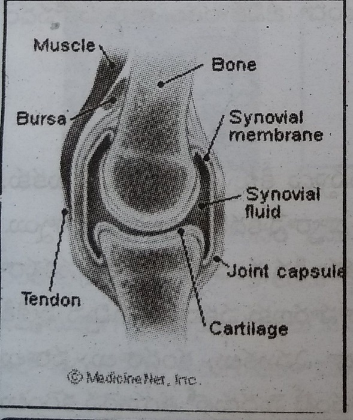
ఇన్ని రకాల హంగులతో ఈ శరీరం ఎక్కడ తయారయిందో తెలుసా? మనం పుట్టకముందు మన తల్లి గర్భంలోనే ఇన్ని రకాల డివిజనులు జరిగాయి. కన్ను, కాలు, కీలు మొదలగునవి ఎన్నో అవయవాలు కోటానుకోట్ల కణాల ద్వారా నిర్మించుకుంది. ఇది ఏమి విచిత్రమో, ఎంత చోద్యమో ఎవరికీ అర్థం కాదు. మనిషి కడుపులోంచి మనిషే పుడతాడు. అది కూడా శరీరంలో ఉండవలసిన అన్ని అవయవాలను, కేవలం తల్లిలోని అండం, తండ్రి లోని శుక్రకణం కలిసిన పిండంలోంచి ఇన్ని అవయవాలుగా విడగొట్టబడతాయి. అంతేకాదు, అచ్చం తల్లి, తండ్రి, మేనమామ, మేనత్త, తాత,.... ఇలా ఎవరో ఒకరి కలర్ తోనో, లేదా వారి ముఖ కవళికతోనో పుడుతుంటారు. వీటన్నింటికి కారణం జీన్సు అని కనుక్కున్నారు. అంతవరకే కాని ఆ పైన ప్రశ్నకు సమాధానం లేదు. ఈ జీన్స్ లో ఈ గుణాలన్నీ ఎలా ఏర్పర్చబడ్డాయో ఎవరికీ తెలీదు. ఇదే సృష్టి రహస్యం. మనిషి జన్మించక ముందే తల్లి గర్భంలో చక్కగా అన్ని లక్షణాలను పోగేసుకొని, అన్ని గుణాలను కలగలుపుకొని, శరీరంలో అన్ని అవయవాలను ప్రకృతి సిద్ధంగా, సహజంగా అద్భుతంగా నిర్మించుకొని జన్మించాడు. పుట్టిన తర్వాత ప్రకృతికి విరుద్ధమైన అలవాట్లతో మన చేతులారా మనమే నష్టపరుచుకుంటున్నాం. ఏదైనా తయారు చేయాలంటే, లేదా కొత్తగా నిర్మించాలంటే ఎంతో కష్టం కాని నష్టపరచడం, కూల్చడం ఎంత సులువండీ. ఒక బ్రిడ్జ్ కట్టాలంటే ఎంతో డబ్బు, సమయం, మనుషులు, యంత్రాంగం, తెలివితేటలు పని చేయాలండి. అదే బ్రిడ్జ్ ని కూల్చాలంటే ఎంతో సులువు. అదేవిధంగా పటిష్టంగా ఏర్పరచబడ్డ మన కీళ్ళ నిర్మాణాన్ని పాడు చేసుకోకుండా జీవితాంతం కాపాడుకోవడం మన ధర్మం.
కీళ్ళు - వాటి పని తీరు
కండరం సంకోచ, వ్యాకోచాలకు లోనయినప్పుడు కీళ్ళు ముందుకు, వెనుకకు, దగ్గరకు, దూరం జరగగలవు. కేవలం కీళ్ళు వుండడం ద్వారానే కదలికలు జరుగుతున్నాయి. కీళ్ళే లేకుంటే శరీరంలో కదలికలు లేవు. ఈ కీళ్ళకు అతకబడిన కండరాలు, వాటికి సరఫరా చేసే నరాలకు కూడా చాలా ప్రాధాన్యత వుంది. ఉదాహరణకు పక్షవాతం వచ్చిన వ్యక్తికి ఒక ప్రక్క కాలు, చేయి పనిచేయదు. వారికి కూడా ఎముకలు, కండరాలు, నరాలు అన్నీ వుంటాయి. అయినా ఎందుకు పనిచేయడం లేదంటే మెదడులో తయారైన కరెంటు చేయి, కాలు కండరాలకు అందడం లేదన్నమాట. మన ఇంట్లో స్విచ్ వేస్తే బల్బు వెలుగుతుంది. స్విచ్ ఆపివేస్తే బల్బు వెలగటం ఆగిపోతుంది. ఇది మామూలుగా జరిగే సంఘటన. కాని ఒక్కోసారి స్విచ్ వేసినా బల్బు వెలగదు. కారణం ఏ ఎలుకో వైర్లను కొరికివేసి వుండవచ్చు. తీగ మధ్యలో తెగిపోయి వుండడం ద్వారా విద్యుత్ స్విచ్ నుండి బల్బు వరకు ప్రవహించడం లేదన్నమాట. అలాగే మన మెదడు నుండి సంకేతాలు కండరానికి అందక చేయి, కాలు కదుపలేరు. పైకి ఎత్తలేరు. అంటే నరాలు సమర్థవంతంగా పని చేయకుంటే, కాళ్ళు, కీళ్ళు పనిచేయవు. అందుకోసం మన కీళ్ళు సమర్థవంతంగా పని చేయాలంటే ఎముకలు, కండరాలు, నరాలు సమర్థవంతంగా పనిచేయాలన్న మాట.
ఇలాగే మెదడు సమాచారాన్ని నరాల ద్వారా కీళ్ళను అంటిపెట్టుకున్న కండరాలకు పంపిస్తుంది. అప్పుడు కండరాలు సంకోచ వ్యాకోచాలకు లోనౌతాయి. కండరాలలోని సంకోచ, వ్యాకోచాల ద్వారా కీళ్ళు, ఎముకలలో కదలికలు వస్తాయి. ఆ కదలికల ద్వారానే మనం సమస్త పనులు చేసుకోగలుగుతున్నాం.
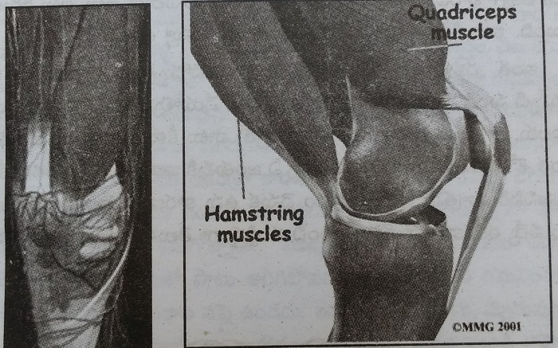
ఉదాహరణకు మనం నడుస్తున్నప్పుడు కాలు వెనుక అతుకబడిన కండరాలు సంకోచించడం ద్వారా కాలును పైకి లేపి మడుచుకోగలుగుతాం. వెంటనే కాలు ముందుభాగాన ఉన్న కండరాలు పనిచేయడం ద్వారా కాలు సాగదీసి ముందుకు వేస్తాం. ఇలా అడుగుతీసి, అడుగువేస్తూ ముందుకెళ్తున్నాం. ఇలా నడుస్తున్నప్పుడు మోకాళ్ళలోని పై ఎముక, క్రింద ఉన్న రెండు ఎముకల మీద బరువు పడుతుంది. అంత బరువులో కూడా సులభంగా కార్టిలేజ్ మరియు వాటిపై ఉన్న జిగురు లాంటి నూనె ద్వారా, చక్రం ఇరుసులాగా మృదువుగా కదులుతూ ఉంటుంది. ఎన్ని అడుగులు వేసినా, ఎంత పరుగులు తీసినా అరిగిపోకుండా ఒక ఎముకపై ఇంకో ఎముక చక్కగా పొందికగా కూర్చుండి రైలు ఇంజను ఇరుసులాగా అటు, ఇటు కదులుతూ ఉంటుంది. ఇలా కీళ్ళు చాలా సమర్థవంతంగా పని చేస్తూ ఉంటాయి.
కాళ్ళ ముందుభాగాన మరియు వెనుక భాగాన అతుకబడిన కండరాల సంకోచ వ్యాకోచాల ద్వారానే మనం అడుగుదీసి అడుగువేస్తూ ముందుకు నడవగలుగుతున్నాం. ఇలా నడుస్తున్నప్పుడు మోకాళ్ళలోని పై ఎముక, క్రింద ఉన్న రెండు ఎముకల మీద బరువు పడుతుంది. అంత బరువులో కుడా సులభంగా కార్టిలేజ్ మరియు వాటిపై ఉన్న జిగురు లాంటి నూనె ద్వారా, చక్రం ఇరుసులాగా మృదువుగా కదులుతూ ఉంటుంది. ఎన్ని అడుగులు వేసినా, ఎంత పరుగులు తీసినా అరిగిపోకుండా ఒక ఎముకపై ఇంకో ఎముక చక్కగా పొందికగా కూర్చుండి రైలు ఇంజను ఇరుసులాగా అటు, ఇటు కదులుతూ ఉంటుంది. ఇలా కీళ్ళు చాలా సమర్థవంతంగా పని చేస్తూ ఉంటాయి.
ఇంత చక్కటి అద్భుతమైన నిర్మాణంతో, మాహాద్భుతంగా నిరంతరంగా మనం పుట్టినప్పటి నుండి మనం జీవించినంత కాలం పని చేయాల్సిన కీళ్ళు, చిన్న వయస్సులోనే నొప్పులకు, వాపులకు గురికావడం, వయస్సుతో పాటు కీళ్ళు అరిగిపోయి దెబ్బ తినడం అత్యంత శోచనీయం. ప్రకృతిలో జీవిస్తున్న ఏ జంతువుకి ఇలా జరుగక పోవడం, కేవలం ఒక్క మనిషికి మాత్రమే ఇలా జరగడం వెనుక ఉన్న కారణాలు తెలుసుకునే ముందు, కీళ్ళకు వచ్చే రకరకాల వ్యాధుల గురించి సంక్షిప్తంగా తెలుసుకొనే ప్రయత్నం చేద్దాం.
3. కీళ్ళవ్యాధులు రకాలు
- కీలెరిగి వాత పెట్టాలి - రోగాన్ని బట్టే చికిత్స చేయాలి
- మానవ శరీరం మహాద్భుత యంత్రం - మంచిగా వాడుకోవాలి జీవితాంతం
- ఆరోగ్యం మన జన్మహక్కు - ప్రకృతి జీవనంతోనే అది మనకు దక్కు
- చిన్నపిల్లల్లో కూడా వస్తున్నాయి కీళ్ళ నొప్పులు - ప్రకృతిని అనుసరించకపోవడం వలనే మరి ఆ తిప్పలు
- యథా చిత్తమ్ - తథా దేహమ్
- ఇమ్యూనిటీ చక్కని రక్షణ వ్యవస్థ - అది పాడైతే తప్పదు రోగాలతో అవస్థ
- శరీరమొక దివ్యమైన యంత్రం - దాన్ని రక్షించుకునేదే ఇమ్యూనిటీ అనే యంత్రం
- సొంత కణజాలానికే ప్రమాదం - అదే ఆటో ఇమ్యూనిటీలోని విషాదం
- ఆశల వలయం త్రుంచు - ఆశయాల విలువలు పెంచు
- మనం పోయాక సుఖపెట్టేది ధర్మం - మనం ఉండగానే సుఖపెట్టేది ఆరోగ్యం
- ఆదిలో మానవుడు ప్రకృతికి పుత్రుడు - ఆధునిక మానవుడు వికృతికి మిత్రుడు
- కాల్షియం, ఫాస్ఫరస్ మూలకాలు - ఎముకల ఆరోగ్యానికి కారకాలు
- నాగరికత పేరుతో విషవలయం సృష్టించకు - వ్యసనాలతో ఆరోగ్యాన్ని విషపూరితం చెయ్యకు
- రోగం నుండి ఆరోగ్యానికి పయనం - పాటించండి ప్రకృతి జీవన విధానం
- ప్రకృతి ధర్మాలను అనుసరించు - ఆరోగ్యంగా ఆదర్శంగా జీవించు
- పొంచి ఉన్నది ముప్పు - జాగ్రత్త పడకపోవడం మన తప్పు
- తొలగాలంటే రోగ కారణం - ప్రకృతి వైద్యమే శరణం
- పెరిగాక మనిషి - తప్పు చేస్తున్నాడు అన్నీ తెలిసి
1. ఆస్టియో ఆర్థరైటిస్ (Osteo Arthritis)
ఆస్టియో అనగా ఎముక, ఆర్థా అనగా కీలు, ఐటిస్ అనగా వాపు (Inflammation). ఆస్టియో ఆర్థరైటిస్ అనగా ఎముకలతో ఏర్పడిన కీళ్ళలో వచ్చిన వాపు, నొప్పి బాధ అని అర్థం. వయసుతో పాటు కీళ్ళు అరిగిపోయి వాపు వస్తుందని వైద్యశాస్త్రం చెబుతోంది. 45 సంవత్సరాలు ఆపై బడిన వయస్సులో ఈ వ్యాధి వస్తుంది. స్త్రీలలో ఎక్కువగా కనిపిస్తుంది. ఆస్టియో ఆర్థరైటిస్ ముఖ్యంగా బరువును మోసే తుంటి కీళ్ళలో, మోకాళ్ళలో, వెన్నుపూసల కీళ్ళు (మెడ, నడుము నొప్పులు) మొదలగు వానికి వస్తుంటాయి. కీళ్ళు అరగడానికి కేవలం వయస్సే కారణమా లేక ఇతరత్రా కారణాలున్నాయా అని రీసెర్చ్ చేసినారు. అయిననూ సంపూర్ణ కారణాలు ఇంతవరకూ అర్థం కాలేదు. కారణాలు ఏవైనా కీళ్ళలో జరిగే మార్పులను మాత్రం కనుగొన్నారు. ముఖ్యంగా కీళ్ళలోని ఎముకల చివర్లలో అతకబడిన కార్టిలేజ్ వయసుతో పాటు అరిగిపోవడం జరుగుతుందని గమనించారు. ఈ కార్టిలేజ్ కి రక్త ప్రసరణ, నరాల సప్లై ఉండదు. ఇది చాలా మెత్తగాను, మృదువుగాను ఉంటుంది. అందుకే దీనికి కావలసిన ఆహారం సైనోవియల్ ద్రవం నుండి గ్రహిస్తూ ఉంటుంది. ఈ కార్టిలేజ్ లో కొన్ని ప్రత్యేకించి ప్రోగ్రాం కణాలుంటాయి. ఇవి కార్టిలేజ్ లోపలికి వచ్చే నీటిని సమన్వయపరుస్తూ బ్యాలెన్స్ మెయిన్ టైన్ చేస్తూ ఉంటాయి. అరిగి పోయిన కణాలను ప్రత్యేకంగా ఉన్న ప్రోగ్రాం కణాలు రిపేరు చేసుకుంటూ, నీటి టర్నోవరును బ్యాలెన్స్ చేసుకుంటూ ఉన్నంత కాలం ఏ ఇబ్బందీ ఉండదు. కాని వయస్సుతో పాటు అరిగిన (Wear & tear) కణాలకు సమానంగా రిపేరు జరగనప్పుడు సమతుల్యత దెబ్బతింటుంది. కార్టిలేజ్ కణాలు వేగంగా అరిగిపోవడం, దానికి సమానమైన వేగంతో కణాలు రిపేరు చేసుకోకపోవడంవల్ల చివరికి అందులో గుంటలు (pits) ఏర్పడి, నున్నగా ఉన్న కార్టిలేజ్ పొర దళసరిగాను, చాలా గరుకుగాను తయారవుతుంది. అంతేకాకుండా కార్టిలేజ్ లో కొన్ని రసాయనిక మార్పులు కూడా జరుగుతాయి. అందులో భాగంగా 1) కాండ్రాయిటిన్ కణాలు, కార్టిలేజ్ ని తినేయడం వలన కెరాటిన్ నిష్పత్తి దెబ్బతింటుంది. 2) కార్టిలేజ్ ను కాపాడే గ్లైకోజన్ ల గాఢత తగ్గుముఖం పడుతుంది. 3) కార్టిలేజ్ ను తినే ప్రొటియోగ్లైకాన్ లు, కార్టిలేజ్ చుట్టూ చేరి పీక్కొని తింటాయి. ఎప్పుడైతే పై రసాయనాల సమతుల్యత దెబ్బతింటుందో అప్పుడే అరిగిపోవడం జరుగుతుంది.
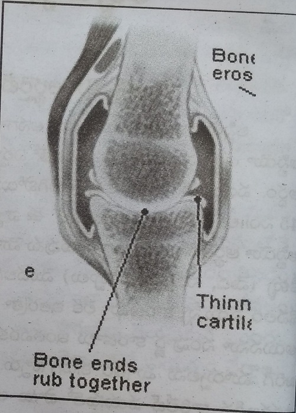
షాక్ అబ్సార్బర్ గా పని చేసే కార్టిలేజ్ ఎప్పుడైతే అరగడం మొదలైందో, నున్నగా ఉన్న ఉపరితలంపై చిన్న చిన్న పగుళ్ళు ఏర్పడి, గుంటలుగా మారి పూర్తిగా గరుకుగా తయారవుతుంది. ఇలా ఎముకలు ఒకదాని కొకటి రాసుకొని కొన్ని సంవత్సరాలలో మెత్తటి కార్టిలేజ్ పూర్తిగా అరిగిపోయి, ఎముక బయట పడుతుంది. రెండు ఎముకల మధ్య గ్యాపును పూరించడానికి ఎముక చివర్ల బుడిపెలు ఏర్పడతాయి. ఇలా ఎముకలు రాసుకున్నప్పుడు ఈ బుడిపెలు రాసుకొని లోపలి నరాలను నొక్కుతాయి. నరాల చివరలు నొప్పిని కలుగజేస్తాయి. తద్వారా మనకు నొప్పి వస్తున్నట్లు అనుభవం కలుగుతుంది. ఒక్కోసారి రాపిడి ఎక్కువై ఎముకల చివర్ల బుడిపెలు చిన్న చిన్న ముక్కలుగా విరుగుతాయి. దీనివలన కీలులో మరీ నొప్పి, వాపు పెరుగుతుంది. శరీరం తనది కాని దేనినైనా లోపల ఉంచుకోలేదు. బయటకు పంపే ప్రయత్నం (action) చేస్తుంది. కాని అక్కడ విరిగిన ముక్కలు బయటకు పోయే అవకాశం లేక నొప్పులు, వాపులు పెరుగుతుంటాయి. ఆస్టియో ఆర్థరైటిస్ లో ముఖ్యంగా వయసు పెరుగుతుంటే, వయస్సుతో పాటుగా కీళ్ళు అరిగిపోతాయి. ఇది వయస్సుతో పాటు వచ్చే మార్పు అని అంటారు నేటి వైద్యులు. ఎలా జీవిస్తే వయస్సు తరగకుండా వున్నట్లుగా శరీర అవయవాలను, ఆకృతిని ఉంచుకోవచ్చో మనిషి ఆలోచించక పోవడం శోచనీయం. బాహ్య సౌందర్యం కోసం ఖర్చు చేసినంతగా మరి దేనికీ ఖర్చు చేయడం లేదు. నేడు 30 సంవత్సరాల వయస్సు వున్న వాళ్ళకు కూడా కీళ్ళు అరిగిపోతున్నాయి. ఇది వయస్సు పెరగటం వలన అరిగినవి అని ఎలా అంటాం. నా ఉద్దేశ్యం ప్రకారం మనిషి ప్రకృతి ధర్మానుసారంగా జీవిస్తే వయస్సుతోపాటు అరగవు. అరగకూడదు అంతే. మరి ఇంకో ప్రక్క ప్రకృతిలోని జీవులను చూస్తే ముదుసలి వయస్సులో కీళ్ళు అరిగిన ఏ ఒక్క జంతువునైనా చూపించండి. అడవిలో పుట్టి, అడవిలో పెరిగే పులి, సింహం, జింక, నక్క, కుక్క, కుందేలు, తాబేలు, ఏనుగు, ఒంటె లేదా ఏ పక్షినైనా తీసుకువచ్చి వాటి ఎముకలను ఎక్స్ రే తీసి లేదా ఎముక డెన్సిటీని పరీక్షించి చూడండి. వాటికెందుకు వయస్సుతో పాటు అరగడం లేదు. అందుకే అరగడం అనేది తప్పు అనేది. మరి ఈనాడు ఎక్కువ మందికి కీళ్ళు ఎందుకు అరుగుతున్నాయంటే అందరూ తప్పుగానే జీవిస్తున్నారు. ప్రకృతికి దూరంగా జీవిస్తున్నారు. రోజురోజుకు ప్రకృతికి దూరాతి దూరంగా బ్రతకడం నేర్చుకుంటున్నారు. మానవతా విలువలకు అతీతంగా జీవిస్తున్నారు. గత కొన్ని దశాబ్దాలుగా మానవ జీవన సరళిని పరిశీలిస్తే ఎప్పుడో 60 సంవత్సరాల పైన రావలసిన కీళ్ళ వ్యాధులు నేడు 30 సంవత్సరాలకే వస్తున్నాయి. ఈ వ్యాధులు ఎప్పుడూ ఒకే రకంగా ఉండడం లేదు. వయస్సుతో పాటు మార్పు రావడం లేదు. శరీరంలో కీళ్ళు అరగడం అనేది ముఖ్యంగా మానసిక ఒత్తిడుల ద్వారా జరుగుతుంది. మానసిక ఒత్తిడుల ద్వారా చిన్న వయస్సులోనే ముదుసలితనం (Pre mature oldage) వచ్చేస్తుంది. అందుకే నేడు చూడండి. 50 సంవత్సరాలకు తెల్లబడాల్సిన వెంట్రుకలు 20 సంవత్సరాలకే తెల్లబడుతున్నాయి. 60 సంవత్సరాలకు ముడతలు పడాల్సిన ముఖంపై చర్మం 30 సంవత్సరాలకే ముడతలు పడుతుంది. చిన్న చిన్న విషయాలకు ఎక్కువగా స్పందిస్తూ, అనవసరంగాను, అధికంగాను, అత్యంత వేగవంతంగాను ఆలోచనలు చేస్తూ, మానసిక ఒత్తిడులకు లోనౌతున్నారు. మనస్సులో వచ్చే వేగవంతమైన ఆలోచనలతో, శరీరంలో వేగవంతంగా రసాయన మార్పులు చెంది, వేగంగా వయస్సును దాటేస్తున్నారు. అనగా తక్కువ సంవత్సరాలలోనే ఎక్కువ వయస్సును అనుభవిస్తున్నారు. అందుకే తక్కువ వయస్సుకే కీళ్ళు, కాళ్ళు అరిగిపోవడం జరుగుతుంది. కనుకనే ఈ తరుగుదల, దానికి తోడుగా ఇన్ని ఇబ్బందులు. ఇకనైనా కళ్ళు తెరిస్తే, విషయం అర్థం చేసుకుంటే నేను వ్రాసిన ఈ పుస్తకానికి సార్థకత. నాకు కీళ్ళ నొప్పులు, బాధలు లేవు. ఇక ముందు జీవితంలో కూడా రావద్దని అనుకున్నాం. ఎలా జీవిస్తే ఆరోగ్యంగా జీవిస్తామో మాకు అర్థం అయ్యింది. ఎలా బ్రతికితే జీవించినన్నాళ్ళు కీళ్ళు, కాళ్ళు సమర్థవంతంగా ఉంచుకోగలుగుతామో అర్థం చేసుకొని అలా జీవిస్తున్నాం మరి. ఈ జీవన విధానంలో సత్యం ఉందని తెలుసుకున్నాం కనుక మాతో పాటు మీరు కూడా ఇలా జీవించండి అని చెబుతున్నాం. మరి మేము అందించబోయే సూచనలు పాటించి జీవితంలో ఒక్కరోజు కూడా కీళ్ళవ్యాధులతో బాధపడకుండా జీవించండి.
కీళ్ళలోని కార్టిలేజ్ సమర్థవంతంగా పనిచేయాలంటే మధ్యంతరంగా (Moderate) కీళ్ళను వాడుకుంటూ ఉండాలి. వాడకుంటే కండరాలు ఎలాగైతే బలహీనమవుతాయో, అలాగే కీళ్ళు కూడా వాడకుంటే బలహీనమయ్యే అవకాశాలున్నాయి. నేటి నాగరికత జీవనంలో కీళ్ళను, కాళ్ళను, చేతులను వాడనవసరం లేకుండా కేవలం చేతి వ్రేళ్ళను మీటితేనే పనులు జరిగిపోయే యుగం. కంపూటర్ల జీవితం, కార్ల మీద ప్రయాణం, చేతిలోనే ఫోన్లు, ఇంట్లోనే ప్రపంచాన్ని వీక్షిస్తుండగా, ఇక కీళ్ళకు, కండరాలకు పని లేదు. కీళ్ళు అరిగిపోవడానికి బరువు కూడా ఒక కారణమై ఉన్నది. మరి మంచి బలిష్టమైన కీళ్ళు కావాలంటే, వాటికి అతకబడిన కండరాలు బలంగా ఉండాలి. అవి బలంగా ఉండాలంటే మంచి బలమైన పనులు, వ్యాయామం జరగాలి. కాని 'అతి' ఎప్పుడూ మంచిది కాదు. 'అతి సర్వత్ర వర్జయేత్' అన్నారు పెద్దలు. ఎప్పుడూ మధ్యమంగా (Moderate) ఉండడమే మంచిది. (మరిన్ని విషయాలను వివరంగా కీళ్ళ నొప్పులకు కారణాలు అనే ఛాప్టర్ లో తెలుసుకుంటాం.)
ఆస్టియో ఆర్థరైటిస్ ను ఎలా తెలుసుకోవచ్చు
ఆస్టియో ఆర్థరైటిస్ అనేది ముఖ్యంగా కార్టిలేజ్ అరగటం ద్వారా వస్తుంది. అందుకని ఎక్స్ రే ద్వారా లేదంటే యం.ఆర్.ఐ. ద్వారాను కీళ్ళలో సందు ఎంత తగ్గిందో తెలుసుకోవచ్చు. కార్టిలేజ్ అరగటం వలన ఎముక చివర్లు చిట్లి, ఆస్టియోఫైట్ బుడిపెలు వచ్చాయా? లేదా? ఒకవేళ బుడిపెలు వస్తే ఎంతగా పెరిగాయి. ఏ వైపుకు పెరిగాయి అని తెలుసుకోవచ్చు. అందుకే ముందు మోకాలైనా, తుంటికైనా లేదా వెన్నెముకకైనా ఎక్స్ రే ద్వారా కనుక్కోవచ్చు.
2. రుమటాయిడ్ ఆర్థరైటిస్ (Rheumatold Arthritis)
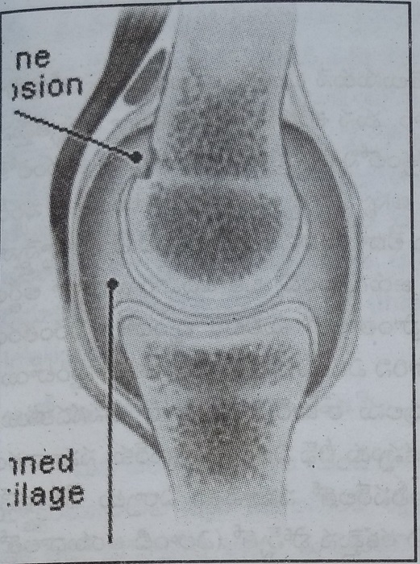
ఈ రకమైన కీళ్ళ వ్యాధులలో ముఖ్యంగా 2 కన్న ఎక్కువ కీళ్ళలో వాపు (Inflammation), నొప్పి ఉంటుంది. చిన్న పిల్లలలో కూడా ఈ వ్యాధి కనబడుతుంది. అది కూడా స్త్రీలలో ఎక్కువగా కనబడుతుంది. చిన్న పిల్లల చేతివ్రేళ్ళు లేదా కాళ్ళ వ్రేళ్ళలో ఏదో ఒక కీలు ముందు వాపు, నొప్పి వస్తుంది. కాని 3,4 వారాలలో దానికదే తగ్గిపోతుంది. తిరిగి ఎడమ చేతి వ్రేలుకి వాపు, నొప్పి వస్తుంది. తిరిగి అది కూడా తగ్గి కుడి మోకాలుకో లేదా ఎడమ మోకాలుకో వస్తుంది. ఇలా చిన్న కీళ్ళకు ముందుగా వచ్చి, ఏ చికిత్స తీసుకోకుండానే దానికదే తగ్గిపోయి, పెద్ద కీళ్ళకు రావడం జరుగుతుంది. శీతాకాలంలో ఈ వ్యాధి లక్షణాలు బాగా ముదురుతాయి. ఎండాకాలంలో కాస్త తగ్గుముఖం పడుతుంటాయి. ఒక్కోసారి జ్వరంతో మొదలవుతుంది. ఈ వ్యాధి బాగా ముదిరితే, శరీరం బలహీనమవుతుంది. మందులు వేసుకుంటే తగ్గుతుంది. తిరిగి మళ్ళీ వస్తూ వుంటుంది. ఒక్కోసారి సంవత్సరంలో ప్రతి 3-4 నెలలకు ఒకసారి నేనున్నాను అన్నట్లుగా కనబడుతుంది. ఆ సమయంలో మళ్ళీ కీళ్ళు వాయడం, నొప్పి రావడం, జ్వరం, బలహీనత ఇవన్నీ తిరిగి కనబడుతూ ఉంటాయి. సాధారణంగా మనిషి ఎక్కువ ఆందోళనకు, మానసిక ఒత్తిడులకు లోనైనపుడు గాని లేదా శారీరకంగా బాగా ఒత్తిడులకు లోనైనపుడు ఈ వ్యాధి కనబడుతూ ఉంటుంది. రుమటాయిడ్ ఆర్థరైటిస్ తరచుగా వస్తూ ఉండడం ద్వారా మొదటిసారి కన్నా ఆ తర్వాత వచ్చినప్పుడు వ్యాధి లక్షణాలు ఎక్కువ కీళ్ళకు రావడం జరుగుతుంది. పైగా ఎక్కువ రోజులు బాధపడుతూ నరకాన్ని చూపిస్తుంది. అంతేకాదు ఇలా వాపు వస్తూ మానిపోతూ చివరికి కీళ్ళు వంకరలు (deformaties) పోతుంటాయి. ఈ స్థితి వచ్చిందంటే చాలా ఇబ్బంది పడాల్సి వస్తుంది. ఇక దీర్ఘకాలిక వ్యాధిగా ముదిరిపోయిందని లెక్క. ఈ వ్యాధి ప్రపంచవ్యాప్తంగా ప్రబలి ఉన్నా శీతల దేశాలలో ఎక్కువగా ఈ రుమటాయిడ్ ఆర్థరైటిసున్నట్లుగా వైద్యుల అంచనా.
కారణాలు: ప్రత్యేకమైన కారణాలంటూ ఇంతవరకు సంపూర్ణంగా అర్థంకాలేదు. కాని అన్నింటిలో కన్నా ఆటో ఇమ్యూనిటీ ఓ ముఖ్యకారణంగా గుర్తించారు.
ఇమ్యూనిటీ అనగా ఏమి?
ఆటో ఇమ్యూనిటీ అంటే ఏమిటో తెలుసుకునే ముందు అసలు ఇమ్యూనిటీ (రోగ నిరోధక శక్తి) అంటే ఏమిటో తెలుసుకుందాం. మన శరీరంలో అంతర్గతంగా అద్భుతమైన రోగ నిరోధక శక్తి దాగి వుంది. ముఖ్యంగా రక్తంలోని తెల్లరక్తకణాలకు (WBC) శరీరంలోకి దూసుకు వచ్చిన బ్యాక్టీరియా, వైరస్ లను, అన్య పదార్థాలు (Foreign bodies), సర్జరీ ద్వారా ట్రాన్స్ ప్లాంట్ చేసిన ఇతరుల కణాలు లేదా శరీరానికి హాని కల్గించే ఏ పదార్థాన్నైనా ఇట్టే పసిగట్టగలిగే శక్తి ఉంది. ఇది ఎలా జరుగుతుందో ఒక ఉదాహరణ ద్వారా అర్థం చేసుకోవచ్చు. మన దేశానికి సరిహద్దు ప్రాంతాలలో మిలిటరీ బృందాలు నిరంతరం కాపలా కాస్తూ ఉంటాయి. బయట దేశపు వారిని ఎవరినీ లోనికి రాకుండా చూస్తుంటాయి. మన దేశ సరిహద్దు గీత దాటి వచ్చే శత్రువులను రాడార్ సిస్టం ద్వారా పసిగడతాయి. శత్రువుల రాకపోకలు, స్థితిగతులపై ఎప్పటికప్పుడు చీఫ్ విజిలెన్స్ ఆఫీసర్ కు సమాచారం అందుతుంది. అతను వెంటనే మిగతా ఆఫీసర్ లతో సమావేశం ఏర్పాటు చేసి వచ్చే శత్రు సైన్యాలు ఎక్కడి నుండి వస్తున్నాయి, ఏ రకమైన ఫోర్స్ తో (ఎలాంటి ఆయుధాలతో) ముట్టడించబోతున్నారనే విషయాలను వారితో చర్చించుతారు. వెంటనే ఏ ఆఫీసర్ ఏమి చేయాలో, ఏ ఫోర్స్ ఉపయోగించాలో, ఎవరిని ఎక్కడ పెట్టాలో అన్ని విషయాలను సవివరంగా, అందరికీ ఆర్డర్ ఇస్తారు. తగిన బలాన్ని ఉపయోగించి యుద్ధరంగం సిద్ధం చేసి, యుద్ధబరిలోకి దిగుతారు. అయితే ఇందులో అటునుంచి కొంతమంది శత్రుసైన్యం అలాగే ఇటు నుంచి కొంత సైన్యం నేల మట్టమవుతారు. ఇది ఏ యుద్ధంలోనైనా సహజం కదా. మరి యుద్ధం పూర్తి అయ్యేవరకు ఆ ప్రదేశంలో కర్ఫ్యూ విధిస్తారు. అన్ని కార్యక్రమాలను నిలిపివేస్తారు. కేవలం పాలు, నీళ్ళు, ఆహారంలాంటి నిత్యావసరాల కోసం మాత్రమే కర్ఫ్యూ సడలిస్తారు. యుద్ధం పూర్తి అయ్యేంతవరకు ఇలాగే సాగుతుంది. అచ్చంగా దేశంలో బోర్డర్ లైన్ పోలీస్ వ్యవస్థలాగా రక్తంలోని తెల్లరక్తకణాలు దూసుకొని రాగానే గుర్తిస్తాయి. వెంటనే శరీరంలోని రక్షక స్థావరాలను మేలుకొలుపుతాయి. ఈ స్థావరాలు శరీరంలో ముఖ్యంగా గొంతుకు ఇరువైపులా (టాన్సిల్స్), చంకల్లో, గజ్జల్లో, ఛాతీలో లింపు గ్రంథులుంటాయి. ఈ గ్రంథులకు సమాచారం పంపుతాయి. ఎక్కడి నుండి ఎలాంటి రక్షక యంత్రాంగం (లింఫోసైటులు, ఇసినోఫిల్స్, మోనోసైటులు లేదా యాంటిబాడీలు, కాంప్లిమెంట్ లు లేదా లోకల్ హార్మోనుల లాంటి రసాయనాలను) ఉత్పత్తి చేసి పంపాలో, వచ్చిన బ్యాక్టీరియా, వైరస్ రకాలనుబట్టి తయారు చేసుకొని రక్తంలోకి విడుదల చేసుకుంటుంది. వెంటనే రక్షక కణాలు యుద్ధ ప్రదేశానికి అనగా వాపు, నొప్పి (Inflammation) ఉన్న చోటికి చేరుకుంటాయి. మన రక్షక కణాలలోని కెమికల్స్ విడుదల అయి వెంటనే బ్యాక్టీరియా, వైరస్ పై పొరను కరిగించి చంపుతాయి. ఈ ఘర్షణలో మనలోని కొన్ని తెల్ల రక్త కణాలు చచ్చిపోతాయి. అలా చచ్చిపోయినవి చీము రూపంలో గాయం వద్ద నుండి బయటకు పోతాయి. ఇదంతా చాలా సంక్లిష్టంగా జరిగే కార్యక్రమం. ఇమ్యూనిటీ కార్యక్రమంలో ఎన్నో రకాల బయోకెమికల్ రియాక్షన్ లు జరుగుతాయి. ఈ రియాక్షన్ జరగడానికి ఎంతో విజ్ఞత (Intelligence) కావాలి. మన రక్తానికి అంత Intelligence ఉంది.
ఆటో ఇమ్యూనిటీ అనగా ఏమి?
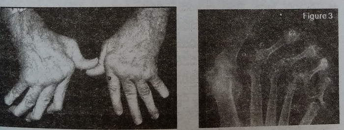
మన దేశాన్ని శత్రువుల నుండి కాపాడుకొనే యంత్రాంగంలాగ మన శరీరాన్ని బ్యాక్టీరియాలాంటి శత్రు కణాలనుండి రక్షించుకొనే విధానాన్ని ఇమ్యూనిటీ అంటారు. ఇక ఆటో ఇమ్యూనిటీ అనగా మన విజిలెన్స్ ఆఫీసర్ కి మతి భ్రమించి మన ప్రజలను శత్రువులుగా తలంచి, మన సైనికులకు మన ప్రజలను చంపమని ఆర్డర్ ఇస్తే ఎలాగుంటుంది. పాపం మన యుద్ధ యంత్రాంగానికి మన ప్రజలు బలై పోతారు. అభం శుభం తెలియని మన ప్రజలందరు మన సైనికుల చేతిలోనే అసువులు విడుస్తారు. మన దేశ మాజీ ప్రధాని ఇందిరా గాంధీ తన అంగరక్షకుడి చేతిలో తన ప్రాణాలను కోల్పోయినట్లుగా ఉంటుంది. రైతు కష్టపడి పంట వేసుకొని, ఏ జంతువులు ముట్టకుండా కంచె వేసి కాపలాపెడితే, ఆ కంచే చేనును మేస్తే ఎలా ఉంటుంది. అలాగే మన శరీరపు తెల్ల రక్తకణాలు వెళ్ళి మన శరీరపు కీళ్ళలోని కార్టిలేజ్, సైనోవియల్ పొరను శత్రువుగా భ్రమించి, తిని వేస్తూంటే ఏమౌతుంది. యాక్షన్, రియాక్షన్ మధ్యలో కీళ్ళలో వాపు, నొప్పి వస్తుంది. నొప్పి ఉండడం ద్వారా కీళ్ళను సరిగా కదిలించలేము. కదలించక పోవడం ద్వారా, సరియైన పద్ధతిలో వాడలేక పోవడం ద్వారా కీళ్ళ చుట్టూ ఉన్న కండరాలు బలహీనమవుతాయి. కొన్ని రోజులకు కీలు లోపల తత్వం పూర్తిగా మారిపోయి సైనోవియల్ పొర దెబ్బతినడం ద్వారా, దానిలోంచి వచ్చే ద్రవం రాదు. కీళ్ళలో నీరు ఎండిపోవడం, ఎముకలు కలిసిపోవడం జరిగి కీళ్ళు వంకరలు (deformity) పోతాయి. గాయం మానినాక దాని మచ్చ మిగిలినట్లుగా, కీళ్ళు కూడా వంకరలు పోయి అది పర్మనెంటుగా ఉండిపోతుంది.
సైకో న్యూరో ఇమ్యునాలజీ
తరతరాలలో వచ్చిన మార్పు, నాగరికతతో వచ్చిన ముప్పు. ఆనాటి నుంచి నేటి వరకు మానసికంగా ఎంతో మార్పు వచ్చింది. నేడు కంప్యూటర్ విప్లవం వచ్చి, శరీరానికి ఎంత మాత్రం శ్రమ లేకుండా పోయింది. పైగా మానసికంగా విపరీతమైన శ్రమ పెరిగిపోయిన విషయం మనందరికీ తెలిసిందే. మనస్సుకి శరీరానికి చాలా అవినాభావ సంబంధం ఉంది. మనస్సులో కదిలే ఆలోచనల ద్వారా శరీరంలో మార్పులు రావడం సహజం. ఉదా:- చింతకాయనో, తాజా మామిడికాయనో లేదా తాజా ఉసిరికాయనో గుర్తు చేసుకోగానే నోట్లో నీళ్ళు ఊరడం జరుగుతుంది. ఊహించింది మనసులో కాని లాలాజలం ఊరింది నోట్లో. ప్రక్క ఇంట్లో స్వీటు, హాటు, అలాగే కమ్మటి వంటల ఘుమ ఘుమ వాసనలు వస్తుంటే నోట్లో లాలాజలం ఊరుతుంది. కడుపులో ఆసిడ్ వూరి ఆకలివేస్తుంది. 'అబ్బా, తింటే బాగుండు' అనిపిస్తుంది కదా. అదే మాదిరిగా ఏవేవో మనసు బాధపడే ఆలోచనలు చేసినపుడు, ఆవేశం, కోపం పెరుగుతుంది. తను ఆ సమయంలో ఏం చేస్తాడో తనకే తెలియదు. మనసు చిరాకుగా ఉంటుంది. అలాంటి పరిస్థితులలో శరీరం తెలియకుండా విపరీతమైన రసాయనిక మార్పులకు లోనవుతుంది. శరీరాన్ని నష్టపరిచే రసాలు, సైటోకైనిన్స్ లాంటి రసాయనాలు రక్తంలోకి విడుదల అవుతాయి. అప్పుడు కేంద్ర నాడీవ్యవస్థ డిస్టర్బ్ అవుతుంది. తద్వారా శరీరంలోని ఇమ్యునిటి వ్యవస్థను దెబ్బతీస్తుంది. కోపంగా ఉన్నప్పుడు మంచి స్నేహితుడని కూడా చూడకుండా ముందు తిడతాం, ఆ తర్వాత అయ్యో ఎందుకిలా చేసానని బాధపడతాం. అలాగే మనల్ని రక్షించే వ్యవస్థనే దెబ్బ తీస్తుంది. ఇలా దీర్ఘకాలికంగా జరగడం ద్వారా చివరికి ఆటో ఇమ్యూనిటిలో ఏం జరుగుతుందో అలాగే జరిగే అవకాశం కలదు. ముఖ్యంగా స్త్రీలు నిత్య జీవితంలో ఎన్నో రకాల ఆటు పోటులకు లోనవుతారు. వారి జీవితంలో రకరకాల ఒత్తిడులకు లోనవుతుంటారు. ఇవి బయటనుంచి కాకపోయినా శరీరంలో ఓ భాగంగా జరుగవచ్చు. ఉదాహరణకు గర్భం దాల్చడం, ప్రసవించడం, ముట్లు ఆగిపోవడం లాంటి ఎన్నో సందర్భాలలో తెలియని ఒత్తిడులకు తను లోనవుతుండడం జరుగుతుంది. తద్వారా తనపై తను కంట్రోలు చేసుకోలేక ఇబ్బందులకు, నొప్పులకు లోనవుతారు.
ఎలా గుర్తించవచ్చు?
ముఖ్యంగా రుమటాయిడ్ ఆర్థరైటిస్ కీళ్ళ వ్యాధి ఉందా, లేదా అని తెలియడానికి రక్త పరీక్ష చేస్తుంటారు. రక్త పరీక్షలో RA Factor ని పరీక్షిస్తారు. ఒక వేళ RA Factor పాజిటివ్ గా వస్తే, మీరు రుమటాయిడ్ ఆర్థరైటిస్ తో బాధపడుతున్నట్లుగా నిర్ధారణ చేస్తారు. ఒక్కోసారి RA Factor నెగటివ్ గా కూడా రావచ్చు. దీనిని సీరోనెగెటివ్ రుమటాయిడ్ ఆర్థరైటిస్ అంటారు. అంటే రక్త పరీక్షలో తప్ప మిగతా లక్షణాలు అనగా తరచుగా జ్వరం రావడం, కీళ్ళలో వాపులు, నొప్పులు రావడం, మనిషి బలహీనం కావడం జరుగుతుంది. అంతేకాక దీర్ఘకాలికంగా బాధపడే వారిలో కీళ్ళు కదలక పోవడం, వంకరలు పోవడం, శరీరం పూర్తిగా క్షీణించడం కూడా జరుగుతుంది.
3. ఒత్తిడులకు సంబంధించిన కొన్ని రకాల రుమాటిక్ సమస్యలు
ఆంకైలోజింగ్ స్పాండిలోసిస్
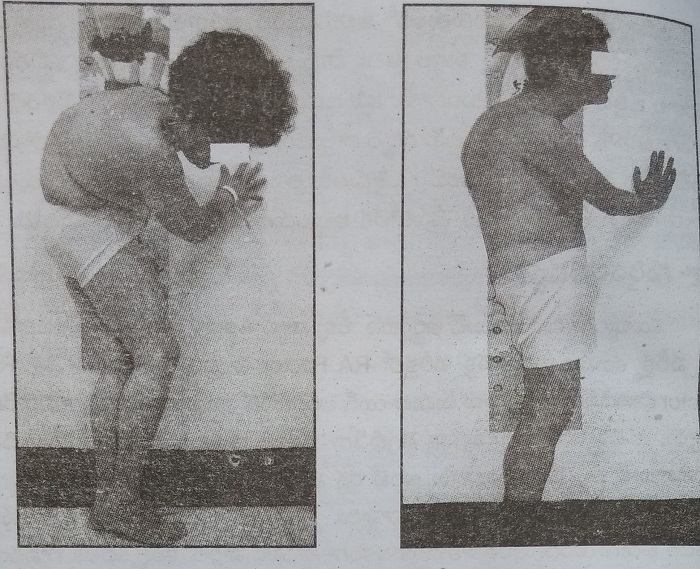
ఈ వ్యాధి ముఖ్యంగా పురుషులకు వస్తుంది. యుక్త వయస్కులలో కనబడుతుంది. నిజానికి మన వెన్నెముక 'సితార' సంగీత పరికరం లాంటి యఫ్ అనే ఇంగ్లీషు అక్షరాన్ని పోలిన చక్కటి ఆకృతిని కల్గి ఉంటుంది. స్త్రీలు ఒక సూదిలో దారం వేసి పూసలు ఒకదానిపై ఒకటి గ్రుచ్చినట్లుగా, మన వెన్నెముకలో 33 వెన్నుపూసలుంటాయి. ఆ పూసల మధ్యలో మెత్తని కుషన్ లాంటి డిస్క్ ఉంటుంది. సహజంగా మెడ భాగంలోనూ, నడుమ భాగంలోను కదలికలు ఎక్కువగా ఉంటాయి. మధ్యలో ఉన్న వెన్నుపూసల్లో కొద్దిపాటి కదలికలు మాత్రమే ఉంటాయి. ఈ వెన్నుపూస కీళ్ళలో వాపు, నొప్పి వస్తూ, తగ్గుతూ చివరికి కీళ్ళలోని సైనోవియల్ పొర దెబ్బతింటుంది. దీర్ఘకాలికంగా ఇలా వస్తూ, తగ్గుతూ ఉండడం వలన చివరికి కీళ్ళు ఒకదానితో ఒకటి ఫెవికాల్ వేసి అతికినట్లుగా గట్టిగా అతికించినట్లవుతుంది. ఇక వెన్నముకలో ఎలాంటి కదలికలుండవు. ముందుకు వంగలేరు. వెనుకకు వంగలేరు. ఒకవేళ వంగే ప్రయత్నం చేసినా విపరీతమైన నొప్పి వస్తుంది. వెన్నెముక పై నుంచి 4-5 వెదురు బద్దలు వేసి కదలకుండా బ్యాండేజ్ వేస్తే మనిషి పరిస్థితి ఎలా ఉంటుంది. అలాగే వెదురు బొంగులాగా బిగదీసుకొని ఉంటుంది. అందుకే ఈ వ్యాధిని స్పైన్ డిసీజ్ అంటారు. వెన్నెముక చుట్టూ ఉన్న కండరాలు నొప్పిగా ఉంటాయి. శరీరంలోని కండరాలన్నీ బలహీనమవుతాయి. మానసికంగా, శారీరకంగా ఎంతగానో కృంగిపోతారు. వెన్నెముకకు ఉండాల్సిన ఒరిజినల్ ఆకృతి దెబ్బతిని వక్రమైన ఆకృతులను పొందుతుంది. కొంత మందికి వెన్నెముక ముందుకు వంగి పోతుంది. దీనిని కైఫోసిస్ (Kyphosis) అంటారు. వెన్నెముక ముందుకు వంగి వున్నందున మనిషి పూర్తిగా ముందుకు వంగిపోతాడు. నిటారుగా నిలబడలేడు. కొంతమందిలో ఈ పరిస్థితికి వ్యతిరేక దిశలో వెన్నెముక వంగి పోతుంది. అనగా బాగా వెనుకకు వంగి ఉంటుంది. దీనిని లార్డోసిస్ (Lardosis) అంటారు. ఈ వ్యాధి ద్వారా వెన్నెముక పూర్తిగా వెనుకకు వంగి ఉండడం వలన మనిషి బాగా వెనుకకు వంగి నడుస్తుంటాడు. ఎక్కువగా వెనుకకు వంగి నడిచేటప్పుడు చూచేవారికి పడిపోతాడా? అన్నట్లుగా ఉంటుంది. ఈ మనిషి ఇలా స్టైల్ గా నడుస్తున్నాడేంటి అనే అనుమానం వస్తుంది. కాని పాపం ఈయన గారు మాత్రం ఏమి చేయగలరు. ఆ రోగ తత్వం అలాంటిది. కొంత మంది కుడివైపుకు గాని, ఎడమవైపుకు గాని వంగి నడుస్తుంటారు. వారి వెన్నెముక ప్రక్కలకు వంగిపోతుంది. దీనిని స్కోలియోసిస్ (Scoliosis) అంటారు. ఇన్ని రకాలుగా మనిషి ముందుకు, వెనుకకు, కుడి ప్రక్కకు గాని లేదా ఎడమ ప్రక్కలకు గాని వంగి నడవడం అనేది వారి వెన్నెముకపై ఆధారపడి ఉంటుంది. మొదట్లోనే నడక మారుతుందనగానే జాగ్రత్త పడాలి. వెన్నెముకలోని పూసకు పూసకు మధ్య మెత్తటి కార్డిలేజ్ తో తయారుచేయబడిన డిస్కు ఉంటుంది. అందుకే ఈ రెండింటి మధ్య గ్యాప్ ఉంటుంది. ఈ వెన్నుపాము నుండి వెలువడిన నరాలు, శరీరంలోని అన్ని అవయవాలకు సప్లై చేస్తున్నాయి. వెన్నెముక లోని ఏ వెన్నుపూస అరిగినా, దెబ్బతిన్నా, ఆయా నరాలపై ఒత్తిడి కలిగి తీవ్రమైన నొప్పి, బాధలకు గురిచేసే అవకాశం ఉంది. మన అరోగ్యానికి, వెన్నెముకకు అంత దగ్గరి సంబంధం ఉంది. అందుకే ప్రకృతి వైద్యంలో ఓ ప్రముఖుడు వెన్నెముక గురించి ఇలా అన్నాడు. మనిషి యొక్క ఆరోగ్యం వెన్నెముక యొక్క కదలికల తీరు మీద ఆధారపడి ఉంది. The health of an individual depends on the felxibility of the spine.
4. కీళ్ళకు కాకుండా ఇతర అవయవాలకు వచ్చే రుమటాయిడ్ వ్యాధులు
ఫైబ్రో మయాల్జియో(Fibromyalgia)
ఇది కూడా ఒక రకమైన రుమాటిక్ వ్యాధికి సంబంధించినది. రుమాటిక్ వ్యాధి కీళ్ళకే రావక్కర్లేదు. మిగతా అవయవాలకు కూడా వస్తూ వుంటుంది. ఇది కండరాలకు వచ్చే వ్యాధి. ముఖ్యంగా ఈ వ్యాధిగ్రస్తులకు శరీరమంతా నొప్పులుంటాయి. లేదా ఒక భాగంలో నొప్పిగా ఉంటుంది. ఆ తర్వాత అక్కడ తగ్గుముఖం పడుతుంది. తర్వాత రోజు ఇంకో భాగంలోని కండరాలలో నొప్పిగా ఉంటుంది. ఇలా ఒక ప్రదేశం నుండి ఇంకో ప్రదేశంలోని కండరాలలో నొప్పి తగ్గుతూ, వస్తూ మారుతూ ఉంటుంది. ఈ వ్యాధితో బాధపడుతున్న వారికి కండరాలను ముట్టుకోనివ్వదు. చేయి తగిలితేనే విపరీతమైన నొప్పిగా ఉంటుంది. ముఖ్యంగా ఈ వ్యాధి జీవనపద్ధతి (Life style) తప్పుగా ఉన్నవారికి వస్తుంది. చీటికి మాటికి మానసికంగా వ్యధకు లోనయ్యే వారికి వస్తుంది. వీరిలో నార్మల్ గా ఉన్న సైకో న్యూరో ఇమ్యునాలజి పద్ధతి కాస్త తారుమారు అయ్యి, ఈ రకమైన కండరాల నొప్పులకు దారి తీస్తుంది.
తరచుగా అలసటకు గురి అవడం (Chronic Fatigue Syndrome):
ఇది చాలా విచిత్రమైన వ్యాధి. మనిషి ఊర్కెనే అలసిపోతాడు. ఎప్పుడు నీరసంగా ఉంటాడు. జీవితం పెద్ద భారంగా గడుపుతాడు. ఏ చిన్న పని చేసినా చాలు, తను రోజంతా ఆగకుండా బండలు కొట్టినట్లుగా, సమ్మెట కొట్టినంతగా అలసిపోతాడు. ఒక గంట పనిచేస్తేనే ఆగకుండా 4 గంటలు పరుగుతీస్తే వచ్చినంత అలసట ఉంటుంది. శరీరంలో ఏ భాగాన్ని ముట్టుకున్నా, తాకినా చెప్పలేనంత నొప్పిగాను, ఇబ్బందిగాను ఉంటుంది. ఇటు ప్రక్కగా ఉన్న చేయి తీసి అటు ప్రక్కకు తిప్పాలంటే మహా గగనం అవుతుంది. మనిషి చూడడానికి చాలా బద్ధకంగాను, నీరసంగాను, అత్యంత అలసటతోను ఉంటాడు. ఏ పనీ చేయాలనిపించని మనస్తత్వం వచ్చేస్తుంది.
5. వెన్నెముక సంబంధిత వ్యాధులు
వెన్నెముక సంబంధిత సమస్యల గురించి తెలుసుకునే ముందు, వెన్నెముక నిర్మాణం తెలుసుకుందాం.
మనం నిట్ట నిలువుగా, నిటారుగా నిలబడాలంటే తప్పక వెన్నెముక కావాలి. వెన్నెముక సపోర్టుతోనే అన్ని పనులు చేయగలుగుతున్నాం. మనం కూర్చోవాలన్నా, పడుకోవాలన్నా, నిలబడాలన్నా, నడవాలన్నా, పరుగెత్తాలన్నా మనకు ముఖ్యంగా కావల్సింది వెన్నెముక. మనిషి ముఖంలో హావ భావాలు, చురుకుతనం, ప్రేమ, ఆప్యాయత మొదలైనవి అన్నీ వెన్నెముక పైననే ఆధారపడి వుంటాయి. మన బాడి లాంగ్వేజ్ అంతా వెన్నెముక పనితీరుపైనే ఆధారపడి ఉంటుంది.
మన వెన్నెముక 33 వెన్నుపూసలతో తయారు చేయబడింది. 5 రకాల వెన్నుపూసలున్నాయి.
మెడ భాగంలో (Cervical Vertibra) 7 పూసలు
వెన్ను భాగంలో (Thoracic Vertibra) 12 పూసలు
పై నడుమ భాగంలో (Lumbar Vertibra) 5 పూసలు
మధ్య భాగంలో (Sacral Vertibra) 5 పూసలు
క్రింది భాగంలో (Coccyx) 4 పూసలు
మొత్తం 33 పూసలు
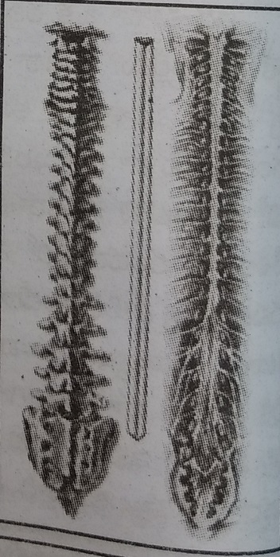
సూదిలో దారం ఎక్కించి ఒక పూసపై ఇంకో పూస గ్రుచ్చితే ఎలాగుంటుందో వెన్నుపూసలు కూడా అంతే. దండలోని దారం కనిపించినట్లుగా, పూసల మధ్యలో దారం ఉన్నట్లుగా, వెన్నుపూసల లోపల వెన్నుపాము ఉంటుంది. ఈ వెన్నుపాము మెదడు నుండి క్రిందకి అతుకబడినట్లుగా వుంటుంది. అదే విధంగా తలభాగంలో మెదడుంటుంది. దానిని అనుసరిస్తూ కంటిన్యూగా వెన్నుపాము సర్వైకల్ వెన్నుపూసల నుండి లంబార్ వెన్నుపూసల వరకు ఉంటుంది. అనగా 24 వెన్ను పూసల వరకు ఉంటుంది. ఆ తర్వాత వెన్నుపాము గట్టిగా తాడువలె మారి సాక్రల్ వెన్నుపూసల నుండి సయాటిక్ నరంగా మారి రెండువైపులా తుంటి ఎముకలోనుంచి తొడ భాగం నుండి కాలు వ్రేళ్ళ వరకు వెళ్తుంది. ఈ కాలులోకి వెళ్ళిన ఈ నరం అనేక శాఖోపశాఖలుగా చీలిపోయి తొడలోని అనేక కండరాలకు సప్లై చేస్తుంది. మెదడు నుండి సంకేతాలు ఈ నరాల ద్వారా కాలు కండరాలకు పంపించడం ద్వారా కాళ్ళు సమర్థవంతంగా పనిచేస్తుంటాయి. మెడ భాగంలోను, నడుమ భాగంలోను వెన్నెముకలో కదలికలు చాలా ఫ్రీగా ఉంటాయి. ఎక్కడ కదలికలుంటాయో, అక్కడ వెన్నెముక లేదా డిస్కు అరగడం లేదా నొప్పి, వాపు రావడం జరుగుతుంది. కారణం సహజంగా శారీరక ఒత్తిడులు తల భాగంలోను, నడుము భాగంలోను పుడతాయి. ఎప్పుడు నొప్పి వచ్చినా మెడలోనూ లేదా నడుములోను కదలికలు తగ్గుతాయి. సరిగ్గా తల, నడుము కదల్చలేని పరిస్థితిలో ఉంటాము. వెన్ను నొప్పి అనగా ఒక వెన్నుపూసలకే నొప్పి కాకుండా, వాటికి అతకబడిన కండరాలు కూడా చాలా ఒత్తిడులకు లోనై అలసిపోయి ఉంటాయి. ఈ ఒత్తిడులు శారీరకమైనా కావచ్చు లేదా మానసికమైనా కావచ్చు.
మెడనొప్పి
వెన్నుపూసలో ప్రతి పూసకి పూసకి మధ్యలో మెత్తటి స్పాంజ్ లాంటి డిస్క్ ఉంటుంది. ఈ డిస్క్ ఉండడం ద్వారా రెండు వెన్నుపూసల మధ్య కాస్త గ్యాపు వస్తుంది. ఈ గ్యాపులోంచి ఇరువైపుల నుంచి వెన్నెముక నరాలు (Spinal nerves) బయటకు వస్తాయి. మెడ భాగంలోని సర్వైకల్ వెన్నుపూసల నుంచి వచ్చిన నరాలు ఇరుప్రక్కలకు రేడియల్ నరంగా చేతులకు సప్లై చేయబడతాయి. కాని తప్పుగా వెన్నుముకను వాడడం ద్వారా డిస్క్ అరిగిపోవడం ద్వారా ఆ ప్రదేశం నుండి బయటకు వచ్చిన రేడియల్ నరాన్ని నొక్కుకోవడం జరుగుతుంది. అలా నొక్కబడిన నరం అంతా లాగుతుంది. ఆ నరం చేయికి సప్లై చేయబడుతుంది. కనుక చేయి బాగా లాగుతుంది. చేతికి తిమ్మిరి వచ్చినట్లుగా ఉంటుంది. చేతిని సూదులతో పొడిచినట్లు అనిపిస్తుంది. ఒక్కోసారి చేతిలోని కొన్ని వ్రేళ్ళు మాత్రమే తిమ్మిరిగా ఉంటాయి. ఐతే మెడలో నొప్పి ఉండవచ్చు, ఉండకపోవచ్చు. ఒక్కోసారి తల తిరిగినట్లుగా ఉంటుంది. గుండె దడగా అనిపిస్తుంది. దీనిని సర్వైకల్ స్పాండిలోసిస్ (Cervical Spondilosis) అంటారు.
నడుమ నొప్పి
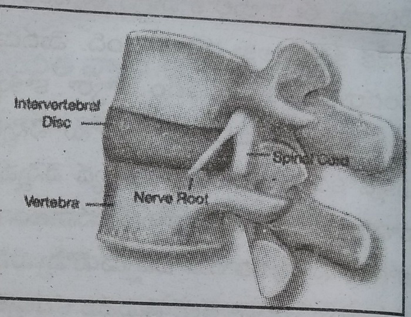
పై విధంగా లంబార్ వెన్నెముక ప్రాంతంలోంచి బయటకు వచ్చిన సయాటిక్ నరంపై, అక్కడి డిస్క్ అరిగి నొక్కుకుంటే ఈ నొప్పి వస్తుంది. సయాటిక్ నరం అన్ని నరాల కన్నా అతి పెద్ద నరం. సుతిల్ దారం లాగ వడిపడి గట్టిగా ఉంటుంది. డిస్క్ బయటకు వచ్చి గాని లేదా ఎముక చివర్లు (ఆస్టియోఫైట్) పెరిగి, ఈ సయాటిక్ నరంపై గట్టిగా నొక్కుకోవడం ద్వారా, ఈ నరం వెంబడి కాలు మొత్తం లాగుతుంది. కాలు తిమ్మిరిగా ఉంటుంది. కాలంతా పిండినట్లుగా ఉంటుంది. నడుములో విపరీతమైన నొప్పిగా ఉంటుంది. కాలు కదపనివ్వదు. నొప్పి ఒకపట్టాన మనిషిని నిలబడనివ్వదు, కూర్చోనివ్వదు, నడువనివ్వదు, చివరికి పడుకోనివ్వదు. పడుకునేటప్పుడు ఒక ప్రక్కకు తప్ప, ఇంకోప్రక్కకు గాని ఇంకో స్థితిలో గాని పడుకోనివ్వక చాలా అవస్థలు పడుతుంటారు. నడుము భాగంలోనే నొప్పిగా ఉంటే దీనిని లంబార్ స్పాండిలోసిస్ (Lumbar Spondilosis) అనియు, నడుమునుండి క్రింద కాలు వ్రేలి వరకు కాలు జాలు లేదా నొప్పి లాగినట్లుగా ఉంటే దానిని సయాటికా అని అంటారు.
నివారణ
శరీరానికి వెన్నెముక చాలా ప్రధానమైంది. వెన్నెముకకు సంబంధించిన నొప్పులు, వాపులు రావడానికి ముఖ్య కారణం, తప్పుగా వాడుకోవడం. మనిషి నిటారుగా నిలబడితే వెన్నెముక నిటారుగా ఉంటుంది. ఏ ఇబ్బందీ ఉండదు. చుట్టూనూ, కీళ్ళలోను గట్టిగా అతుక్కొని ఉన్న కండరాల ద్వారా మనిషి నిలబడగలుగుతాడు. అలాగాకుండా ప్రక్కకు వంగినపుడు శరీరంలో స్వతహాగా సర్దుకుపోయే గుణం కలదు. ఈ సెల్ఫ్ అడ్జస్ట్ మెంట్ ద్వారా వెంటనే ప్రక్కనున్న కండరాలు పనిచేసి మనిషిని క్రిందకు పడకుండా కాపాడుతుంది. అందుకే యోగ, జిమ్నాస్టిక్స్, సర్కస్ ఫీట్స్ చేయువారు శరీరానికి శిక్షణ ఇస్తూ నెమ్మది నెమ్మదిగా వారి శరీరాల్ని ఎక్కువగా ముందుకు, వెనుకకు వంచగలుగుతారు. నొప్పి లేకుండా ఎక్కువ సేపు ఉంచగలుగుతారు. జీవితంలో వెన్నెముకకు ఎన్నడూ నొప్పి బాధ రాకుండా జీవించవచ్చు. ముందుగానే నొప్పిగా తెలియజేసిన మరుక్షణమే జాగ్రత్తపడితే వచ్చిన నొప్పిని కూడ సునాయాసంగా తగ్గించుకోవచ్చు. లండన్ లో ఒక ప్రముఖ వెన్నెముక వైద్యుడు ఏ విధమైన మందులతో పనిలేకుండా కేవలం నిలబడే విధానాన్ని, కూర్చునే విధానాన్ని, పడుకునే విధానాన్ని, వారి వారి వృత్తి పనుల్లోను, ఇంట్లోను వారు చేసే తప్పులను సరిచేస్తూ ఎన్నోరకాల వెన్నెముక నొప్పులను తగ్గిస్తూ ఉండడం విశేషం. దీనిని బట్టి మనకర్థమయ్యేది ఏమిటంటే మనం చిన్నతనం నుండి మన శరీర స్థితిగతులను తప్పుడు పద్ధతిలో ఉంచడానికి అలవాటు పడి, తప్పుగా వాడుకోవడం వలన ఎక్కువగా నష్టపోతున్నాం, చిన్న వయస్సులోనే అరిగి, నొప్పి, వాపులకు లోనై బాధపడుతున్నాం. ముఖ్యంగా నేడు కంప్యూటర్, ఇంటర్నెట్ లలో ఎక్కువ సమయం గడపడం ద్వారా మెడ, నడుము నొప్పులకు లోనౌతున్నారు. ఎక్కడ తప్పు చేస్తున్నామో అర్థం చేసుకొని, దానిని సరి చేసుకుంటే సరి. తప్పుగా కూర్చోవడం, నిలబడడం, పడుకోవడం జరుగుతున్నప్పుడు వాటిని సరిచేసుకోవాలి. అందుకే ఒక విషయం గుర్తుంచుకోండి. మనం ఎప్పుడైనా, ఎక్కడైనా, కూర్చున్నా, నిలబడినా, నడిచినా, పడుకున్నా, ప్రక్కకు, ముందుకు, వెనుకకు వంగకుండా వెన్నెముకను నిటారుగా ఉంచుకోవడం గుర్తుంచుకోండి. వెన్నెముక యొక్క కదలికలు (Flexibility) స్వేచ్ఛగా ఉండేటట్లు చూసుకోండి. కదలికలు బాగా ఉండడం కోసం యోగ, ప్రాణాయామం లాంటి పద్ధతులు పాటించండి. సక్రమంగా ఉచ్ఛ్వాస, నిశ్వాసలు జరుగుతున్నప్పుడు వెన్నెముకలోని వెన్నుపూస కదలికలు కూడా బాగా ఉంటాయి.
6. ఎముకకు సంబంధించిన వ్యాధులు
ఆస్టియో పోరోసిస్
ఎముకలకు సంబంధించిన వ్యాధులలో ముఖ్యంగా ఆస్టియో పోరోసిస్ గురించి ఎక్కువగా వింటూ వుంటాం. ఆస్టియో అనగా ఎముక, పోరోసిస్ అనగా రంధ్రాలు పడడం అని అర్థం. ఆస్టియో పోరోసిస్ అనగా ఎముకలకు రంధ్రాలు పడడం అని అర్థం. ఎముక చాలా గట్టిగాను, దళసరిగాను ఉంటుంది. ముఖ్యంగా కాల్షియం, ఫాస్పరస్ అనే మూలకాల ద్వారా ఏర్పడుతుంది.
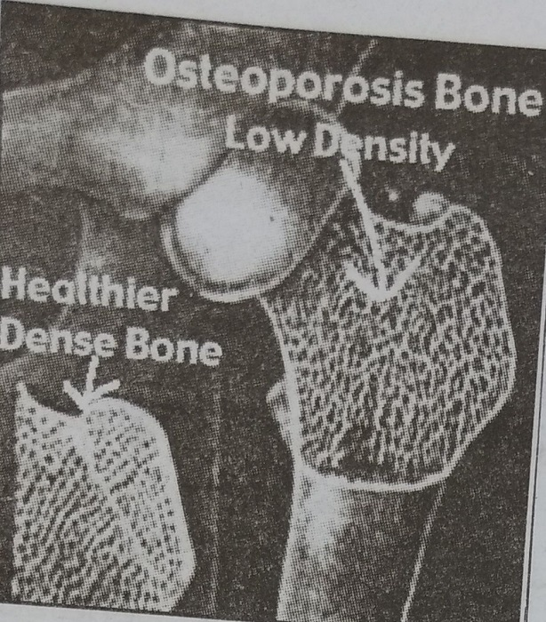
కారణాలు: 1) గర్భిణిగా ఉన్నప్పుడు తల్లి తీసుకొనే ఆహారంలోని కాల్షియం జీర్ణమై రక్తంలోకి చేరుతుంది. ఆ రక్తం ద్వారా గర్భంలోని బిడ్డకు చేరుతుంది. అలా చేరిన కాల్షియం బిడ్డ ఎముక తయారుకావడానికి ఉపయోగపడుతుంది. ఒకవేళ తల్లి తీసుకుంటున్న ఆహారంలో కాల్షియం తక్కువైనా లేదా పూర్తిగా లేకున్నా వెంటనే తల్లి శరీరంలోని ఎముకలలోని కాల్షియం బయటకు లాగబడి రక్తంలోకి చేరి, బిడ్డకు అందుతుంది. కాల్షియం బిడ్డకే కాదు తన శరీరంలోను అనేక బయోకెమికల్ రియాక్షన్ ల లోకి చాలా అవసరం. అందువలన రోజూ తల్లి ఎముకలోని కాల్షియం బయటకు వస్తూ ఉండడం వలన ఎముకలలో చిన్న చిన్న గుంతలు (pits) ఏర్పడతాయి. అలా దీర్ఘకాలికంగా ఆహారంలో కాల్షియం లేకపోవడం ద్వారా ఎముకలు రంధ్రాలు, రంధ్రాలుగా ఏర్పడతాయి. ఎముకలను ఎక్స్ రే ద్వారా చూసినట్లయితే జల్లెడలో ఎలాగైతే రంధ్రాలుంటాయో, అలాగే ఎముకలలో రంధ్రాలు ఏర్పడతాయి.
2) స్త్రీలకు 45 సంవత్సరాలు దాటాక ఋతుచక్రం ఆగిపోతుంది. ముఖ్యంగా ఈస్ట్రోజెన్ అనే ప్రత్యేకమైన హార్మోన్ తగ్గిపోతుంది. ముఖ్యంగా ఈ హార్మోన్ కాల్షియం మెటబాలిజమ్ లో ఉపయోగపడుతుంది. కాని ఈ హార్మోన్ లేకపోవడం ద్వారా కాల్షియం ఎముకల నుండి బయటకు వచ్చి ఆస్టియో పోరోసిస్ వస్తుంది. వీరికి ఈస్ట్రోజన్ హార్మోన్ ఇస్తుంటారు.
3) త్రాగే నీళ్ళలో ఫ్లోరిన్ 2.2 ppm కన్నా ఎక్కువ ఉన్నట్లయితే ఆస్టియో పోరోసిస్ కనబడుతుంది. ఫ్లోరిన్ కాల్షియం మధ్య అనురాగం చాలా ఎక్కువ. దీనిని కెమిస్ట్రీలో అఫినిటీ అంటారు. ఫ్లోరిన్ నీరు త్రాగితే వెంటనే రక్తంలోకి వెళ్ళి, రక్తం ద్వారా ఎముకలోకి చేరి, ప్రేమగా కాల్షియంను కరుచుకొని బయటకు లాక్కొని వస్తుంది. ఇంకేముంది ఫలితంగా రంధ్రాలు ఏర్పడతాయి. రంధ్రాలు పడిన ఎముక మెత్తబడి, పెళుసుబారి పోతుంది. అందుకే పెద్దవారిలో సులువుగా విరిగిపోతాయి.
ఎక్కువ కాల్షియం ఉన్న ఆహార పదార్థాలు తీసుకోవడం మంచిది. ఐతే కాల్షియం టాబ్లెట్ల కన్న ఆహారమే మంచిది. కాల్షియం గోలీలు ఇతర మూలకాలతో కలిపి తయారు చేస్తారు. కనుక చాలా తక్కువ మోతాదులో మాత్రమే మన శరీరానికి ఉపయోగపడుతుంది. చాలా వరకు మల మూత్రాలలో బయటకు విసర్జించబడుతుంది. అహారంలోని కాల్షియం చాలా ఫ్రీగా శరీరంలోకి జీర్ణమై శోషించబడుతుంది. దీనికి తోడుగా మానసిక ఆందోళనలను తగ్గించుకోవడం చాలా మంచిది.
రికెట్స్ (Rickets)
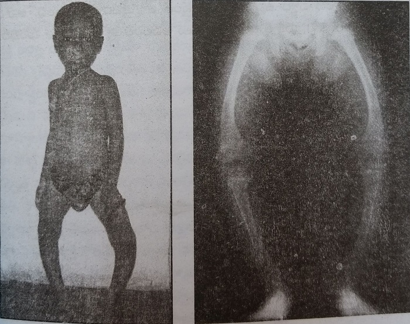
శరీర పోషణలో ఆహారం చాలా ముఖ్యమైనది. తల్లి గర్భిణిగా ఉన్నప్పుడు ఆహారంలో కాల్షియం తగ్గితే ఆస్టియో పోరోసిస్ రావడం, మరియు పిల్లలు ఎదగక అబార్షన్ కావడం జరుగుతుందని తెలుసుకున్నాం. మరి పిల్లలు పుట్టిన తర్వాత కూడా కాల్షియం ఆహారం బిడ్డకు అవసరం. ఎదిగే పిల్లలు తినే ఆహారంలో కాల్షియం లోపిస్తే ఎముకలలో కాల్షియం తగ్గుతుంది. అందుకే ఎముకలు వంగి పోతాయి. పిల్లల్లో కాల్షియం లోపాన్ని రికెట్స్ అంటారు. రికెట్స్ వచ్చిన పిల్లల కాళ్ళు వంకరగా ఉంటాయి. వీటిని దొడ్డి కాళ్ళు అంటారు. పిల్లలు వంకరటింకరగా నడుస్తుంటారు. ఛాతీలోని ప్రక్కటెముకలపై ఎముకల చివర్లు పెరిగి బొడిపెలు వస్తాయి. ఇవి నెక్లెస్ బీడ్స్ గా ఉంటాయి. కండరాలు కూడా బలహీనమౌతాయి. ఇక పెద్దవాళ్ళలో ఈ లోపం ఉన్నట్లయితే ఆస్టియో మలేషియా అంటారు.
7. ఇతరత్రా కొన్ని వ్యాధులు
కీళ్ళకు, ఎముకలకు, కండరాలకే కాకుండా శరీరంలో కలిపే కణజాలాలకు (connective tissue) వచ్చే మరికొన్ని ఆటో ఇమ్యూన్ వ్యాధులలో అతి ముఖ్యమైనవి 1. ల్యూపస్ 2. పాలి ఆర్థరైటిస్, 3. స్ల్కోరో డెర్మ మొదలగు వ్యాధులు. ముఖ్యంగా కీళ్ళు, మూత్రపిండాలు, చర్మం, కండరాలు, కళ్ళు మొదలగు వానికి వస్తుంటాయి. ఈ కనెక్టివ్ టిష్యూ వ్యాధులు ముఖ్యంగా వంశపారంపర్యంగా వస్తూ వుంటాయి. జీవితంలో ఎక్కువ మానసిక ఒత్తిడులున్న వారికి, వారి కుటుంబంలో ఎవరికైనా ఈ వ్యాధి లక్షణాలుండి ఉన్నట్లయితే జాగ్రత్తపడవలసి వస్తుంది. కారణం వీరికి అతి సులువుగా, తొందరగా వచ్చే అవకాశాలున్నాయి. ముఖ్యంగా నడివయస్సులో ఈ వ్యాధుల లక్షణాలు కనబడుతుంటాయి.
నివారణ: మనస్సు నిరంతరంగా ఉల్లాసంగా ఉంచుకోవాలి. కుటుంబంలో ఏ ఒక్కరికైనా ఇలాంటి వ్యాధి ఉన్నట్లయితే, కాస్తంత జాగ్రత్తపడాల్సి వస్తుంది. ఆహారం, అలవాట్లు మార్చుకొని, ప్రకృతి జీవన పద్ధతులు అవలంబిస్తూ జీవించడం మంచిది.
4. కీళ్ళ నొప్పులు - కారణాలు
- ప్రకృతికి దూరమైతే గడబిడ - మనిషికుండదు మరి మనుగడ
- కీళ్లను అతిగా వాడటం ఎంత తప్పో - అసలు వాడకపోవడం అంత తప్పు
- ఆశిస్తున్నాం తక్కువ పని, ఎక్కువ ఫలితం - అందుకే అవుతున్నాయి జీవితాలు వ్యథాభరితం
- అందరూ తప్పించుకుంటున్నారు పని - రోగాలు తెచ్చుకుంటున్నారు అతిగా తిని
- పైపైకి ఎదుగుతున్నారు మన మగువలు - అదే సమయంలో కోల్పోతున్నారు జీవన విలువలు
- టెలివిజన్ లో వచ్చే సీరియళ్ళు - మనో వికారాలకు ఆనవాళ్ళు
- సంస్కృతి నాగరికతల్లో ఎన్నెన్నో మార్పులు - కొత్త కొత్త రోగాలతో మనిషికి మరెన్నో నిట్టూర్పులు
- మార్కుల కోసమే నడుపుతున్నారు స్కూళ్ళు - అయ్యో! చిన్న పిల్లలు కూడా కదపడం లేదు కీళ్ళు
- మగవాళ్ళకే లేదు సరియైన వ్యాయామం - మధ్య వయస్సులోనే కీళ్ళ వ్యాధులతో అపాయం
- నడక కోసం కూడా ఒక క్లబ్బా - మనిషికేంగతి పట్టిందబ్బా!
- రక్తంలో తారుమారైతే ఆమ్ల క్షారనిష్పత్తి - పెరుగుతుంది రోగ పదార్థం ఉత్పత్తి
- నడిచే సమాధిలా మారకురా! - మాంసాహారాన్ని తినకురా!
- ఆసిడ్ ను పెంచే ఆహారాలు - అనారోగ్యానికి ఆవాసాలు
- నాగరికత పేరుతో విషవలయం సృష్టించకు - వ్యసనాలతో ఆరోగ్యాన్ని విషపూరితం చెయ్యకు
- నాగరికత పేరుతో కల్మషం పెంచకు - నీ శరీర భాగాలను డాక్టర్లకు పంచకు
- అధికమైతే ఆహారంలో ఉప్పు - కీళ్ళకు చేస్తుందది ఎంతో ముప్పు
- ఆరోగ్యమే మహాభాగ్యం అన్నారు ఆనాటి పెద్దలు - మీ రోగమే మా భాగ్యం అంటున్నారు నేటి కొంత మంది వైద్యులు
- సహజాహారంలోనే ఉంది సరిపడా ఉప్పు - బయటి నుంచి వేసుకోవడం ఆరోగ్యానికి ముప్పు
- తినేస్తుంది ఉప్పు దేన్నైనా - మానకుంటే నిన్నైనా!
- సహజమైన ఆహారాన్ని శరీరానికి అందించు - దీర్ఘవ్యాధుల బారి నుండి ఈ దేహాన్ని రక్షించు
- ఉండాలి ఎత్తుకు తగ్గ బరువు - లేకుంటే ప్రాణశక్తి కొస్తుంది కరువు
- నాగరికత పేరుతో కల్మషం పెంచకు - నీ శరీర భాగాలను పంచకు
- ఆస్పత్రుల చుట్టూ తిరిగితే ఆరోగ్యం రాదు - మన తప్పులను సవరిస్తే గాని అనారోగ్యం పోదు
- మానసిక ఒత్తిడిని వదిలేయి అన్నా - రోగం లేని జీవితాన్ని గడిపేయి కన్నా
- అభిప్రాయాలను పరిశీలించు - ఆత్మబోధను అనుసరించు
- ఆలోచన మంచిదైతే ఆచరణ మంచిదౌతుంది - మనసు నిర్మలమైతే ఆరోగ్యం నీ సొంతమౌతుంది
- వర్తమానంలో జీవించు - జీవితాన్ని సంపూర్ణంగా ఆస్వాదించు
1. ప్రకృతికి దూరంగా జీవించే నేటి జీవన శైలి
వివేకానందుడు సెలవిచ్చినట్లుగా మనలో అపారమైన శక్తి సముద్రం ఉంది. ఆ శక్తిలో తెలియని ఆనందం ఉంది. ఎవరు ఏమి చేసినా ఆ ఆనందం కోసమే. మనసు అంతర్ముఖమైతే పంచేంద్రియాలను వశపరుచుకొంటే అనుక్షణం ఆనందంలో తేలియాడవచ్చు. దీనికి కొంత సాధన కావాలి. కాని నేటి మానవుడికి ప్రాపంచిక విషయాలపై ఉన్న మక్కువ, శ్రద్ధ తనలోని శక్తిని బయటకు తీయడంలో లేదు. మానసిక శక్తి కన్నా యాంత్రిక శక్తియే గొప్పదని, ఆధ్యాత్మిక శక్తి కన్నా అధునాతన ప్రాపంచిక శక్తియే శ్రేష్ఠమని, మానవాతీత శక్తి కన్నా మానవ శక్తియే ఉత్కృష్టమైనదని నేటి మనిషి సంపూర్ణంగా నమ్ముతున్నాడు. అందులో భాగంగానే ప్రకృతి శక్తి కన్నా యాంత్రిక శక్తియే నిజమని నమ్మి ప్రకృతిని వశపరుచుకోవాలని, ప్రకృతితో ఢీకొంటున్నాడు. ఇదంతా చూస్తూంటే పొట్టేలు కొండను ఢీకొట్టినట్లుగా ఉంది. ప్రకృతికి విరుద్ధంగా జీవిస్తున్నాడు. నా కాళ్ళపై నేను నిలబడగలను, ప్రకృతి నన్ను ఏమీ చేయలేదనే ధీమాతో ఉన్నాడు. అతి సర్వత్ర వర్జయేత్. అతి ఎప్పుడు మంచిది కాదు. నేడు మన కట్టు, బొట్టు, సంస్కృతిలో అతి చోటు చేసుకుంది. ప్రతి విషయంలో అతి అనేది చాలా క్లియర్ గా కనిపిస్తుంది. పిల్లలు, స్త్రీలు, పెద్దలు వారి వారి కట్టుబాట్లు, నియమాలు దాటారు. స్వతంత్రంగా జీవించాలని ప్రతి వ్యక్తి కోరుకుంటున్నాడు. తప్పు లేదు. కాని అతిగా విచ్చల విడిగా ప్రవర్తించడం అనేది బాధాకరం. నేటి యువత కుటుంబ సాంఘిక కట్టుబాట్లను తెంచుకొని విశృంఖలమైన లైంగిక చర్యలను అవలంబిస్తూ పాశ్చాత్యుల పోకడలు అనుసరిస్తోంది. శారీరక శ్రమ లేకుండా డబ్బు, పేరు సంపాదించాలనే తపనలో ఉన్నారు. తన శ్రమ కన్నా ఎక్కువ డబ్బు సంపాదించాలనుకుంటున్నారు. అందుకు పర్యవసానం అనేక రకాల రోగాలకు ఆహ్వానం. కీళ్ళ వ్యాధులకు కూడా నేటి నాగరికతయే ఒక ముఖ్య కారణంగా పరిగణించవచ్చు. ఎందుకంటే ప్రకృతికి దగ్గరగా జీవించవలసిన మనిషి నాగరికత అన్న పేరుతో దూరంగా జీవించాల్సి వస్తోంది. ప్రకృతి ధర్మాలను అర్థం చేసుకొని, శరీరానికి కావలసిన సరియైన శ్రమ, ఆహారం, నీరు అలవాట్లు అందిస్తే ఆరోగ్యంగా జీవిస్తాడు. లేకుంటే అనారోగ్యం పాలు అవుతాడు. అదే అక్షరాల జరుగుతోంది.
2. కీళ్ళను, కండరాలను ఎక్కువగా వాడడం
కండరాలను, కీళ్ళను, ఎముకలను ఎక్కువగా వాడినా లేదా వాడాల్సినదానికన్నా తక్కువ వాడినా లేదా అసలు వాడకపోయినా కీళ్ళు నష్టపోతాయి. ఉదాహరణకు కత్తిని ఎక్కువ వాడామనుకోండి తొందరగా అరుగుతుంది. అసలు వాడకుండా ప్రక్కన పెడితే తుప్పు పడుతుంది. అదే మాదిరిగా మన కీళ్ళు, కండరాలు కూడా. క్రీడాకారులు వారి అవయవాలను ఎక్కువగా వాడుతారు. ఎక్కువ వాడడం ద్వారా నష్టపోవడం అనగా, ఉదాహరణకు మంచి బాడీ బిల్డర్ ని ఊహించుకోండి. వారు మూడే మూడు పనులు చేస్తుంటారు. ఉదయాన్నే నిద్ర లేస్తారు. బాగా ఎక్సర్ సైజులు చేస్తారు. బరువుల్ని పైకి లేపుతుంటారు. చేతి కండరాలు పెరగడానికి డంబెల్స్ తో వ్యాయామం చేస్తారు. కాళ్ళ పిక్కలు, తొడ కండరాల కోసం బస్కీలు తీస్తుంటారు. ఛాతీ, వెన్నెముక కండరాలు పెరగడానికి రకరకాల బరువులు ఎత్తుతూ బెంచి ప్రెస్, డిప్స్ చేస్తుంటారు. రోజు 2 సార్లు, ఉదయం, సాయంత్రం గంటలు గంటలు వ్యాయామం చేస్తూ ఉంటారు. ఇలా 5-10 సంవత్సరాలు కష్టపడి శక్తికి మించిన బరువులు ఎత్తే స్థాయికి ఎదుగుతారు. రోజూ సాధన చేస్తూ చేతికి, కాళ్ళకు, ఛాతీలో, పొట్టలో కండరాలన్నీ వడితిరిగే విధంగా బాగా పెంచుతారు. పోటీలోకి దిగుతారు. ప్రత్యర్థులకన్నా ఎక్కువ బరువును లేపి ప్రపంచ రికార్డులు గెలుచుకుంటారు. ఇదంతా సుఖకరమే కాని ఆ తర్వాతనే విషాదం మొదలౌతుంది. పాపం 35, 45 సంవత్సరాల వయస్సులో ఎవరైనా వెళ్ళి, ఏమండీ బాడీ బిల్డర్ గారు బాగున్నారా అని అడిగారనుకోండి. ఏమంటారో తెలుసా. ఏం బాగో ఏమో తెలీదు గాని, రోజూ నరకాన్ని అనుభవిస్తున్నాను. భగవంతుడు ఈ జన్మను నాకు ఎందుకిచ్చాడో, ఈ భూమిపై నేను జన్మించకున్నా బాగుండు అన్నట్లుగా చెబుతారు. నాకు తెలిసి ఒక మంచి బాడీ బిల్డర్ కూడా పాపం అర్థాయుష్షు నిండక ముందే శరీరంలోని కీళ్ళన్నీ వాపులొచ్చి, నొప్పులతో బాధపడినాడు. మనిషిని లేపాలన్నా, కూర్చోబెట్టాలన్నా ఒకరి సహాయం అవసరమైంది. దానికి తోడు పక్షపాత మొచ్చింది. పైగా వయస్సులో ఉన్నప్పుడు కండలు చూసుకొని, మురిసిపోతూ ఇద్దరు భార్యలను చేసుకున్నాడు. చివరికి మంచంలో పడితే, తనకు సహాయం చేసే వారు లేక నరకయాతన అనుభవించాడు. మన స్వంత పనులు మనం చేసుకుంటూ ఇంకొకరికి సహాయం చేసే విధంగా ఉండాలి తప్ప, మనము ఇంకొకరి సహాయం కోసం ఎదురు చూసే విధంగా ఉండకూడదు. అందుకే అధికంగా కీళ్ళు, కాళ్ళు, కండరాలు వాడిన కొంతకాలానికి దెబ్బతింటాయి. మనిషి కండరాలలో జవ సత్తువలు తగ్గిపోయి, నరాల్లో శక్తి క్షీణించి, చేతులు, కాళ్ళు వణుకుతూ కనీసం గ్లాసు తీసుకొని మంచి నీళ్ళు కూడా త్రాగలేరు.
క్రికెటర్లకు గాని, టెన్నిస్ ఆడేవారికి గాని చేతి మణికట్టు, మోచేయి భాగం ఎక్కువగా దెబ్బతినడం, పుట్ బాల్ ఆడేవారికి ఎక్కువగా మోకాలో లేదా మడమ భాగమో దెబ్బతినడం చూస్తుంటాం. బరువులు అధికంగా మోసే కూలీలకు, రిక్షా త్రొక్కే వారికి కూడా ఎక్కువగా కీళ్ళు అరిగిపోతుంటాయి. కారణం వారు అధికంగా వాడడమే అని గుర్తు పెట్టుకోండి.
3. కీళ్ళను, కండరాలను తక్కువగా వాడడం
నాగరికతలో భాగంగా మనిషిలో అనేక మార్పులు వచ్చాయి. తక్కువ సమయంలో, తక్కువ ఖర్చుతో ఎక్కువ పని కావాలని, ఎక్కువ లాభాలు రావాలని, ఎక్కువ ఫలితం పొందాలని నేటి మనిషి ఎంతో తపన పడుతున్నాడు. అలా జరుగకుంటే మరెంతగానో మథనపడుతున్నాడు. అంటే శరీరశ్రమ కంటే మానసిక శ్రమనే ఎక్కువవుతుందనేది సత్యం.
శరీరాన్ని ఎక్కువగా వాడడం ద్వారా నష్టపోవడం జరుగుతుందని తెలుసుకున్నాం. కాని దీనివలన చాలా తక్కువ శాతం మాత్రమే నష్టపోతున్నారు. ఎందుకంటే అలా అధికంగా వాడే వారి సంఖ్య చాలా తక్కువ. కాని తక్కువ వాడడము లేదా అసలు వాడకుండా ఉండడము అనేది నేడు ఆధునిక ప్రపంచంలో ఎక్కువ శాతం ప్రజలకు అత్యంత సర్వసాధారణం. ఒక్కొక్క తరానికి ఎన్నో మార్పులు, చేర్పులు, మనిషి చేసే పనులన్నీ మరమనుషుల సహాయంతో జరిగిపోతున్నాయి. ఇంట్లో, బయట ఎక్కడ చూసినా శ్రమ లేకుండా సులభంగా జరిగే మార్గాలను మనిషి కనుక్కున్నాడు. నేటి దుస్థితి ఎలా ఉందంటే ఒక్క పిల్లల్ని కనడానికి మాత్రమే ఓ భార్య/భర్త అనే వస్తువు కావాలి అని అనుకునే స్థితికి మనిషి దిగజారాడు. ఒకవేళ ఏ వస్తువైనా పిల్లల్ని కని ఇస్తే, దానిని కొనుక్కోవడానికి ఎంత మాత్రం వెనకాడని సమాజం. చివరికి వస్తువులతో కాపురం చేసే స్థితి వచ్చిందండి. మరి ఈ సమాజం ఎటు వెళ్తుంది. అందులో జీవిస్తున్న మన పొజిషన్ ఎక్కడుందో మీరే తెలుసుకోండి. వెనుకటి రోజుల్లో మన అమ్మ, అమ్మమ్మ, వాళ్ల అమ్మమ్మ వయస్సులోకి వెళ్ళి చూస్తే ఇప్పుడున్నన్ని వసతులు, అవకాశాలు లేవు. ఉమ్మడి కుటుంబాలుండేవి. ఒకరి అవసరం ఒకరికి ఉండేది. అందుకే అందరు కలిసి కట్టుగా ప్రేమగా ఉంటూ ఉండేవారు. అప్పటి అవసరం అప్పటిది. మనిషి సంఘజీవి కనుక ఉదయాన ఇంట్లో పొయ్యి వెలిగించినప్పటి నుంచి గూట్లో దీపం పెట్టేంతవరకు ప్రక్కవారి సహాయం లేకుండా, ఒకరి తోడు ఇంకొకరికి అవసరం లేకుండా ఇల్లు గడిచేది కాదు. ఇక పెళ్ళి, పండుగలు, శుభకార్యాల గురించి చెప్పక్కర్లేదు. పది, పదిహేను రోజుల నుండి చుట్టు ప్రక్కల వారు కానీయండీ, చుట్టాలు కానీయండి వచ్చి తిష్ట వేసేవారు. అన్నీ తిని పోవడానికి కాదండి. పెండ్లికి కావలసిన వడ్లు, పప్పులు దంచడానికి, నీళ్లు నిప్పులు తేవడానికి, ఇలా ఒకటేమిటి అన్ని పనులు అందరూ కలిసి కార్యాన్ని ఒడ్డుకు చేర్చేవారు. ఇప్పుడు ఆ అవసరం లేదండి. డబ్బు పడేస్తే చాలు అన్ని కార్యాలు చకచకా నిముషాల్లో జరిగి పోతాయి.
స్త్రీల పరిస్థితి
వెనుకటి రోజుల్లో ఐదు వ్రేళ్ళు నోట్లో పెట్టాలంటే దాని వెనుక విపరీతంగా కృషి చేసేవారు. వడ్లను దంచి బియ్యంగా మార్చేవారు. పప్పు ధాన్యాలు ఎండాకాలంలో ఎండకు పోసి దాచి ఉంచుకునే వారు. అవసరాన్ని బట్టి దంచుకొని పప్పుగా మార్చుకునే వారు. పొలం గట్ల వెంబడి కాని, పెరట్లో గాని మొలచిన ఆకుకూరల్ని లేదా కూరగాయల్ని కోసి తెచ్చుకునేవారు. గేదెకు మనుషులకన్నా ఎక్కువ సపర్యలు చేసి, పచ్చగడ్డి వేసి, పాలు తీసుకొని, పెరుగు చేసేవారు. ప్రతి ఇంట్లో పాడి ఉండేది. ఇలా ఆహారం సమకూర్చుకోవడానికి ఎంతో కష్టపడేవారు. స్త్రీలు ఇంట్లోకి నీళ్ళు ఎక్కడి నుండో తెచ్చుకునే వారు. పొయ్యి అంటించుకోవడానికి గేదెల పేడతో వారానికొక్కసారి ఎండాకాలంలో పిడకలు చేసి గూడులాగా పేర్చుకునేవారు. అలా వర్షాకాలంలో వంటచెరకు దొరకదు కాబట్టి ముందే జాగ్రత్తపడేవారు. ఇలా ఒక్క నిముషం ఖాళీ లేకుండా వారు జీవనం కోసం కష్టించి శ్రమ చేసేవారు. వాళ్ళ కీళ్ళను, కాళ్ళను కండరాలను బాగా ఉపయోగించుకునేవారు. ఏ పని చేసినా శరీర అవయవాలన్నీ కదిలేవి. అంతెందుకు ఒక కూర లేదా అన్నం వండాలంటే అమ్మ ఎంతో శ్రమ చేసేది. క్రింద పిడకలు, కర్రలు వేసి పొయ్యి ముట్టించేది. పొయ్యి మీద గిన్నె పెట్టి, పొయ్యి మండకుంటే ఇంకా ఎండిన కర్రలు తెచ్చి పొయ్యిలో పెట్టి, 4 సార్లు బాగా ఊది నిప్పు బాగా వచ్చేటట్టుగా చూసేది. ఈ లోపు బిడ్డ ఏడిస్తే వాడికి పాలు ఇచ్చేది. ఈ లోపు పొయ్యి ఆరితే మళ్ళీ అంటించడం, పైన ఉన్న నూనె డబ్బా తీసి, క్రింద పెట్టి, పైన ఉన్న పోపు డబ్బా తీసి పొయ్యి వద్ద ఉంచి, కూరగాయలు తీసుకొని కోసి పెట్టేది. ఇవన్నీ రెడీ చేస్తే కూర వండడానికి సిద్ధం అయినట్లు గిన్నెలో నూనె వేసి, పోపు వేసి, కూరలు వేసి, పొయ్యిలో పుల్లలు వేసి, ఊది, మంట సరిచూసుకోవలసి వచ్చేది. ఇంట్లోకి కుక్క, పిల్లి వస్తే వాటిని బయటకు పంపి, 8-10 సార్లు పొయ్యి వద్దకు వచ్చి కూర్చొని కూర మాడకుండా కలియబెట్టే వారు. ఇలా ఒక కూర అయ్యేసరికి ఎంత లేదన్నా 15-20 సార్లు క్రిందికి, పైకి కూర్చునే వారు. ఇక వారికి కూర చేయడం, అన్నం వండడం అనే వంట కార్యక్రమం నేడు మన కోణం నుంచి చూస్తే అతి పెద్ద ఎక్సర్ సైజ్ గా వర్ణించవచ్చు.
భోజనం చేసేటపుడు వెనుకటి రోజుల్లో క్రింద కూర్చొని, పీట వేసుకొని తినేవారు. క్రింద కూర్చొని ఓ అర్ధగంట సేపు పీటకాలు వేసుకొని తినేవారు. తినే సమయంలో కూడా కీలు వంచేవారు. ఇలా కాళ్ల కీళ్ళను ఆరోగ్యంగా పెట్టుకున్నారు.
నేటి స్త్రీల పరిస్థితి చూడండి. అన్నీ రడీమేడ్ లా ఉన్నాయి. వడ్లు దంచక్కర్లేదు. చెరగక్కర్లేదు. రాళ్ళు తీయక్కర్లేదు. ఎంతో సుఖం. నేడు ఎక్కడా కీళ్ళు, కాళ్ళు కదలకుండా ఉండే విధంగా మన ఇళ్ళను నిర్మించుకుంటున్నాం. టెక్నాలజీ పరంగా అభివృద్ధి జరిగిందేమంటే శరీరంలో ఏ అవయవం కదలకుండా జీవించే పద్ధతులను కనుగొనడం. మనం ఎక్కిన కొమ్మను మనమే కొట్టుకున్నట్లుగ ఉంది నేటి విధానం. ఇక వంట గదిలోని కిచెన్ ప్లాట్ ఫాం చూడండి. కరెక్ట్ గా మన బొడ్డు ఎత్తులో ఉంటుంది. ఒక వేళ ఇల్లు కట్టే మేస్త్రి పొరపాటున 2 ఇంచులు పైకి లేదా క్రిందికి కడితే, దానిని పగుల గొట్టించైనా బొడ్డు లెవల్ కి ఉంచే విధంగా చూసుకుంటారు తప్ప ఎంత మాత్రం అడ్జెస్ట్ కారు మన మగువలు. కర్రలు పెట్టి ముట్టించాల్సిన అవసరం లేదు. పొగ రాదు. మంట ఎక్కువ, తక్కువ లేకుండా ఎంత కావాలనుకుంటే అంతే వస్తుంది. ఎంత టెక్నాలజీ అభివృద్ధి జరిగిందంటే అగ్గిపుల్ల కూడా అవసరం లేదండీ. అగ్గిపుల్ల గీస్తే చేయి, భుజం కండరాలు ఎక్కడ వాడుకలోకి వస్తాయోనని భయం. ఆ ఇబ్బంది లేకుండా లైటర్లు వచ్చాయి. నేడు అదీ అవసరం లేకుండా గ్యాస్ పొయ్యి ఆన్ చేయగానే అందులోంచి స్పార్క్ వచ్చి పొయ్యి వెలుగుతుంది. ఇక పొయ్యి మీద కుక్కర్ పెడతారు. అక్కడే నిలబడి కదలకుండా నూనె వేసి, పోపు వేస్తారు. కూరగాయలు వేస్తారు. మూత పెడతారు. అంతే మధ్య మధ్యలో కలిపే పనిలేదు. 5 నిముషాలు సమయం వెచ్చిస్తే చాలు. వన్ టైం బిజినెస్ అంతే. సుయ్ మని శబ్దం 3 సార్లు రాగానే దించేస్తారు. కూర అయినట్టు లెక్క. ఈ లోపు ఏవైనా నచ్చిన సీరియల్స్ చూస్తూ కూర్చోవచ్చు. సీరియల్స్ కు కూడా ఎంచక్కా మధ్య మధ్యలో విరామం ఇస్తారు. అందులో అడ్వర్టయిజ్ మెంట్లు ఉంటాయి. 30 నిముషాల సీరియల్ లో 15 నిముషాలు సీరియల్, 15 నిమిషాలు అడ్వర్టయిజ్ మెంట్లు. ఎంచక్కా మధ్య మధ్య విరామంలో వంట చూసుకోవడానికి కాబోలు ఇంత గ్యాపు. ఆడుతూ, పాడుతూ విరామ సమయంలోనే వంట చేసుకోవచ్చు. ఎంత సులువైందండీ ఏ తంటాలేని వంటా-వార్పు.
వంట వండడానికి కీలు, కాలు వంచక్కర్లేకుండా, కండరం కదలకుండా ఎంత సులువుగా మారింది నేటి వంట కార్యక్రమం. క్రింద కూర్చోనక్కర్లేదు. మోకాలు వంచక్కర్లేదు. రెక్కాడక్కర్లేదు. రెక్కాడితే గాని డొక్క ఆడదు అనే సామెతకు చెల్లు. రెక్కాడకుండా డొక్కాడించు అనే సామెత వచ్చింది నేడు. ఏ పనీ పాట లేకుండ ముప్పొద్దులు తింటూ కూర్చోవడం. ఊసుపోని కబుర్లకు, చెత్త సీరియల్స్ కి సమయాన్నంతా వెచ్చించడం. ఇదండీ మన నాగరికతలో వచ్చిన మార్పు, అర్థమయ్యింది కదా!
క్రింద కూర్చొని తినే సంస్కృతి ఏనాడో వెళ్ళిపోయింది. డైనింగ్ టేబుల్స్ వచ్చాయి. అన్ని వంట గిన్నెలు అక్కడే వుంటాయి. కాస్త మోకాలు వంచి కుర్చీల్లో కూర్చొంటారు. ప్రక్కన ఉన్న ఏ కూర గిన్నెను చేయి చాచి తీసుకుంటే, రెక్క కండరాలు, చేయి కీళ్ళు ఏమయిపోతాయో అన్నట్లుగా, ఆ మాత్రం కూడా చేయి చాచనక్కర్లేకుండా టేబుల్ పైన ఇంకో అంతస్తులో గిన్నెలు పెట్టుకోవడానికి అనుకూలంగా డిజైన్ చేసారు. దాని క్రింద బేరింగులతో ఫిక్స్ చేస్తారు. అందువలన అది గుండ్రంగా సులభంగా తిరుగుతుంది. తినే సమయంలో ఏ కూర తీసుకోవాలనుకున్నా చేయి చాచక్కర్లేదు. వ్రేలితో త్రిప్పగానే వెంటనే పై కూరల టేబుల్ గుండ్రంగా తిరుగుతుంది. అంతే కోరుకున్నవి వేసుకోవచ్చు. ఇలాంటి సంస్కృతిలో ఉన్నాం నేడు.
వెనుకటి రోజుల నుంచి, మన పెద్ద వాళ్ళ దగ్గరి నుంచి కొన్ని సంస్కృతులు మనకు కూడా వస్తూ ఉన్నాయి. అన్ని శుభకార్యాలలోను, తద్దినంలోను లేదా బిడ్డ రజస్వల అయినపుడు మనకు సంబంధించిన వారందరిని పిలిచి, ప్రేమతో సహపంక్తి భోజనాలు ఏర్పాటు చేసెడివారు. నేటికీ ఉంది ఈ సంస్కృతి. కానీ కొన్ని పద్ధతుల్లో మాత్రం మార్పు వచ్చింది. ఇంతకు ముందు సహపంక్తి భోజనాలలో అటు ప్రక్క, ఇటు ప్రక్క కూర్చోవడానికి పట్టాలు వేసేవారు. ముందు విస్తరాకులు లేదా అరటాకులు వేసేవారు. క్రింద కూర్చొని అర్ధగంట సేపు మోకాలు వంచి, వంగి తినేవారు. వడ్డించే వారికి నడ్డి బాగా వంగేది. కానీ ఈ మధ్య తినే పద్ధతిలో కాస్తంత మార్పు వచ్చిందండి. పట్టాల స్థానంలో కుర్చీలు, టేబుల్స్ వచ్చాయి. ఇక తినే వారు కీళ్ళు కొద్దిగా వంచి కుర్చీలో కూర్చొని తింటారు. వడ్డించే వారి నడ్డి వంగనవసరం లేదు. కాని కీళ్ళను వాడుతూ నడుస్తూ మాత్రం అందరికీ వడ్డించేవారు, అంతటితో ఆగలేదండి. నేడు భోజన పద్దతిలో ఇంకా మార్పు వచ్చింది. అదేనండి బఫే సిస్టమ్. వారు కదలక్కర్లేదు. ఒక్కో డిష్ కి ఒక్కో వ్యక్తి వుంటాడు. ఇక తినే వారు ప్లేటు తీసుకొని ముందుకెళ్తుంటే చాలు. అన్ని పదార్థాలు అందులో పడతాయి. జైల్లో ఖైదీలు తిన్నట్లుగా ఉంటుంది. జైళ్లో ఖైదీలను కదలకుండా ఉంచినట్లుగా, మన కీళ్ళను కూడ కదలించకుండా జైలు పాలు చేస్తున్నాం. ఇక తినే వారికి గాని, వడ్డించే వారికి గాని కాలు, కీలు కదిలించక్కర్లేదు. ఇది నాటికీ, నేటికీ మన నాగరికతలో, సంస్కృతిలో వచ్చిన మార్పు.
ఈ మాటకొస్తే కనీసం ఒక గంట కూడా క్రింద కూర్చొనే పరిస్థితి లేదండి. చిన్నవారి నుండి పెద్దవారి వరకు ఎవరూ క్రింద కూర్చోవడం లేదు. ఆ సంస్కృతికి ఎప్పుడో స్వస్తి చెప్పాం. ఒక్కసారి చదవడం ఆపి మీకు మీరుగా వెనుకకు తిరిగి చూసుకోండి. రోజులో ఎప్పుడు, ఏ సమయంలో, ఎంత సేపు క్రింద కూర్చుంటాం అని. నాకు తెలిసి చాలా చాలా తగ్గిపోయింది. ఒక్కమాటలో చెప్పాలంటే మోకాలును వంచి క్రింద కూర్చోవడం అన్ని వర్గాల వారికి, అన్ని వయసుల వారికి పూర్తిగా లేదని నిర్భయంగా చెప్పవచ్చు. ప్రతి వారు ప్రతి రోజు ఉదయం లేవగానే ఇష్టం ఉన్నా లేకున్నా కనీసం ఒక సారైనా క్రింద కూర్చొనేవారు. ఎక్కడో తెలుసా? మల విసర్జన సమయంలో, రాత్రి రాగి చెంబులో ఉంచిన నీరు త్రాగి, చెంబు తీసుకొని ఊరు బయట చెట్ల చాటుకో, పొదల చాటుకో వెళ్ళి స్వేచ్ఛగా మల విసర్జన చేసేవారు. నీరు త్రాగి కాస్త నడిస్తే మలం కదిలేది. పైగా రాత్రి పెందలకడనే ఆహారం తిని పడుకునే వారు కనుక ఫ్రీగా మోషన్ అయిపోయేది. కీళ్ళను వంచి క్రింద కూర్చొని పొట్ట బరువును తగ్గింకొనేవారు. ఈ ప్రపంచంలో మనిషి ఎక్కువ ఆనందాన్ని పొందేది ఎక్కడంటే ఫ్రీగా మోషన్ అయినప్పుడు. నిజానికి మల మూత్రాలు ఆపి, ఆపి సంపూర్ణంగా విసర్జించినపుడు మనిషికి కలిగే అనుభూతి, ఆనందం వేరుగా ఉంటుంది. నేటి పరిస్థితి చూడండి. ఇంతకు ముందు పెద్ద ఇల్లు, ఇంటి ఆవరణలో ఓ మూలకు లెట్రిన్ కట్టించుకొనే వారు. నేడు చూస్తే ప్రక్కనే వంట గది. వంట గది ప్రక్కనే బెడ్ రూం. బెడ్ రూంలో ఎటాచ్డ్ గా లెట్రిన్ గది కట్టుకుంటున్నాము. ఇక నడక లేదు. పైగా అన్నీ పాశ్చాత్యుల లెట్రిన్ బేషన్ కట్టించుకుంటున్నారు. ఇది చాలా ఫ్యాషన్ అయింది. అలా అలవాటు పడి ఫారిన్ లెట్రిన్ లో కూర్చుంటారు. పూర్వం కనీసం రోజుకొకసారైనా క్రింద కీళ్ళు వంచి కూర్చొని లెట్రిన్ వెళ్ళేవారు. అదీ లేదు. ఇంక ఎక్కడ ఎలా కీళ్ళు వాడుకుంటారో అర్థం కావడం లేదు. ఎక్కడా కీళ్ళను వాడుకోవడం లేదు. పెద్ద వాళ్ళే కాదు. ఈ అలవాటు చిన్నతనం నుండి ఉగ్గు పాలతో నేర్పిస్తున్నాం. అందుకే నాకు భావితరం కీళ్ళ పరిస్థితి ఏమిటో అని ఊహిస్తుంటేనే భయం వేస్తుంది.
పిల్లల పరిస్థితి
ఈ కమోడ్ లెట్రిన్ పెద్దవాళ్ళకే కాదు చిన్న పిల్లలకు కూడా అలవాటు చేస్తున్నారండి. పిల్లలకు ప్లాస్టిక్ కమోడ్ లు మార్కెట్ లోకి వచ్చాయండి. పిల్లలకు మోషన్ వస్తుందనగానే ఈ ప్లాస్టిక్ డబ్బా వేసి, దాని పైన కూర్చోమని, తల్లి నేర్పిస్తుంది. ఇక వారం రోజులలో బిడ్డకు అలవాటుగా మారుతుంది. తనకు మోషన్ రాగానే డబ్బా తెచ్చుకొని కూర్చుంటాడు. ఇలా అతనికి అలవాటుగా మారుతుంది. చిన్నప్పటి నుంచి కీళ్ళను వంచకుండా అలవాటయిన వ్యక్తి పెద్దయ్యాక, మామూలు ఇండియన్ లెట్రిన్ లో కూర్చుంటాడా! ఇక స్కూల్లో చూస్తే వెనుకటి రోజుల్లో విద్యార్థులు క్రింద కూర్చొనేవారు. ఒక్క టీచర్ కు మాత్రమే ఒకే ఒక టేబుల్ మరియు కుర్చీ ఉండేవి. విద్యార్థులు మాత్రం ఉదయం నుండి సాయంత్రం వరకు క్రింద కూర్చొని విద్యను నేర్చుకునే వారు. నేటికీ కొన్ని గురుకులాల్లో ఇదే పరిస్థితిని ఇంకా కొనసాగిస్తున్నారు. కాని నేడు ప్రభుత్వ, ప్రైవేటు స్కూళ్ళల్లో బెంచీలు, టేబుల్స్ వచ్చాయి. నేటి పిల్లలు స్కూల్లో కూడా క్రింద కూర్చోవడం లేదు. పిల్లలకు ఆటలంటే ఇష్టం. నేటి తల్లిదండ్రులకు మార్కులు అంటే ఇష్టం. కాంపిటీషన్ లో పిల్లల్ని చదువుల పై శ్రద్ధ చూపడాన్ని తల్లిదండ్రులు కోరుకొంటున్నారు. బాగా చదివి, మంచి ఉద్యోగం సంపాదించాలి. అయిదంకెల జీతంతో సెటిల్ కావాలని కోరుకుంటున్నారు. కాని వారి శరీరంలో కీళ్ళు, కాళ్ళు సవ్యంగా పని చేయాలి. వాటికి కావలసిన వ్యాయామం, ఆటలు కూడా ఉండాలని మాత్రం తల్లిదండ్రులకు తెలియకపోవడం శోచనీయం. తరతరానికి తల్లిదండ్రుల కన్నా పిల్లలు చాలా తెలివి కలవారౌతున్నారు. ఎందుకో తెలుసా! తల్లి వంశం వేరు, తండ్రి వంశం వేరు. వారిరువురి జీన్స్ వేరు. ఇరువురి జీన్స్ ను కలబోసుకొని పుడతారు పిల్లలు. అనగా తల్లికున్న క్వాలిటీస్ అలాగే తండ్రికున్న క్వాలిటీస్ కలబోసుకొని పుడతారు కనుక ఎంతైనా తల్లిదండ్రులకన్నా పిల్లలు ఎక్కువ తెలివి తేటలతో పుడతారన్నది సత్యం. పిల్లలకు ఆటలంటే ఇస్టమన్నమాట నిజమే కాని వారిలో కూడా కాలంతో పాటు మార్పొచ్చింది. కీలు, కాలు, కండరం కదలని ఆటలంటే నేటి పిల్లలు ఇష్టపడుతున్నారు. అదేనండి కంప్యూటర్ గేమ్స్. చిన్ననాటి నుండి మోకాలు వంచకుండా, ఆటలు ఆడకుండా, వ్యాయామం లేకుండా, కీళ్ళను వాడకుండా ఉంటే ఇక 30 సంవత్సరాలలోనే నష్టం జరుగదా!
పురుషుల పరిస్థితి
వెనుకటి రోజుల్లో అన్ని వృత్తులలోని వారు కీళ్ళను బాగా వాడుకునే వారు. కమ్మరి పనిలోను, కుమ్మరి పనిలోను, నేత పనిలోను, వడ్రంగి పని లోను కీళ్ళు బాగా కదిలేవి. కార్మికుడైనా, నాగలి పట్టి దున్నే కర్షకుడైనా, మూట ముల్లే మోసే కూలీవాడైనా, ఎముకలు, కీళ్ళు, కండరాలు బాగా కదిలేవి. మంచి వ్యాయామం జరిగేది. అందుకే వారిలో ఏ ఒక్కరికి చూద్దామన్నా పొట్టగాని, క్రొవ్వుగాని కనిపించేవి కావు. వృత్తి, వ్యాపారాలలో శరీర శ్రమ లేని బ్రాహ్మణులు, వైశ్యులు కూడా వారి కీళ్ళను కండరాలను సమర్థంగా పెట్టుకోవడానికి రోజూ సూర్య నమస్కారాలు, ప్రాణాయామం లాంటి యోగా చేస్తుండేవారు. అలాగే గాయత్రీ మంత్రం, పూజలు, పునస్కారాల పేరుతో పైకి క్రిందికి లేచి కాళ్ళను, కీళ్ళను బాగా వంచేవారు, భోజనం చేసిన తర్వాత ఒక అరగంట వజ్రాసనంలో కూర్చొనే వారు. ఇలా వారివారి కీళ్ళను సమర్థవంతంగా పెట్టుకున్నారు. ఉదయం లేదా సాయంత్రం గంట సేపు పూజలు పునస్కారాలలో కాలు వంచి కూర్చొనేవారు. ఇలా వారి వారి వృత్తులలో కండరాలు కదిలించి శారీరకంగా కష్టపడుతూ, వారి శరీరాన్ని ఆరోగ్యంగా పెట్టుకున్నారు. కాని నేటి పరిస్థితి చూస్తే, అన్ని వృత్తుల్లోను కాయకష్టం చేసే పని తగ్గినది. మనిషి కండరాలు చేసే పనులన్నీ మర యంత్రాలు (Machines) చేస్తున్నాయి కనుక అవి బాగుంటున్నాయి. కాని పనికి దూరంగా, సరిగా వాడకుండా ఉన్న కీళ్ళు, కాళ్ళు, కండరాలు మాత్రం తుప్పు పట్టి పోతున్నాయి. ఉదాహరణకు భుజంలో కీలు తొలగితే, కీళ్ళను వాటి స్థానంలో కూర్చోపెట్టి కదలకుండా చేతికి బ్యాండేజ్ వేసి, చేతికి తలకు కదలకుండా కట్టుకడతారు. 2 వారాల తర్వాత కట్టుతీస్తారు. ఆ తర్వాత చూస్తే చేయి అలాగే వంగి ఉంటుంది. కదలికలు ఉండవు. ముందులాగా 100% కదలికలుండవు. తిరిగి ఫిజియో థెరపి ద్వారా ముందుకు వెనకకు బాగా ఆడిస్తే తప్ప మామూలు స్థితిలోకి రావుకదా! అలా మనిషిలో రోజు రోజుకి కదలికలు తగ్గిపోతున్నాయి. ఇంట్లో కారు లేదా స్కూటర్ ఎక్కితే ఆఫీస్, అక్కడ ఎక్కితే ఇంటికి రావడం జరుగుతుంది. మనిషికి పూర్తిగా నడక కూడా తగ్గింది. ముందు రోజుల్లో ఏది తీసుకురావాలన్నా చాలా దూరం నడిచి తెచ్చుకునేవారు. ఇప్పుడు ఇంటి ప్రక్కనే అన్ని దొరుకుతున్నాయి. లేదా ఆటోలోనో, లోకల్ బస్సులోనో వెళ్ళి తెచ్చుకుంటున్నారు. ఒక కిలోమీటరు వెళ్ళి రావాలన్నా 1 గంట అవసరమైతే నిలబడతారు కాని నడిచి మాత్రం వెళ్ళరు. అంతెందుకు మీ పిల్లవాడిని 1 కిలోమీటరు వెళ్ళి ఏ సామానైనా తెమ్మని చెప్పండి, ముందు తను తేడు. ఒక వేళ వెళితే ఆటోకు డబ్బులు అడుగుతాడు. మనిషికి బొత్తిగా నడక తగ్గింది. అందుకే మనిషి ఉదయాన్నే నిద్రలేచి నడవడం అలవాటు చేసుకున్నాడు. వాడ వాడకు వాకింగ్ క్లబ్ లు, వాకింగ్ అసోసియేషన్ లు బయలు దేరాయి. ఉదయం వాకింగ్ కోసం మైదానానికి వెళ్ళాలంటే తనకున్న వాహనాన్ని (స్కూటరు/కారు) వేసుకొని మైదానం వరకు వెళ్ళి, అక్కడ పెట్టి వాకింగ్ చేస్తాడు. వాస్తవంగా మనిషి ఎంత దూరం నడుస్తాడు తన జీవిత కాలంలో అని లెక్కలు వేసారు. భూమధ్య రేఖ చుట్టూ 3 సార్లు తిరిగితే ఎంత దూరం ఉంటుందో, అంత దూరం మనిషి తిరగాలని, తిరుగుతాడని అంచనా. ఇవి ఒకప్పటి లెక్కలండి. ఇప్పుడు చెప్పండి, మనిషి ఎంత దూరం నడుస్తున్నాడు. ఎంత దూరం నడవాల్సింది ఉంది. ఎంత నడకను కోల్పోతున్నాడు. నడక లేనందున కీళ్ళ కండరాలు ఎంత పటుత్వాన్ని కోల్పోతున్నవి. ఒక రోజు నడవాల్సింది ఇంకోరోజు పూరించలేము. ఒకసారి కోల్పోతే జీవితాంతం కోల్పోయినట్లే లెక్క.
ఇలా పిల్లలు, స్త్రీలు, పురుషులు, వృద్ధులు వారి వారి కీళ్ళను, కండరాలను సరిగా వాడుకోవడం లేదు. సరియైన పద్ధతిలో వాడలేకపోవడం వలన కండరాలు బలహీనమవుతున్నాయి. తద్వారా కీళ్ళు కూడా బలహీనమవుతున్నాయి. సమర్థవంతమైన కీళ్ళను పొందాలంటే, వాటికి అతకబడిన కండరాలు, లిగమెంట్లు గట్టిగా, బలంగా ఉండాలి అంటే వాటికి మాధ్యమికం (Moderate) గా పని కావాలి.
4. ఆసిడ్ ను పెంచే ఆహారాన్ని సేవించడం
వెనుకటి రోజులలో దంపుడు బియ్యం తినేవారు. సహజంగా పొలాల్లోను, గట్ల పైన పెరిగిన ఆకుకూరలను, మందులు వేయని కూరగాయలను పెంచుకొని తినేవారు. ఇండ్లలో ఎక్కువ స్థలం ఉండేది. ఇంటి పెరట్లో బీరకాయ, పొట్లకాయ, సొరకాయ, దొండకాయ, కాకరకాయ, టమోట, మొదలగు చెట్లను, పొదలను పెట్టుకొనేవారు. అందరింట్లోను ఏదో రకమైన చెట్లు ఉండేవి. నిత్యం పెరట్లోని కూరగాయలను, ఆకుకూరలను, ఇంట్లో ఉన్న పాడిని (పాలు, పెరుగును) వాడుకునేవారు. అలాగే ఆయా కాలాల్లో వచ్చే వేరుశనగ గుండ్లు, పెసరు కాయ, మొక్కజొన్న కంకులు, సజ్జ కంకులు, కందికాయ, బుడ్డ శనగలు మొదలగునవి విరివిగా పచ్చివే చేలలోను, ఇంటిలోను తింటూ ఉండేవారు. ఇలా రోజూ మంచి ఆహారం తినేవారు. వారు తినిన ఆహారంలో ఎక్కువ పీచు పదార్థం ఉండేది. రసాయన ఎరువులు, మందులు అసలు ఏ మాత్రం వాడలేదు. కేవలం సేంద్రియ ఎరువులు అనగా పచ్చి రొట్ట, గేదెల పేడ, ఇంట్లోని పెంట, చెరువులలోని సారవంతమైన నల్ల రేగడి మన్ను పొలాల్లో చల్లి, మంచి ఆరోగ్యకరమైన పంటలు పండించి, ఆ ఆహారాన్ని తిని జీవించారు. ఆ ఆహారం శరీరానికి కావలసిన ఆమ్లము, క్షారము సమతుల్యతను మెయింటైన్ చేసేది. అలాంటి ఆహారం ఆరగించడం ద్వారా, శరీరంలోని రక్తనాళాల్లో ప్రవహించే రక్తంలో, క్రొవ్వు పెరగక, ఆమ్ల, క్షార నిష్పత్తి బాలెన్స్ గా ఉండి, చిక్కపడకుండా, జీవ నదులలో నిరంతరం నీరు ఎలా ఆగకుండా పరవళ్ళు త్రొక్కుతూ ప్రవహిస్తూ ఉండేదో, అలాగే రక్తం ప్రవహిస్తూ ఉండేది. గుండె వ్యాధులు, కిడ్నీ వ్యాధులు షుగర్ లాంటి వ్యాధులు చూద్దాం అనుకున్నా కనిపించేవి కాదు. శరీర అవయవాలు ఆరోగ్యంగా ఉండాలంటే రక్తం ఆరోగ్యంగా ఉండాలి. రక్తం ఆరోగ్యంగా ఉండడం అనగా అందులో ఆసిడ్, బేస్ బ్యాలెన్స్ గా ఉండాలి. రక్తంలోని ఈ ఆసిడ్, బేస్ బ్యాలెన్స్ ను pH తో కొలుస్తారు. pH-7 కన్నా తక్కువగా ఉంటే రక్తం ఆసిడ్ (ఆమ్లము) గా ఉన్నట్లు, pH-7 కన్నా ఎక్కువగా ఉంటే రక్తం బేస్ (క్షారంగా) ఉన్నట్లు, రక్తం pH ఎల్లప్పుడు 7-8 మధ్యలో ఉంటే ఆరోగ్యంగా ఉన్నట్లు. 6-7 మధ్యలో ఉంటే రక్తం ఆమ్ల తత్వంలో ఉన్నదని నిర్ధారణ చేసుకోవచ్చు. రక్తం యొక్క pH అనేది మనం తినే ఆహార పదార్థాల మీద ఆధారపడి ఉంటుంది. వెనుకటి రోజుల్లో తినే ఆహారంలో పీచు పదార్థం ఎక్కువగా ఉండి, శరీరానికి కావలసిన పోషకపదార్థాలు సమపాళ్ళల్లో అందడం ద్వారా, రక్తం ఎల్లప్పుడు పరిశుభ్రంగా ఉండి, pH 7-8 మధ్యలో అనగా క్షారతత్వం కల్గి ఉండేది. క్షారతత్వంలో ఉన్నంతకాలం శరీర అవయవాలన్నీ ఆరోగ్యంగా ఉండేవి. రక్తంలో ఆమ్లతత్వం (Acidity) పెరిగితే ఎముకలు, కీళ్ళు అరిగిపోతాయి. కండరాలు బలహీనమౌతాయి. మూత్రపిండాల్లో, గాల్ బ్లాడర్ లో రాళ్ళు పెరుగుతాయి. ఇలా ఎన్నో నష్టాలున్నాయి. ఆసిడ్ ముఖం మీద పడితే ముఖం మాడిపోతుంది కదా! అలాగే రక్తంలో ఆసిడ్ తత్వం పెరగడం ద్వారా ఎముక కూడా కరిగిపోతుంది. అసిడిటి పెరిగితే అల్సర్ (పుండు) పడుతుంది. ఇలా ఆసిడ్ ద్వారా ఎన్నో రకాలుగా అన్ని అవయవాలకు నష్టం కలుగుతుంది.
నేటి ఆహారపు అలవాట్లు చూస్తే పూర్తిగా ఆసిడ్ ను ఉత్పత్తి చేసే ఆహారం తింటున్నాం. మనకు మనమే శత్రువులుగా తయారైనాము. రోజూ శత్రువులకు విషాహారం ఇచ్చినట్లుగా మన కీళ్ళు, కండరాలు తొందరగా చెడిపోవాలి అన్నట్లుగా మనం ఆసిడ్ ఆహారాన్ని తింటున్నాం. తీరని నష్టానికి గురి అవుతున్నాం.
ఆసిడ్ తత్వాన్ని కలిగించే ఆహారం: తెల్లటి ఆహార పదార్థాలు ఆసిడ్ ను పెంచుతాయి. తెల్లగా పాలీషు పట్టిన బియ్యం, తెల్లని పంచదార, తెల్లటి పాలతో చేసిన స్వీట్లు, ఐస్ క్రీంలు, తెల్లటి మైదా పిండి, తెల్లటి ఉప్పు మొదలగునవి రక్తంలో ఆమ్లాన్ని పెంచుతాయి.
నిలువ వుంచిన పదార్థాలు: పచ్చళ్ళు.
మసాలాలు: గసగసాలు, పట్టా, సాజీర, లవంగాలు, నూనె పదార్థాలు, బిర్యాని.
మాంసాహారం: మసాలాలు కలిపి వండడంద్వారా మాంసాహారం రుచిగా అనిపిస్తుంది. నిజానికి ఆ రుచి మాంసానిది కాదు. మసాలాది. నేడు అన్ని రకాల పిట్టలు, నత్తలు, పీతలు, చేపలు, రొయ్యలు..... ఇలా చెప్పుకుంటూ వెళ్తే ఒకటేమిటి అన్నిరకాల జీవులను తింటున్నారు. నిజంగా ఒక్కసారి ఆలోచించండి. ఎందుకు ఇంతగా మనిషి ఆహారపు అలవాట్లతో దిగజారిపోయాడు చెప్పండి. తిండి లేక అంటారా. శాకాహారం దొరకక అంటారా, కాదు. మనిషి వికృతమైన నైజం. ఎందుకు ఇంత నీచాతి నీచమైన అలవాట్లకు లోనౌతున్నారు?
మేక, గేదె, కోడి, ఏ జీవినైనా కత్తితో కోసి చంపడానికి సిద్ధపడుతున్నప్పుడు ఆయా జంతువులు ఎంతో భీతితో ఉంటాయి. ఆ భీతి వలన వాటి శరీరాల్లో, రక్త ప్రసరణలో అనేక విధమైన మార్పులు వస్తాయి. (రోడ్డు మీద ఏదైనా భయంకరమైన ఆక్సిడెంటు జరిగినప్పుడు, ఆ ప్రదేశంలో మనం ఉంటే మన బి.పి. పెరిగిపోయి, గుండెల్లో దడ, నిస్సత్తువ, టెన్షన్ క్షణాల్లో వచ్చేస్తాయి కదా!) ఆ మార్పులకు ప్రతిచర్యగా వాటి శరీరంలో ఎన్నో విష రసాయనాలు తయారవుతాయి. అవి వాటి రక్తంలో కలుస్తాయి. వాటి మాంసాన్ని మనం తింటాం. అంటే ఆ మాంసంతోపాటు ఆ విష రసాయనాలు మన శరీరంలో చేరతాయి. సాధారణంగా ఒక కిలో మాంసానికి 100 గ్రాముల రక్తం ప్రసరిస్తుంది. అంత రక్తంలో నిండా విషాలుంటాయి. కావున మనిషి ఒక కిలో మాంసం తింటే 100 గ్రాముల రక్తం తిన్నట్లే, అలాగే అంత విషం కూడా తిన్నట్లే అన్న మాట. రక్తంలో అంతా విషాలుండడం ద్వారా రక్తం ఆసిడ్ తత్వంతో నిండి ఉంటుంది. ఆసిడ్ ఆహారాన్ని సేవించినపుడు దాని తత్వం ప్రకారం ఎముకలు, కీళ్ళు, కండరాలు దెబ్బతినడం జరుగుతుంది. మనిషి వికృత జీవనాన్ని గడుపుతూ, వికృత అలవాట్లకు దగ్గరౌతున్నాడు. వికృత రూపాన్ని దాల్చుతున్నాడు. ఇలాంటి ఆహారపు అలవాట్లు ఎంతవరకు సమంజసమైనవో ఆలోచించండి. మాంసాహారం జీర్ణమయ్యాక కొన్ని రకాల అమైనో ఆసిడ్ గా విడగొట్టబడి అందులో యూరియా, యూరిక్ ఆసిడ్ లను విడుదల చేస్తుంది. ఈ ఆసిడ్స్ రక్తంలోకి చేరుతుంది. రక్తం ద్వారా కీళ్ళలో చేరుతుంది. యూరిక్ ఆసిడ్ పెరిగితే "గౌట్" అనే కీళ్ళ వ్యాధి వస్తుంది. ఇది చాలా భయంకరమైనది. ఒకసారి వస్తే ఇక ఎప్పుడు వస్తూనే ఉంటుంది. తగ్గినట్లే అనిపిస్తుంది. కాని వెంటనే మళ్ళీ మళ్ళీ వస్తుంది. ముఖ్యంగా పెద్ద కీళ్ళలో అనగా మోకాళ్ళలో, తుంటిలో లేదా మోచేతిలో వాపులొస్తాయి. వాపుతో పాటు నొప్పి ఎక్కువగా ఉంటుంది. మరి ఈ గౌట్ రావడానికి ముఖ్యకారణం మాంసాహారం. ఇలా మనం తినే రక రకాల మాంసాహారాలు మన కీళ్ళను ఎంతగానో నాశనం చేస్తున్నాయి. ఇలా మద్యమాంసాదులన్నీ రక్తంలో ఆసిడ్ ను పెంచుతాయి. ఆసిడ్ ద్వారా కీళ్ళలో ఉన్న సన్నటి ఉల్లిపొరలాంటి సైనోవియల్ పొర దెబ్బతింటుంది. మనం మాంసాహారులం కాము. ఆ ఆహారం తినకూడదు. ఒకవేళ మనది మాంసాహారమైతే అన్ని ప్రాంతాల వారు అన్ని మాంసాలు తినాలి. అలా జరగడం లేదు కదా!
ఈనాడు పిల్లలు ఆసిడ్ ను కలిగించే ఆహారాలను బాగా తింటున్నారు. చాక్లెట్ లు, బిస్కెట్లు, ఐస్ క్రీంలు, పిజ్జాలు, కూల్ డ్రింక్స్, నూడిల్స్, బ్రెడ్, జాం, సాస్ మొదలగునవి అన్నీ ఆసిడ్ ను పెంచేవే. అందుకే పిల్లల్లో దంతాలు తొందరగా పుచ్చిపోతున్నాయి. ఈనాడు ఏ స్కూలుకు వెళ్ళి డెంటల్ చెక్ చేసినా 80 శాతం మంది పిల్లల్లో Dental Carises (దంతాలు పుచ్చిపోతాయి) ఉంటాయి. నేను నిజామాబాద్ జిల్లాలో సంస్కార్ ప్లాన్ అనే స్వచ్ఛంద సంస్థలో 8 సంవత్సరాలు పని చేసాను. అక్కడ ప్రతి సంవత్సరం దంతాలు చెక్ చేసేవాళ్ళం. అంతటి గ్రామీణ ప్రాంతాలలో కూడా 60-70 శాతం పిల్లల్లో దంతాలు పుచ్చిపోవడం గమనార్హం. ఈనాడు మన సంస్కృతి పట్టణాల వారినే కాదు. వల్లె ప్రాంతాల వారిని కూడా విడువడం లేదని అర్థం అవుతుంది. ఒకప్పుడు జిల్లా హెడ్ క్వార్టర్లలో వెతికినా ఒక డెంటల్ డాక్టర్ దొరికేవాడు కాదు. జిల్లాకు ఒక డెంటల్ డాక్టర్ ఉండడమే గగనంగా ఉండేది. నేడు వాడకొకరున్నారు. గ్రామీణ ప్రాంతాలలో కూడా డెంటలు డాక్టరులు రావడం విశేషం. మనం ఇంట్లో తప్పుచేసి, దంతాలను పుచ్చేటట్టుగా చేసికొంటున్నాం. ఆసిడ్ ఆహారం తింటున్నాం. దంతాలు పుచ్చిపోగానే దంత వైద్యుల వద్ద కెళ్ళి పీకిస్తున్నాం. పీకడానికి, విరిగిపోతే అతకడానికి ఓ వైద్యుడు కావాలి కదా. ఆహారంలో తప్పు చేయకుంటే, వైద్యులతో పనే ఉండదని మాత్రం అర్థం కావడంలేదు.
కూల్ డ్రింకులు
కూల్ డ్రింకులు రక్తంలో ఆసిడ్ ను బాగా పెంచుతాయి. మన శరీరంలో అన్ని అవయవాలలో గట్టి పదార్థం దంతాలు. దంతాలు గట్టి డెంటిన్ పదార్థంతో తయారు చేయబడతాయి. దానిపైన ఎనామిల్ అనే అత్యంత గట్టిగా ఉండే పొరచేత కప్పబడి ఉంటుంది. ఈ పొర సాధారణంగా కరగదు. చెడిపోదు. కాని ఆసిడ్ ఆహార పదార్థాల ద్వారా ఈ గట్టి పొర దెబ్బతింటుంది. మనిషి శవాన్ని కాలిస్తే శరీరం మొత్తం కాలిపోతుంది. కాని పన్ను మాత్రం ఏమీ కాదు. ఇంత దృఢమైంది దంతం. ఇంత దృఢమైన దంతాన్ని ఒక కోకకోలా లేదా థమ్స్ అప్ లాంటి కూల్ డ్రింక్ సీసాలో ఉంచితే, కేవలం 6 రోజుల్లో దంతం కరిగి పోగలదు.
కూల్ డ్రింకుల్లో ఆసిడ్ అధికంగా ఉందని, అది త్రాగితే అత్యంత గట్టి పదార్థం అయిన పన్నునే తినేయగలదని ఆ మధ్య జనవిజ్ఞాన వేదిక, విజయవాడ వారు బహిరంగంగా సీసాలో దంతం వేసి, రోజురోజుకు అయ్యే మార్పులను ప్రత్యక్షంగా ప్రజలందరికీ చూపించి ప్రజలను జాగృతం చేసారు. కూల్ డ్రింకుల్లో అధికంగా ఆసిడ్ వుంటుంది. ఆసిడ్ అనగానే అందరికీ ఏమి గుర్తువస్తుందండి. స్త్రీలకు బాగా తెలుసు. నిత్యజీవితంలో రోజూ ఇంట్లో వాడుకుంటాము. అదేనండి. లెట్రిన్ బేసిన్ శుభ్ర పరచుకోవడానికి. ఆసిడ్ సీసా కొనుక్కు రావక్కర్లేదండి. ఏ కోకకోలా లేదా థమ్స్ అప్ కూల్ డ్రింక్ సీసా తీసి లెట్రిన్ బేసిన్ మీద పోసి చూడండి. బుర బుర పొంగి ఎంచక్కా, చక్కగా నీట్ గా తెల్లగా శుభ్రమవుతుంది. కూల్ డ్రింకులో ఇంత ఆసిడ్ ఉందని చెప్పడానికి ఇంకా ఏం నిదర్శనం కావాలండి. అమెరికాలోని కూల్ డ్రింకుల కన్న, ఇండియన్ కూల్ డ్రింకుల్లో ఎక్కువ ఆసిడ్ ఉందట. దానిలో ఉండల్సిన స్టాండర్డ్స్ కన్నా ఎక్కువ మోతాదులో ఉన్నాయి. అంతేకాక కూల్ డ్రింకుల్లో విషపదార్థాలున్నట్లుగా తెలుసుకున్నారు. ఒకసారి ఢిల్లీలోని ఓ విశ్వవిద్యాలయంలో కొంతమంది విద్యార్థులు పోటీపెట్టుకొని త్రాగారట. 5 కూల్ డ్రింకులను త్రాగిన వ్యక్తి కొద్దిసేపట్లో స్పృహ తప్పి పడిపోయాడట. అతనిని AIIMS ఆసుపత్రికి చేర్చారు. విషయం తెలుసుకున్న వైద్యులు టెస్టు చేయగా అందులో విష పదార్థాలున్నాయని తేల్చి చెప్పారు. 7 కూలు డ్రింకులు వరుసగా త్రాగితే ప్రాణానికే ముప్పని తేల్చారు. అప్పుడు కొన్ని ప్రైవేట్ స్వచ్ఛంద సంస్థలు రంగంలోకి దిగి, అందులో మానవులకు హాని కలిగించే క్రిమిసంహారక మందులు ఉన్నాయని తేల్చి చెప్పారు. అందుకే ఆ మధ్య చాలా గొడవలు జరిగి, కొన్ని రోజులు అమ్మకాల్ని నిలిపివేయడం కూడా జరిగింది. ఈ రోజు నీటిని రేపు త్రాగాలంటే చాలా ఇబ్బందిగా ఫీలు అవుతాం, కారణం అది పాచి నీరని, నిన్నటి నీరని. పది రోజులు ఆ నీటిని కదిలించకుండా వుంటే అందులో పెద్ద పెద్ద పురుగులు పుట్టి తిరుగుతుంటాయి. కాని కూల్ డ్రింకుల్లో 6 నెలలైనా పురుగులు కనిపించవు. ఎందుకు? అందులో ఈ సమస్య రాకుండా ముందుగానే పురుగుల మందులు కలిపారు. పురుగుల మందులు శరీరానికి హాని కలిగించేవి. అంతేకాదు అవి విషపదార్థాలు కూడా. మోతాదు మించితే మనిషి ప్రాణాలకే ప్రమాదం.
కూల్ డ్రింకుల్లో క్రిమి సంహారక మందులున్నాయని తెలుసుకున్న కొంతమంది రైతు సోదరులు తెలివిగా ఎన్ని మందులు పిచికారి చేసినా పంటచేలల్లో పురుగులు చావడం లేదని, సస్యరక్షణ కోసం వాడే మందులను ఆపి, డబ్బాలో కూల్ డ్రింక్సు వేసి పిచికారి చేసారట. అంతే తక్కువ ఖర్చుతో పురుగులు చచ్చాయట. అధిక దిగుబడి, ఆదాయం వచ్చాయట. ఇది సాక్షాత్తు ఆంధ్రప్రదేశ్ లోని గుంటూరు లో కొంతమంది రైతులు వినూత్న ప్రయోగం చేసి చూసారు. ఆ మధ్య పేపర్లలో కూడా ఈ వార్తలు వచ్చాయి. కూల్ డ్రింక్ బాటిలింగ్ చేసే ప్రదేశాలలో అటు కేరళలోను, ఇటు ఆంధ్రప్రదేశ్ లోను కొన్ని వందల ఎకరాలు ఈ మందుల వలన భూమి నిస్సారమై పోయిందట. ఆ ప్రదేశాలకు దగ్గర్లో జీవించే ప్రజలు త్రాగే నీళ్ళల్లో ఈ మందుల ప్రభావం కనిపిస్తుందట. తాగు నీరు, సాగు నీరు లేక ఆయా ప్రదేశాలలోని ప్రజలు బ్రతకడమే భారంగా బ్రతుకుతుంటే, ప్రభుత్వం మాత్రం వీరి కోసం కరెంటుపై, నీటిపై సబ్సిడీలు ఇస్తున్నాయి. ఎక్కడెక్కడి నుండో పైపులైను ద్వారా నీరు ఇస్తుంది.
మల్టీ నేషనల్ కంపెనీ వారు మన భారతదేశం మీద చాలా ప్రేమ కురిపిస్తూ 10 రూపాయల కూల్ డ్రింకులను, అందరికి అందుబాటులో ఉండాలని ఈ మధ్య 5 రూపాయలకే అమ్ముతున్నారు. అలవాటు లేని వారు కూడా చవకగా ఉండడంతో అందరూ త్రాగుతున్నారు. దాహమైనపుడు నీటికి బదులుగా కూల్ డ్రింక్ లు త్రాగుతున్నారు. 10 రూపాయల సీసాలు, 5 రూపాయలకు తగ్గించాక స్కూళ్ళల్లో, కాలేజీలలో, విశ్వవిద్యాలయాల్లో, ఆఫీసుల్లో, పండగ పబ్బాలలో, శుభ-అశుభకార్యాలలో ఎక్కడ చూసినా ఈ కూల్ డ్రింక్ ల వాడకం బాగా పెరిగిపోయింది. చివరికి వీరు భారత దేశంలోని అతి పేదగా జీవిస్తున్న లంబాడీలు, గోండులు లాంటి ఆటవికులను కూడా వదల్లేదండి. అక్కడ త్రాగడానికి మంచి నీరు, తినడానికి మంచి ఆహారం, అనారోగ్యం పాలైనపుడు మంచి మందు బిళ్ళ దొరకవండి. కాని ఈ మందు నీళ్ళు మాత్రం దొరుకుతాయి. అంటే అత్యంత పేదరికంతో జీవించే వ్యక్తులను కూడా పిండి డబ్బులు లాక్కొంటున్నారు. దానిపై వచ్చిన ఆదాయం అంతా విదేశీ సంస్థలు తీసుకెళుతున్నాయి. మన వనరులను ఉపయోగించుకొని, మన అమాయక ప్రజలను జీతం పెట్టుకొని, మన ప్రభుత్వాన్ని మసి పూసి మారేడుకాయ చేసి, మన ప్రజల కష్టార్జితాన్ని లైసెన్సుతో ఇలా దోచుకెళుతున్నారు. దేశం నలుమూలలా అనారోగ్యాన్ని పంచుతున్నారు. ఆసిడ్ ను పెంచి, మన శరీర అవయవాలను క్షీణింప జేసే మందు నీళ్ళు త్రాగకండి. దురదృష్టమేమిటంటే మన యువతకు ఆదర్శమైన వ్యక్తులు సినిమా హీరోలు, క్రికెట్ వీరులే. దమ్ముంటే త్రాగండని పెద్ద పెద్ద సినిమా తెరమీద ఈస్టుమాన్ కలర్ లోనూ, బయట రోడ్డు ప్రక్కనా పెద్ద పెద్ద హోర్డింగులతో అడ్వర్టైజ్ మెంట్ చేసి యువతను, పిల్లలను ఆకర్షించి ఈ ఊబిలో పడేయడం బాధాకరమైన విషయం.
అధికమైన ఉప్పు కీళ్ళకు పెద్ద ముప్పు
మనం తినే ఉప్పును టేబుల్ సాల్ట్ అంటారు. దీనిని సాంకేతికంగా సోడియం క్లోరైడ్ అంటారు. సముద్రంలోని నీటిని మడులుగా తయారుచేసి, కట్టలు కట్టి ఉంచుతారు. కొంత నీరు భూమిలో ఇంకిపోతుంది. కొంత నీరు ఎండకు ఆవిరి అయిపోతుంది. చివరికి ఉప్పు గడ్డలు గడ్డలుగా తయారవుతుంది. దానిని అలాగే గాని లేదా ఫ్యాక్టరీలో వేసి, మట్టిని శుద్ధి చేసి పౌడర్ చేసి, దానికి అయోడిన్ కలిపి ప్యాకింగ్ ల ద్వారా మనకందిస్తారు. ఇందులో ఉండేది సోడియం మరియు క్లోరిన్. శరీరానికి సోడియం అనే మూలకం చాలా అవసరం. మన శరీరంలోని ప్రతి కణములోను, కణం చుట్టు సోడియం ఉంటుంది. సోడియం కణంలో నీరు మరియు మిగతా ఆహార పదార్థాలు కణం బయటకు, లోపలికి వస్తూ, వెళ్తూ ఉండడానికి దోహదపడుతుంది. అంతేకాదు కణంలో pH బ్యాలెన్స్ ను మెయిన్ టైన్ చేస్తుంది. కణంలో జరిగే అనేక బయోకెమికల్ రియాక్షన్లలో సోడియం చాలా ఉపయోగపడుతుంది. మెదడులోను, గుండెలోను, కండరాలలోను, అనేక అవయవాలలో పని తీరును మెరుగుపరుస్తుంది. మనలో రక్తపోటును నియంత్రిస్తుంటుంది. ఇలా ఒకటేమిటి ఎన్నో ఘన కార్యాలలో సోడియం ప్రముఖ పాత్ర వహిస్తుంది. అందుకే మనకు రోజూ 2-3 గ్రాముల సోడియం కావాలి, ఎందుకంటే రోజూ శరీరం నుండి కొంత సోడియం మల, మూత్ర, స్వేదాల ద్వారా బయటకు వెళ్తుంటుంది. అలా వెళ్ళిన సోడియంను మనం తిరిగి పూరించాల్సిన బాధ్యత ఉంది కదా! అందుకే సోడియం ప్రతిరోజూ కావాలి అనేది. మనకు రోజూ 2-3 గ్రాముల ఉప్పు అవసరం అనేది సత్యం. కాని రోజుకు 15-20 గ్రాముల ఉప్పు తింటున్నాం. అనగా దాదాపు మనం తీసుకోవలసిన దాని కన్నా 7-8 రెట్లు ఎక్కువగా ఉప్పు తింటున్నాం. దాని వలన కణంలోను, బయట ఉండే సోడియం, పొటాషియం బ్యాలెన్సు దెబ్బ తింటుంది. కణం దెబ్బతింటే, కణజాలం దెబ్బ తింటుంది. కణజాలంతో అవయవం దెబ్బతిని, చివరికి శరీరం ఇబ్బందుల పాలవుతుంది. అన్ని అవయవాలకు చాప క్రింద నీరులాగా ఉప్పు మనకు తెలియకుండా ఎంతో నష్టాన్ని కలుగజేస్తుంది. నేడు వైద్యశాస్త్రం ఉప్పు ఎక్కువైతే B.P పెరుగుతుందని, కిడ్నీలు దెబ్బతింటాయని, లివరు చెడిపోతుందని, పొట్టలో అల్సరులు వస్తాయని, చర్మ వ్యాధులకు దారి తీస్తుందని అర్థం చేసుకున్నది. అందుకే పై వ్యాధులలో వైద్యులు వారిచ్చే మందుల చీటితో పాటు ఆహారపు అలవాట్లు మార్చుకోమని, ఉప్పు తగ్గించమని సలహా ఇస్తూ ఉంటారు. ఎంతో పెద్ద ఆసుపత్రులు (కార్పోరేట్ హాస్పిటల్స్) అనగా అపోలో, కేర్, యశోద, మెడ్విన్, మెడినోవా, మెడిసిటి లాంటి వాటిలో ఏ రోగి వెళ్ళినా, అనేక టెస్టులు చేసి, చివరికి రోగ నిర్థరణ అయిన తర్వాత రోగికి మందుల చీటితో పాటు, ఆహార నియమాలు చెబుతారు. ఈ ఆహార నియమాలను తెలియజేయడానికి ప్రత్యేకంగా డైటీషన్ ఉంటారు. వారు ఏమి తినాలి, ఏమి తినకూడదని పేపరుపై వ్రాసి ఇస్తారు. అంతే కాకుండా రోగం గురించి అవగాహన ఇస్తూ, ఏ పరిస్థితులలో వస్తుంది, తగ్గడానికి మనస్సును ఎలా దృఢంగా ఉంచుకోవాలనే విషయాలను తెలియపరిచే సైకాలజిస్టులు ప్రత్యేకంగా ఉంటారు. అన్ని కలిస్తేనే ఆరోగ్యం అని ఇప్పటికైనా అర్థం అయినందుకు చాలా ధన్యవాదాలు. ఈ డైటీషన్లు పైన చెప్పిన కొన్ని రోగాలలో నిక్కచ్చిగా, అసలు ఏ మాత్రం ఉప్పు తగలకుండా ఆహారం తీసుకోమనడం చూస్తూ ఉంటాం. అంటే ఏమిటి, రోగం వచ్చాక ఉప్పు తగ్గించండి అని చెబుతున్నారు. రోగం వచ్చాక తగ్గించుకొనే విధానాలకే నేటి వైద్యంలో ఎక్కువ ప్రాధాన్యతను ఇస్తున్నారు. నేటి వైద్యంలో భాగంగా రోగ నిర్ధారణ, తగ్గించుకోవడానికి మందులు, ఆపరేషన్లలో చూపించినంత శ్రద్ధ, రోగం రాకుండా చూపెట్టడం లేదు. కారణం లేకపోలేదు. రోగం వచ్చిన తర్వాతనే డబ్బులు ఖర్చు పెడతాడు రోగి. రోగం రాకుండా ఖర్చు చేయడు. అనగా డబ్బు చెలామణి జరిగేది రోగం వచ్చాక మాత్రమే. ఎక్కడ డబ్బు ఉంటుందో అక్కడ వ్యాపారం జరగడం సహజం. రోగి, రోగం ఈ రెండూ ముడిసరుకుగా, వైద్యం ముసుగులో దారుణమైన వ్యాపారం జరుగుతుంది. పూర్వం 'వైద్యో నారాయణో హరిః' అనగా వైద్యుడిని దేవుడితో సమానంగా చూసుకునే వారు. కాని నేడు వైద్యుడి వద్దకు వెళ్ళి హరి హరి అనుకుంటూ సంచి ఖాళీ చేసుకొని తిరిగి రావలసి వస్తుంది. ఇలాంటి సమయంలో డా. మంతెన సత్యనారాయణ రాజు గారు మన అలవాట్లను మార్చుకొని, ఉప్పు లేని ఆహారం, నిప్పు తగలని ఆహారం తింటూ, రోజూ నీరు ఎక్కువగా తీసుకుంటే వైద్యుడితో పని లేదని నిరూపించి, తాను ఆచరించి రాష్ట్రమంతా ప్రచారం చేస్తున్నారు. ఎవరింటిలో వారు ఖర్చు లేని ప్రకృతి వైద్యాన్ని చేసుకునే విధానాన్ని పదిమందికీ పంచుతున్నారు. ఇలా వైద్యులందరూ ఆచరిస్తూ, పది మందికి సేవ చేసుకుంటూ ముందుకెళ్తే ఎంత బాగుంటుంది. గాంధీ కలలు కన్న రోగ రహిత రాజ్యాన్ని చూడవచ్చు. స్వర్గం ఎక్కడో లేదు ఇక్కడే వుందని ప్రపంచ దేశాలకు చాటి చెప్పవచ్చు. కాని వైద్యులు చెప్పరు. రోగాలు తగ్గవు. ఎందుకంటే అందరికీ డబ్బు ముఖ్యం. అలాగే రోగం వచ్చిన తర్వాత ఉప్పు తగ్గించమని, పూర్తిగా ఉప్పులేకుండా తినమని చెబుతారు. కాని రోగం రాకముందు అలా తినమని చెప్పరు. నిజానికి బయట నుండి ఉప్పు కూరల్లో వేసుకోనక్కర్లేదు. ప్రతి ఆహార పదార్థంలోను ఉప్పు ఉండడం విశేషం. మనం తినే ఆకుకూరల్లోను, కూరగాయల్లోను, పండ్లు, పండ్ల రసాలలోను అధికంగా ఉప్పు ఉంది. మన శరీరానికి సరిపోయే ఆహారం తింటే, అందులోంచి వచ్చే ఉప్పు మన జీవ కార్యాలకు సరిపోతుంది. పై నుంచి సముద్రపు ఉప్పును వాడనక్కర్లేదు.
ఈ మధ్య ఒక ఆర్థోపెడిక్ సర్జన్ చెప్పారు, కీళ్ళ ఆపరేషన్ చేసినపుడు కీళ్ళలో కొంత ఉప్పు పేరుకుపోయి ఉంటుందని. గిన్నెలో నీళ్ళు మరిగించి చల్లార్చిన తర్వాత కొంత ఉప్పు అడుగున పేరుకొని ఉండడం చూస్తుంటాం. కుళాయిల పైపుల్లోని నీటిలో ఉప్పు నీరు పంపు చేస్తే కొన్ని సంవత్సరాల తర్వాత చూస్తే పైపుల చుట్టూ ఉప్పు పేరుకుపోతుంది. పెచ్చులు పెచ్చులుగా ఊడిపోతుంది. ఇదంతా ఉప్పు ఉండడం ద్వారానే జరుగుతుంది. మనం తినే ఆహారంలో మన అవసరాని కన్నా ఎక్కువ ఉప్పు తింటున్నాం. పూర్వంలాగా ఒక కూరతో తినడం లేదు. కనీసం 4 రకాల కూరలుంటాయి. ఒకటి ఫ్రై, ఒకటి గుజ్జు కూర, ఒక సాంబారు, ఒక రసం, పచ్చడితో అన్నీ ప్లేటులో పెట్టుకొని తింటేనే అన్నం తిన్నట్లుగా అనుకుంటారు. దీనికి తోడు అప్పడాలు లేదా వడియాలు. అన్ని రకాల వంటల్లో ఉప్పు వేస్తాం. ఇలా ఉదయం టిఫిన్, మధ్యాహ్నం భోజనం, రాత్రి భోజనం రోజు మొత్తంలో తీసుకున్న ఆహారంలో 15-20 గ్రాముల ఉప్పు పొట్టలో చేరుతుంది. ఆహారంతో పాటు ఉప్పు జీర్ణమై రక్తంలో చేరుతుంది. ఎక్కువైన ఉప్పును మల, మూత్ర, స్వేదం ద్వారా శరీరమే బయటకు పంపుతుంది. అయినను ఇంకా ఎక్కువై రక్తంలోకి చేరుతుంది. రక్తంలోని ఉప్పు రక్తనాళాల ద్వారా కీళ్ళ చుట్టూ ఉన్న ఉల్లిపొర లాంటి సన్నని పొర నుండి కీళ్ళ మధ్యలోకి చేరుతుంది.
మన శరీర వ్యవస్థ శరీరానికి సంబంధించని ఏ పదార్థాన్నైనా విషంగా తలచి బయటకి పంపాలనే ప్రయత్నం చేస్తుంది. ఉదాహరణకు ప్రకృతి ఆహారం తినే అలవాటున్న వారికి కొబ్బరి లేదా మామిడి పండు, క్యారెట్ లాంటి పచ్చి ముక్కలు తిన్నప్పుడు పంటి సందులలో పీచు ఇరుక్కు పోతుంది. వెంటనే మనము ఏమి ఆలోచిస్తున్నా, ఏం పని చేస్తున్నా మన నాలుక పండ్ల సందుల్లోకి వెళ్ళి క్రిందకి, మీదకి నెట్టుతూ డ్యాన్సు చేస్తుంది. ఎంతకు బయటకి రానట్లయితే చివరికి అటు ఇటూ చూసి ఏ పుల్లనో లేదా పిన్నీసునో పండ్లలోకి లోపలి నుంచి, బయట నుంచి కెలికించి బయటకు తీస్తాం. అప్పుడు కాని మనసు స్థిమితం కాదు. అలాగే బయట స్కూటర్ లోనో, నడుస్తునో ఉన్నప్పుడు కంట్లో నలక పడితే ఏమౌతుంది. వెంటనే కంట్లోనుంచి నీరు కారుతుంది. ఆ కన్నీటిలోంచి నలక బయటకు వెళ్తుంది. అప్పుడు మనసు స్థిమితమౌతుంది. ఇలా శరీరానికి సంబంధించని ఏ వస్తువైనా శత్రువుగా తలంచి బయటకు పంపుతుంది. ఉప్పు విషం కనుక కీళ్ళలో చేరిన ఉప్పును శరీరం బయటకు పంపే ప్రయత్నం (యాక్షన్) చేస్తుంది. పొర అడ్డంగా ఉన్నందున నేను బయటకు పోనని రియాక్షన్ చేస్తుంది. ఇలా యాక్షన్ రియాక్షన్ మధ్యలో కీళ్ళలో వాపు, నొప్పి ఎక్కువౌతుంది.
నిప్పుకు కాలే గుణముంటుంది. నిప్పును పిల్లలు, పెద్దలు, ఎవరు ముట్టుకున్నా కాలుతుంది. చివరికి మాంత్రికులు ముట్టుకున్నా, దేవుడు ముట్టుకున్నా కాలుతుంది. అది దాని లక్షణం. నీటికి తడిపే లక్షణం, గాలికి కొట్టుకొని పోయే లక్షణము ఉన్నట్లుగా ఉప్పుకు తినేసే లక్షణం ఉంది. మంచినీటిలో నడిపే పడవలకన్నా, సముద్రంలో నడిపే పడవలు తొందరగా తుప్పు పట్టిపోతాయట. కారణం ఉప్పుకు తినేసే లక్షణం ఉంది. ప్రతి ఇంటిలోని వంటింట్లో 10-12 డబ్బాలు పెట్టుకొంటారు. ఒకదాంట్లో పప్పు, ఇంకో దాంట్లో పసుపు, ఇంకో దాంట్లో కారం ఇలా అన్ని డబ్బాలలో రకరకాల ఐటమ్స్ నింపుతారు. కాని ఉప్పు మాత్రం వేయరు. ఎందుకు? కారణం ఉప్పు వేస్తే ఇనుప డబ్బాను తినేస్తుందని. ఇనుప డబ్బానే తినేస్తున్నప్పుడు పేపరులాంటి సన్నని పొరను తిని వేయదా? కీళ్ళలో చేరిన ఉప్పు, సన్నని పొరను, కార్టిలేజ్ ను సునాయాసంగా తినేస్తుంది.
ఉప్పుకు నీటిని లాక్కునే లక్షణం ఉంది. ఎండాకాలం చూడండి. ఉప్పు పొడి పొడిగా ఉంటుంది. వర్షాకాలం రాగానే ఉప్పు తేమగా అవుతుంది. ఒక్కోసారి నీరులాగా మారుతుంది. కారణం వాతావరణంలోని తేమను ఉప్పు లాక్కుంటుంది. దీనిని హైగ్రోస్కోపిక్ లక్షణం అంటారు. అలాగే కీళ్ళలోని ఉప్పు, అందులోని ద్రవాన్ని లాక్కుంటుంది. ఫలితంగా నీరు తగ్గిపోయి, కీళ్ళు పెలుసుపడి పోతాయి. నీరు తగ్గితే ఎముకలు ఒకదాని కొకటి రాసుకొని కార్టిలేజ్ అరిగిపోయి కీళ్ళ వాపు, నొప్పి వస్తుంది.
ఈ ప్రకృతిలో ఏ జంతువు గాని, పక్షి గాని, పశువులు గాని ఉప్పు తింటున్నాయా? ఉప్పును బయట నుంచి మనలాగా ఆహారంలో కలుపుకొని జీవించే ఒక జీవిని చూపించండి. ఏ ఒక్కటీ కూడా తినడం లేదు. ప్రకృతిలో అన్ని ఆహార పదార్థాలలో చెట్టు-చేమలలో, ఆకులలో, పండ్లలో కావలసినంత ఉప్పు ఉంది. వాటికి ఈ సత్యం తెలుసు. అందుకే అవి తినడం లేదు. ప్రకృతిలోంచి వచ్చిన వాటి దేహానికి, ప్రకృతి ఆహారం అవి అందిస్తున్నాయి. ఏనుగు ఒక టన్ను బరువు వుంటుంది. అయినా కీళ్ళు అరగడం లేదు. మనిషి కాస్త బరువు పెరిగితేనే మన కీళ్ళు మోయలేకపోతున్నాయి. పక్షులు రోజూ వందల మైళ్ళు ఎగురుతాయి. జింకలు, పులులు, సింహాలు, అన్ని జంతువులు కొన్ని వందల మైళ్ళ వేగంతో పరుగెత్తుతాయి. అయినా వాటి కీళ్ళు అరగడం లేదు. చీమను చూడండి ఎక్కడా ఆగకుండా, నిరంతరం నడుస్తూనే ఉంటుంది. అడ్డుపుల్ల వేసినా, దానిని తప్పించుకొని దాని గమనాన్ని సాగిస్తుంటుంది. ఎక్కడా ఒక క్షణం కూడా ఆగదు. నిరంతరం సాగుతూ, వెళ్తూ ఉంటుంది. ఈ ప్రకృతి ఆగదు, కాలాలు ఆగవు, ఋతువులు ఆగవు, ఎవరికోసం ఏదీ ఆగదు. ఈ ప్రకృతిలో ఉన్న ప్రతి జీవి నిరంతరం తన అవసరాల కోసం తన గమనాన్ని సాగిస్తూనే ఉంటుంది. ఇది కాల ధర్మం. మరి ఈ జంతువులన్నీ ఏమైనా ఉప్పు తింటున్నాయా. చాలా మందికి ఒక అపోహ ఉంది. ఉప్పు, కారం తినకుంటే మనిషి నీరసపడతాడు. చివరికి సంసారానికి కూడా పనికి రాడనే నమ్మకం ఉంది. శరీరానికి కావలసిన ఉప్పును సరిపోను మనం తీసుకోకపోయినట్లయితే ఇదంతా నిజం. మనిషికి నీరసం వస్తుంది. అందుకే ఉదయాన కూరగాయల రసం, టిఫిన్ బదులుగా మొలకలు లేదా పండ్లు తినాలి. ఆహారంలో ఎక్కువ శాతం కూరగాయలు, ఆకుకూరలు, పండ్లు ఉండే విధంగా చూసుకోండి. ఇక నీరసం రాదు. ఏ ఇబ్బందీ ఉండదు. పైగా ఏ కీలూ చెడిపోదు. కండరాలు బలహీనం కావు. విచిత్రం ఏమిటంటే ప్రకృతిలో సహజీవనం చేసే ఏ జంతువు బయటి ఉప్పును కోరుకోవడం లేదు. జంతువులకున్నంత విజ్ఞత మనిషికి లేదు. ఎందుకంటే అవి శరీర కణాల విజ్ఞానంతో జీవిస్తాయి. మనిషి దానికి విరుద్ధంగా మేథాశక్తిని ఉపయోగించుకొని జీవిస్తాడు. జంతువులు శరీర పోషణ, శరీర అవసరాలకు ఎక్కువ ప్రాధాన్యతను ఇస్తాయి. మనిషి శరీర పోషణ, శరీర అవసరాలకన్నా ఎక్కువగా డబ్బు, వృత్తి పనులకు, ఇతర అనుబంధాలకు, మనస్సు చెప్పే ఆలోచనలకు ఎక్కువ ప్రాధాన్యతను ఇస్తాడు. అది వాటి ఆరోగ్య రహస్యం. ఇది మన అనారోగ్య రహస్యం.
5. అధిక బరువు కీళ్ళకు అత్యంత అనర్ధకం
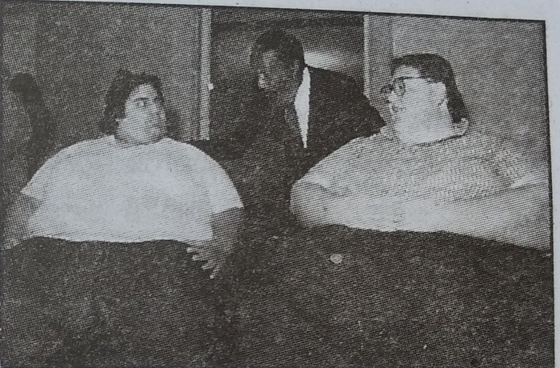
శరీరము యొక్క అధిక బరువు పరోక్షంగా కీళ్ళు తొందరగా అరిగిపోవడానికి కారణం అవుతుంది. 2 అంతస్తుల కోసం నిర్మించిన పిల్లర్లపైన 4 అంతస్తుల బిల్డింగ్ నిర్మిస్తే ఆ కట్టడం ఆగుతుందా. ఆగదు. కారణం 2 అంతస్తుల బరువును మోయడానికి పిల్లర్ల యొక్క సైజును లెక్కతో ఇన్ని ఇంచుల పిల్లరు వేయాలి. ఇందులో ఇంత సైజు ఇనుపరాడ్ వాడాలి. ఇంత ఇసుక, ఇంత సిమెంట్ వేయాలని ఇంజనీర్లు లెక్కలు వేస్తారు. ఆ ప్రకారంగా నిర్మిస్తారు. ఆ బరువును మాత్రమే తట్టుకోగలిగే కెపాసిటి ఉన్న పిల్లర్లపై అంతకు మించి రెండింతల బరువును అదే పిల్లర్లపై నిర్మిస్తే ఆగదు కదా. వెంటనే కూలిపోతుంది. 100 కిలోల బస్తాను మోయగల కెపాసిటి ఉన్న మనిషికి 150 కిలోలు లేదా 200 కిలోల బస్తాను వెన్నుపై పెట్టి మోయమని చెబితే మోయగలడా? లేడు కూలిపోతాడు. మనిషి ఎత్తును బట్టి బరువు ఉండాలని వైద్యులు, పోషకాహార నిపుణులు నిర్ణయించారు. ఎత్తుని బట్టి బరువు వుంటేనే చూడడానికి బాగుంటారు. మీరు సన్నగాను, లేదా అధిక బరువుగా ఉంటే బాగుండరు. సన్నగా బక్క పీనుగులాగా లేదా ఎముకలకు చర్మం అతికినట్లు ఉండడం మంచిది కాదు. కారణం ఎముకలకు అతుకబడిన కండరాల సైజు తగ్గిపోతాయి. తద్వారా బలహీనమవుతాయి. బలహీనమైన కండరాలు కీళ్ళను సమర్థవంతంగా కదుపలేవు. తొందరగా అలసటకు లోనుకావడం జరుగుతుంది. బలహీనమైన కండరాల ద్వారా కీళ్ళు కూడా బలహీనమవుతాయి. బలహీనమైన కీళ్ళు తొందరగా నష్టపోతాయి. చిన్న చిన్న కుదుపులకు, చిన్న చిన్న బాక్టీరియాల, వైరస్ ల తాకిడికి తట్టుకొని, ఎదిరించే శక్తి ఉండదు. అలా కాకుండా అధిక బరువున్నట్లైతే మనిషి గున్న ఏనుగులా ఉంటాడు. పొట్ట, పిరుదులు, తొడలు పెరిగి పోతాయి. మనిషి డబ్బాలాగా తయారవుతాడు. ప్రస్తుతం సమాజంలో 30 సంవత్సరాలు నిండక ముందే ముందుకు పెద్ద కుండలాగా పొట్టను తగిలించుకొని తిరుగుతుంటారు. ఆ కుండ ముందు నడుస్తుంటుంది, వెనకాల తను నడుస్తుంటాడు. మన బరువు మనకే కాదండి ఇతరులకు కూడా ఇబ్బంది కలిగిస్తుంటుంది. మనతో కలిసి కాపురం చేసే జీవిత భాగస్వాములకు మరెంతో బాధ. మనతో కలిసి జీవించే కుటుంబ సభ్యులకు బాధ. మన బరువు చివరికి ముక్కు, ముఖం తెలియని వారికి కూడా ఒక్కోసారి ఇబ్బంది కలిగించవచ్చు. ఇలాంటి సందర్భాలు ఎన్నో మనం నిత్యం చూస్తూనే ఉన్నాం.
భార్యా భర్తలు ఇద్దరూ కలిసి 40 సంవత్సరాల నుండి చక్కగా కాపురం చేసుకుంటున్నారు. 10 సంవత్సరాల క్రింద ఆయన రిటైర్ అయిపోయినాడు. చేతిలో డబ్బులు తగ్గిపోయినాయి. తను మాత్రం వయస్సులో ఉన్నప్పటి కన్నా ఎక్కువ ఖర్చులో పడినాడు. కారణం ఏమిటంటే పాపం గత 20 సంవత్సరాల నుండి అంచెలంచెలుగా బరువు విపరీతంగా పెరిగిపోయాడు. ఒక బియ్యం మూట బరువును 10 సంవత్సరాల క్రితమే బద్దలు కొట్టాడు. ఇప్పుడు చూస్తే 120 కిలోల వరకు పెరిగింది. పాపం బరువు ఒక్కటే సమస్య కాలేదండి తన ప్రాణానికి. దానితో పాటుగా బి.పి, షుగరు, గుండె సమస్యలు వచ్చాయి. తొడలు తొడలు రాసుకొని తొడల మధ్య నల్లగా చర్మం మాడిపోయి ఫంగస్ ఇన్ ఫెక్షన్ వచ్చింది. నడిస్తే ఆయాసం, కూర్చొంటే ఆయాసం. చివరికి లెట్రిన్ కి వెళ్ళాలన్నా వెళ్ళలేని స్థితిలో ఉన్నాడు. ఎవరో ఒకరి సహాయం తీసుకోవలసిన పరిస్థితి. అన్ని రోగాలకు మందులు వాడాలి. ఇన్నీ భరించిన భార్యకు కూడా విసుగొచ్చింది. ఎప్పుడూ చిరాకుపడుతుంది. ఓ రోజు బాగా తిట్టేసింది. నీవు దేనికి పనికి రాకుండా పోయావు. నీ వలన నాకేమి సుఖం లేదు. ఎన్ని పనులు చేయాలి. నా పనులే కాకుండా, నీ పనులూ చేయలేక చస్తున్నా, అసలే ఏనుగులాగ శరీరం పెంచుకున్నావు. దానికి తోడు దేశంలో ఉన్న రోగాలన్నీ నీవు తెచ్చుకున్నావు. ఇంకా ఎన్ని రోజులు మమ్ములని ఇలా చంపుతావు. ఇంకెందుకు నీ బ్రతుకు ఇలాంటి వారికే ఆయుష్షు ఎక్కువ పెడతాడు. ఆ పాడు దేవుడు. అని చడా మడా తిట్టేస్తుంది. ఇలా విని విని పాపం విసిగిపోతాడు. శారీరకంగా, ఆర్థికంగా, కుటుంబపరంగా, మానసికంగా దెబ్బతిన్నాడు. చివరికి చచ్చిపోదామని ఓ నిర్ణయం తీసుకున్నాడు. ఎలా చావాలో అర్థం కాలేదు. వెంటనే లిఫ్ట్ లో 4 అంతస్థుల బిల్డింగ్ ఎక్కుతాడు. పై నుంచి క్రిందకి దూకేసాడు. ఏముంది 4 రోజుల తర్వాత కళ్ళు తెరిచి చూస్తే సినిమాలోలాగా కళ్ళ ముందు ఓ నర్సు, హాస్పిటల్ బెడ్ పై కాళ్ళు విరిగినాయి కాబోలు బ్యాండేజ్ వేసి ఉన్నాయి. నాకేమైంది. నేను ఇక్కడున్నానే. నేను చనిపోలేదా. ఇంక బ్రతికే ఉన్నానా? అని రకరకాల ప్రశ్నల వర్షం కురిపించాడు. ఆ నర్సు తాపీగా అన్నీ విని మెల్లగా సమాధానం ఇలా చెప్పింది. అయ్యా. ఇక ఆపండి. మీరు చావ లేదు. బ్రతికే ఉన్నారు ఇది నిజమే. పై నుంచి క్రిందకి దూకినపుడు మీ క్రింద ఇద్దరు మనుషులున్నారు. వారు మాత్రం చచ్చారు. మీరు చావ లేదు. కాళ్ళు మాత్రం విరిగి మా నర్సింగ్ హోమ్ లో ఉన్నారు! అది విని భోరుమన్నాడు. "మూలిగే నక్క మీద తాటి కాయ పడ్డట్టయింది". అసలే బరువు పెరిగి 10 రకల జబ్బులతో ఇబ్బంది పడుతుంటే ఇప్పుడు ఎముకలు విరిగి మంచాన పడ్డాడు. ఇలా బరువు మనకే కాదండి. మన జీవిత భాగస్వామికి, కుటుంబీకులకు, మన తోటి వారికి కూడా ఒక్కొక్కసారి ఇబ్బందిని కలిగిస్తుంది. ముఖ్యంగా మన తుంటిభాగం (Hip Joint), మోకాళ్ళ (Knees) భాగంపై శరీర బరువు పడుతుంది. మన కాళ్ళు, బిల్డింగ్ పిల్లర్ల లాగా శరీర బరువును మోస్తాయి. మన శరీరాన్ని, మన కాళ్ళు మోయాలి కదా. తప్పదు. నెత్తి మీద 10 కిలోల బరువు పెట్టుకొని కొంత దూరం నడిస్తే, ఎప్పుడు క్రింద దించుదామా అని అనుకుంటుంటాం. చంకలో పిల్లని ఎత్తుకొని కొంత దూరం నడిచి క్రింద దించి, హమ్మయ్యా అనుకుంటాం. కాని ఈ బరువును ఎలా దించేది. మన ముందు కుండ, వెనుక సీటు అంటిపెట్టుకొని ఉన్నవే. వాటిని మోయక తప్పదు. ఇలా మన బరువు మోకాళ్ళపైన, తుంటి పైన పడుతుంది. నడుస్తున్నప్పుడు కీళ్ళలో ఎముక, ఎముక రాసుకుంటుంది. దానికి తోడు శరీర బరువు కూడా కీళ్ళ ఎముకలపై పడి, ఎక్కువ బరువుతో రాసుకుంటుంది. ఇలా కీళ్ళు ఎక్కువ రాపిడికి, ఒత్తిడికి లోనై తొందరగా అరిగిపోవడం లేదా వాపు, నొప్పి రావడం జరుగుతుంది. అందుకే బరువు ఎన్నో సమస్యలకు దారి చూపడం కాకుండా కీళ్ళ వ్యాధులు కూడా దరిచేరేటట్టు చేస్తుంది. శరీర ఎత్తుకు తగిన బరువు ఉండడమే అన్నివిధాల మంచిది. అధిక బరువు ఉన్నట్లయితే ప్రకృతి జీవనం సాగిస్తూ, ప్రకృతి చికిత్సలు తీసుకుంటూ, శరీరానికి నష్టం కలుగకుండా, బరువు తగ్గించుకొని ఆరోగ్యంగా, ఆనందంగా జీవించవచ్చు.
6. మానసిక ఒత్తిడి మరియు కీళ్ళ నొప్పులు
స్ట్రెస్ మరియు కీళ్ళ నొప్పుల గురించి అర్థం చేసుకోవాలంటే ముందుగా స్ట్రెస్ అంటే ఏమిటో అర్థం చేసుకునే ప్రయత్నం చేద్దాం. ప్రతి వ్యక్తి నిత్యజీవితంలో తను పని చేసే ప్రదేశంలో గాని, కుటుంబంలో గాని, సమాజంలో ఇతర వ్యక్తులతో గాని, ఏదో విషయంలో మానసిక ఒత్తిడికి గురవుతున్నాడు. నేడు స్ట్రెస్ అనే పదం చాలా తరచుగా వినబడుతోంది. పిల్లల నుండి పెద్దల వరకు అన్ని రంగాల ప్రజలలోను, చివరకు స్ట్రెస్ పైన పనిచేస్తున్న వ్యక్తులకు కూడా చాలా సర్వసాధారణమైంది. ఒత్తిడి అనేది ప్రతి వ్యక్తికీ సాధారణంగా ఉంటుంది. ఏ పనిచేయాలన్నా, లేదా జీవితంలో ఏదైనా సాధించాలన్నా ఒత్తిడి లేకుండా జరుగదు. ఒత్తిడి మంచిదే కాని శృతి మించితే ప్రమాదం. మనం స్ట్రెస్ ని వయోలిన్ తో పోల్చవచ్చు. వయోలిన్ కి తీగలుంటాయి. అవి వదులుగా ఉంటే స్వరాలు పలుకవు. బాగా టైట్ చేస్తే తెగిపోతాయి. తీగెలు ఎంత టైట్ గా ఉండాలో అంతే టైట్ గా ఉంచి తీగెలను మీటితే మనకు కావలసిన మధురమైన సప్తస్వరాలు పలుకుతాయి. జీవితంలో స్ట్రెస్ పరిస్థితి కూడ అంతేనండి.
స్ట్రెస్ అనగా
బయట జరిగే పరిస్థితులకు ప్రతి చర్యగా మనం స్పందించే విధానాన్ని స్ట్రెస్ అనవచ్చు. ఉదా: భర్త భార్యను ఈ రోజు కూర బాగా లేదని అనగానే, మీ ముఖానికి ఏ రోజైనా మెచ్చుకున్నారా అని గయ్యిన భర్త మీద మండిపడి, పెద్ద ఎత్తున గొడవ చేయవచ్చు. అప్పుడు ఇద్దరి మధ్యా విపరీతమైన ఒత్తిడి పెరుగుతుంది. లేదా సరేలెండి. కొద్దిగా ఈ రోజు పొరపాటైంది. రేపు బాగా చెస్తాలే అని సర్ది చెప్పుకోవచ్చు. అప్పుడు ఒత్తిడి ఇద్దరి మధ్యా తలెత్తదు. అనగా ఒక విషయానికి ప్రతిచర్యగా మనం ఎన్నో రకాలుగా స్పందిస్తుంటాం. మన ప్రతిస్పందననే మనం స్ట్రెస్ అంటాం. ఒక విషయానికి పాజిటివ్ గా స్పందిస్తే ఒత్తిడి ఉండదు. తీవ్రంగా నెగెటివ్ గా స్పందిస్తే ఒత్తిడికి లోనవుతారు.
ఇందులో రెండు రకాలున్నాయి. 1. యూస్ట్రెస్ 2. డిస్ట్రెస్.
1. యూస్ట్రెస్
జీవితంలో మనల్ని ముందుకు తీసుకెళ్ళే ఒత్తిడినే యూస్ట్రెస్ అంటాం. నిత్య జీవితంలో ఏదైనా కార్యం తలపెడదాం. ఫలానా టైంలో ఈ కార్యక్రమాన్ని విజయవంతంగా పూర్తి చేయాలనే సంకల్పంతో కృషి చేసి సాధిస్తాం. ఎన్ని అడ్డంకులెదురైనా మనం అనుకున్న వైపుకు మనల్ని తీసుకెళ్ళేటట్లుగా చేసేది మంచి స్ట్రెస్ అనవచ్చు. ఈ రకమైన స్ట్రెస్ లో ఆనందం ఉంది. మనకు సంతోషాన్ని కల్గించే స్ట్రెస్ ఇది. మంచి స్ట్రెస్ కు గురైనప్పుడు మెదడులో సెరటోనిన్ అనే ఆరోగ్యకరమైన హార్మోన్ ఉత్పత్తి అవుతుంది. ఈ హార్మోన్ కండరాలను, నరాలను, రక్తనాళాలను విశ్రాంతి పరుస్తుంది.
2. డిస్ట్రెస్
మన కెపాసిటీకి మించి నెగెటివ్ గా ఆలోచనలు చేసినపుడు మనస్సు తీవ్రంగా స్పందిస్తుంది. ఒక విషయాన్ని పదే పదే చాలా సార్లు ఆలోచించడం ద్వారా మానసికంగా కృంగిపోయే పరిస్థితి వస్తుంది. ఈ స్ట్రెస్ మంచిది కాదు. నెగెటివ్ ఆలోచనలతో సతమతమవుతున్నప్పుడు ప్రతిచర్యగా శరీరంలో కొన్ని స్టిరాయిడ్ హార్మోన్లు ఉత్పత్తి అవుతాయి. ఈ హార్మోన్లు కొన్ని వేల కణాలను క్షణాలలో నాశనం చేస్తాయి. ఆలోచనలు ఎక్కువైనపుడు దీర్ఘకాలిక ఒత్తిడికి గురవుతారు. మనం మీటే వీణ తీగలు ఎప్పుడూ అధికమైన టైటులో ఉంచితే ఆ వీణ శృతి తప్పుతుంది లేదా తెగిపోతుంది. అలాగే మన జీవితంలో ఒత్తిడి ఎక్కువయితే ఆ ప్రభావం కండరాలపై కీళ్ళపై బడి నొప్పి పెరిగిపోతుంది. అదే పరంపరలో కీళ్ళ నొప్పులు దీర్ఘకాలికంగా ఉన్నవారికి కూడా ఎన్నో నష్టాలు జరుగుతున్నాయి. కీళ్ళనొప్పులకు, స్ట్రెస్ కు ఉన్న సంబంధం ఏమిటో ఇప్పుడు అర్థం చేసుకునే ప్రయత్నం చేద్దాం.
కీళ్ళ నొప్పులు-స్ట్రెస్ కి గల సంబంధం
శరీరానికి మనస్సుకు అవినాభావ సంబంధం ఉందని నేడు వైద్యశాస్త్రం కూడా గుర్తించింది. మన మనస్సులో జరిగే అలజడులకు మన శరీరం స్పందిస్తుంది. దీర్ఘకాలికంగా కీళ్ళనొప్పులున్నవారు తీవ్రమైన మనస్తాపానికి గురౌతుంటారు. ఎందుకంటే వారి పనులు వారు చేసుకోలేని స్థితిలో ఉంటారు. ఇతరులపై ఆధారపడి ఉండాల్సి వస్తుంది. ఆర్థికంగా ఇబ్బందిగా ఉన్నవారు ఇంకా మనస్తాపానికి లోనవుతారు. వైద్యులకు చూపించుకోవడానికి డబ్బు లేక ఇబ్బంది పడతారు. ఇంటికి పెద్ద దిక్కుగా ఉండి, కుటుంబంలోని వారందరికీ తనే ఆధారమై ఉండి, తను మంచంపై నుంచి దిగలేని పరిస్థితులలో ఉంటే ఇక చెప్పక్కర్లేదు. మనస్సులో తీవ్రమైన ఆలోచనలు కదిలినపుడు తనను తాను రక్షించుకొనే ప్రయత్నంలో భాగంగా మెదడు కొన్ని సిగ్నల్స్ ను కిడ్నీపైనున్న అడ్రినల్ గ్రంథికి పంపిస్తుంది. ఆలోచన తీవ్రతను బట్టి అడ్రినాలిన్ అనే హార్మోను రక్తంలోకి చిమ్ముతుంది. ఆ రసాయనాలు శరీరాన్ని ఉద్వేగ స్థితిలోకి తీసుకెళతాయి. కండరాలు తీవ్రంగా స్పందిస్తాయి. కండరాల స్పందనకు ఎక్కువ రక్తం, ఆక్సిజన్ మరియు గ్లూకోజ్ కావాలి, అందుకే గుండెను వేగవంతం చేస్తుంది. శ్వాస వేగాన్ని పెంచుతుంది. లివర్ పని పెరిగి, గ్లూకోజ్ ను రక్తంలోకి విడుదల చేస్తుంది. తిరిగి కండరాలు ఇంకా ఎక్కువగా టెన్షన్ కి గురవుతాయి. ఎప్పుడైతే కండరాలు టెన్షన్ కి లోనవుతాయో అందులోని రక్తనాళాలు నొక్కబడతాయి. రక్త ప్రసరణ ఆ అవయవానికి తగ్గిపోతుంది. ఫలితంగా నొప్పి తీవ్రత పెరుగుతుంది. కంట్రోల్ లేని విపరీతమైన ఆలోచనా ధోరణి మన శరీరంలో పైన చెప్పినట్లుగా రసాయనిక మార్పులు చెంది నొప్పిని పెంచుతుంది. అయితే ఈ పెరిగిన నొప్పి తిరిగి మానసికంగా ఇంకా కృంగదీస్తుంది. అందుకే ఈ ఒత్తిడి చక్రం ఇలాగే తిరుగుతూ ఉంటుంది.
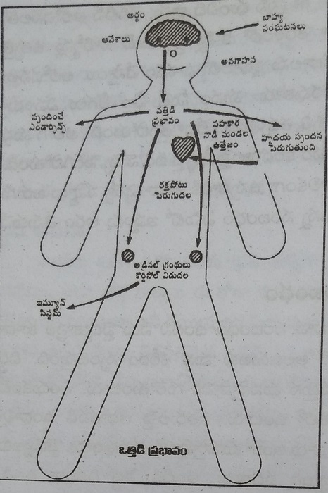
ఈ ఒత్తిడి చక్రంలో పడిన వ్యక్తి బయటకు రావడం చాలా కష్టం. ఎందుకంటే మనస్సు ఒక ఆలోచనలో నుండి ఇంకో ఆలోచన లోకి వెళ్తుంది. తెలియకుండానే చిరాకు, ఆవేశం, అభద్రతలాంటి ఆందోళనలు పెరుగుతాయి. రోగ నిరోధకత తగ్గిపోతుంది. కీళ్ళ నొప్పులు, వాపు రెట్టింపు అవుతాయి. ఇలా ఒకటేమిటి ఒకదానితో ఒకటి ముడిపడి సైకిల్ చైన్ లా, సుడిగుండంలా అక్కడే తిరుగుతూ బయటకు రాలేక బాధపడుతుంటారు. మానసిక ఒత్తిడులలో రోగనిరోధక శక్తి తగ్గడం ద్వారా ముఖ్యంగా రుమటాయిడ్ ఆర్థరైటిస్ తీవ్రత ఇంకా పెరుగుతుంది.
ఒత్తిడిని కంట్రోల్ ఎలా చేయాలి
శరీరానికి, మనస్సుకు విడదీయలేని సంబంధం ఉంది. కాబట్టి దీర్ఘకాలికంగా కీళ్ళనొప్పులతో బాధపడుతున్నవారు ఈ పుస్తకంలో తెలియజేసినట్లుగా శరీరానికి కావలసిన అవసరాలు అనగా మంచి గాలి, మంచి నీరు, సరియైన పోషకాహారం, మంచి వ్యాయామం, మంచి విసర్జన, మంచి విశ్రాంతిని సరియైన విధానంలో అందిస్తూ, మనస్సును ఒత్తిడిలోకి పోనివ్వకుండా మానసికంగా ప్రశాంతతను పెంచుకోండి. అందుకు మీ మనస్సును అర్థం చేసుకోండి. మనస్సు ఏం కోరుతుందో విశ్లేషించండి. మీ శక్తి సామర్థ్యాలు ఏమిటి? మీరు ఎంతవరకు చేయగలుగుతారు. ఎవరు మీ సమస్య తీర్చడానికి సహాయం చేస్తారు, అన్న విషయాలను ఏకాంతంగా ధ్యానంలో ఆలోచించి ఒక నిర్ణయానికి రండి. తుది నిర్ణయం మీదే. స్ట్రెస్ కరెక్టుగా గుర్తించగలిగితే 50% మీరు ఒత్తిడి నుండి బయటపడినట్లే. కారణమేమిటంటే ఏవైతే మిమ్ములను బాధపెడుతున్నాయో వాటిని దూరంగా ఉంచగలగడమే కంట్రోల్ చేయడమన్నమాట. మనస్సు ఎప్పుడూ గజిబిజిగా ఉంటుంది. చిక్కుపడిన త్రాడు లాంటిది. చిక్కుపడిన త్రాడులో చిక్కును ఎలా తొలగిస్తారు. ముందు ఒక చివర గుర్తించి మెల్ల మెల్లగా ముడివిప్పుతూ పోతుంటే చివరిగా చిక్కుముడి విడిపోతుంది. అలాగే మనలో మెదిలే చిక్కు సమస్యలను ముందు పుస్తకంలో వ్రాయండి. ఒక్కొక్క దానికి సమాధానం మీరే ఇచ్చుకుంటూ వెళ్తే చివరిగా మీరే మిగులుతారు. సమస్య మాయమౌతుంది. చివరికి ఏం తేలుతుందంటే సమస్య మనలో ఉంది. సమాధానం కూడా మనలోనే ఉందనే విషయం తేటతెల్లమౌతుంది. ప్రయత్నం చేసి చూడండి. మీకే అర్థం అవుతుంది. ప్రతిరోజూ మనస్సు ప్రశాంతంగా ఉంచుకోవడానికి మంచి ఆహారం, యోగ, ప్రాణాయామం అలాగే రోజూ కొంతసేపు ధ్యానం చేసుకోండి. లేదా రిలాక్సేషన్ టెక్నిక్కులు ఆచరించండి. ఈ పుస్తకంలో యోగా విభాగంలో కొన్ని రిలాక్సేషన్ టెక్నిక్కులు ఇవ్వబడ్డాయి. ఆవిధంగా ఆచరించే ప్రయత్నం చేయండి. స్ట్రెస్ తగ్గుతుంది. ప్రశాంతత పెరుగుతుంది. వెంటనే నొప్పుల తీవ్రత తగ్గుతుంది. మనస్సుకు ఎంతో శక్తి ఉంది. మనస్సు నొప్పిని సృష్టించగలదు. నొప్పిని మటుమాయం చేయగలదు. అనుభవం మీద మీకే తెలుస్తుంది.
ఎప్పుడు మీరు స్ట్రెస్ ఫీలు అయినా వెంటనే ఒక గ్లాసు మంచి నీరు త్రాగండి. లేదా మీకు నచ్చిన మ్యూజిక్ వినండి లేదా నచ్చిన పుస్తకాలు చదవండి. లేదా నచ్చిన వారితో సరదాగా సంభాషించండి. గతం తవ్వడం ఆపండి. భవిష్యత్తు గురించి భయపడకండి. వర్తమానంలో జీవించండి. దారితప్పిన మనసును మెల్లగా దారిలో పడేటట్లు చేయండి. భగవంతుడిచ్చిన జీవితాన్ని దుర్భరం కాకుండా అర్థవంతమయ్యేటట్లుగా ఆలోచించి ఆశతో, ఆత్మాభిమానంతో, స్వశక్తితో ముందుకెళ్ళండి. జీవితంలో మధురానుభూతుల పుష్పాలను ఫలాలను పెంచండి. పంచండి. ఆస్వాదించండి.
5. కీళ్ళ నొప్పులకు నివారణోపాయాలు మరియు ప్రకృతి వైద్యం
- శరీరమందించే సంకేతాలు గ్రహించు - రోగ నిరోధక శక్తికి సదా సహకరించు
- తెల్లరక్తకణాలకు, రోగ కారకాలకు మధ్య ఘర్షణ - రోగాల బారి పడకుండా శరీరం పొందే రక్షణ
- వాదన పెంచకు - నిర్వేదం పొందకు - సంకల్పం మరువకు - సాధన విరమించకు
- పంచభూతాత్మకం మన శరీరం - పంచభూతాలతోనే ప్రకృతి వైద్య విధానం
- ప్రకృతి వైద్యం ద్వారా రోగాల నివారణం - కణం లోపల ఏర్పడు ఆరోగ్య వాతావరణం
- ప్రకృతి ధర్మాలను అనుసరించు - ఆరోగ్యంగా ఆదర్శంగా జీవించు
- తొలగాలంటే రోగ కారణం - ప్రకృతి వైద్యమే శరణం
- ప్రకృతి విధానం పాటించు - సుకృత జీవనం సాగించు
- అతీవద్దు మితీ వద్దు - మధ్యేమార్గమే మనకు ముద్దు
- వ్యాయామంతో రక్తప్రసరణ వేగంగా జరుగు - వ్యర్థ పదార్థాలు త్వరితంగా బయటకు తొలగు
- తెలుసుకోండి వ్యాయామం విలువ - దేహంలో పెంచుకోండి ప్రాణశక్తి నిలవ
- వ్యాయామం కండరాలను చేస్తుంది వదులు - లోపాలున్న మలినాలు బయటకు కదులు
- ఆసనంలో నొప్పిని పరిశీలించండి - నొప్పిరాకుంటే ఉపయోగం లేదండి
- రావాలంటే బాగా ఆసనస్థితి - సహకరించాలి నీ శరీర స్థితి
- గాలి విషయంలో సందేహమా! - దాని విషయం దేహానికి వదిలేయి మిత్రమా!
- ఆసనాలతో ఎంతో ఉపకారం - గుండెకు ఉండదు పనిభారం
- వ్యాయామంపై ఎందుకు మక్కువ - ఆసనాలతో ఉపయోగం ఎక్కువ
- ఆసనాల ద్వారా రక్తం మళ్ళించు - అవయవాల బిగింపు సడలించు
- కండరాలకు అందుతుంది తగినంత రక్తం - పొందండి ఆసనాలతో ఆ సౌఖ్యం
- తెల్లవారకుండా చెయ్యి ఆసనాలు - తెల్లవారితే ఉండవు మంచి వైబ్రేషనులు
- ఆసనానికి ఆసనానికి మధ్య విశ్రాంతి నొందు - ఆసనాల ప్రయోజనం పూర్తిగా పొందు
- ఆహారం తినకుండా ఆసనాలు చేయి - ఆరుబయట చేస్తే ఆసనాలు హాయి
- ఆసనం విరమించాక నడుస్తాయి దీర్ఘశ్వాసలు - విశ్రాంతి పొందితే వస్తాయి మానసిక మార్పులు
- వెంటవెంటనే వేస్తే వస్తుంది అలుపు - మధ్య మధ్యలో విశ్రాంతి నివ్వాలని చెయ్యి తలపు
- కళ్ళు మూసి గమనించు మార్పులు - కళ్ళు తెరిస్తే ముసురు ఆలోచనలు
- అందరూ చెయ్యాలి ఆసనాలు - ఆరోగ్యానికవి చక్కని శాసనాలు
- వ్యాయామంలో చెమట బాగా పడుతుంది - రక్తంలోని నీటి శాతం తగ్గుతుంది
- ఆసనాలలో పెరుగుతాయి కణ శ్వాసలు - ఆక్సిజన్ తో తీరుతాయి కణాల అవసరాలు
- ఆసనమంటే కదలని స్థితి - వేసేటపుడు ఉండాలి క్రమపద్ధతి
- ఆసన స్థితిలో చేస్తే లోపం - ప్రయోజనముండదు లవలేశం
- ఆసనాలు వేస్తే మనసు జాగృతం - శరీరమౌతుంది ఆరోగ్యవంతం
- ఉష్ట్రాసనం వేయి సరిగా - సయాటికా తగ్గుతుంది పూర్తిగా
- ఆసనంలో శ్వాసపై పెట్టు నీ ధ్యాస - మనసుతో గమనించు నీ శ్వాస
- ఎంతో చక్కటి విద్య యోగా - చేయకు దాన్ని ఎక్సర్ సైజు లాగా
- ఉంటే అవయవాల మధ్య సమన్వయం - ఔతుంది ప్రాణశక్తి సరిగా వినిమయం
- ఉన్నత మార్గంలో జీవితం నడవాలంట - ప్రతిరోజూ ఆసనాలకూ కేటాయించు ఒక గంట
- సరిగా చెయ్యాలి శవాసనం - అది ప్రశాంతత పెంచే అద్భుత ఆసనం
- ప్రతిరోజూ చేస్తే ప్రాణాయామం - ప్రాణశక్తి కది చక్కని సోపానం
- ప్రాణశక్తిని పెంచేందుకు ప్రాణాయామం - పతంజలి లాంటి ఋషులిచ్చిన సగుణోపాయం
- కపాలభాతితో శరీరం శుద్ధి - ప్రాణశక్తి ఎంతో వృద్ధి
- కపాలభాతి ప్రాణాయామంతో శుద్ధి చేసుకుని ముందు - నాడీశుద్ధి ప్రాణాయామంతో ప్రాణశక్తి పుష్కలంగా పొందు
- సూర్యనాడితో పెరుగును ఉష్ణం - చంద్రనాడితో తరుగును ఉష్ణం
- నాడీశుద్ధితో ప్రాణశక్తికి పరిపుష్టి - చేసేటప్పుడు శ్వాసపైనే ఉంచు నీ దృష్టి
- తల్లిలాంటిది ఓంకార మంత్రం - తనువులోని దివ్యశక్తిని కాపాడే ఛత్రం
- ఉచ్ఛరిస్తే ప్రతిరోజూ ఓంకారం - నిర్గమిస్తుంది మనలోని అహంకారం
ఇంత వరకు కీళ్ళనొప్పులకు కారణాలు సవివరంగా తెలుసుకున్నాం. ఇప్పుడు కీళ్ళను సమర్థవంతంగా ఎలా ఉంచుకోవాలో తెలుసుకుందాం. ప్రకృతి జీవన విధానాన్ని సంపూర్ణంగా ఆచరించినంతవరకు జీవితంలో ఎలాంటి అనారోగ్య సమస్య లేకుండా, భవిష్యత్తులో రాకుండా జాగ్రత్తపడవచ్చు. శరీరంలోని అన్ని అవయవాలను వాటి పని తీరును సమర్థవంతంగా ఉంచుకోవచ్చు. మన ఎముకలు, కీళ్ళు, కండరాలు అత్యంత పటిష్టంగా వాటి పని తీరును సాగించవచ్చు. మీరు ఇప్పటికే ప్రకృతి జీవన విధానాన్ని పాటిస్తూ ఉన్నట్లయితే మీ కీళ్ళ పని తీరును మీ చేతుల్లోకి తీసుకోవచ్చని అర్థం అయి ఉంటుంది. ఎలాగంటే శరీర అవసరాలను పూరించితే చాలు, మిగతా కార్యక్రమం శరీరమే చేసుకుంటూపోతుంది. ఎటుతిరిగి మనం అడ్డుపుల్ల వేయకుంటే చాలు, ఎలాగంటే ఒక చెట్టుకు అవసరమైన గాలి, నీరు, సూర్యరశ్మి మంచి పోషక పదార్థాలున్న మట్టి తగుపాళ్ళలో అందించడం ద్వారా చెట్టు ఏపుగా, చక్కగా, ఎలాంటి రోగాలు లేకుండా చాలా ఆరోగ్యకరంగా పెరుగుతుంది కదా! అంతే సులభం మన ఆరోగ్యం కూడా. ఎంత సింపుల్ ఈక్వేషనో చూడండి. ఇక్కడ మనం విచక్షణతో చేయవలసినది ఏమిటంటే కాస్త మన శరీర అవసరాలు ఏమిటో గుర్తించడం, శరీరానికి అవసరమైన పదార్థాలను సమపాళ్ళలో ఎప్పటికప్పుడు అందించడం చేస్తే చాలు. మనం సంపూర్ణ ఆరోగ్యవంతులుగా నిండు నూరేళ్ళు ఉండవచ్చు.
కీళ్ళలో నొప్పి
కీళ్ళనొప్పులతో బాధపడేవారిలో ముఖ్యంగా వాపు (ఇన్ ఫ్లామేషన్) నాలుగు రకాలుగా కన్పిస్తుంది (ఎ) వేడిగా ఉంటుంది (బి) నొప్పిగా ఉంటుంది (సి) వాస్తుంది (డి) ఎరుపుగా ఉంటుంది.
ఈ నాలుగు లక్షణాలు కనిపించినట్లయితే సమస్య తరుణ (అక్యూట్) స్థితిలో ఉన్నట్లు. ఈ స్థితి ఎందుకు వస్తుందంటే శరీరం తనను తాను బాగుచేసుకోవడానికి చేసే ప్రయత్నంలో కలిగే విభిన్న మార్పులు మాత్రమే. వీటివలన మనకు ఎంతో లాభం చేకూరుతుంది. ఇవి ఎంత మాత్రం నష్టం కావని గమనించాలి. ఈ ప్రక్రియ శరీరానికి ఎందుకు మంచిదో మనకు తెలియకుండానే మనల్ని కాపాడుకోవడం కోసం ఎలాంటి ప్రయత్నం చేస్తుందో ఒక ఉదాహరణ ద్వారా తెలుసుకుందాం.
శత్రువులు మన మీదకు రాబోతున్నప్పుడు వెంటనే మన రాడార్ సిస్టమ్ గుర్తించి మనకు సంకేతాల రూపంలో ఎలాగైతే తెలియజేస్తుందో అలాగే మనకీళ్ళలో నొప్పి లేదా వాపు అనేది కూడా మనల్ని అలర్ట్ చేయడానికి దోహదపడుతుంది. అలా శత్రువులు రాబోతున్నప్పుడు మన మిలిట్రీ సైన్యం గుర్తించి అలర్ట్ ప్రకటించి ఇతర ప్రదేశాలలోని సైనికులను కూడా దించి యుద్ధం ఎలాగైతే చేస్తామో అలాగే మన రక్తంలోని తెల్ల రక్తకణాలు దాడిని చేస్తాయి. చివరి వరకూ పోరాడుతుంటాయి. ఈ పోరాటంలో జరిగే ఘర్షణలో కొంత నొప్పి బాధ కలుగుతుంది.
పైన పేర్కొన్న విధముగానే మన శరీరంలో నొప్పి లేదా కీళ్ళలో వాపు వచ్చినా, ఇవి తాత్కాలికమైనవిగా గుర్తించాలి. దీనిని తరుణ వ్యాధి (Acute disease) అంటారు. ప్రకృతి వైద్యం దృష్టిలో ఈ స్థితి ఒక రకంగా మంచిదే అని చెప్పవచ్చు. ఇది ఎంత మాత్రం నష్టం కాదు. ఒక మాటలో చెప్పాలంటే నొప్పి, వాపు రూపంలో ఇలా శరీరమే మనల్ని అలర్ట్ చేసి, మనల్ని, మన మనస్సును ఆకర్షించేటట్లు చేసి తనను తాను బాగుచేసుకోవడానికి అవకాశం తీసుకుంటుంది. చిన్న పిల్లలు ఏ వస్తువైనా లేదా తినే తినుబండారాలు తల్లిదండ్రుల్ని కొనివ్వమని అడుగుతారు. ఒకవేళ వారి కోరిక తీర్చకుంటే ఏడ్చి, మారాం చేసి ఏదో ఒక విధంగా వారి కోరిక తీర్చుకుంటారనే విషయం మనందరికి తెలుసు. ఇలా చేయడం అనేది అతి సహజమైంది. ఈ ప్రపంచంలో అందరు పిల్లలూ చేసే పని ఇదే కదా. అదే మాదిరిగా తరుణ వయస్కుల (చిన్న పిల్లల) మనస్తత్వంతో పోల్చుకోవచ్చు తరుణ వ్యాధిని. శరీరంలో ఎక్కడ ఇబ్బంది కల్గినా వెంటనే వాపు, నొప్పి రూపంతో మనల్ని కోరేది ఏమిటంటే కొద్దిగా రెస్టు ఇయ్యి. లేదా కొద్దిగా నేను చెప్పేది వినండయ్యా! నా గురించి కొద్దిగా పట్టించుకోండి. నా గొడవ ఆలకించమని వేడుకుంటుంది. మనం చేయాల్సిందల్లా ఏమీ లేదు! కాస్త శరీరం చెప్పినట్లుగా మనం వింటే చాలు. అలా వింటూ శరీరంలో ఏ మార్పు వచ్చినా ప్రకృతి నిర్దేశించిన విధంగా మనం ప్రకృతి చికిత్సలనే చేసుకుంటే అధిక శాతం మేలుంటుంది. కారణం ఏమిటంటే ఈ అక్యూట్ స్థితిలో ఆ వాపు ఉన్న ప్రదేశంలో శరీరం బాగు చేసుకోవడానికి అత్యధికంగా ప్రయత్నిస్తుంది. ఎమర్జెన్సీలో "ఆపరేషన్ రెడ్ అలర్ట్ గా" గుర్తించి తనని తాను బాగుచేసుకోవడానికి అవసరమైనన్ని కార్యక్రమాలు నిరవధికంగా చేస్తుంటుంది. ఉదాహరణకు మనం సమర్థవంతంగా నడవడానికి పనికి వచ్చే మోకాలు చిప్పలో నూనె తగ్గినా లేదా కొన్ని ఇన్ ఫెక్షన్ ల ద్వారా లేదా ఆకస్మాత్తుగా దెబ్బ తగిలినా ఆ మోకాలుని (అవయవాన్ని) కాపాడుకోవడానికి శరీరం చేసే ప్రయత్నమే వాపు. మనకు తెలియకుండానే మన శరీరంలో ఎన్నో చిత్ర విచిత్రమైన కార్యక్రమాలు జరుగుతాయి. మన మెదడు జరుగబోయే ప్రమాదాన్ని నరాల ద్వారా ముందే గుర్తిస్తుంది. వెంటనే మెదడులో కొన్ని రసాయన పదార్థాలను తయారుచేసి రక్తంలోకి విడుదల చేసి వాపు ఉన్న ప్రదేశానికి పంపిస్తుంది. ఆ మోకాలుకు ఎలాంటి శత్రువులు (బ్యాక్టీరియా, వైరస్) వచ్చారు. శత్రువులు ఎలాంటి ఆయుధాలను ఉపయోగించి (బ్యాక్టీరియాలు మనకు హాని కలిగించే కొన్ని కెమికల్స్ విడుదల చేసి) మోకాళ్ళను నష్టపరుస్తున్నారు అని తెలుసుకొని తిరిగి మెదడుకు సమాచారాన్ని అందిస్తుంటుంది. వెంటనే మెదడు ఎమర్జెన్సీగా ఎండోక్రైన్ హార్మోనులనే ఆయుధాలను పంపించి పోరాటం మొదలుపెడుతుంది. ఈ పోరాటంలో మనలోని తెల్లరక్తకణాలు అలాగే బయట నుంచి వచ్చిన బాక్టీరియా మొదలైనవి చనిపోతాయి. ఈ పొరాటంలో తెల్లరక్తకణాల అవసరం ఎక్కువ కనుక ఎముకలోని మూలుగ నుండి ఎక్కువ తెల్లరక్తకణాలను (సైనికులను) తయారుచేసి రక్తంలోకి విడుదల చేస్తుంది. అందుకే ఒక్కోరకం బ్యాక్టీరియాను బట్టి, వైరస్ లను బట్టి లేదా అక్కడి పరిస్థితులను బట్టి దానికి సంబంధించిన రక్తకణాలు రక్తంలో ఎక్కువగా కన్పిస్తాయి. అందుకే వైద్యులు రక్తపరీక్ష చేసి 5 రకాల తెల్ల రక్తకణాలలో ఏ రకమైన తెల్ల రక్తకణాలు ఎక్కువగా ఉన్నాయో చూసి తద్వారా ఏ సమస్య అయివుండవచ్చో అంచనా వేస్తారు. అంతేకాక బ్లడ్ రిపోర్టును, ఎక్స్ రే, స్కానింగ్ లను రోగి చెప్పే బాధలను అన్నింటిని బేరీజు వేసుకొని వైద్యులు తమ అనుభవాలను క్రోడీకరించుకొని ఒక నిర్ణయానికి వస్తారు
ప్రకృతి వైద్యులుగా ఇన్ని విషయాలను అర్థం చేసుకొంటాం. ఈ సమస్యకు మూలకారణం ఏమిటో గుర్తించి, మూలాన్ని ఎలా తొలగించవచ్చో అనుభవం మీద తెలుస్తుంది. చెట్టు వేరుకు పురుగుపడి చెట్టంతా నష్టపోతున్నప్పుడు పైపైన మందులు చల్లితే ఏం లాభం ఉంటుంది. అలాగే కీళ్ళలో జరిగే నష్టానికి మూలకారణం మన అస్తవ్యస్తమైన జీవనశైలే. కాబట్టి జీవన శైలిని మార్చుకోకుండా మందులను వాడితే ఏం ప్రయోజనం. మనం కీళ్ళ నొప్పి నుండి పూర్తిగా విముక్తులం అవ్వాలంటే ప్రకృతి వైద్య పరంగా ఈ క్రింది మూడు విషయాలను అవగతం చేసుకోవాలి.
మొదటిది: రోగి తన జీవనశైలిని అర్థం చేసుకొని మార్చుకోవాలి. తన కీళ్ళకు ఏదైతే నష్టం కల్గిస్తుందో దానిని దూరంగా పెట్టి తనకు అందుబాటులో ఉన్నటువంటి, తను ఆచరించడానికి అనుకూలమైన విధానాన్ని అనుసరించవలసి ఉంటుంది. అలాగే ఆహారం మార్చుకోవాల్సి ఉంటుంది. (ఆహారం గురించి విడిగా క్లుప్తంగా వ్రాయబడింది.)
రెండవది: తనకు ఈ సమస్య ఎందుకు వచ్చినదో పూర్తిగా అవగాహన కల్పించుకోవాలి. ఆ అవగాహన కోసమే ఇంత క్లియర్ గా, మీకు అర్థం అయ్యే విధంగా మీ ముందుంచే ప్రయత్నం చేస్తున్నాం. మీ రోగంపై మీకు ఎప్పుడైతే అవగాహన కల్గుతుందో అప్పుడు మీకు మీరుగా మారే ప్రయత్నం చేస్తారు. తప్పులు తెలిస్తేనే కదా సరిదిద్దుకోగలం. చీకటి రావడానికి కారణం వెలుతురు లేకపోవడమే అని తెలిస్తే, ఒక క్యాండిల్ వెలిగిస్తే చాలు చీకటి వెళ్ళిపోతుంది. ఆరోగ్యం కూడా అంత సులువండి. ఆరోగ్యకరమైన అలవాట్లను జోడిస్తే చాలు అనారోగ్యం దానంతట అదే వెళ్ళిపోతుంది. అందుకే ప్రతి ఒక్కరూ తమ సమస్యపై పూర్తి అవగాహన కలిగి ఉండాలి. అందుకే ప్రకృతి వైద్యులు వైద్యం కంటే, రోగంపై ఎక్కువ అవగాహన కలిగిస్తారు.
మూడవది: ప్రకృతిలోంచి వచ్చిన శరీరానికి ప్రకృతి చికిత్సలను అందించాలి. శరీరం కోల్పోయిన ఆరోగ్యాన్ని తిరిగి తొందరగా చేకూర్చుకుంటుంది. ప్రకృతి చికిత్సలు ఎప్పుడు కూడా శరీరానికి అనుకూలమైనవిగా ఉంటాయి. ముఖ్యంగా ప్రకృతి వైద్యంలో గాలి ద్వారా, నీటి ద్వారా, మర్దన ద్వారా, మలినాలను బయటకు పంపే చికిత్సల ద్వారా, అలాగే సరియైన విశ్రాంతి ద్వారా చికిత్స చేయడం జరుగుతుంది. ఇందులో ముఖ్యంగా శరీరాన్ని, మనసును, వాతావరణ పరిస్థితులను దృష్టిలో ఉంచుకొని చికిత్స చేయడం జరుగుతుంది.
ఈ చికిత్సల ద్వారా అనారోగ్య స్థితిలో ఉన్న కణాలలోని మలినాలను తొలగించడం ద్వారా అక్కడ కణం లోపల, కణం బయట ఆరోగ్య వాతావరణం సృష్టించబడుతుంది. తద్వారా రోగ కారకమైన బ్యాక్టీరియా, వైరస్ లేదా ఇతర పదార్థాలు అక్కడ జీవించలేవు. ఆటోమేటిక్ గా ఆరోగ్యం వస్తుంది. ఈ విషయాన్ని దృష్టిలో ఉంచుకొని ప్రకృతి వైద్యం చేయబడుతుంది.
స్థూలంగా ప్రకృతి వైద్యంలో 3 స్టేజిలలో చికిత్స చేయడం జరుగుతుంది అని చెప్పుకోవచ్చు.
1. కణంలో పేరుకున్న మలినాలను బయటకు పంపే చికిత్స విధానం. (Eliminative process)
2. కణాన్ని ఆరోగ్యవంతంగా తయారు చేసే విధానం. (Soothening process)
3. కణానికి తిరిగి శక్తిని అందించే విధానం. (constructive process)
ముందుగా మన కీళ్ళు ఎముకలు, కండరాలు వాటి పనితీరును సమర్థవంతంగా ఎలా పెట్టుకోవాలో తెలుసుకోవాలి. మన కీళ్ళు ఏ రోజూ మూలపడకుండా జీవించినన్నాళ్ళు ఆరోగ్యంగా ఉండేటట్లుగా ఉంచుకోవడం ఈ రోజుల్లో ఒక కళ అని చెప్పుకోవచ్చు. అదేమీ కష్టమైన పని మాత్రం కాదు. కొద్దిగా కోరిక ఉండి, ఆచరించే మనస్సు ఉంటే చాలు. అందుకే ఏ కారణాల ద్వారా మనిషి మంచం ఎక్కుతున్నాడో ఆ తప్పులను చేయకుండా నిత్యజీవన శైలిని మార్చుకుంటే మనం మానవునిలా బాధపడకుండా జంతువుల్లా ఆనందంగా ఆరోగ్యకరంగా జీవించవచ్చు. ముఖ్యంగా మన శరీరంలోని భాగాలు ఆరోగ్యంగా ఉండాలంటే, వాటి అవసరాలను గుర్తించి అందించాలి. ముఖ్యంగా శరీరానికి కావలసిన గాలి, నీరు, అహారం, వ్యాయామం, విసర్జన, విశ్రాంతి మొదలైన వాటిని అందిస్తూ మానసికంగా సాంఘికంగా, ఆధ్యాత్మికంగా చక్కటి జీవన శైలిని ఏర్పరచుకొని క్రమశిక్షణతో కూడిన నియమబద్ధమైన జీవితాన్ని అలవర్చుకుంటే ఒక్క కీళ్ళ వ్యాధులే కాదు ఎలాంటి రోగమూ దరిచేరదు. మర్రి చెట్టు ఎలా వేర్లు, ఊడలతో బలిష్టంగా తయారవుతుందో, పెనుతుఫాను వచ్చినా, ఉప్పెన వచ్చినా, పెనుగాలి లాంటి ప్రకృతి వైపరీత్యాలు వచ్చినా ఎలాగైతే తట్టుకొని నిలదొక్కుకోగలుగుతుందో అలాగే మన ఆరోగ్యం కూడా తొణకకుండా ఉంటుంది. వయస్సుతో పాటు ఏ మాత్రం చెదరని పటిష్టమైన కీళ్ళ కోసం శరీర అవసరాలు ఏమిటి? ఎలా అందించాలి? మన జీవన శైలి ఎలా ఉండాలి? అనే విషయాలను సంపూర్ణంగా తెలుసుకుందాం.
1. ప్రకృతికి దగ్గరగా జీవించడం...
కాలాలు మారుతున్నాయి. ఋతువులు మారుతున్నాయి. యుగాలు మారుతున్నాయి. కాల ప్రవాహంలో ప్రకృతి సహితం అనుక్షణం ఎన్నో మార్పులను చవిచూస్తుంది. నదులు, సెలయేరులు ప్రవహిస్తున్నాయి. వృక్షాలు పుష్పిస్తున్నాయి. రాలిపోతున్నాయి. మళ్ళీ పుడుతున్నాయి. ఇలా ప్రకృతిలో ఎన్నో విషయాలు అనగా రాత్రింబవళ్ళు, ఋతువులు మొదలగునవన్నీ ఒక పద్ధతి ప్రకారంగా, చాలా క్రమశిక్షణగా మార్పులకు లోనవుతూ, కాలచక్రం తిరుగుతూ ఉంది. ఇలా సృష్టి ఓ క్రమాన్ని సంతరించుకొని నడుస్తుందన్న మాట. ఇదే విధంగా జనన, మరణాల చక్రం కూడా నడవడం జరుగుతుందని పెద్దలు చెబుతున్నారు. తరాలు మారుతున్నాయి. నేడు మన కండ్ల ముందే రకరకాల క్రొత్త వింతలు టెక్నాలజీ పేరుతో చవిచూస్తున్నాం. పేరుకు క్రొత్తవే. కాని ఇవన్నీ యోగులు, ఋషులు వారి మేధస్సుతో ఏనాడో చూసారు, వారు అనుభూతిని పొందిన విషయాలే. కాలక్రమేణా తరతరాలలో మనిషిలో కూడా అనేక మార్పులొచ్చాయి. ఈనాడు నాగరికత పేరుతో మనిషి ఎంతో ఎదిగిపోయాడు. రోజు రోజుకు గణనీయమైన అభివృద్ధిని చవిచూస్తున్నాడనడంలో సందేహం లేదు. కాని "పెరుగుట విరుగట కోసమే" అన్నట్లుగా మనిషి ఆరోగ్య విషయంలో గణనీయంగా దిగజారిపోతున్నాడని చెప్పవచ్చు. వైద్యపరంగా మందుల విషయంలో, శస్త్రచికిత్స విషయంలో, డయాగ్నోసిస్ విషయంలో, శాస్త్రీయంగా శరీరంలోని ప్రతి కణంలోకి లోతుగా వెళ్ళగలిగారు కాని ప్రకృతి ప్రసాదించిన ఈ శరీరాన్ని ఎలా జాగ్రత్తగా చూసుకోవాలో విస్మరించారు. అందుకే రోగాల బారిన పడుతున్నారు. టెక్నాలజీ అవసరమే కాని "నేల విడిచి సాము" చేసినట్లుగా ఆధారాన్ని విడిచిపెట్టే ప్రయత్నం చేయకూడదు. ఏనాడైనా పడిపోక తప్పదు. ఈనాడు జరుగుతున్నది కూడా అదే కదా! మన శరీరం యొక్క అవసరాలను పూరిస్తూ టెక్నాలజీని ఎంతగా ఉపయోగించుకుంటే అంత బాగా ముందుకెళ్ళ గలరు. మంచి జీవితాన్ని అనుభవించగలరు. గాలిలో ఎంత పైకి ఎగిరినా కొంత సమయం మాత్రమే గాలిలో ఉంటారు. కాని ఏ క్షణంలోనైన భూమి మీద పడక తప్పదు. అలాగే ఎంత దూరం వెళ్ళినా, ఎంత అభివృద్ధిని చవిచూసినా తిరిగి ప్రకృతి ఆదేశించిన సూత్రాలను, ధర్మాలను పాటించక తప్పదనేది నగ్న సత్యం.
ప్రకృతిలో పుట్టిన అన్ని జీవులు ప్రకృతిని ఆశ్రయించి జీవిస్తున్నాయి. ప్రకృతి ఇచ్చిన ఆహారం తింటూ, ప్రకృతి సమతుల్యాన్ని కాపాడుతూ, ప్రకృతికి సహకరిస్తూ తమ జీవితాల్ని సాగిస్తున్నాయి. వాటికి ఏ సమస్య వచ్చినా ప్రకృతి నుండే సమస్యను సానుకూలంగా మార్చుకొని ముందుకు వెళ్తున్నాయి. ప్రకృతిని, ప్రకృతిలో జీవించే జీవులను పరిశీలిస్తే ఈ విషయాలు మనకు చాలా స్పష్టంగా కనబడతాయి. ఇందులో ఏ మాత్రం అనుమానం లేదు. కాని మనిషి మాత్రం ఈ విషయాన్ని రోజు రోజుకు మరచి పోవడం ద్వారా అనేక అనర్థాలు జరుగుతున్నాయి. తనకున్న మేధాశక్తితో ప్రకృతినుంచి వచ్చే సమస్యలకు అతీతంగా జీవించే స్థోమత వచ్చినట్లుగా ఊహిస్తున్నాడు. ఉదాహరణకు ఎండకు, వానకు, చలికి ఇబ్బంది కలుగకుండా ఇల్లు కట్టుకొని సురక్షితంగా జీవిస్తున్నాడు. ప్రతికూల కాలాలలో ఇబ్బంది కలుగకుండా ఆహారాన్ని నిలువ చేసుకొంటున్నాడు. ప్రకృతిలో వచ్చే ప్రళయాలు అనగా భూకంపం, తుఫాన్, ఉప్పెన లాంటివి ముందే పసిగట్టి సురక్షిత ప్రాంతాలకు తరలి వెళ్ళి రక్షించుకుంటున్నాడు. అంతేకాదు తన తెలివితేటలను ఉపయోగించి ఈ భూగోళాన్ని దాటి ఇతర గోళాలలోకి వెళ్ళి రాగలుగుతున్నాడు. సెల్ ఫోన్, కంప్యూటర్, టి.వి. ఛానల్స్ ద్వారా ప్రపంచాన్ని ఒక్క క్షణంలో వీక్షించగలుగుతున్నాడు. అయినా ఈ ప్రకృతిని ఎవరూ శాసించలేరు లేదా ప్రకృతిలో జరిగే మార్పును ఎవరూ ఆపలేరు. కాకపోతే ప్రకృతిలో జరిగిన మార్పులకు అనుకూలంగా తనను మార్చుకోగలడు అంతే. ఉదాహరణకు భూమిలో వచ్చే భూకంపాలను తుఫాన్, ఉప్పెనలను ఎవరైనా ఆపగలరా? కాకపోతే ముందుగా కొంత జాగ్రత్త పడగలరు. అంతమాత్రాన ప్రకృతిని అధిగమించినట్లు ఎలా అవుతుంది. ముమ్మాటికి కాదు.
ఈ విషయం అర్థం అయినది కనుక ప్రకృతికి ఎదురుగా వెళ్ళలేమని అర్థం చేసుకొని తిరిగి ప్రకృతికి దగ్గరగా జీవించడమే శరణ్యం అని చెబుతున్నారు. మనిషి ఎన్నిరకాల ప్రయత్నాలు చేసినా తిరిగి తిరిగి మరలా ప్రకృతి ఒడిలోకి రాకతప్పదు. నేడు మానవుడు టెక్నాలజీ పేరుతో ప్లాస్టిక్ కనుక్కున్నాడు. వాహనాలు, ఫ్యాక్టరీలు నడిపిస్తూ వాతావరణాన్ని కల్మషం చేస్తున్నాడు. పర్యవసానంగా వాతావరణ సమతుల్యత దెబ్బతింటోంది. తద్వారా నేడు శారీరకంగా ఎన్ని రుగ్మతలకు లోనౌతున్నాడో చూడండి. అందుకే ప్రభుత్వం తిరిగి ప్రజల ఆరోగ్యం కాపాడడం కోసం ప్లాస్టిక్ పేపర్స్ ను నిషేధించింది. వాహనాలనుండి ఫ్యాక్టరీల నుండి వెలువడే కాలుష్యాన్ని ఫిల్టర్ చేయాలని నిబంధనలను జారీ చేసింది. ఇలా ఒకటేమిటి ప్రకృతి సమతుల్యాలను కాపాడడానికి, కాలుష్య నివారణ మార్గాలను ఎన్నో సూచిస్తుంది. ఎకో ఫ్రెండ్లీ (eco-friendly) అనే పేరుతో ఎన్నో క్రొత్త వస్తువులు మార్కెట్ లోకి వస్తున్నాయి. ప్రకృతిని, పర్యావరణాన్ని దెబ్బతీయకుండా సూర్యశక్తితో వంట చేయడం, నీళ్ళు మరిగించడం, విద్యుత్తు ఉత్పత్తి చేయడం మొదలగునవన్నింటినీ ప్రభుత్వం చాలా శ్రద్ధ తీసుకొని చేస్తుంది కదా! అంటే మనం ఎంత ఎదిగినా తిరిగి ప్రకృతిని ఆశ్రయించక తప్పదు మరి!
అదే విధంగా వ్యవసాయ రంగంలో వెనుకటి కాలంలో ప్రకృతి సహజసిద్ధమైన పెంటను, పేడను, పచ్చిరొట్టను భూమిలో వేసి, భుసారాన్ని పెంచి పంటలు పండించే వారు. నేడు తక్కువ సమయంలో ఎక్కువ దిగుబడి పేరుతో కృత్రిమమైన రసాయనిక ఎరువులను వాడుతున్నారు. ఇప్పుడేమైంది. ప్రపంచం మొత్తం బెంబేలు ఎత్తుతుంది. మనం అంతా తప్పు దారిపట్టాం. ఈ విధంగా చేస్తే మనిషి మనుగడకు కష్టం అవుతుందని వ్యవసాయ శాస్త్రవేత్తలు, న్యూట్రిషన్ శాస్త్రవేత్తలు గొంతెత్తి అరుస్తున్నారు. రోజూ పేపరు, టీ.వి. మీడియా ద్వారా ప్రజలకు అవగాహన కల్పిస్తున్నారు. అందుకే నేడు సహజంగా పండించే పంటలకు, ఆహార పదార్థాలకు యమగిరాకీ పెరిగింది. పెరగక తప్పదు. కారణం ఆ రసాయనిక ఎరువులతో పండించిన ఆహార పదార్థాలు తిని శరీరంలోని అవయవాలు, అవయవాలలోని కణజాలాలు, కణజాలాలలోని కణాలు, చివరికి కణాలలోని జీన్స్ లో కూడా చాలా మార్పులు వస్తున్నాయి. పర్యవసానంగా రకరకాల వింత వింత రోగాలు వస్తున్నాయి.
అదే విధంగా అనారోగ్యం పాలైనపుడు వెనుకటి రోజుల్లో ఇంట్లో ఉన్న ఆహార పదార్థాలను లేదా దొడ్లో ఉన్న చెట్లను ఔషధాలుగా ఉపయోగించుకునేవారు. అన్నింటికంటే ముందుగా లంఖణాలను పెట్టి, విశ్రాంతిని తీసుకొని జ్వరం, జలుబు, ఒళ్ళు నొప్పులు లాంటి వాటిని సులభంగా తగ్గించుకొనెడి వారు. వైద్యులు, మందులు మర్కెట్ లోకి వచ్చిన తర్వాత ప్రకృతి పద్ధతులకు అల్లంత దూరంగా వెళ్ళిపోయారు. ప్రతి చిన్న దానికి మందులు వాడడం అలవాటు చేసుకొన్నారు. ఇలా అత్యధికంగా వాడడం ద్వారా ఒక వైపు నుండి ఆ మందుల పవర్ సరిపోక, ఎక్కువ పవర్ మందులను వాడాల్సి వస్తుంది. రెండవ వైపు నుండి వాటి వలన ఎక్కువగా దుష్ఫలితాలు (side effects) పెరిగిపోతున్నాయి. ఒక సమస్య కోసం మందులు వాడితే ఇంకో క్రొత్త సమస్య తలెత్తుతుంది. ఉదాహరణకు నొప్పుల కోసం వాడే నొప్పి బిళ్ళలు కడుపులో అల్సర్, మంటకు దారి తీస్తున్నాయి. ఇలా ప్రతి మందుకో 5-10 దుష్ఫలితాలు వస్తున్నాయి. అందుకోసం నేడు ప్రపంచంలో అభివృద్ధి చెందుతున్న అమెరికా లాంటి దేశ ప్రజలు మన భారతీయ వైద్య విధానాలు అనగా ఆయుర్వేదం, నేచురోపతి, యోగా లాంటి దుష్ఫలితాలు లేని వైద్యం వైపుకు మొగ్గుచూపుతున్నారు.
ప్రకృతికి దూరంగా వెళితే అనారోగ్యం రాక తప్పడం లేదు. అందుకే తిరిగి ప్రకృతికి దగ్గరగా జీవించినపుడు తిరిగి తను కోల్పోయిన ఆరోగ్యాన్ని తిరిగి పొందగలుగుతాడనేది సత్యం. నేడు మనిషి పూర్తిగా అప్రాకృత జీవన విధానంలో జీవిస్తున్నాడు. ఉదయం నిద్ర లేచింది మొదలు రాత్రి నిద్రపోయేవరకు తమ ఆహార అలవాట్లు, విహారాదులు దారితప్పాయి. ఏది తినకూడదో అది తింటున్నాడు. ఎప్పుడు తినకూడదో అప్పుడు తింటున్నాడు. ఏది త్రాగకూడదో అది త్రాగుతున్నాడు. శరీరానికి సరియైన శ్రమ లేకుండా మనస్సుకు విశ్రాంతి లేకుండా విపరీతమైన ఒత్తిడులకు లోనవుతున్నాడు. అందుకే నేడు అనేక వ్యాధులకు గురవుతున్నాడు. అందులో ఒక్కసారి వెనుదిరిగి ఆలోచించండి. ప్రకృతికి దగ్గరగా జీవించడం అంటే ఇల్లు, ఇల్లాలును, పిల్లలను వదిలి పెట్టి హిమాలయాలకో లేదా అడవులకో వెళ్ళి జీవించమని కాదండి. సహజంగా శరీరం కోరే సూచనలను అర్థం చేసుకొని, శరీర అవసరాలను పూరించడం మరియు ప్రకృతి ప్రసాదించిన ఆహారాన్ని సేవించడం మరియు మానసికంగా ఒత్తిడిలకు గురికాకుండా తోటి వారితో హాయిగా కలిసి జీవించడం.
2. కీళ్ళను మధ్యస్థం (Moderate)గా వాడుకోవడం
కీళ్ళను ఎక్కువగా వాడినా లేదా వాడుకోవలసినంతగా వాడకపోయినా లేదా అసలు వాడక పోయినా నష్టమే అన్న విషయాన్ని స్పష్టంగా ముందు ఛాప్టర్లలో తెలుసుకున్నాం. నేడు శారీరక శ్రమ అనేది చిన్న పిల్లల దగ్గరి నుండి పెద్ద వారి వరకు ఏమాత్రం లేదని చెప్పవచ్చు. కీళ్ళను సరిగా వాడకపోవడం వల్ల వాటి పనితీరు తగ్గిపోయిందని చెప్పుకోవచ్చు. వెనుకటి రోజుల్లాగా కీళ్ళను, కండరాలను వంచి కష్టపడి పని చేయాల్సిన అవసరం ఎంతమాత్రం లేదు. రోజు రోజుకు సౌకర్యాలు చాలా పెరిగిపొతున్నాయి. అన్ని పనులు మిషన్ల ద్వారా జరిగిపోతున్నాయి. కాని రెండవ వైపు నుంచి ఆలోచిస్తే కీళ్ళకు సరియైన పని లేకుంటే వాటికి అతుకబడిన కండరాలు బలహీన పడతాయి. కీళ్ళ గట్టితనం వాటిని అంటిపెట్టుకున్న కండరాలపై ఆధారపడి ఉంది. అందుకే తప్పనిసరిగా రోజూ ఒక గంట వ్యాయామం చేయడం చాలా అవసరం. కీళ్ళ నొప్పులున్న వారికి మిగతా వ్యాయామాలకన్నా "యోగసనాలు" చాలా మేలు చేస్తాయి. ఎందుకంటే ఆసనాలతో శరీరంలోని ప్రతి కీలుకు మంచి కదలికలు కలుగుతాయి. కీళ్ళకు అతుకబడిన ప్రతి కండరం సంకోచ, వ్యాకోచాలకు లోనై కండరాల యొక్క స్థితి స్థాపకత పెరుగుతుంది. ఏ ఆసనం వేసినా శరీరంలోని ప్రతి కీలుపై మరియు ప్రతి కండరంపై దాని ప్రభావం పడుతుంది. అలాగే ప్రతి అవయంపై కూడా ఆసనం యొక్క ప్రభావం పడుతుంది. కాని ప్రత్యేకంగా ఒక్కో ఆసనం, ఒక్కో ప్రదేశంలో ఎక్కువ లాభాన్ని చేకూర్చుతుంది. ఉదాహరణకు అర్థ మత్య్సేంద్రాసనం వేస్తే అన్ని కీళ్ళలోను, కండరాలలోను, అలాగే ప్రతి అవయవంలోనూ ఒత్తిడి కలుగుతుంది. అంటే ఆసనం యొక్క ప్రభావం పూర్తి శరీరంపై పడిందన్నమాట. కాకుంటే ఈ ఆసనం ప్రత్యేకంగా పాంక్రియాస్ ను ఉత్తేజపరచి ఇన్సులిన్ ను సక్రమంగా విడుదల చేయడానికి ఉపకరిస్తుంది. అంతేకాదు ఆసనం వేస్తున్నంత సేపు శరీరం మీదే కాకుండా మనస్సు మీద కూడా మంచి ప్రభావాన్ని చూపుతుంది. ఎందుకంటే ఆసనం వేస్తున్నంతసేపు మన మనస్సు కూడా ఏ ప్రదేశంలో ఒత్తిడి అధికంగా కలిగి, నొప్పిని కలుగజేస్తుందో అక్కడే ఉంటుంది. ఆసనాలు వేస్తున్నంత కాలం ఈ ప్రపంచాన్ని మొత్తం మరచిపోతాం. శ్వాస కూడా చక్కగా నియంత్రించబడుతుంది. కావున ఆసనం వేసిన తర్వాత శరీరం మరియు మనస్సు పూర్తిగా విశ్రాంతిని తీసుకుంటాయి. ఈ విశ్రాంతి సమయంలో ఆయా అవయవాలకు రక్తప్రసరణ చక్కగా వృద్ధి అవుతుంది. అందుకే అన్ని వ్యాయామాల కన్నా ఆసనాలు చాలా మంచివి.
కీళ్ళ నొప్పులున్నవారు నడవలేరు. ఒకవేళ బరువు ఉన్నట్లయితే నడవకూడదు కూడా. ఎందుకంటే శరీరం యొక్క బరువు తుంటిపై, మోకాళ్ళపై మరియు మడమ జాయింట్ లలో పడుతుంది. ఆసనాలు వేస్తే ఈ సమస్య లేదు. కనుక అన్ని ఆసనాలూ కీళ్ళను పటిష్టపరిచేవే కాని నష్టపరచేవి కావు. మూడు రకాల వ్యాయామ ప్రక్రియలను కీళ్ళ నొప్పులున్న వారి ప్రయోజనం కోసం ఇక్కడ అందిస్తున్నాము.
3. వ్యాయామాలు
1. కీళ్ళ బిగువును సడలించే సూక్ష్మ వ్యాయామం 2. కీళ్ళ కండరాలను బలపరిచే వ్యాయామం (శక్తివికాస సూక్ష్మ వ్యాయామం) 3. యోగాసనాలు.
1. కీళ్ళ బిగువును సడలించే సూక్ష్మ వ్యాయామం: అనగా శరీరంలోని కీళ్ళకు ముందుగా కదలికలు ఇవ్వడం. రాత్రంతా కండరాలు, కీళ్ళు విశ్రాంతిలో ఉంటాయి. కావున ఒకేసారి ఆసనాలు వేయాలంటే ఒక్కోసారి కండరాలు పట్టుకుపోతాయి. అందుకే ముందు ఈ వ్యాయామం చేయడం ద్వారా ఆయా కండరాలు వొదులుగా (loose) తయారవుతాయి. అందుకే వీటిని వదులు చేసే వ్యాయామాలని (Loosening exercise) అంటారు. ఆ తర్వాత ఆ వ్యక్తి యొక్క నొప్పి తీవ్రతను బట్టి ఆయా ఆసనాలు వేసుకోవడం మంచిది. ఈ వ్యాయామంలో ఏం చేస్తాం అంటే ఒకే భంగిమలో అనేక సార్లు కదిలిస్తుంటాం. తద్వారా ఆ కీళ్ళ కండరాలు బలంగా తయారవుతాయి. ఉదాహరణకు బాడీ బిల్డరు చేయి కండరాలను పెంచుకోవాలంటే ఏమి చేస్తాడు. డంబెల్ తీసుకొని అనేక సార్లు క్రిందికి, పైకి కదలికలు చేస్తుంటాడు ఔనా! అప్పుడు చేయి కండరాలు పెరుగుతాయి. అనగా ఒకే స్థితిలో ఉంచి అనేక పర్యాయములు కదిలించినపుడు కండరం సైజ్ పెరుగుతుంది. దీనిని "ఐసోటోనిక్" వ్యాయామం అని వైద్య పరిభాషలో పిలుస్తుంటారు. కావున కీళ్ళ నొప్పులున్న వారికి కండరాలు వదులుగా చేయడానికి మరియు కండరాల యొక్క శక్తిని పెంచడానికి ఈ వ్యాయామం చాలా దోహదపడుతుంది. ఇవి ముఖ్యంగా కీళ్ళలో బ్లాక్ అయిన శక్తిని శుభ్రపరుస్తాయి.
ఈ వ్యాయామంలో ముఖ్యంగా అన్ని కీళ్ళకు కదలికలు ఇస్తాం. అవేమిటో ఒక దాని తర్వాత ఒకటి ఎలా చేయాలో వివరంగా చూద్దాం.
1. కాలిమడమను గుండ్రంగా త్రిప్పడం (Ankle rotation)
2. మోకాలును గుండ్రంగా త్రిప్పడం (Knee rotation)
3. అర్థ సీతాకోక చిలుక వ్యాయామం (Half butterfly)
4. పూర్తి సీతాకోక చిలుక వ్యాయామం (Full butterfly)
5. మణికట్టును గుండ్రంగా త్రిప్పటం (Wrist joint rotation)
6. భుజాలను గుండ్రంగా త్రిప్పటం (Shoulders rotation)
7. మెడ వ్యాయామం (Neck Exercise)
8. నడుము గుండ్రంగా త్రిప్పడం (Waist rotation)
1. కాలిమడమను గుండ్రంగా త్రిప్పడం (Ankle rotation)
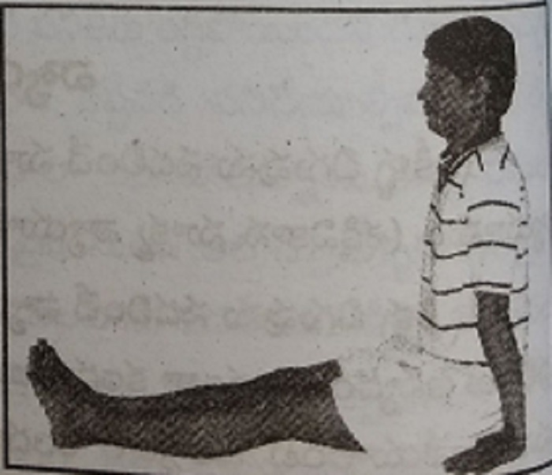
ప్రారంభ స్థితి: కాళ్ళను ముందుకు చాచి ఎడమగా పెట్టండి.
చేయు స్థితి: మనస్సు పూర్తిగా కాలి మడమపై ఉంచండి.
స్టేజ్ - I (ఒక్కో కాలు విడివిడిగా)
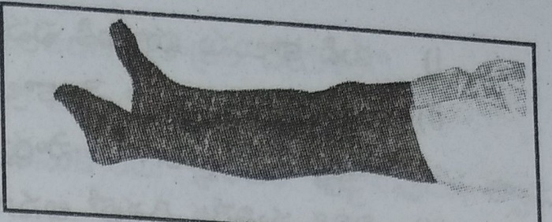
i) మనసును పూర్తిగా కుడి పాదంపై ఉంచండి.
ii) పాదాన్ని కుడివైపు నుంచి అలాగే ఎడమ వైపు నుంచి గుండ్రంగా 10 సార్లు త్రిప్పండి.
iii) ఇలాగే ఎడమ పాదాన్ని కూడా త్రిప్పండి.
స్టేజ్ - II (రెండు కాళ్ళు కలిపి)
i) కాళ్ళను ముందుకు చాచి ఎడమగా పెట్టండి.
ii) రెండు పాదాల్ని కలిపి కాలిమడమ నుంచి వ్యతిరేక దిశలో త్రిప్పండి.
iii) రెండు పాదాలను వ్యతిరేక దిశలో త్రిప్పుతున్నప్పుడు రెండు కాళ్ళను లోపల వైపుకు త్రిప్పినపుడు రెండు బొటనవ్రేళ్ళు తాకేటట్లుగా చూసుకోండి.
iv) ఇలాగే 10 సార్లు తిరిగి వ్యతిరేక దిశలో కూడా త్రిప్పండి.
నోట్: ఈ ప్రాక్టీసు చేస్తున్నంతసేపు మడమలను భూమికి తాకించి ఉంచండి.
i) మోకాళ్ళను ఎట్టి పరిస్థితుల్లోను వంచగూడదు.
ii) ఈ ప్రాక్టీసును కుర్చీలో గాని లేదా మంచంపైన కూర్చొని కూడా చేసుకోవచ్చును.
శ్వాస: పాదాలను పైకి త్రిప్పుతున్నప్పుడు శ్వాస తీసుకోండి. అలాగే పాదాలు క్రిందికి త్రిప్పినప్పుడు శ్వాసను వదలండి.
2. మోకాలును గుండ్రంగా త్రిప్పడం (Knee rotation)
ప్రారంభ స్థితి: కాళ్ళను ముందుకు చాచి ఎడంగ పెట్టి విశ్రాంతిగా (దండాసనంలో) కూర్చోండి.
చేయు స్థితి: కుడి కాలును 90 డిగ్రీల వరకు పైకి లేపి, రెండు చేతులతో కుడి తొడను పట్టుకొని కాలును 90 డిగ్రీలు పైకి లేపండి.
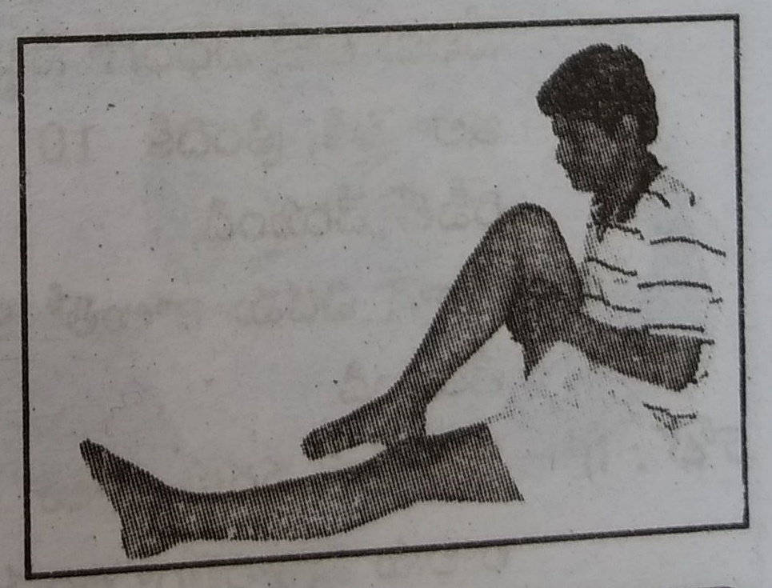
i) కుడి కాలును భూమికి సమాంతరంగా ఉంచండి.
ii) ఇప్పుడు నెమ్మదిగా మోకాలు నుంచి కాలును కుడివైపు నుండి వీలైనంత పెద్దగా గుండ్రంగా 5 సార్లు త్రిప్పండి.
iii) తిరిగి వ్యతిరేక దిశలో అనగా ఎడమ వైపు నుండి 5 సార్లు త్రిప్పండి.
iv) త్రిప్పడం పూర్తి అయ్యాక కాలును యథాస్థితిలో క్రింద పెట్టండి.
v) ఇలాగే ఎడమ కాలుతో కూడా రిపీట్ చేయండి.
శ్వాస: సాధారణ శ్వాసతో సాధన చేయండి.
గమనిక:
i) ఇలా కాలును త్రిప్పుతున్నప్పుడు మోకాలు నుండి వ్రేళ్ళవరకు బిగపట్టకుండా ఫ్రీగా ఉంచండి.
ii) ఈ ప్రాక్టీసును కుర్చీలో కూర్చొని గాని లేదా మంచం చివరిగా కూర్చొని గాని చేయవచ్చు.
iii) ఇలా మోకాలును త్రిప్పడం ద్వారా కీలు అరిగిపోయే ప్రమాదం లేదు.
3. అర్థ సీతాకోక చిలుక వ్యాయామం (Half butterfly)
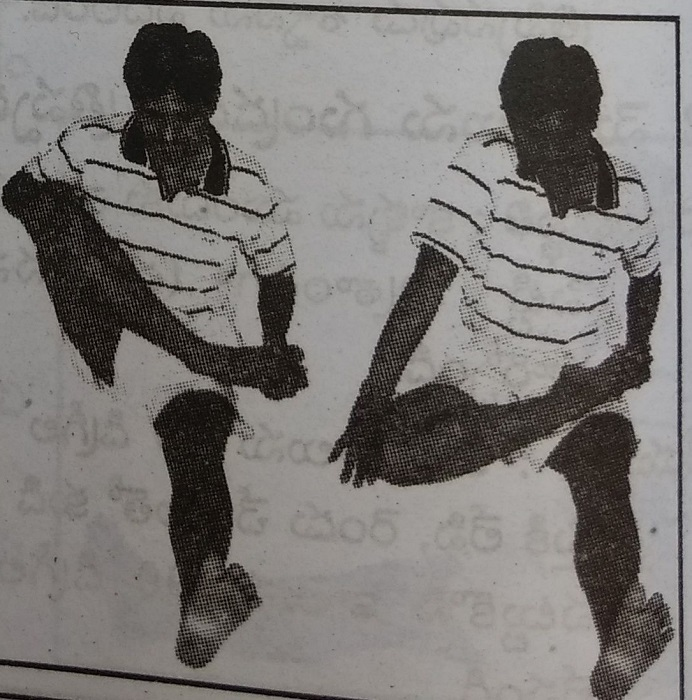
ఎ) ప్రారంభ స్థితి:
i) కాళ్ళను ముందుకుచాచి ఎడమగా పెట్టి విశ్రాంతిగా కూర్చోండి (దండాసనం)
ii) కుడికాలును వంచి ఎడమ తొడమీద పెట్టండి. వీలైనంతగా పైకి (గజ్జల వరకు) తీసుకోండి.
iii) ఎడమచేయితో కుడి పాదాల వ్రేళ్ళను పట్టుకోండి.
చేయు స్థితి:
i) కుడి మోకాలును పైకి తీసుకొని తిరిగి కుడిచేయితో క్రిందకి నేలకు తాకే విధంగా నెట్టండి.
ii) ఇలా పైకి, క్రిందకి 10 సార్లు రిపీట్ చేయండి.
iii) ఇలాగే ఎడమ కాలుతో కూడా చేయండి.
నోట్: i) వీలైనంత వరకు కాలు కండరాలను విశ్రాంతిగా ఉంచండి.
ii) నొప్పి ఎక్కువగా ఉన్నప్పుడు బలవంతంగా మాత్రం చేయకండి.
iii) ఇలా చేస్తున్నప్పుడు వెన్నెముక, తల నిటారుగా ఉంచండి.
శ్వాస: మోకాళ్ళు పైకి వచ్చినపుడు శ్వాస తీసుకోండి. క్రిందకి నెట్టినపుడు శ్వాస వదిలిపెట్టండి.
4. పూర్తి సీతాకోక చిలుక వ్యాయామం (Full butterfly)
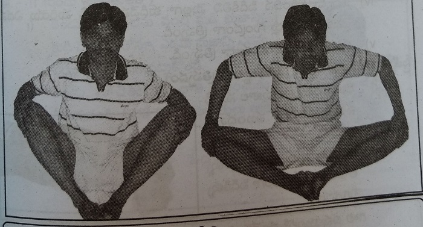
ఎ) ప్రారంభ స్థితి:
i) కాళ్ళను ముందుకు చాచి ఎడమగా పెట్టండి.
ii) మోకాళ్ళు వంచి రెండు పాదాలను ఎదురెదురుగా కలపండి.
iii) పాదాలను రెండు చేతులతో పట్టుకొని, మెల్లగా గుదభాగానికి వీలైనంత దగ్గరగా లాక్కోవాలి.
చేయుస్థితి:
స్టేజ్ - I (రెండు చేతులతో పాదాలను పట్టుకోవడం)
i) రెండు చేతులతో పాదాలను గట్టిగా పట్టుకోండి.
ii) మోకాళ్ళను పైకి క్రిందకి కదపండి. వీలైతే మోచేతితో నేల వైపు నెట్టండి. తిరిగి మోకాళ్ళను పైకి లేపండి. క్రిందకి నెట్టుతున్నప్పుడు నేలకు మోకాళ్ళు తాకేంతవరకు ప్రయత్నం చేయండి.
iii) ఇలా 30-50 సార్లు పైకి, క్రిందకి ఊపండి.
స్టేజ్ - II (అరచేతులు మోకాళ్ళ పైన ఉంచడం)
i) అరచేతులను మోకాళ్ళ పైన పెట్టండి.
ii) అరచేతులను ఉపయోగించి మోకాళ్ళను క్రిందకి, పైకి వేగంగా ఆడించండి.
iii) ఇలా 20-30 సార్లు ఆడించండి.
iv) తర్వాత కాళ్ళు ముందుకు సాచుకొని రిలాక్స్ గా ఉండండి.
నోట్: i) చేతులతో మోకాళ్ళను క్రిందకి నెట్టుతున్నప్పుడు మోకాళ్ళ గజ్జల నుండి కండరాలు బాగా నొప్పిపెడతాయి. భరించలేనంత నొప్పి ఉంటే బలవంతంగా చేతులతో నెట్టకండి.
ii) వెన్నెముక, మెడ, తలను నిటారుగా పెట్టండి.
iii) శరీరం కదలకుండా, నిశ్చలస్థితిలో ఉండేటట్లుగా చూసుకోండి.
శ్వాస: సాధారణ శ్వాస తీసుకుంటూ సాధన చేయండి.
5. మణికట్టును గుండ్రంగా త్రిప్పడం (Wrist rotation)
చేయు స్థితి :
స్టేజ్ - I (ఒక చేయి మణికట్టును త్రిప్పడం)
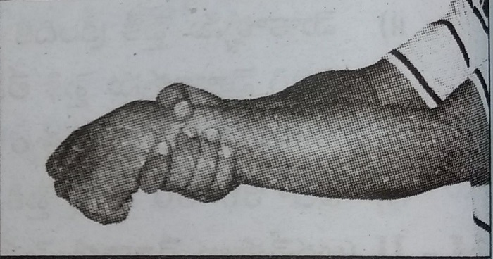
i) కుడి చేయిని భుజానికి సమాంతరంగా ముందుకు చాచండి.
ii) బొటన వ్రేలు లోపల ఉండే విధంగా పిడికిలి బిగించండి.
iii) అవసరమైతే ఎడమ చేయితో కుడి చేయి మణికట్టు క్రింద భాగంలో సపోర్టుగా పట్టుకోండి.
iv) ఇప్పుడు బిగించిన పిడికిలిని మెల్లగా కుడివైపు నుండి మరియు ఎడమ వైపుకు 10 సార్లు గుండ్రంగా త్రిప్పండి.
v) ఇలాగే ఎడమ చేయి కూడా త్రిప్పండి.
స్టేజ్ - II (రెండు చేతుల మణికట్టులను త్రిప్పడం)
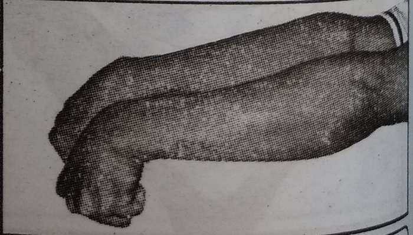
i) రెండు చేతులను భుజాల నుండి సమాంతరంగా ముందుకు చాచండి.
ii) రెండు చేతుల బొటన వ్రేళ్ళు లోపలికి ఉండే విధంగా పిడికిళ్ళు బిగించండి.
iii) రెండు పిడికిళ్ళను మణికట్టు నుండి గుండ్రంగా కుడివైపు నుండి 10 సార్లు త్రిప్పండి. తిరిగి అలాగే ఎడమ వైపు నుండి 10 సార్లు త్రిప్పండి.
నోట్: i) చేతులు మోచేతులు కదలకుండా నిశ్చలంగా ఉండేటట్లుగా చూడండి.
ii) పిడికిలిని వీలైనంత పెద్దగా గుండ్రంగా త్రిప్పండి.
iii) అరచేతులు ఎప్పుడూ క్రింది వైపుకు ఉండేటట్లుగా చూడండి.
iv) కుర్చీలో కూర్చొని గాని లేదా నిలబడి గాని చేయవచ్చును.
6. భుజాలను గుండ్రంగా త్రిప్పటం (Shoulders rotation)
ప్రారంభ స్థితి: కాళ్ళను ముందుకు చాచి ఎడమగా పెట్టండి.
చేయు స్థితి:
స్టేజ్ - I (ఒక మోచేయితో)
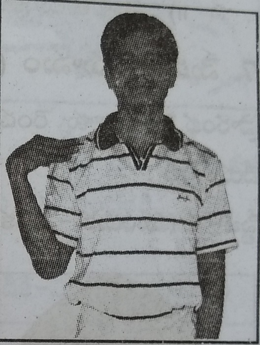
i) కుడి మోచేయిని వంచి కుడి చేతి వ్రేళ్ళను కుడి భుజంపై పెట్టండి.
ii) నడుము నిటారుగా ఉంచి, ఎడమ చేయిని, ఎడమ మోకాలుపైన పెట్టండి.
iii) ఇపుడు కుడి మోచేతిని గుండ్రంగా వీలైనంత పెద్దగా త్రిప్పండి.
iv) ఇలా 10 సార్లు కుడివైపు నుండి త్రిప్పి, తిరిగి ఎడమ వైపు నుండి త్రిప్పండి.
v) ఇలాగే ఎడమ చేయితో కూడా చేయండి.
స్టేజ్ - II (రెండు మోచేతులతో)
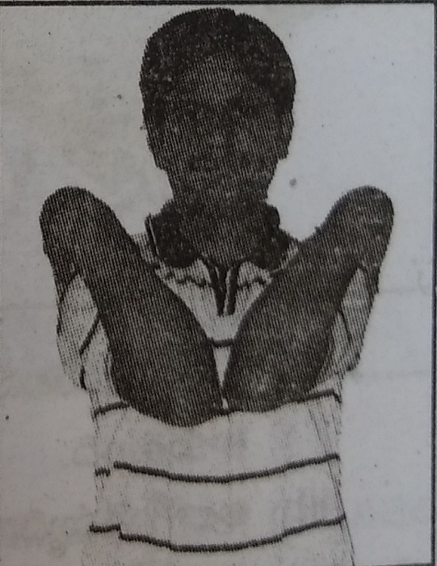
i) రెండు మోచేతులను వంచి కుడి భుజాన్ని, కుడి చేతి వ్రేళ్ళతోనూ, ఎడమ భుజాన్ని ఎడమ చేయి వ్రేళ్ళతోనూ పట్టుకోండి.
ii) రెండు మోచేతులను ఛాతి ముందుకు తీసుకురండి. వీలైతే రెండు మోచేతులు తాకే విధంగా చూడండి.
iii) ఇప్పుడు గుండ్రంగా పెద్దగా రెండు మోచేతులను త్రిప్పండి.
iv) ఇలా 10 సార్లు కుడివైపు నుండి అలాగే ఎడమ వైపు నుండి త్రిప్పండి.
నోట్: i) రెండు మోచేతులను ఛాతీ ముందు కలిసేటట్లుగా త్రిప్పండి.
ii) మోచేతులను గుండ్రంగా త్రిప్పుతూ పైకి వచ్చినప్పుడు చెవులను, అలాగే మోచేతులు క్రిందకి వచ్చినపుడు ప్రక్కటెములకు తాకుతుండేటట్లుగా త్రిప్పండి. తల,వెన్నెముక నిటారుగా వుంచండి.
iii) చేతులను త్రిప్పే రౌండ్లు నెమ్మదిగా పెద్దగా చేస్తూ త్రిప్పండి.
iv) ఈ ప్రాక్టీసులను మామూలుగా క్రింద కూర్చొని గాని, వజ్రాసనంలో గాని, కుర్చీలో కూర్చొని గాని లేదా నిలబడి గాని చేయవచ్చును.
శ్వాస: i) మోచేతులు పైకి వచ్చినపుడు శ్వాస తీసుకోండి.
ii) మోచేతులు క్రిందకు వచ్చినపుడు శ్వాస వదలండి.
7. మెడ వ్యాయామం (Neck Exercise)
ప్రారంభ స్థితి: కాళ్ళు రెండూ ముందుకు చాచి ఎడమగా పెట్టండి.
చేయు స్థితి:
స్టేజ్ - I (ముందుకు-వెనుకకు కదలికలు)
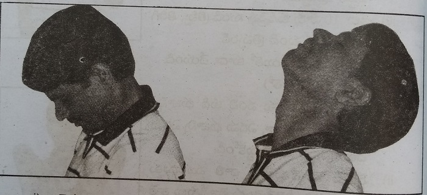
i) నెమ్మదిగా తలను ముందుకు వంచండి. అలా వంచినపుడు గడ్డం ఛాతీని తాకుతుంది.
ii) అలాగే నెమ్మదిగా తలను వీలైనంత వెనుకకు వంచండి.
iii) ఇలా చేస్తున్నప్పుడు మెడ కండరాలను వదులుగా ఉంచండి.
iv) ఇలా 10 సార్లు క్రిందకి, పైకి మెడను కదలించండి.
v) తలను పైకి, వెనకాలకు వంచినపుడు గాలి తీసుకోండి. అలాగే తలను క్రిందకి వంచినపుడు గాలి వదలండి.
స్టేజ్ - II: (చెవిని భుజానికి తాకే విధంగా కుడికి-ఎడమకు త్రిప్పడం)
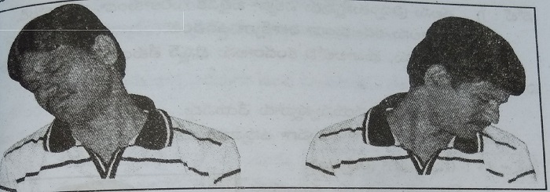
i) కళ్ళు మూసుకొని తలను కుడివైపుకు వంచండి. అంటే కుడి చెవులు కుడి భుజం పైభాగాన తాకుతుంది. అలాగే ఎడమ వైపు వంచండి.
ii) ఇలా 10 సార్లు ప్రక్కలకు వంచండి.
స్టేజ్ - III: (గడ్డాన్ని భుజానికి తాకే విధంగా తలను కుడికి-ఎడమకు త్రిప్పడం)
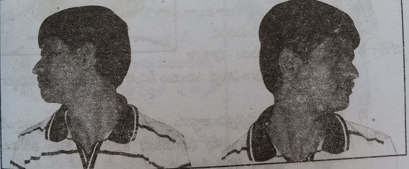
i) తల నిటారుగా వుంచి, కళ్ళు మూసుకోండి.
ii) తలను మెల్లగా కుడి చేయి వైపునకు త్రిప్పండి. అంటే అలా త్రిప్పినపుడు గడ్డం కుడి భుజం పైకి వస్తుంది. తిరిగి తలను సెంటర్ కి తీసుకురండి.
iii) అలాగే ఎడమ వైపుకు కూడా త్రిప్పండి.
iv) ఇలా 10 రౌండ్లు కుడివైపుకి, ఎడమ వైపుకు 10 రౌండ్లు చేయండి.
v) ముందుకు తలను త్రిప్పినపుడు గాలి తీసుకోండి. ప్రక్కలకు తలను త్రిప్పినపుడు గాలి వదలండి.
నోట్: i) తలను త్రిప్పుతున్నప్పుడు ఎక్కడా ఒత్తిడికి గురికాకుండా చూసుకోండి.
ii) భుజాలను కదలకుండా రిలాక్స్ గా ఉంచండి.
iii) మెడలోను, భుజాలలోను కండరాలను టెన్షన్ లేకుండా త్రిప్పండి.
ఎవరు చేయకూడదు:
i) చాలా ఎక్కువ వయస్సున్నవారు చేయవద్దు.
ii) మెడ నొప్పి బాగా ఎక్కువగా ఉన్నవారు ముందుకు వంచగూడదు.
స్టేజ్ - IV: (గుండ్రంగా త్రిప్పడం)
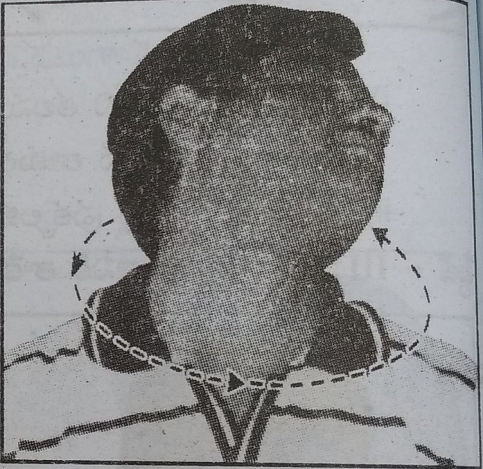
i) విశ్రాంతిగా తలను ముందుకు వంచండి.
ii) కుడి వైపు నుండి తలను మెల్లగా వీలైనంత ఎక్కువగా గుండ్రంగా త్రిప్పండి.
iii) ఇలా 10 సార్లు త్రిప్పండి.
iv) చివరిగా తలను నిటారుగా యథాస్థితిలోకి తీసుకురండి.
నోట్: i) తలను ఒక రౌండ్ పూర్తిగా తిప్పడానికి దాదాపుగా ఎక్కువ సమయం తీసుకోండి. అనగా చాలా నెమ్మదిగా చేయండి.
ii) గుండ్రంగా తిప్పుతున్నప్పుడు శ్వాసను, తల కదలికలతో కలుపుతూ త్రిప్పండి.
iii) తల త్రిప్పుతున్నప్పుడు కళ్ళు మూసుకుని ఉంచండి, కళ్ళు తిరిగినట్లు అనిపించేవారు కళ్ళు తెరిచే చేయండి.
iv) తల త్రిప్పుతున్నప్పుడు ఎక్కడ చాలా నొప్పిగా అనిపించినా లేదా తల తిరిగినట్లుగా అనిపించినా లేదా బాగా చెమటలు పట్టినా వెంటనే ప్రాక్టీస్ ఆపివేయండి.
v) ఈ ప్రాక్టీసులను క్రింద మామూలుగా కూర్చొని గాని లేదా కుర్చీలో కూర్చొని గాని చేయవచ్చును.
ఎవరు చేయకూడదు:
i) చాలా ఎక్కువ వయస్సువారు
ii) అధికమైన మెడ నొప్పితో బాధపడుతున్నవారు
8. నడుమును గుండ్రంగా త్రిప్పడం (Waist rotation)
ప్రారంభ స్థితి:
నిటారుగా, కాళ్ళను కాస్త ఎడమగా ఉంచి నిలబడండి. చేతులను నడుము పైన పెట్టుకోండి.
చేయు స్థితి:
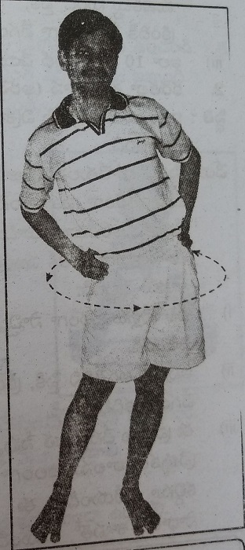
i) నడుమును వీలైనంత ముందుకు వంచండి. అలాగే కుడి వైపుకు, వెనుక వైపుకు, ఎడమ వైపుకు వంచి తిరిగి ముందుకు వంచుతూ ఇలా గుండ్రంగా 10 సార్లు త్రిప్పండి.
ii) అలాగే వ్యతిరేక దిశలో 10 సార్లు త్రిప్పండి.
నోట్: i) ఇలా గుండ్రంగా త్రిప్పుతున్నంత కాలం బ్యాలెన్స్ డ్ గా ఉండండి.
ii) నేల మీద నిటారుగా నిలబడండి.
iii) నడుమును వీలైనంత ఎక్కువ గుండ్రంగా త్రిప్పండి.
iv) ఈ ప్రాక్టీసును రెండు కాళ్ళు జత చేసి కూడా త్రిప్పండి.
శ్వాస: i) నడుము ముందుకు వంచినపుడు శ్వాస తీసుకోండి. వెనుకకు త్రిప్పినప్పుడు శ్వాస వదలండి.
2. శక్తి వికాస సూక్ష్మ వ్యాయామం
1. మణిబంధ శక్తి వికాస (మణికట్టు)
స్థితి: కాళ్ళు ఎడమగా చేసి విశ్రాంతిగా నిలబడండి.
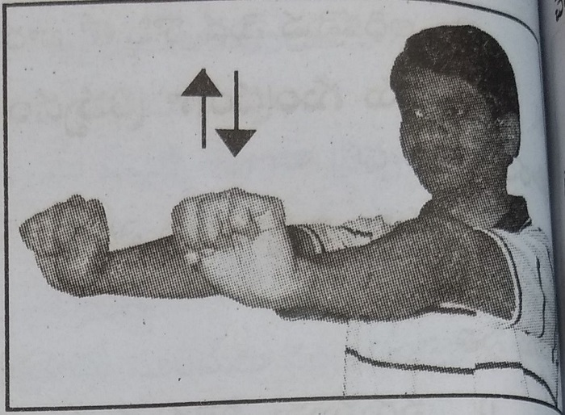
చేయు విధానం: భుజాలకు సమాంతరంగా చేతులను ముందుకు సాచండి.
i) అరచేతులను భూమి వైపుకు ఉంచి, చేతి వ్రేళ్ళను గట్టిగా ముడవండి.
ii) ఇపుడు బిగించిన పిడికిలిని మణికట్టు నుండి పైకి, క్రిందకి వీలైనంత వేగంగా కదిలించండి.
iii) ఇలా 10 సార్లు రిపీట్ చేయండి.
2. కరతలా శక్తి వికాస (అరచేతులకు)
స్థితి: కాళ్ళు ఎడమగా చేసి విశ్రాంతిగా నిలబడండి.
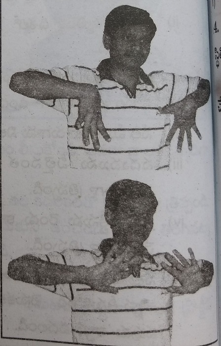
చేయు స్థితి: మోచేతులను భుజానికి సమాంతరంగా ప్రక్క నుండి పైకి లేపండి. అరచేతులు భూమి వైపుకు చూసేటట్లుగా ఛాతికి ముందు భాగాన పెట్టండి.
i) చేతి వ్రేళ్ళను బలంగా సాచి ఉంచండి.
ii) ఇపుడు అరచేతిని పైకి, క్రిందకి వేగంగా కదిలించండి.
iii) ఈ ప్రాక్టీసు చేస్తున్నంత సేపు అరచేతి వ్రేళ్ళ కండరాలకు బలంగా ఒత్తిడి కల్గిస్తూ చేయండి. ఈ సాధన సాధారణ శ్వాసతో చేయండి.
3. అంగులీ శక్తి వికాస (చేతి వ్రేళ్ళకు)
స్థితి: కాళ్ళు ఎడమగా చేసి విశ్రాంతిగా నిలబడండి.
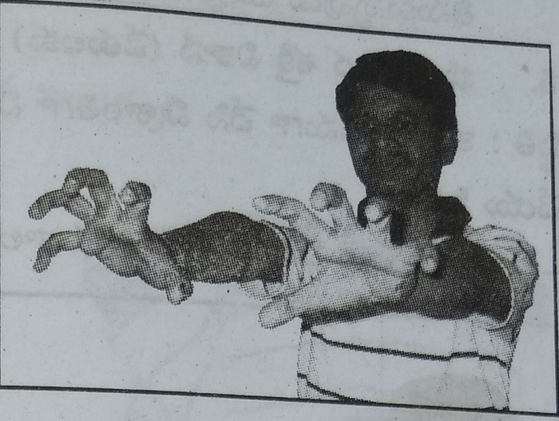
చేయు స్థితి: భుజాలకు సమాంతరంగా చేతులను బలంగా ముందుకు సాచండి.
i) నాగుపాము ఆకారంలో అరచేతి వ్రేళ్ళను వంచండి.
ii) ఇపుడు భుజాల నుండి చేతి వ్రేళ్ళ వరకు చాలా బలంగా కండరాలను బిగించి ఒక నిమిషం వరకు అలాగే ఉంచండి.
గమనిక: చేతుల్లో తిమ్మిర్లు వచ్చేంత వరకు చేతి వ్రేళ్ళను బిగించి ఉంచండి. ఒక నిమిషం సేపు ఉంచలేనట్లయితే, మీరు ఎంత వరకు మీకు ఇబ్బంది లేకుండా ఉంచగలరో అంత వరకు ఉంచండి.
i) ఇలాగే కొన్ని సార్లు రిపీట్ చేయండి.
4. కపోని శక్తి వికాస (మోచేతులకు)
స్థితి: కాళ్ళు ఎడమగా చేసి విశ్రాంతిగా నిలబడండి.
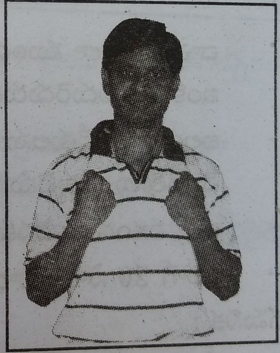
చేయు స్థితి: అరచేతులను తొడలకు తగిలేటట్లుగా ముందు భాగంలో పెట్టుకోండి.
i) బలంగా పిడికిలి బిగించి, చేతులను కూడా బలమైన బిగింపుతో ఒకేసారి జర్క్ ఇస్తూ అరచేతులను భుజాలకు తగిలేటట్లుగా బలంగా జర్క్ ఇస్తూ తిరిగినట్లుగా అరచేతులను క్రిందికి తీసుకోండి.
ii) ఇలా జర్క్ తో అరచేతులను పైకి క్రిందకి చేస్తూ ఉండాలి.
గమనిక:
i) ఈ ప్రాక్టీసు చేస్తున్నంతసేపు భుజాలు కదలకుండా ఉంచాలి.
ii) బిగించిన పిడికిలి పైకి తీసుకున్నప్పుడు భుజానికి తాకాలి. కాని క్రిందికి తీసుకున్నప్పుడు మాత్రం తొడలకు అంటుకోకుండా రిపీట్ చేయండి.
5. భుజ బంధ శక్తి వికాస (చేతులకు)
స్థితి: కాళ్ళు ఎడమగా చేసి విశ్రాంతిగా నిలబడండి.
చేయు స్థితి:
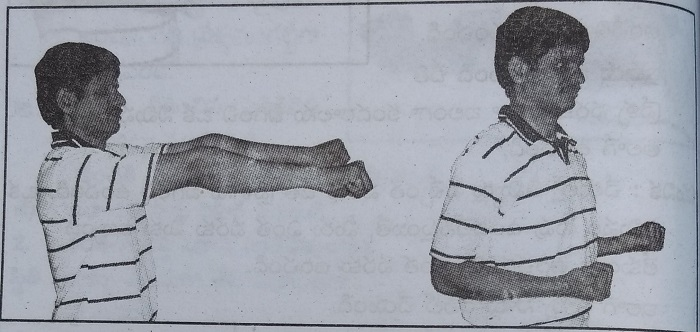
- అరచేతులు పిడికిలి బిగించి భుజాలకు సమాంతరంగా ముందుకు చాచండి. ఇలా ముందుకు సాచినపుడు రెండు పిడికిళ్ళు ఒక దానికి ఇంకొకటి ఎదురెదురుగా ఉండేటట్లుగా పెట్టండి.
- బలంగా మోచేతులను వెనుకకు తీసుకోవాలి. వెనుకకు తీసుకున్నప్పుడు మోచేతులు ప్రక్కటెముకలకు ఇరువైపుల తాకి ఉంటాయి.
- ఇలా ముందుకు వెనక్కు చాలా బలంగాను, అలాగే వేగంగాను చేయండి.
- ఇలాగే 20 సార్లు, సాధారణ శ్వాసతో చేయండి.
గమనిక:
- చేతులను ముందుకు సాచినపుడు భూమికి సమాంతరంగా ఉండే విధంగా చేయండి.
- మోచేతిని వెనుకకు లాగినపుడు మాత్రం శరీరానికి వెనుకకు వెళ్ళకుండా చూసుకోండి.
6. కటి శక్తి వికాస (వెన్నెముకకు)
స్థితి: కాళ్ళు ఎడమగా చేసి విశ్రాంతిగా నిలబడండి.
చేయు స్థితి:
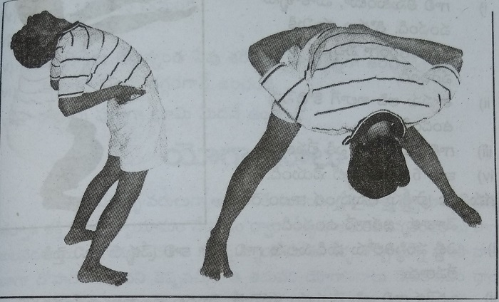
i) కాళ్ళమధ్య ఒక ఫీటు వెడల్పుతో నిలబడండి.
ii) అరచేతుల వ్రేళ్ళు ఎదురెదురుగా ఉండేటట్లుగా క్రింది వెన్ను భాగాన్ని పటుత్వంగా పట్టుకోండి.
iii) గాలి బాగా తీసుకుంటూ మెల్లగానూ, బ్యాలెన్సుడుగాను వీలైనంతగా వెనుకకు వంగండి. అదే స్థితిలో అలాగే కొద్దిసేపు ఉండండి.
iv) అలాగే గాలి వదులుతూ ముందుకు వంగండి. అలా వంగినపుడు వీలైతే తలను రెండు కాళ్ళలోనికి పోనివ్వండి.
v) ఇలాగే 10 సార్లు రిపీట్ చేయండి.
గమనిక:
i) చేతులను పూర్తిగా నడుమును పట్టుకొనే ఉండండి.
ii) మోకాళ్లను ఎట్టి పరిస్థితిలోను వంచరాదు.
iii) మీకు వీలైనంత కెపాసిటిలోనే వంచండి, అతిగా వంచే ప్రయత్నం చేయవద్దు.
7. జంఘ శక్తి వికాస (తొడలు)
స్థితి: కాళ్ళు ఎడమగా చేసి విశ్రాంతిగా నిలబడండి.
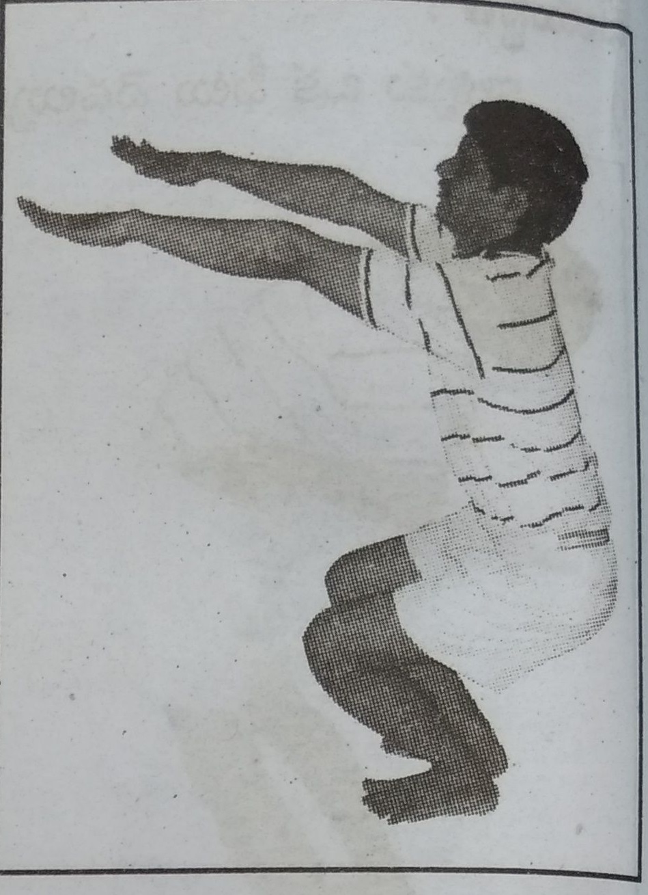
చేయుస్థితి: అరచేతులను భూమి వైపుకు ఉంచి చేతులను ముందుకు సాచండి.
i) గాలి తీసుకుంటూ, మోకాళ్ళను వంచండి. తొడలు భూమికి సమాంతరంగా వచ్చేంత వరకు వంచండి.
ii) శ్వాసను ఆపి అలాగే కొద్దిసేపు ఉండండి.
iii) గాలి వదులుతూ పైకి లేపండి.
iv) ఇలా 5 సార్లు రిపీట్ చేయండి.
గమనిక: ప్రాక్టీసు చేస్తున్నంతసేపు రెండు మోకాళ్ళు జతగానే ఉంచండి.
i) ఎట్టి పరిస్థితిలోను మడమలను గాని లేదా కాలి వ్రేళ్ళను గాని పైకి లేపరాదు.
ii) ఒకవేళ గాలి ఆపి చేయడం కష్టమైతే, మొదట అలవాటు పడేంతవరకు కొన్ని రోజులు సాధారణ శ్వాస తీసుకుంటూ చేయండి.
iii) చేతులను పూర్తిగా భూమికి సమాంతరంగా ఉంచండి.
8. పిండలి శక్తి వికాస (పిక్కలు)
స్థితి: కాళ్ళు ఎడమగా చేసి విశ్రాంతిగా నిలబడండి.
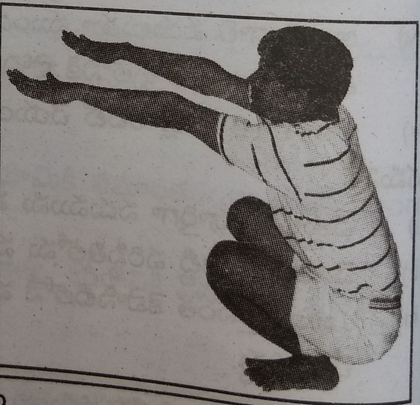
చేయు స్థితి: పిడికిలి బిగించి, అరచేతులు భూమి వైపు ఉంచి, భుజాలకు సమాంతరంగా చేతులు సాచండి.
i) గాలి తీసుకుంటూ వీలైనంత వరకు పాదాలపై కూర్చొనే ప్రయత్నం చేయండి.
ii) గాలిని ఆపివేసి (కుంభించి) పైకి లేస్తూ చేతులను పడవను నడిపిస్తున్న తెడ్డులా గుండ్రంగా త్రిప్పుతూ యథాస్థితిలోకి తీసుకురండి. రెండు పిడికిళ్ళు తాకుతూ ఉంటాయి.
iii) తర్వాత గాలి వదులుతూ ఛాతిని ముందుకు ఉంచండి.
iv) ఇలా 10 సార్లు చేయండి.
గమనిక:
v) ఈ ప్రాక్టీసు చేస్తున్నంత సేపు శరీరాన్ని బ్యాలెన్సుగా ఉంచి చేయండి.
vi) మోకాళ్ళు రెండూ దగ్గరగానే ఉంచండి.
vii) పాదాలు పూర్తిగా భూమి మీదనే ఉంచండి.
యోగాసనాలు
శరీరంలోని కీళ్ళు వదులుగా అవడానికి సంబంధించిన సూక్ష్మ వ్యాయామం చేసిన తర్వాత శక్తి వ్యాయామం చేయడం ద్వారా కీళ్ళకు అతుకబడిన కండరాలు బాగా బలపడతాయి. ఈ రెండు రకాల సూక్ష్మ వ్యాయామాలు కీళ్ళ నొప్పులున్న వారికి చాలా బాగా దోహదపడగలవని చెప్పవచ్చు. ఆ తదుపరి యోగాసనాలు చేసుకోవడం చాలా ప్రయోజనకరంగా ఉంటుంది.
యోగసనాలు సులభంగా గుర్తుపెట్టుకొని రోజూ సాధన చేయడానికి అనుకూలంగా ఉండడానికి 4 రకాలుగా వర్గీకరించుకోవచ్చు. కీళ్ళనొప్పులున్నవారు అన్ని రకాల యోగాసనాలు వేసుకోవచ్చు. కాని నొప్పి యొక్క స్థితిని బట్టి మరియు ఏ కీలుకు నొప్పి ఉంది అనే విషయాన్ని బట్టి మీకు మీరే నిర్ణయించుకోవచ్చు. ఏ ఆసనం వేసినా కొద్దిగా నొప్పి ఉన్నంత వరకు మాత్రమే వంచాలి. మంట పుట్టించే నొప్పి గాని లేదా భరించలేని నొప్పిగాని ఉన్నప్పుడు ఏ ఆసనం వేయరాదు. మనకున్న సమయాన్ని మరియు అందరు సులభంగా వేయగలిగే ఆసనాలను దృష్టిలో ఉంచుకొని మాత్రమే ఇక్కడ ఇవ్వడమైంది. అంతేకాని ఇతర గురువులు సూచించినవి చేయగూడదని లేదా ఇక్కడ మేము సూచించిన ఆసనాలను ఎంత ఇబ్బందికరమైననూ వేయమని కాని మా ఉద్దేశ్యం కాదు. పై విషయాలను, మనసులో ఉంచుకొని నెమ్మదిగా ఒక్కొక్కటిగా సాధన చేయండి.
1. నిలబడి చేసే ఆసనాలు (అర్థ కటి చక్రాసనం, అర్థ చక్రాసనం, పాద హస్తాసనం);
2. కూర్చొని చేసే ఆసనాలు (వక్రాసనం, అర్థ మత్స్యేంద్రాసనం, ఉష్ట్రాసనం);
3. పొట్టపై పడుకొని చేసే ఆసనాలు (భుజంగాసనం, శలభాసనం, ధనురాసనం);
4. వెన్నుపై పడుకొని చేసే ఆసనాలు (ఉత్థాన పాదాసనం, పవన ముక్తాసనం, శవాసనం). ఇప్పుడు ఒకదాని తర్వాత ఒకటి వివరంగా తెలుసుకుందాం.
1. నిలబడి చేసే అసనాలు
అర్థ కటి చక్రాసనం
ప్రారంభ స్థితి
కాలు ఎడమగా ఉంచి నడుము, ఛాతి, తల, నిటారుగా ఉండేటట్లుగా విశ్రాంతి స్థితిలో నిలబడండి (తాడాసనం).
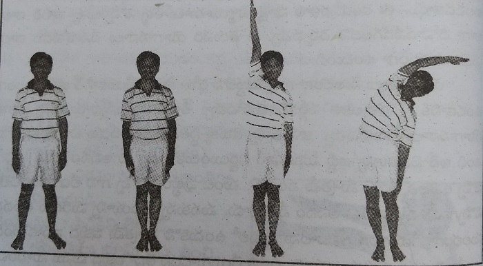
ఆసనము చేయు స్థితి:
i) గాలి తీసుకుంటూ కళ్ళు మూసుకొని కుడి చేయిని ప్రక్క నుండి పైకి లేపాలి.
ii) భుజాల ఎత్తుకు చేరగానే అరచేయిని పైకి త్రిప్పండి.
iii) చేయి కుడి చెవిని తాకేంత వరకు మెల్లగా పైకి లేపండి. ఇపుడు చేయిని పైకి ఇంకా సాగదీయండి.
iv) ఇపుడు గాలి వదులుతూ శరీరాన్ని ఎడమ వైపుకు వంచండి.
v) ఎడమ అరచేయి మాత్రము, ఎడమ తొడను తాకే విధంగా ఉంచండి. ఎట్టి పరిస్థితిలోనూ కుడి మోచేయిని గాని, మోకాళ్ళను గాని వంచరాదు.
vi) ఈ స్థితిలో వీలైనంత ఎక్కువ సేపు అలాగే ఉండండి.
vii) ఎలాగైతే ఆసనం వేసామో, అలాగే తిరిగి వెనుకకు తీసుకురావాలి.
viii) వెనుకకు చేతిని తీసుకు వస్తున్నప్పుడు మెల్లగా గాలిని తీసుకుంటూ కుడి చేయిని తిరిగి పైకి సాగదీయండి. శరీరం కుడి భాగం నడుము నుండి చేతి వ్రేళ్ళ వరకు బాగా సాగినట్లుగా అనుభూతిని పొందండి.
ix) కుడి చేయి క్రిందకి తీసుకున్నప్పుడు గాలి వదులుతూ ఉండండి.
x) తిరిగి తాడాసన స్థితిలోకి రండి.
xi) ఇదే విధంగా ఎడమ చేతితో కుడి వైపు వంగడం చేయండి.
xii) ఇపుడు తాడాసనంలో విశ్రాంతిని పొందండి.
గమనిక: ముందుకు గాని, వెనుకకు గాని శరీరాన్ని వంచరాదు.
అర్థ చక్రాసనం
ప్రారంభ స్థితి:
కాలు ఎడమగా ఉంచి నడుము, ఛాతి, తల, నిటారుగా ఉండేటట్లుగా విశ్రాంతి స్థితిలో నిలబడండి (తాడాసనం).
ఆసనం చేయు స్థితి:
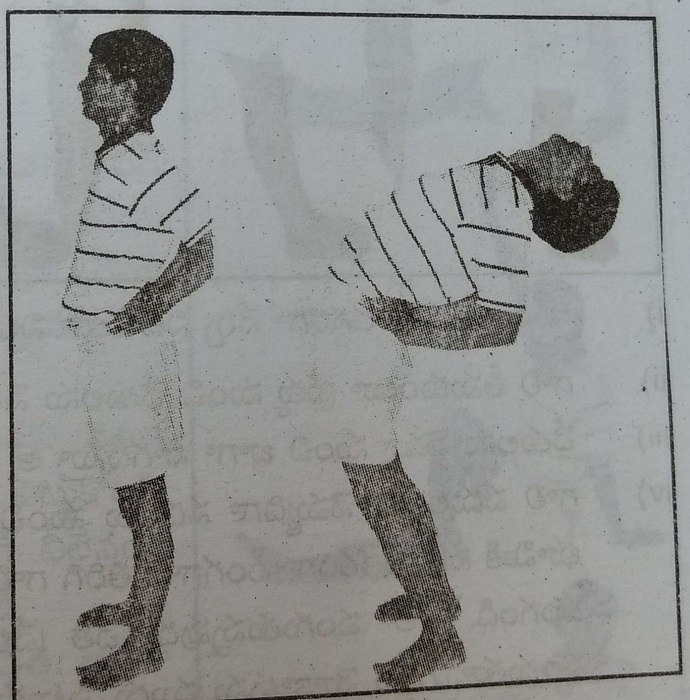
అరచేతులతో నడుమును సపోర్ట్ గా పట్టుకోండి.
i) గాలి తీసుకుంటూ వెనుకకు వంగండి. తలను వెనుకకు వంచండి. మెడ కండరాలలో ఒత్తిడి యొక్క అనుభూతిని పొందండి.
ii) వీలైనంత ఎక్కువ సమయం అలాగే సాధారణ శ్వాసతో ఉండండి.
iii) తిరిగి యథాస్థితిలోకి వచ్చి తాడాసనంలో విశ్రాంతి తీసుకోండి.
పాద హస్తాసనం
ప్రారంభ స్థితి
కాలు ఎడమగా ఉంచి నడుము, ఛాతి, తల, నిటారుగా ఉండేటట్లుగా విశ్రాంతి స్థితిలో నిలబడండి
ఆసనం చేయు స్థితి
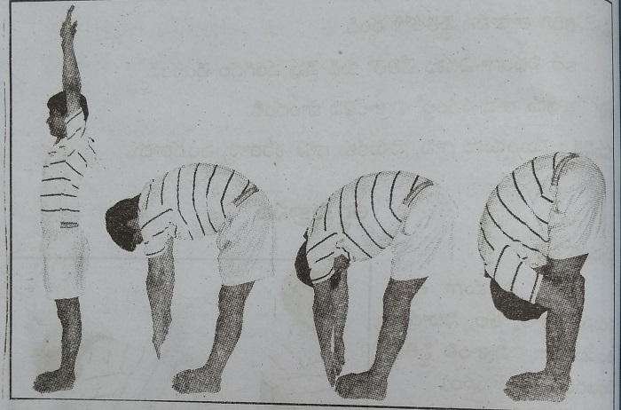
i) రెండు కాళ్ళను దగ్గరగా చేర్చి నిటారుగా నిలబడండి.
ii) గాలి తీసుకుంటూ ప్రక్క నుంచి చేతులను నెమ్మదిగా బాగా పైకి తీసుకోండి.
iii) చేతులను వెన్ను నుంచి బాగా సాగదీస్తూ ఆ అనుభూతిని పొందండి.
iv) గాలి వదులుతూ నెమ్మదిగా నడుము నుంచి చేతులను ముందుకు వంచండి. భూమికి సమాంతరంగా వంగగానే తిరిగి గాలి వదులుతూ వీలైనంతగా క్రిందికి వంగండి. అలా వంగుతున్నప్పుడు చేతి వ్రేళ్ళు పాదాలను తాకే విధంగాను, వంచుతూ, గడ్డం మోకాళ్ళను ముద్దు పెట్టుకునే అంత వరకు వంచండి.
v) ఈ స్థితిలో వీలైనంత ఎక్కువ సమయం మోకాళ్ళు వంచకుండా అలాగే ఉంచండి. గాలి తీసుకుంటూ నెమ్మదిగా చేతులను నిటారుగా పైకి తీసుకుంటూ, వంచిన వెన్నును నిటారు స్థితిలోకి వచ్చి నిలబడాలి.
vi) గాలి వదులుతూ చేతులను నెమ్మదిగా క్రిందకి తీసుకోండి.
vii) తిరిగి తాడాసనంలోకి వచ్చి విశ్రాంతి స్థితిలో నిలబడండి.
గమనిక:
i) మోకాళ్ళు వంచరాదు.
ii) కటి భాగం వరకు నడమును వంచిన తరువాత తలను కూడా క్రిందికి ఫ్రీగా వంచండి. గడ్డాన్ని మోకాలుకు తగిలేంత వరకు వంచే ప్రయత్నం చేయండి.
2. కూర్చొని చేసే ఆసనాలు
వక్రాసనం
ప్రారంభ స్థితి
నేలపై దండాసనంలో కూర్చోండి. అనగా కాళ్ళను ముందుకు చాచి వెనకకు చేతులు పెట్టుకొని నడుమ, ఛాతి, మెడ, తల నిటారుగాను విశ్రాంతిగాను పెట్టండి.
ఆసనం చేయు స్థితి
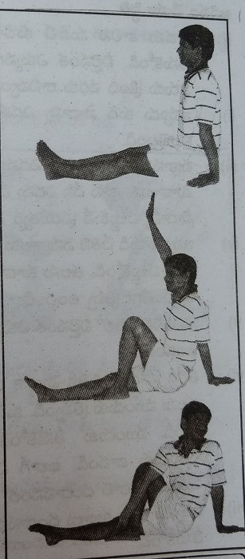
i) కుడి కాలు మడిచి ఎడమ మోకాలు ప్రక్కన నిలబెట్టండి.
ii) గాలి పీల్చుకుంటూ నడమును కుడి వైపుకు త్రిప్పండి. ఇప్పుడు ఎడమ చేయి మోచేతిని కుడి మోకాలును క్రాస్ చేస్తూ ఎడమ చేతితో కుడి పాదాన్ని పట్టుకునే ప్రయత్నం చేయండి.
iii) కుడి అరచేయిని వెన్నెముకకు వెనుక భాగాన భూమిపై సపోర్టుగా పెట్టుకోండి.
iv) ఈ ఆసన స్థితిలో అలాగే వీలైనంత ఎక్కువ సమయం ఉండండి.
v) తిరిగి మెల్లగా ప్రారంభస్థితి అనగా దండాసనంలో కూర్చొని విశ్రాంతిని పొందండి.
vi) ఇలాగే రెండవ వైపున కూడా రిపీట్ చేయండి.
గమనిక: మెడ, నడుము, భుజాలు, మోచేయి, మణికట్టు, చేతివ్రేళ్ళు, తుంటి, మోకాళ్ళు, మడమ, పాదాల వ్రేళ్ళు బాగా వంచబడతాయి. శరీరంలో కీళ్ళు అన్నింటికీ మంచి కదలికలుంటాయి. అన్ని కీళ్ళకు అతకబడిన కండరాల యొక్క స్థితిస్థాపకత పెరిగి, కీళ్ళు బలోపేతం అవుతాయి. కనుక నొప్పి బాగా ఉన్న వారు ఈ ఆసనాన్ని నెమ్మదిగా సాధన చేయండి.
అర్థమత్స్యేంద్రాసనం
ప్రారంభ స్థితి
వక్రాసనంలోని విధంగా కాళ్ళు చాచి దండాసనంలో కూర్చోండి.
ఆసనం చేయు స్థితి
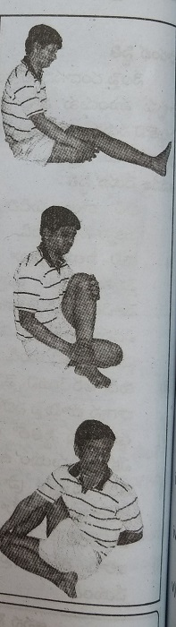
i) ఎడమ కాలిని మడిచి కుడి తొడ క్రిందకి తీసుకోండి. వీలైనంత ఎక్కువగా అనగా కుడి పిరుదు క్రింది వరకు రానివ్వండి.
ii) ఇప్పుడు కుడి పాదాన్ని ఎడమ తొడ ప్రక్కన నిలబెట్టండి.
iii) వక్రాసనంలో మాదిరిగా ఎడమ మోచేతిని కుడి మోకాలును క్రాస్ చేసి ఎడమ చేతి వ్రేళ్ళతో కుడి పాదాన్ని పట్టుకునే ప్రయత్నం చేయండి.
iv) ఇప్పుడు కుడి చేతిని వెనుకాలకు నడుము చుట్టూ త్రిప్పి పట్టుకోండి. తలను కూడా కుడి చేతి వైపు వీలైనంతగా త్రిప్పి ఉంచండి.
v) ఈ ఆసన స్థితిలో వీలైనంత ఎక్కువ సేపు అలాగే ఉండండి.
vi) తిరిగి ప్రారంభ స్థితికి మెల్లగా రావాలి. అనగా తలను ముందుకు త్రిప్పండి. కుడిచేయిని వెనుక నుండి ముందుకు తీసుకోండి. కుడికాలును ముందుకు చాచండి. అలాగే ఎడమ కాలును ముందుకు చాచి దండాసనంలో కూర్చోండి.
vii) ఇప్పుడు కొన్ని క్షణాలు దండాసనంలో విశ్రాంతి తీసుకోండి.
viii) ఇలాగే రెండవ వైపున కూడా రిపీట్ చేయండి.
గమనిక: ఈ ఆసనంలో అన్ని కీళ్ళకు, కండరాలకు మంచి కదలికలు జరుగుతాయి. అన్ని కీళ్ళు పటిష్టపడడానికి చాలా మంచిది. అయితే ఈ ఆసనం మొదలు పెట్టిన మొదట్లో కొద్దిగా ఇబ్బందిగా ఉంటుంది. అందుకని నెమ్మదిగా సాధన చేస్తూ ఉంటే రోజు రోజుకు కీళ్ళు ఎక్కువగా వంగుతాయి. కావున ఒకేరోజులో పూర్తిగా రావాలని అనుకోవక్కర్లేదు. మీ నొప్పి స్థితిని బట్టి మెల్లగా సాధన చేయండి.
ఉష్ట్రాసనం
ప్రారంభ స్థితి
కాళ్ళు ముందుకు చాచి దండాసనంలో ఛాతి, మెడ, తల నిటారుగా పెట్టి కూర్చొండి.
ఆసనం చేసే స్థితి
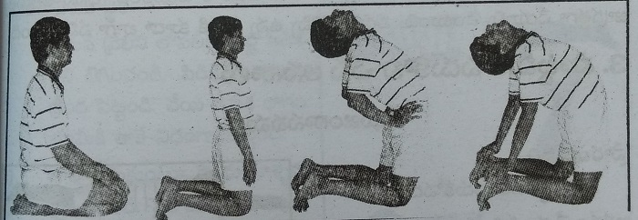
i) ముందుగా కుడి పాదాన్ని కుడి పిరుదు క్రిందకి తీసుకోండి.
ii) ఆ తర్వాత ఎడమ పాదాన్ని ఎడమ పిరుదు క్రిందకి తీసుకోండి. ఈ స్థితిని వజ్రాసనం అని అంటాం. ఈ వజ్రాసనంలో ముందు కూర్చొండి.
iii) ఆ తర్వాత రెండు మోకాళ్ళపై నిలబడి నడుము వెడల్పుకు సమానంగా రెండు పాదాలను ఎడమగా చేయండి.
iv) ముందుగా కుడి చేయిని కుడి మడమపై ఉంచండి. అదే విధంగా ఎడమ చేయితో ఎడమ మడమను పట్టుకోండి.
v) ఇప్పుడు వీలైనంత ఎక్కువగా నడుమును ముందుకు వంచుతూ, తలను వెనుకకు తీసుకోండి.
vi) ఈ స్థితిలో నడుము దగ్గర వచ్చే నొప్పి యొక్క అనుభూతిని గమనిస్తూ వీలైనంత ఎక్కువ సమయం అలాగే ఉండండి.
vii) తిరిగి రివర్స్ ఆర్డర్ లో యథాస్థితికి రావాలి. అనగా ఎడమ చేయిని తీసివేయండి. తర్వాత కుడి చేయిని తీసివేసి మోకాళ్ళపై నిలబడండి. తిరిగి వజ్రాసనంలోకి వచ్చి కూర్చోండి.
viii) అలాగే కొన్ని క్షణాలు చేతులు ముందుకు చాచి తలను భూమికి ఆనించే ప్రయత్నం చేయండి. దీనిని శశాంకాసనం అని అంటారు.
ix) ఇప్పుడు దండాసనంలో విశ్రాంతిని తీసుకోండి.
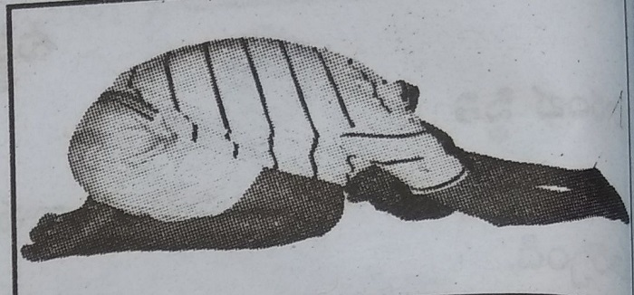
గమనిక: మోకాళ్ళ నొప్పులు అధికంగా ఉన్నవారు ఈ ఆసనం చేయడం చాలా కష్టం. ముందు పలుచటి, వెడల్పాటి దిండుపై కూర్చొని ప్రయత్నం చేయండి. అంచెలంచెలుగా పూర్తి ఆసనం వేసే ప్రయత్నం చేయండి. నొప్పి పరిస్థితిని బట్టి ముందుకు వెళ్ళండి. కాని ఒకేసారి వేయకండి. దీనిని అత్యంత జాగ్రత్తగా చేయాల్సి ఉంటుంది. నడుమునొప్పి ఉన్న వారికి కూడా బాగా పని చేస్తుంది.
3. పొట్టమీద పడుకొని చేసే ఆసనాలు
భుజంగాసనము
ప్రారంభ స్థితి:
పొట్ట మీద పడుకోవడం
ఆసనం చేయు స్థితి
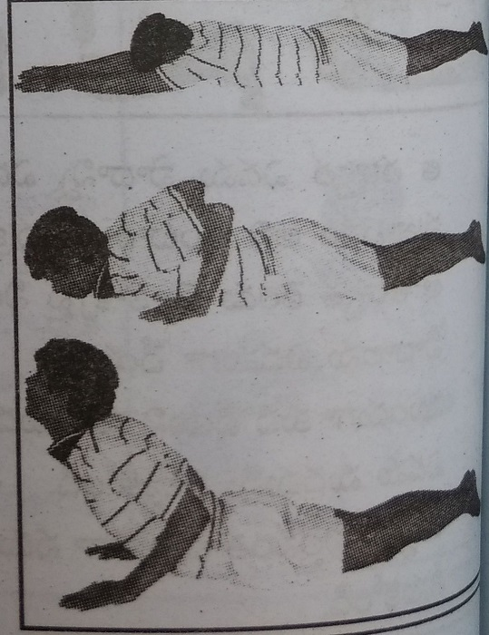
i) రెండు కాళ్ళు దగ్గరగా చేర్చండి. రెండు బొటన వ్రేళ్ళు ఒక దానితో ఒకటి కలిసే విధంగా కాళ్ళను జతచేయండి.
ii) అరచేతులను ఛాతికి ఇరుప్రక్కల క్రింది భాగాన ఉన్న మొదటి ప్రక్కటెముకల ప్రక్కల అరచేతి వ్రేళ్ళు ముందుకు ఉండే విధంగా పెట్టండి.
iii) మోచేతులను శరీరానికి దగ్గరగా ఉంచండి.
iv) గాలి తీసుకుంటూ పాము పడగ లేపినట్లుగా నెమ్మదిగా తలను వీలైనంత పైకి లేపండి. కాని బొడ్డు భాగం మాత్రం భూమిని కరుచుకొని ఉండేటట్లుగా చూడండి.
v) ఇదే స్థితిలో సాధారణ శ్వాస తీసుకుంటూ వీలైనంత ఎక్కువ సమయం ఉండండి.
vi) గాలి వదులుతూ యథాస్థితికి రండి.
vii) చివరగా మకరాసనంలో అనగా కాళ్ళు ఎడంగా పెట్టి, చేతులను తలకు సమాంతరంగా ఇరువైపులా ఉండునట్లుగా పెట్టి తలను ఏదో ఒక ప్రక్క, అనుకూలంగా చూసుకొని వంచి శరీరంలోని ప్రతి అణువణువు విశ్రాంతిని పొందుతూ ఉండండి.
శలభాసనం
ప్రారంభ స్థితి:
పొట్ట మీద పడుకోండి.
ఆసనం చేయు స్థితి
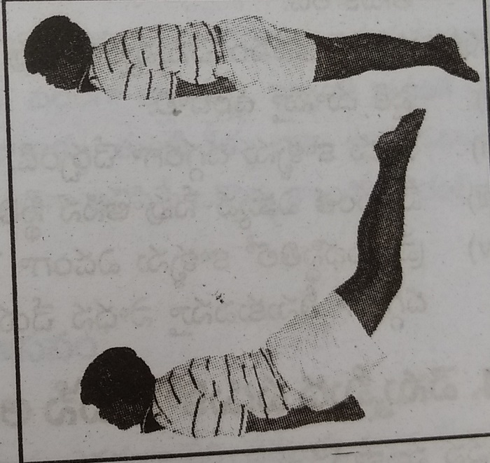
i) బొటన వ్రేలిని లోపలికి పెట్టి పిడికిలిని బిగించండి. పిడికిలిని తొడల క్రింద పెట్టండి. చేయి వెనుక భాగం భూమికి తాకే విధంగా పెట్టండి.
ii) గాలి తీసుకుంటూ రెండు కాళ్ళను పైకి లేపండి. పైకి కాళ్ళు లేపినపుడు మోకాళ్ళు వంచరాదు.
iii) సాధారణ శ్వాస తీసుకుంటూ వీలైనంత ఎక్కువ సమయం అలాగే కాళ్ళను పైకి లేపి ఉంచండి.
iv) గాలి వదులుతూ తిరిగి యథాస్థితిలోకి తీసుకురండి.
v) చివరిగా మకరాసనంలో విశ్రాంతి పొందండి.
గమనిక: మోకాళ్ళ చిప్పలను లాగి, పిరుదులను కూడా లాగి కాళ్ళను పైకి లేపితే సులభంగా కాళ్ళు పైకి లేస్తాయి.
ధనురాసనము
స్థితి: పొట్టమీద పడుకోవడం
ఆసనం చేయు స్థితి:
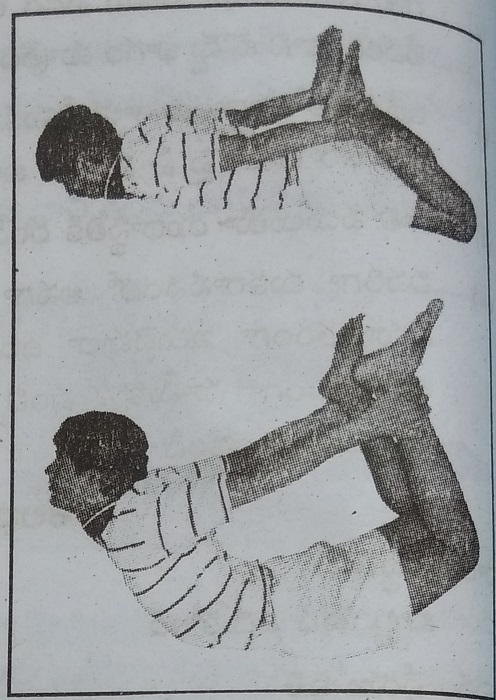
i) కాళ్ళను వెనకాలకు వంచి శీలమడమలను చేతులతో పట్టుకోండి.
ii) గాలి తీసుకుంటూ ఛాతిని తలను పైకి లేపాలి. కాళ్ళను వెనుకాలకు బలంగా నెట్టుతూ వెన్నెముకకు ధనస్సులాగా వంచాలి.
ఆసన స్థితి: పొట్ట మీద విశ్రాంతిగా అలాగే వీలైనంత సేపు ఉండండి.
విశ్రాంతి: గాలి వదులుతూ తిరిగి మకరాసనంలోకి వచ్చి విశ్రాంతి తీసుకోండి.
గమనిక: ఈ ఆసనం చేస్తున్నంత సేపు మోచేతులను వంచరాదు.
i) పైకి చూస్తూ ఉండాలి.
ii) రెండు కాళ్ళను దగ్గరగా చేర్చండి.
iii) వీలైనంత ఎక్కువ సేపు ఆసన స్థితిలో ఉండే ప్రయత్నం చేయండి.
iv) ప్రారంభస్థితిలో కాళ్ళను ఎడంగా పెట్టి, మెల్ల మెల్లగా రెండు కాళ్ళను దగ్గరగా తీసుకువస్తూ సాధన చేయండి.
4. వెన్నుమీద పడుకొని చేసే ఆసనాలు
పవన ముక్తాసనం
ప్రారంభ స్థితి
వెన్నుపై వెల్లకిలా పడుకొని రెండు కాళ్ళు దగ్గరగా చేర్చి చేతులు శరీరానికి దగ్గరగా ఉంచండి.
ఆసనం చేయు స్థితి
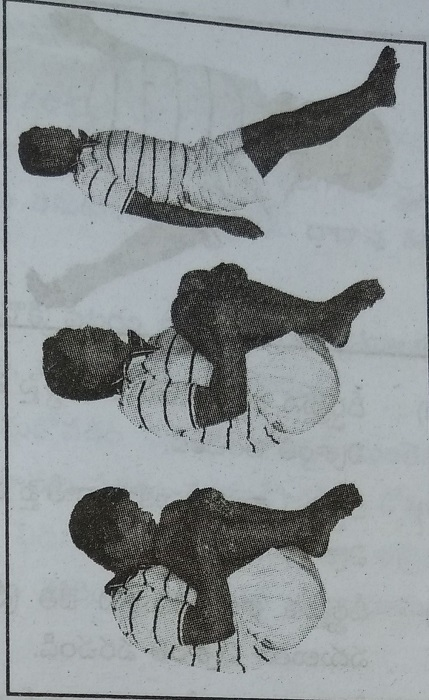
i) రెండు కాళ్ళను పైకి లేపి, రెండు మోకాళ్ళను వంచండి.
ii) రెండు చేతులతో మోకాళ్ళను పట్టుకొని పొట్ట వైపుకు లాక్కోండి.
iii) తలను పైకి లేపి మోకాళ్ళను ముద్దుపెట్టుకొనే విధంగా ఉండండి.
iv) ఈ ఆసన స్థితిలో అలాగే వీలైనంత ఎక్కువ సమయం ఉండండి.
v) తిరిగి యథాస్థితికి రివర్స్ ఆర్డర్ లో రావాలి. అనగా తలను ముందు నేలపై పెట్టి, చేతులను వదిలిపెట్టండి.
vi) కాళ్ళను నిటారుగా పైకి లేపి మెల్లగా నేలపై ఉంచండి.
vii) ఇప్పుడు కాళ్ళు ఒక ఫీటు ఎడమ పెట్టి చేతులను కూడా శరీరానికి ఒక అడుగు ఎడమగా ఉంచి విశ్రాంతిగా శవాసనంలో పడుకోండి.
గమనిక: చేతులతో మోకాళ్ళను పట్టుకొని ఛాతి వైపుకు లాగుతున్నప్పుడు మోకాళ్ళలో భరించలేని నొప్పి ఉన్నట్లయితే, బలంగా లాగవద్దు. ఇబ్బంది కానంత స్థితి వరకు లాగవచ్చు. ఈ ఆసనంలో మెడ, మోకాళ్ళు, తుంటి కీళ్ళు బాగా లాభపడతాయి. ఈ ఆసనాన్ని రెండుకాళ్ళతో చేయటం ఇబ్బందిగా అనిపిస్తే ఒక్కొక్క కాలుతో ప్రారంభించి తరువాత రెండు కాళ్లతో చేయండి.
శవాసనం
ప్రారంభ స్థితి
వెన్నుపై వెల్లకిలా పడుకొని రెండు కాళ్ళు ఎడమగా చేర్చి చేతులను కూడా శరీరానికి ఎడమగా ఉంచి విశ్రాంతిగా పడుకోండి.
ఆసనం చేయు స్థితి
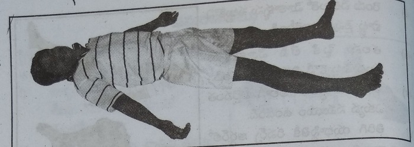
i) దీర్ఘమైన శ్వాస తీసుకొని పాదాల వ్రేళ్ళపై మనసుపెట్టి శ్వాస వదులుతూ వ్రేళ్ళ భాగాన్ని విశ్రాంతి పరచండి.
ii) దీర్ఘమైన శ్వాస తీసుకొని మోకాళ్ళపై మనసుపెట్టి శ్వాస వదులుతూ మోకాళ్ళ భాగాన్ని విశ్రాంతి పరచండి.
iii) దీర్ఘమైన శ్వాస తీసుకొని పొట్టపై మనసుపెట్టి శ్వాస వదులుతూ పొట్ట భాగాన్ని విశ్రాంతి పరచండి.
iv) దీర్ఘమైన శ్వాస తీసుకొని ఛాతీపై మనసుపెట్టి శ్వాస వదులుతూ ఛాతీ భాగాన్ని విశ్రాంతి పరచండి.
v) దీర్ఘమైన శ్వాస తీసుకొని చేతి వ్రేళ్ళనుండి భుజాలవరకు మనసుపెట్టి శ్వాస వదులుతూ ఛాతీ భాగాన్ని విశ్రాంతి పరచండి.
vi) దీర్ఘమైన శ్వాస తీసుకొని మెడపై మనసుపెట్టి శ్వాస వదులుతూ మెడ భాగాన్ని విశ్రాంతి పరచండి.
vii) దీర్ఘమైన శ్వాస తీసుకొని తలపై మనసుపెట్టి శ్వాస వదులుతూ తల భాగాన్ని విశ్రాంతి పరచండి.
viii) రెండు నాసికల మధ్య నుండి శ్వాస తీసుకుంటూ, వదులుతూ శ్వాస మీదనే మనసు పెట్టండి.
ix) అలా 2 లేక 3 సార్లు పై విధంగా అన్ని అవయవాలకు పూర్తిగా విశ్రాంతినివ్వండి.
గమనిక: అందరూ అనుకుంటున్నట్లుగా ఇది అంత సులభమైన ఆసనం కాదు. పూర్తిగా శవం వలె ఎలాంటి చలనం లేకుండా ఉండగలగాలి. అన్ని ఆసనాలు వేసిన తర్వాత చివరిగా ఈ శవాసనాన్ని వేయడం ద్వారా ఆసనాల ద్వారా కలిగిన అలసట తగ్గి శరీరంలోని ప్రతి అవయవం పూర్తిగా విశ్రాంతిని పొందుతుంది. పై యోగాసనాలు వేసినప్పుడు కలిగిన నొప్పి తగ్గడానికి శవాసనం ఎంతగానో ఉపయోగపడుతుంది. మనసు పెట్టి జాగ్రత్తగా సాధన చేయండి.
ప్రాణాయామం
నేటి జీవన విధానంలో అనేక కారణాల వల్ల మన ఊపిరితిత్తుల నిండా సరిపోను గాలి తీసుకోవడం లేదు. నిజానికి ఒకసారి దాదాపు 3-5 లీటర్ల గాలి తీసుకోగలిగే సామర్థ్యం ఉన్నా, కేవలం 500 మి.లీ. గాలిని మాత్రమే తీసుకుంటున్నాం. అంటే దాదాపు 5వ వంతు తక్కువగా తీసుకుంటున్నాం. కారణం
పొట్టలో క్రొవ్వు పెరిగి ఊపిరితిత్తులను నొక్కి పెట్టడం, స్మోకింగ్ లాంటి వ్యసనాలకు అలవాటు పడడం, వాతావరణంలో కాలుష్యం, శారీరక శ్రమ లేకపోవడం.
అందుకే దీర్ఘ ప్రాణాయామాలు చేసుకోవడం మంచిది. (డాక్టర్ మంతెన సత్యనారాయణ రాజు గారు వ్రాసిన ప్రాణాయామం పుస్తకం చదవండి.) కనీసం రోజూ 15-30 నిమిషాలు దీర్ఘ ప్రాణాయామం విధిగా చేయండి. ముఖ్యంగా భస్త్రిక ప్రాణాయామం, కపాల భాతి ప్రాణాయామం మరియు నాడీ శుద్ధి ప్రాణాయామం చేసుకోండి.
సరియైన సమయం: ఉదయం లేవగానే కాలకృత్యాలు తీర్చుకున్న తర్వాత గాని లేదా సాయంత్రం సమయంలో గాని లేదా కనీసం భోజనానికి అర్ధగంట ముందు గాని లేదా భోజనం చేసాక కనీసం 4 గంటల తరువాత ఎప్పుడైననూ సాధన చేయవచ్చు.
చేసే విధానం: భూమిపై ఒక దళసరి బ్లాంకెట్ గాని లేదా చాప గాని పరుచుకొని వజ్రాసనంలో లేదా పద్మాసనంలో లేదా సుఖాసనంలో నిటారుగా కూర్చోవాలి. కొద్ది క్షణాలు పూర్తిగా ప్రపంచాన్ని మరిచిపోయి, కేవలం శ్వాస మీద మనస్సును మళ్ళించండి. తర్వాత దీర్ఘ ప్రాణాయామాలు చేయండి. (డా. రాజు గారి పుస్తకం లేదా సీడీలను చూడండి).
గమనిక: కీళ్ళ నొప్పులుండి క్రింద కూర్చోలేనివారు కుర్చీపైన కూడా నిటారుగా కూర్చొని ప్రాణాయామం సాధన చేయవచ్చు. పూర్తిగా కూర్చోలేని స్థితిలో ఉన్ననూ వెల్లకిలా పడుకొని, కాళ్ళను కొద్దిగా మడిచి ప్రాణాయామం చేయవచ్చు.
నా అనుభవం: నేను 2004 లో బెంగుళూరులోని వివేకానంద యోగ కేంద్రంలో యోగాలో పోస్టుగ్రాడ్యుయేషన్ చేసేటపుడు ఒక 22 సంవత్సరాల పురుషుడిని ఆరోగ్య కేంద్రానికి తీసుకువచ్చారు. అతనికి అన్ని కీళ్ళు వాపు, నొప్పిగా ఉన్నాయి. అతను రుమటాయిడ్ ఆర్థరైటిస్ తో బాధపడుతున్నాడు. చాలా ధనవంతుల కుటుంబంలో జన్మించాడు. బంగారపు వ్యాపారస్తులు. ఇంట్లో నలుగురికి నాలుగు కార్లున్నాయి. కాని కనీసం కార్లో కూడా కూర్చోలేని పరిస్థితి. తెలిసిన అందరి వైద్యుల వద్ద చికిత్స చేయించారు. కాని ఫలితం శూన్యం. చివరి ప్రయత్నంగా యోగ సంస్థకు కారులో పడుకోబెట్టి తీసుకువచ్చారు. కాని అతను పూర్తిగా కదలలేని పరిస్థితి. అతను కాలు కీలు కదిలించలేని స్థితిలో ఏ యోగ చేయగలడు. నాకేమీ అర్థం కాలేదు. మనిషి సన్నగా ఎయిడ్స్ రోగిలా మంచానికి అతుక్కుపోయి ఉన్నాడు. ఆ కేసును నాకు అప్పగించారు. ఏమి చేస్తావో నాకు తెలియదు కాని అతని నడవాలి అని. ఒక వైపు భయం ఆ రోగి ఎప్పుడు గాలిలో కలిసిపోతాడో అని, ఒక వైపు ఛాలెంజిగా తీసుకున్నాను. ఎలాగైనా అతన్ని నడిపించాలని అనుకున్నాను. అతనికి ఉదయం, మధ్యాహ్నం, సాయంత్రం ప్రాణాయామాలు మొదలుపెట్టాను. కాని పాపం సరిగా గాలి కూడా తీసుకోలేని పరిస్థితి. వెల్లకిలా పడుకోబెట్టి పొట్టమీద చేయి పెట్టి లోపలికి నెట్టి గాలి వదలమన్నాను. మళ్ళీ చేయి వదిలి గాలి తీసుకోమంటూ, దారితప్పిన శ్వాసను తిరిగి కరెక్టు పద్ధతిలో శ్వాస తీసుకునే విధానాన్ని అలవాటు చేసాను. అలాగే వ్రేళ్ళకు పాసివ్ గా కదలికలు ఇవ్వడం చేసాను. రోజూ పద్ధతి ప్రకారం సాత్వికాహారం, పండ్ల రసాలు ఇస్తూ పోయాను. అలాగే ఉదయం భగవద్గీత క్లాసులకు కూర్చోబెట్టాను. సాయంత్రం యథావిదిగా జరిగే రసవత్తరమైన గ్రూప్ భజనలలో కూర్చోబెట్టడం జరిగింది. వీటి ద్వారా తనలో గూడు కట్టుకుపోయిన మానసిక బాధలు మాయమైనాయి. చాలా స్వేచ్ఛగా మాట్లాడడం, అందరిని పలకరించడం మొదలు పెట్టారు. అతనికి ఇచ్చే సాత్వికాహారం ద్వారా శరీరంలో చాలా మార్పు వచ్చింది. ఆశ్రమంలోని ప్రత్యేక దైనందిన జీవన శైలి ద్వారాను, ప్రాణాయామం ద్వారా కీళ్ళలో వాపు, నొప్పి తగ్గడం, కదలికలు పెరగడం మొదలైనాయి. నెల రోజుల తర్వాత గాని కూర్చునే పరిస్థితి రాలేదు. 3 నెలల్లో కొన్ని చిన్న చిన్న సూక్ష్మ వ్యాయామాలు మరియు ఆసనాలు వేయడం మొదలు పెట్టాడు. అతని దృష్టిలో 50% మెరుగైనాడు. కీళ్ళ స్పెషలిస్టులు వదిలిన కేసు కేవలం ప్రాణాయామం ద్వారానే ప్రాణశక్తి అతనిలో పెరిగింది. నాడులు క్లీన్ అయినాయి. నొప్పి తగ్గినది. నిజంగా ప్రాణాయామంలో ఇంత మహిమ ఉంది. అది చేస్తున్న వ్యక్తులకు మాత్రమే అర్థం అవుతుంది. చేసి చూడండి, ఆరోగ్యాన్ని సాధించండిక.
ఇప్పుడు మూడు రకాల ప్రాణాయామాలు ఎలా చేయాలో తెలుసుకుందాము.
కపాలభాతి ప్రాణాయామం
కపాల భాతి అనగా బలంగా ప్రయత్నపూర్వకంగా గాలి వదలడం, అప్రయత్న పూర్వకంగా గాలి తీసుకోవడం.
చేయు విధానం
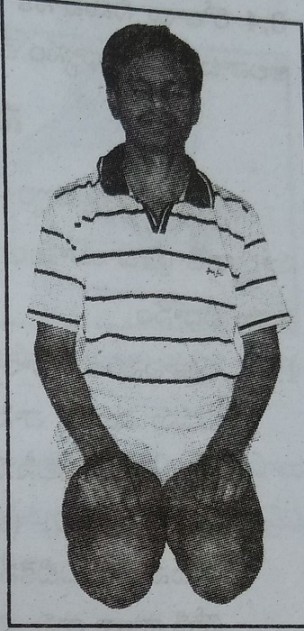
వజ్రాసనంలో కూర్చోండి. చేతులు రెండూ తొడలపై ఉంచి తల, మెడ, వెన్నెముక నిటారుగా ఉంచండి. ఈ ప్రాణాయామంలో వేగంగా ప్రయత్నపూర్వకమైన నిశ్వాస, అప్రయత్నపూర్వక ఉచ్ఛాస జరగాలి. మధ్యలో కళ్ళు తెరవకూడదు.
2. నోటిని మూసి, మూతి, ముక్కులను బిగించి, పొట్టను లోపలికి అదుముతూ ఊపిరితిత్తులలోని గాలంతా బయటకు పోయేలా గట్టిగా వదలాలి. వెంటనే గట్టిగా రెండు ముక్కులతోను, పొట్టను మామూలుగా వదులుతూ గాలి పీల్చుకోవాలి. (ఇది అప్రయత్నంగా జరుగుతుంది.)
3. పైన చెప్పిన విధంగా పొట్టను లోపలికి అదుముతూ, వదులుతూ మధ్యలో ఆపకుండా, నెమ్మదిగా ప్రారంభించి ఎంత వేగంగా అయితే మనం చేయగలమో అంత వేగంతో కొన్ని నిమిషాలు చేయాలి. ఇక అలుపు వచ్చేస్తుందనిపించినపుడు నెమ్మదిగా వేగం తగ్గిస్తూ ఆపాలి.
4. ప్రారంభంలో నిమిషానికి 20-25 సార్లుగా మొదలుపెట్టి క్రమేపీ వేగం పెంచుతూ 60 కి పైగా పెంచవచ్చు. లోపలున్న కార్బన్ డై ఆక్సైడ్ (CO2) అంతా పూర్తిగా విసర్జింపబడి, స్వచ్ఛమైన ప్రాణవాయువు అంతా నిండి, రక్తంలో ప్రవేశించడం వలన కఫాలభాతి ఆపిన తరువాత కొంతసేపు శ్వాస దానికదే అగిపోయి, ఆలోచనా రహిత స్థితి కలిగి, చాలా ప్రశాంతంగా, హాయిగా ఉంటుంది. కండ్లు మూసుకునే ఆ హాయిని అనుభవిస్తూ..... తర్వాత శ్వాసను మనసుతో గమనిస్తూ...... ధ్యాన స్థితిలో కూర్చొని, అలుపు తగ్గి సాధారణ శ్వాస వచ్చే వరకు విశ్రాంతి తీసుకుని తరువాత చేయవలసిన ప్రాణాయామానికి సిద్ధంకండి.
గమనిక:
1. కపాలభాతి చేస్తున్నంతసేపు తల, మెడ, వెన్నుముక నిటారుగా ఉండి అటూ ఇటూ కదలకుండా చూసుకోవాలి.
2. ప్రాణాయామం ప్రారంభించిన రోజే ప్రతాపం చూపించేయకూడదు. మొదటి 3,4 రోజులు నిమిషానికి 10 నుండి 20 సార్లుగా చేస్తూ ఆగి, మరలా చేయవచ్చు. అలవాటవుతూ, అభ్యాసం చేస్తున్న కొద్దీ వేగము పెంచవచ్చు. మధ్యలో ఆగనూ అక్కరలేదు.
సూర్యనాడీ ప్రాణాయామం
కుడి ముక్కు ద్వారా గాలిని పీల్చుకొని, కుడి ముక్కు ద్వారానే గాలిని వదలటాన్ని సూర్యనాడీ ప్రాణాయమం అంటారు
చేయు విధానం
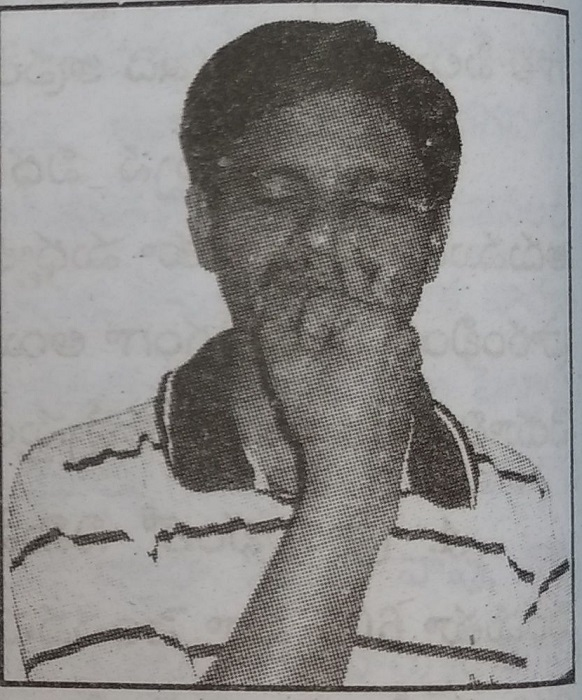
1. వజ్రాసనంలో కూర్చొని ఎడమ తొడపై ఉంచి, కుడి చేయి ఉంగరపు వ్రేలితో ఎడమ ముక్కు నాసికారంధ్రాన్ని పూర్తిగా మూయాలి. చూపుడు వ్రేలు, మధ్య వ్రేలు రెండూ కలిసి రెండు కనుబొమ్మల మధ్య నొక్కి ఉంచాలి. (బొట్టు పెట్టుకునే చోట) బొటనవ్రేలు చిటికిన వ్రేలు ఫ్రీగా ఉంటాయి. నోటి ద్వారా గాని, ఎడమ నాసిక ద్వారా గాని గాలి పీల్చనూ కూడదు. వదలనూ కూడదు.
2. కుడి ముక్కు ద్వారా గట్టిగా శబ్దం వచ్చేట్లు గాలి పీల్చుకోవాలి. ఊపిరి తిత్తులు నిండే వరకు పీల్చాలి. ఎడమ ముక్కు గట్టిగా మూసి అలాగే ఉంచి కుడి ముక్కు ద్వారానే గట్టిగా వదలాలి. అదే విధంగా కుడి ముక్కు ద్వారానే అనేకసార్లు గాలి పీల్చుకోవడం, వదలడం చేయాలి.
3. నెమ్మదిగా వేగం తగ్గిస్తూ ఆపిన తర్వాత, కండ్లు మూసుకునే ఉండి శరీరంలో జరిగిన మార్పులు గమనిస్తూ ఉంటే, కుడివైపు భాగం (ఊపిరితిత్తి) బాగా ఉత్తేజం అయినట్లు స్పష్టంగా తెలుస్తుంది. శ్వాస సమంగా వచ్చేవరకు విశ్రాంతి తీసుకొని చంద్రనాడీ ప్రాణాయామానికి సిద్ధం కండి.
చంద్రనాడి ప్రాణాయామం
ఎడమ ముక్కు ద్వారా గాలిని పీల్చుకుని, ఎడమ ముక్కు ద్వారానే గాలి వదలడాన్ని చంద్రనాడి ప్రాణాయామం అంటారు.
చేయు విధానం:
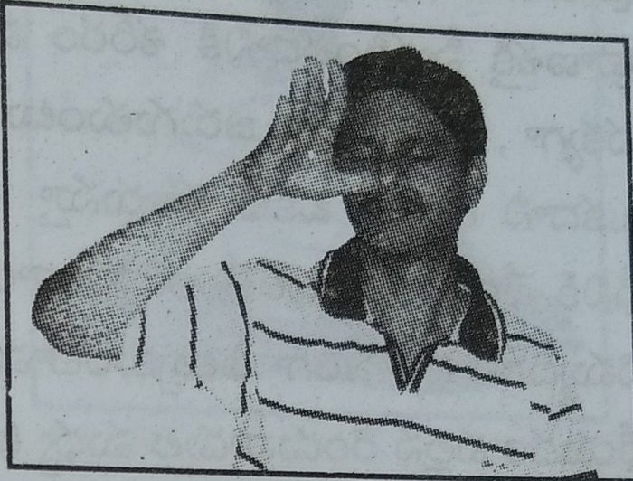
1. కుడిచేతి బొటనవేలితో, కుడి నాసికా రంధ్రాన్ని పూర్తిగా మూసి, సూర్యనాడిలో లాగానే మధ్యవ్రేలు, చూపుడు వ్రేలు భృకుటిపై ఉంచాలి. (ఉంగరపు వ్రేలు, చిటికిన వ్రేలు మడిచి పెట్టి ఫ్రీగా ఉంచాలి).
2. ఎడమ ముక్కు ద్వారా గట్టిగా గాలి లోపలకు పీల్చుకుని, వెంటనే గట్టిగా ఎడమ ముక్కు ద్వారానే బయటకు వదలాలి. ఇదే విధంగా అనేకసార్లు సూర్యనాడికి చేసిన విధంగానే చేయాలి.
3. ప్రాణాయామం ఆపిన తరువాత అలాగే కళ్ళు మూసుకొని, కొన్ని నిమిషాలు విశ్రాంతి తీసుకుని తరువాత ప్రాణాయామం మొదలు పెట్టాలి. (ఈసారి ఎడమవైపు ఊపిరితిత్తి బాగా ఉత్తేజం అయినట్లు గమనించగలరు)
గమనిక:
1. పై రెండు ప్రాణాయామాలలో గాలి పీల్చుకోవడం కంటే విడవడం కొద్దిగా ఎక్కువ సేపు చేయాలి. 4 సెకన్లు గట్టిగా గాలి లోపలికి పీల్చుకున్నామనుకోండి. 5-6 సెకన్లు సమయం గాలి బయటకు గట్టిగా, ఒత్తిడితో విడిచిపెట్టాలి. అలాగని సెకన్లు లెక్క పెడుతూ కూర్చోకండి. సహజంగా జరిగిపోవాలి.
2. ఒక్కొక్కసారి కుడిముక్కు, ఒక్కొక్కసారి ఎడమ ముక్కు మూసుకుపోయి గాలి పీల్చడానికి, వదలడానికి ఇబ్బంది అవుతుంది. సరిగా శబ్దం రాదు. లోపల రొంపలు అడ్డుపడడం వల్ల లేదా వేరే ఇతర కారణాల వల్ల ఇలా జరుగుతుంది. అలాంటప్పుడు నీళ్ళు మరగించి ఆవిరి పెట్టండి. బిగిసుకుపోయిన ముక్కులు ఫ్రీ అవుతాయి. అపుడు ప్రాణాయామం కొనసాగించండి. ఎంతవరకు చేయగలిగితే అంత మంచిది. రెండు మూడు రోజులలో ఫ్రీగా అయిపోతాయి.
నాడీ శుద్ధి ప్రాణాయామము
సూర్యనాడి, చంద్రనాడి ప్రాణాయామాలలో (వ్రేళ్ళు నొక్కిపెట్టి గాలిని చీదినట్లు గట్టిగా వదలడం వలన) రెండు నాసికల్లోనూ సైనస్, శ్వాసనాళాల్లోను ఉన్న మల పదార్థములు (రొంపలు, కఫాలు మొదలగునవి) తొలగిపోతాయి. చాలా ఫ్రీగా ఉంటాయి. ప్రాణవాయువు ఎక్కువగా ఏ అడ్డంకీ లేకుండా హాయిగా లోపలికి వెళుతుంటుంది. ప్రాణశక్తి స్వీకరించడానికి శరీరం మరింత సిద్ధంగా ఉంటుంది. శ్వాసక్రియ చాలా చక్కగా, సమయంగా జరుగుతుంటుంది. ఈ ప్రాణాయామంలో రెండు నాసికల ద్వారా ఒకదాని తర్వాత ఒకటి మారుస్తూ గాలి పీల్చుకోవాలి. మిగతా ప్రాణాయామాలకు, దీనికి భేదం ఏమిటంటే ఈ ప్రాణాయామంలో గాలిని గట్టిగా, ఒత్తిడిగా పీల్చుకోము. నెమ్మదిగా, సహజంగా పీల్చుకుంటాము. అదే విధంగా బయటకు వదులుతాము. ఇలా చేయడం వలన రెండునాడుల మధ్య (ఇడ, పింగళ) సమతుల్యం వచ్చి శరీరం ప్రాణశక్తిని ఎక్కువగా స్వీకరించి, నిలువ చేసుకుని, సద్వినియోగం చేసుకుంటుంది.
చేయు విధానం
1. వజ్రాసనంలోనే నిటారుగా కూర్చుని కుడిచేతి మధ్య, చూపుడు వ్రేళ్ళు కలిపి భృకుటి మీద ఆనించి ఉంచాలి. నోటిని మూసి ఉంచాలి. మీ ఆలోచన అంతా మీరు తీసుకుంటున్న శ్వాసపై ఉంచడానికి ప్రయత్నించాలి.
2. ఎడమ ముక్కు ఉంగరపు వ్రేలితో పూర్తిగా మూసి, కుడిముక్కుతో నెమ్మదిగా, శబ్దం బయటకు రాకుండా సహజంగా గాలిని ఊపిరితిత్తుల నిండుగా పీల్చుకోవాలి.
3. ఇపుడు బొటనవ్రేలితో కుడి ముక్కును మూసివేసి, ఎడమ ముక్కుపై ఉంగరపు వ్రేలిని తీసివేసి, పీల్చుకున్న గాలిని ఎడమ ముక్కు ద్వారా నెమ్మదిగా సహజంగా వదిలివేయాలి.
4. ఎడమ ముక్కు ద్వారా గాలిని వదిలాం. అదే ముక్కు ద్వారా, అదే విధంగా గాలిని లోపలకు పీల్చుకుని, వెంటనే మరలా ఉంగరపు వ్రేలితో ఎడమ ముక్కును మూసివేసి, కుడి ముక్కు ద్వారా గాలిని బయటకు వదలాలి. (ఇది ఒక ఆవృతము) ఇపుడు మరల కుడి ముక్కుతో పీల్చుకుని ఎడమ ముక్కుతో వదలాలి. ఏ ముక్కుతో అయితే గాలిని బయటకు వదిలామో, అదే ముక్కుతో గాలిని లోపలకు పీల్చుకోవాలన్న మాట. ఇదే విధంగా అనేకసార్లు చేయాలి. చేస్తున్నంతసేపు మన దృష్టిని శ్వాసపైనే నిలపడానికి ప్రయత్నించాలి. నెమ్మదిగానే చేస్తాం కాబట్టి ఎంత ఎక్కువ సేపు చేస్తే అంత మంచిది.
ఓంకార ధ్యానం
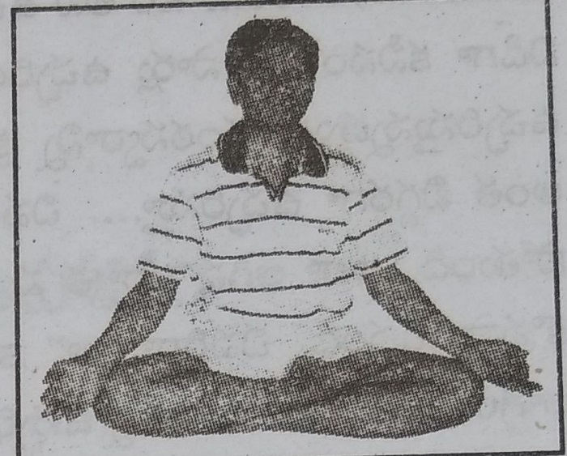
కీళ్ళ నొప్పులున్నవారికి ఓంకార ధ్యానం చాలా మేలు చేస్తుంది. ఎందుకంటే ఓంకారంలోంచి వచ్చే శబ్ద తరంగాలు శరీరమంతా వ్యాపించి నొప్పి తగ్గడానికి దోహదం చేయగలదు. శాస్త్రీయంగా ఆలోచిస్తే ఈ సృష్టిలో ప్రతి వస్తువులోని కణాలు కొంత స్థాయిలో ప్రకంపిస్తున్నాయి. ప్రతి ప్రకంపనం కొంత శక్తిని ఉత్పత్తి చేస్తుంది. ఉదాహరణకు కాంతి, శబ్దం, అయస్కాంతం మొదలగునవన్నీ శక్తి స్వరూపాలే. మన శరీరం కూడా కణాల కలయికతో ఏర్పడినది. ప్రతి కణంలో శక్తి నిగూఢమై ఉంది. కణం యొక్క ప్రకంపనాలలో మార్పు వచ్చినపుడు వాటి శక్తిలో మార్పు వస్తుంది. శక్తిలో మార్పు వచ్చినపుడు కణం అనారోగ్యం అవుతుంది. అలాంటపుడు 'ఓంకారం' ధ్వని తరంగాలు శక్తి నయం చేయడంలో ఉపయోగపడగలదు. ఓంకారం అనేది కఠోపనిషత్ ప్రకారంగా (అ+ఉ+మ) లచే ఏర్పడింది. కనుక అకారం, ఉకారం, మకారం మరియు ఓంకారం లను ఒక ప్రత్యేక పద్ధతిలో ఉచ్ఛరిస్తున్నప్పుడు శరీరంలోని ప్రతి కణంలో శక్తి పూరించబడుతుంది. పైగా ఆ ధ్వని తరంగాలలోని శక్తి మనస్సును మరింత శక్తివంతం చేస్తుంది. ఓంకారం ఉచ్ఛరించినంత సమయం ప్రపంచాన్ని మరిచిపోతాం. మన మనస్సు, శరీరం ధ్వనితో ఏకమైపోతుంది. అందుకే ఓంకారం ధ్యానం అని అంటున్నాం. ఓంకారం ద్వారా మనస్సు శక్తివంతం అయి చాలా ప్రశాంతపడుతుంది. కనుక ఎంతటి కీళ్ళ నొప్పులున్నా ప్రశాంత మనస్సు నొప్పిని తట్టుకునే శక్తిని పుంజుకుంటుంది. అందుకే రోజూ విధిగా ధ్యానం చేసే వారికి క్రమక్రమంగా శరీరం నుంచి వచ్చే బాధలు వారిని పెద్దగా లెక్కచేయవు. వారి మనస్సును ఇబ్బంది పెట్టని స్థాయికి చేరుకుంటారు. రమణ మహర్షి, రామకృష్ణ పరమహంస లాంటి వారు ఇందుకు నిదర్శనం. ఎన్నో లాభాలున్న ఓంకారాన్ని నిత్యజీవితంలో భాగం చేసుకొని లాభం పొందండి. ఆసనాలు, ప్రాణాయామం చేసిన తర్వాత మనం చాలా ప్రశాంతతను పొందుతాం. ధ్యానం చేయడానికి శరీరమూ, మనస్సు పూర్తిగా సిద్ధంగా ఉంటాయి. ధ్యానం వజ్రాసనంలో కూర్చొని చేయండి. అకారం, ఉకారం, మకారం మరియు ఓంకారంలను విడివిడిగా వీలైనంత ఎక్కువ సమయం తీసుకొని ఉచ్ఛరించండి. అలా చేయడం వలన మనస్సు మరింత ఏకాగ్రమై ధ్యానం బాగా కుదురుతుంది.
కండ్లు మూసుకొని, ఊపిరితిత్తుల నిండుగా గాలిని పీల్చుకొని నోరు తెరచి (అ+ఉ+మ) మరియు ఓం అని ఉచ్ఛరించడం మొదలు పెట్టండి. ఒక్కొక్క అక్షరాన్ని విడివిడిగా కనీసం 10 సార్లు ఉచ్ఛరించండి. ఫలితం బాగా ఉంటుంది. ఈ అక్షరాలను ఉచ్ఛరిస్తున్నప్పుడు కంఠస్వరాన్ని క్రమేపి పెంచుతూ ఎంత బిగ్గరగా ఉచ్ఛరించగలిగితే అంత బిగ్గరగా ఉచ్ఛరిస్తూ.... చివరిగా శబ్దాన్ని కొద్దిగా తగ్గుతూ నెమ్మదిగా ఆపాలి. అలా ఆగిన తర్వాత మరలా నిండుగా గాలి పీల్చుకొని తిరిగి అదే విధంగా కొనసాగించండి. చివరిగా "అ" కారాన్ని ఉచ్ఛరిస్తున్నప్పుడు కాలి వేళ్ళ నుండి బొడ్డు భాగం వరకు, "మ" కారాన్ని ఉచ్ఛరించేటప్పుడు బొడ్డు నుండి మెడ భాగం వరకు, "మ" కారాన్ని ఉచ్ఛరిస్తున్నప్పుడు తల భాగంలో 'ఓం' (అ+ఉ+మ) లను 10 సార్లు ఉచ్ఛరించి ఆపివేయండి. అ.ఉ.మ ల కలయికే ఓంకారమని మనకు తెలుసు. ఓంకారం చేస్తున్నప్పుడు మొదట బొడ్డు, పొట్ట భాగం లోను, తరువాత మధ్యభాగంలోను (ఊపిరితిత్తులు, మెడ) మ్ మ్ అంటున్నప్పుడు తలభాగంలోను ఎంతో చక్కని ప్రకంపనల సౌమ్యతాస్థితి (Resonance of vibrations) కలగడం మనందరికీ చాలా స్పష్టంగా అనుభవంలోనికి వస్తుంది. ఎంతసేపు ఓంకారం చేస్తే అంతసేపు ప్రకంపనలు ఉద్భవించి మనలో స్వాస్థ్య స్థితిని (wellness) కలిగిస్తాయి. శక్తిని ఉద్భవింప చేస్తాయి. అదే మంత్రశక్తికి ప్రత్యక్ష నిదర్శనం.
ఓంకారం చేస్తున్నప్పుడు అన్నింటికంటే ప్రధానంగా మనం గుర్తుపెట్టుకోవలసినది ఏమిటంటే మనం ఉచ్చరిస్తున్న ఓంకారాన్ని వినాలి. వింటూ ఓంకారాన్ని చేయాలి. ఓంకారం చేస్తూ వినాలి. అలా వినడమనేది చాలా చాలా చాలా ముఖ్యం. అలా చేస్తేనే సంపూర్ణ ఫలితం ఉంటుంది. దీనినే ప్రణవోపాసన అంటారు. ప్రణవోపాసన మనం నిత్యం చేస్తూ అనంతశక్తిని, నిరంతరాయంగా పొందుదాం.
గమనిక:
ఓంకారం చేస్తున్నప్పుడు సహజంగా ప్రాణాయామం జరిగిపోతుంది. కాబట్టి సమయం లేనివారు, ఆ రోజుకి ప్రాణాయామం చేయడం మానివేసి ఓంకారాన్ని కొంచెం ఎక్కువసేపు చేస్తే చాలు.
6. కీళ్ళ వ్యాధులు-ఆహారం
- చెడు కలిగించే ఆహారాన్ని త్యజిద్దాం - ప్రకృతి ఆహారాన్ని భుజిద్దాం
- కాల్షియం లాంటి పోషకాలుండే గింజాహారం - ఎముకల బలానికి ఆధారం
- గింజలలో ఎముకపుష్టి, కండపుష్టి - సంపూర్ణారోగ్యంతో పరిపుష్టి
- తినండి రోజూ ఓ నువ్వుల ఉండ - పొందండి కాల్షియం ఎముకల నిండా
- ఆహారంలో ఆమ్ల క్షార నిష్పత్తి ముఖ్యం - అపుడే దేహానికి ఆరోగ్యంతో సఖ్యం
- పండ్లు తిని హాయిగా పడుకో భాయి! - ప్రొద్దుటే ఫ్రీమోషన్ నిను లేపునోయి!
- పీచు పదార్థం కాలుష్యాన్ని కడిగేస్తుంది - ఒంటి కంపు నుండి రక్షిస్తుంది
- ప్రకృతి ఆహారం, తింటే ప్రాణశక్తి పొదుపు - వికృత ఆహారం తింటే ఉన్న శక్తి మాపు
- ప్రకృతి ఆహారం తింటే ఎంతో హాయి - ఇకనైనా దాని విలువ తెలుసుకోవోయి
- దేంట్లో ఏముందో తెలుసుకో బిడ్డా - ఏదో ఒకటుంటే జరిగే దెట్టా
- వెలయని పండ్లను తినడం మానకు - చవకలో లభిస్తాయి ఎన్నో పండ్లు మనకు
- ఉదయమే త్రాగే కూరగాయల రసం - పోషకాలు అందించి పోగొడుతుంది నీరసం
- ఉదయం అయ్యాక ఫ్రీ మోషన్ - మొలకలు తింటే ఆరోగ్యానికి ప్రమోషన్
- మొలకెత్తిన గింజల్లో జీవశక్తి - నింపుతుంది దేహంలో చైతన్యపు నవశక్తి
- అన్ని గుణాలు కలిగినది గింజ జాతి - తింటే తరిస్తుంది మానవ జాతి
- మొలకలను తినకుండా ఉండకు - అలాగని నమలకుండా మ్రింగకు
- అదనంగా అవసరం లేదు ఉప్పు - సహజంగా లభించేది చాలని చెప్పు
- ఉప్పు నూనెలు లేని ఆహారం - అందరి ఆరోగ్యానికి సోపానం
- పంచదార వాడితే - మృతం - తేనె వాడితే - అమృతం
- రుచులు తింటే మనసుకు ఉండదు వాంతి - వదులుకో వాటిపై భ్రాంతి
కీళ్ళ వ్యాధులకు కారణాలు అనే అంశంలో భాగంగా ఏ ఆహారం తినడం ద్వారా మన కీళ్ళు నష్టపోతున్నాయి అనే విషయాన్ని సవివరంగా తెలుసుకున్నాం. ముఖ్యంగా చూస్తే "మన రక్తంలో ఆసిడ్ తత్వాన్ని పెంచే ఆహారం" శరీరంలోని అన్ని అవయవాలను నష్టపరుస్తుంది. కీళ్ళు, ఎముకలు కూడా అలాగే నష్టపోతున్నాయి. నేటి జీవనశైలిలో మనం తినే ఆహారం పూర్తిగా ఆసిడ్ ను పుట్టించేదిగానే ఉంది.
ఉదా:- బాగా పాలీషు పట్టిన లేదా రిఫైండ్/ప్రాసెస్ చేసిన పప్పులు, బియ్యం, రవ్వ, చక్కెర, నూనెలు, పచ్చళ్ళు మొదలైన పదార్థాలు మన జీర్ణవ్యవస్థను ఇబ్బంది పెడుతూ, శరీరంలో ఆమ్లత్వాన్ని పెంచుతున్నాయి. దానికి తోడుగా అస్తవ్యస్తమైన ఆహార సమయాలు, ఆల్కహాలు, పొగత్రాగడం లాంటి అనేక విషయాలు మన కీళ్ళను నష్టపరుస్తున్నవనే విషయం తెలిసింది కదా! అందుకే మనం భోజనం చేసేటప్పుడు కొద్దిగా పై విషయాలను మదిలో ఉంచుకొని వానికి విరుగుడుగా ఉన్న ఆహారం తినాలి. మనకు చెడును కల్గించే ఆహారాన్ని త్యజిద్దాం. ముందు పెద్దలుగా మనం మారితే మన పిల్లలు కూడా చిన్నతనం నుండి ఆటోమేటిక్ గా అలవాటు చేసుకుంటారు. తల్లిదండ్రులుగా, పెద్దలుగా మన పిల్లలకు మంచి ఆహారపు అలవాట్లను అందించితే మనతో పాటు వారు కూడా జీవితంలో వైద్యునితో సంబంధం లేకుండా జీవించగలుగుతారు.
మంచి కీళ్ళకు అనువైన ఆహారం:
మనం ఏ ఆహారం రోజూ తీసుకుంటే మన శరీరంలోని అవయవాలన్నీ మనం జీవించినంత కాలం ఒక్క రోజు కూడా కుంటుపడకుండా, అవిటితనాన్ని చవిచూడకుండా జీవించగలుగుతామో, ఏ ఆహారం తింటే సమర్థవంతంగా ముసలితనంలో కూడా ఇతరులపై ఆధారపడకుండా మన పనులు మనం చేసుకుంటామో, ఏ ఆహారం తింటే అటు శరీరంతో పాటు మనస్సు కూడా చాలా ప్రశాంతంగా ఉంటుందో, ఏ ఆహారం తింటే మనలో రసాలు, ఎంజైములు, హార్మోన్లు బాగా ఊరతాయో, ఏ ఆహారం తింటే మనం ఎప్పుడూ శక్తివంతంగాను, కాంతివంతంగాను, విజ్ఞానవంతంగాను ఉంటూ నిరంతరం పదిమంది సేవలో నిమగ్నమౌతూ మనం ఆనందంగా జీవిస్తూ, మన తోటి వారిని ఆనందంతో ముంచెత్తుతామో అలాంటి ఆహారం మనకు కావాలి. ఈ విషయాలపై ప్రపంచం మొత్తం మీద ఎంతో రీసెర్చి జరిగింది. కాదు ఇంకా జరుగుతూనే ఉంది. ఆమ్లాన్ని కలిగించే ఆహారం కీళ్ళను, కండరాలను కరిగేటట్లుగా చేసి బలహీనపరుస్తుంది. అని ముందు ఛాప్టర్లలో తెలుసుకున్నాం. అదే విషయం రీసెర్చిలో తేలింది. మన ఆహార శాస్త్రవేత్తలు శాస్త్రీయంగా ఎంతో రీసెర్చ్ చేసి చివరికి తేల్చింది ఏమిటంటే "క్షారతత్వాన్ని కల్గించే ఆహారమే" సరైనదిగా గుర్తించారు. మరి క్షారాన్ని పెంచే ఆహారం ఏమిటా అని ఆలోచిస్తున్నారా! ఏమీలేదండి మన పూర్వీకులు, పెద్దలు తిన్న ఆహారమేనండి. అంటే ప్రకృతిలోంచి వచ్చిన ఆహారాన్ని ఉప్పు,నిప్పు ప్రమేయం లేకుండా ఎంత ఎక్కువ శాతం ఎవరు తింటారో రక్తంలో అంత క్షారతత్వం పెరుగుతుంది.
ఎముకలను గట్టిపరిచే కాల్షియం ఉన్న ఆహారం
మన ఆహారాన్ని పాలీషు పట్టడం ద్వారా అందులోని కాల్షియం, మెగ్నీషియం, ఫాస్పరస్ లాంటి పోషక పదార్థాలను మనం నష్టపోతున్నాం. మనకు ముఖ్యమైన ఆహారం గింజాహారం. గింజలపై పొట్టులో అనేక పోషక పదార్థాలుంటాయి. ముఖ్యంగా ఎముకలకు, కీళ్ళకు పనికివచ్చే కాల్షియం, ఫాస్పరస్, ఐరన్, మెగ్నీషియం బాగా ఉంటాయి. పాలీషు పట్టడం ద్వారా పై పొరలో ఉన్న కొన్ని విటమిన్లు, ఖనిజ లవణాలు బయటకు వెళ్ళిపోతాయి. పైగా మనం వండే వంట తీరు అనగా వార్చడం, మాడ్చడం చేస్తున్నాం. అందుకని మనం మొదట కాల్షియం లాంటి ఖనిజ లవణాలు లేని నిస్సారమైన ఆహారాన్ని తింటున్నాం. రెండవ వైపు నుంచి ఈ పాలీషు పట్టిన ఆహారం, మాంసాహారం లాంటివి రక్తంలో ఆమ్లత్వాన్ని కలుగజేస్తాయి. తద్వారా రక్తంలో pH బాలన్స్ దెబ్బతింటుంది. ఆహారంలోని కాల్షియాన్ని శోషించే గుణం తగ్గిపోతుంది. మూడవ వైపు నుండి వండి, వార్చి, మాడ్చిన ఆహారం తింటున్నందున ఆహారంలో పూర్తిగా ప్రాణశక్తి లేకుండా ఉండుటచే మన శరీరంలో కూడా ప్రాణశక్తి తగ్గిపోవడం జరిగి పొట్టకండరాలు కాల్షియమును శోషించుకుని, కణాలకు ఉపయోగపడక పోవటం వలన కండరాలు ఎముకలు చిన్న వయస్సులోనే శక్తిని, సమర్థతను కోల్పోతున్నాయి. అందుకని మనం తీసుకునే ఆహారం విషయంలో పై సమస్యలను దృష్టిలో ఉంచుకొని కాల్షియం కల్గిన ఆహారాన్ని ఎక్కువ తీసుకోవడంపై దృష్టి పెట్టాలి.
కాల్షియం అనేది మనం రోజూ తినే ఆహార పదార్థాలలో విరివిగా దొరుకుతుంది. మన అదృష్టమేమిటంటే చవకగా ఉన్న ఆహార పదార్థాలలోనే ఎక్కువ ఉంటుంది. కాని బాగా ఖర్చుతో కూడిన పదార్థాలు మాత్రమే ఆరోగ్యానికి మంచివిగా ఊహించుకొని, డబ్బు ఎక్కువ పెట్టి రకరకాల ఆహార పదార్థాలను కొనుక్కొని తింటున్నాం. ఏం లాభం. "డబ్బు పోయి శని పట్టడం" అంటే ఇదే మరి. ఉదా: చిరుధాన్యాలలో చూస్తే అన్నింటికన్నా రాగుల్లో ఎక్కువ కాల్షియం దొరుకుతుంది. కొన్ని ప్రాంతాలలో వీటిని చోళ్ళు అని వాడుకగా పిలుస్తుంటారు. 100 గ్రాముల రాగుల్లో 344 మిల్లీ గ్రాముల కాల్షియం ఉంది. అదే బియ్యంలో అయితే 10 మి.గ్రా. మాత్రమే ఉంది. ఎంత తేడా ఉందో మీరే చూడండి. అందుకనే బియ్యాన్ని నిత్యం తినే దక్షిణ భారతదేశస్తులలో ఎక్కువ కీళ్ళ వ్యాధులు కన్పిస్తుంటాయి. మన ఆంధ్రప్రదేశ్ లో రాగులను రాయలసీమ ప్రజలు ఎక్కువగా వాడుతుంటారు. రాగులు అన్నింటికన్నా చాలా చవకగా దొరుకుతాయి. 15-25 రూపాయలకు కిలో బియ్యం కొనుక్కుంటే, అదే రాగులు 5-10 రూపాయల లోపు దొరుకుతాయి. రాయలసీమలో ఎక్కువ మందికి రాగి సంకటి తినే అలవాటు ఉంది. రిక్షా తొక్కే వాళ్ళు, కాయకష్టం చేసుకునే కూలీలు ప్రత్యేకంగా రాగి సంకటి చేయించుకొని తింటారు. రాగిసంకటిలోకి తోటకూర పప్పు లేదా వేరుశనగల చట్నీ చేయించుకుని నంజుకుంటూ తింటారు. వారు తినే ఈ రాగి సంకటి ఎముకలకు ఎంతో ఆరోగ్యాన్ని, పుష్టిని ఇస్తుంది. ఎందుకంటే వారు తినే రాగుల్లో అత్యధికంగా కాల్షియం ఉంది. అలాగే ఆకుకూరల్లో తోటకూరల్లో కూడా అత్యధికంగా (800 మి.గ్రా) ఉంది. అసలు సృష్టి రహస్యం చూడండి. రాయలసీమ ప్రాంతీయులు, పేదవారు కొన్ని తరాలుగా ఈ ఆహారాన్ని సేవిస్తున్నారు. వారికి ఈ ఆహారంలో ఇంత కాల్షియం ఉంది, ఇన్ని పోషక విలువలు ఉన్నాయని తెలియదు. వారు రీసెర్చి చేసి తెలుసుకోలేదు. వారు ఏనాడు ఈ పోషక విలువల లెక్కలు వేసుకొని తినలేదు. ఐనా వారు చేసే పనికి, ఎముకల పటిష్టతకు ఇంత ఎక్కువ లాభం చేకూరుతుందంటే అప్పటి పూర్వీకులకు ఎంత విజ్ఞత ఉందో అర్థమవుతుంది. దురదృష్టవశాత్తూ కాలక్రమేణా ఈ అలవాటు తగ్గిపోతూ వస్తోంది. రాగిసంకటి కేవలం బీదవారు మాత్రమే తినే ఆహారంగా ముద్రపడిపోయి, రాగి సంకటి తినే అలవాటును క్రమంగా తగ్గించుకుంటూ వస్తున్నారు. విషయం తెలుసుకున్నారు కదా. కనిసం ఇప్పటికైనా రాగుల విశిష్టతను అర్థం చేసుకొని తిరిగి తినే అలవాటు చేసుకోండి. వారానికి 3-4 రోజులైనా తినండి. ఆకుకూరల్లో - తోటకూర, మునగాకు, మెంతి కూర, కొత్తిమీర, కరివేపాకు మొదలగు ఆకుకూరలు విరివిగా వాడండి. ఎందుకంటే వీటిలో ఎక్కువగా కాల్షియం దొరుకుతుంది. పైగా ఆకుకూరలు పట్టణంలోను, గ్రామీణ ప్రాంతంలోను, ఎక్కడపడితే అక్కడ సంవత్సరం పొడవునా విరివిగాను, చవకగాను దొరుకుతాయి. ఇలా రాగి సంకటిలో ఆకుకూర పప్పు వేసుకొని తినండి.
రాగుల మొలకలు: రాగులను రాత్రి నీళ్ళలో వేసి కడిగి నానపెట్టండి. ఉదయం ఒక పలుచటి గుడ్డలో కట్టండి. గాలి బాగా వచ్చే ప్రదేశంలో ఉంచండి. మరునాటి ఉదయానికి ఒక అంగుళం సైజు మొలకలు వస్తాయి. ఇవి కొద్దిగా గట్టిగా ఉన్నా మంచి రుచిని కల్గి ఉంటాయి. వీటిని పెసర్లు, బొబ్బర్లు, వేరుశనగ గుండ్లు, ఖర్జూరం, నువ్వులతో కలిపి తినవచ్చును. ఇలా కూడా మంచి పోషక పదార్థాలు అందుతాయి.
రాగి లడ్డు: రాగులను మొలక కట్టి నీడలో ఎండించి, పెనంపై దోరగా వేయించండి. తర్వాత మిక్సీలో వేసి పౌడర్ గా చేసి పెట్టుకోండి. అలాగే నువ్వులు దోరగా వేయించి పొడిగా చేసిపెట్టుకోండి. పచ్చి ఖర్జూరాన్ని గింజ తీసి ఉంచుకోండి. అలాగే మంచి తేనె కూడా తీసుకొని ప్రక్కన పెట్టుకోండి.
చేయు విధానం: పచ్చి ఖర్జూరం, రాగిపొడి, నువ్వుల పొడులను రోట్లో వేసి దంచి తేనెతో ఉండలుగా చేసి పెట్టండి. రాగి, నువ్వులు, ఖర్జూరంతో చేసిన ఉండలు రెడీ.
లాభాలు: పై మూడింటిలో అధికంగా కాల్షియం ఉంది. కనుక ఈ ఉండలను ఎదిగే పిల్లలకు, యుక్తవయస్సులోకి రాబోతున్న బాలికలకు రోజూ పెట్టండి. కాల్షియం బాగా పట్టి వారి ఎముకలు, ఛాతీ బాగా పెరుగుతుంది. కండరాలు శక్తివంతమౌతాయి. రక్తం బాగా పడుతుంది. రజస్వల అయినపుడు కూడా బాగా తినిపించండి. వెనుకటి రోజుల్లో విధిగా నువ్వుల ఉండలు తినిపించేవారు కదా. వారికి ఏ సైన్స్ తెలియక పూర్వమే శరీరానికి ఏ సమయంలో ఏం పెట్టాలో తెల్సుకొని అలా పెట్టారు. ఈనాడు ఎంత సైన్స్ తెలిసినా స్వీట్స్ కు అలవాటు పడుతున్నారు. ఏం అంటే టైం లేదంటారు. అలాగే గర్భిణిగా ఉన్న స్త్రీకి కూడా ఎక్కువ కాల్షియం కావాలి. నిజానికి వీరికి మామూలు రోజులకన్నా 4-5 రెట్ల కాల్షియం అవసరం ఉంటుంది. ఎందుకంటే తనకు కావాలి. తనతో పాటు తనలో పెరుగుతున్న బిడ్డకు కావాలి. ఒకవేళ సరియైన పాళ్ళలో ఇవ్వకుంటే తల్లి ఎముకల్లోని కాల్షియం బిడ్డకు వెళ్తుంది. చివరికి తల్లి ఎముకలు మెత్తబడి బలహీనమౌతాయి. అలా జరగకుండా ముందు జాగ్రత్తగా ఈ కాల్షియం ఉన్న ఆహారం తల్లికి, బిడ్డకు ఎంతో దోహదం చేస్తుంది.
రాగి మాల్ట్: రాగులను మొలక కట్టి, నీడలో ఎండించి పొడిగా చేసి పెనంపై దోరగా వేయించి ఒక సీసాలో పెట్టుకోండి. బడి పిల్లలకు పాలు ఇచ్చే సమయంలో, 2 స్పూన్లు పాలల్లో వేసి కలిపి ఇవ్వండి. పాలు చిక్కగా తయారౌతాయి. రుచికి రుచి, బలానికి బలం, ఎంత లాభముందండి. తల్లులు కొద్దిగా ఓపిక చేసుకుంటే ఇల్లంతా ఆరోగ్యమే మరి! పిల్లలకు తొందరగా అలసట రాదు. నీరసం తగ్గుతుంది. చదువుకోవడానికి కావలసిన గ్లూకోజ్ అందుతుంది. మెదడు చురుకుగా పనిచేస్తుంది. ఒక సంవత్సరం నిండిన పిల్లలకు కూడ నీళ్ళలో ఉడికించి, కొద్దిగా తేనె కలిపి స్పూన్ తో పట్టవచ్చు. పెద్దలు, వృద్ధులు కూడా అంబలిలా కాచుకొని మజ్జిగ కలుపుకొని త్రాగవచ్చు. ఎండాకాలం చాలా చల్లదనాన్ని ఇస్తుంది. వేడి శరీరం ఉన్నవారికి రాగులు, మజ్జిగ రెండూ చలువ చేస్తాయి.
క్షారత్వాన్ని పెంచే మంచి ఆహారం (Alkali Food)
ఆమ్లత్వాన్ని కల్గిన ఆహారం కీళ్ళకు నష్టం కల్గిస్తుందని ఇంతవరకు తెలుసుకున్నాం. అందుకే వాటికి విరుగుడుగా క్షార గుణాన్ని పెంచే ఆహారం తినాలి. మరి క్షారత్వాన్ని పెంచే ఆహారం ఏది? అది ఏమిటో, ఎక్కడ దొరుకుతుందో అని తటపటాయించనక్కర్లేదు. అదేమిటంటే సాధారణంగా ప్రకృతి ప్రసాదించిన ఆహారాన్ని ఏ విధమైన మార్పు చేయకుండా తింటే అదే క్షారత్వాన్ని పెంచుతుంది. అంత సులభమండీ! ప్రకృతిలో ఉన్న ప్రతి జీవి, ప్రకృతి ఇచ్చిన ఆహారాన్ని ఏ మాత్రం మార్చకుండా తింటున్నాయి. అందుకే వందేళ్ళు వచ్చినా ఏనుగు కీళ్ళు సమర్థవంతంగా పనిచేస్తూనే ఉన్నాయి. ఇదే వాటి ఆరోగ్య రహస్యం. కాని మనిషి మాత్రం ఆహారాన్ని మార్చి తింటున్నందున అనారోగ్యం పాలవుతున్నాడు.
విచక్షణా జ్ఞానం కల్గిన వ్యక్తి అయినందున ఇప్పటికైనా అర్థం చేసుకొని ఆహారం మార్చుకోవాలి. ప్రకృతి సిద్ధంగా లభించే తాజా పండ్లు, ఆకుకూరలు, కూరగాయలు, గింజలు, క్షారత్వాన్ని కల్గి ఉండి, కీళ్ళ నొప్పులకు రామబాణంలాగా పనిచేస్తాయి. (ఎక్కువ విషయాలు తెలుసుకోవాలనుకునే వారు డా. మంతెన సత్యనారాయణ రాజుగారు వ్రాసిన "పరిపూర్ణ ఆరోగ్యానికి సంపూర్ణ ఆహారం"అనే పుస్తకాన్ని చదవండి)
కీళ్ళనొప్పుల్లో తాజా పండ్లను ఎప్పుడు, ఎలా వాడుకోవాలి
తాజా పండ్లు ముఖ్యంగా తియ్యటి పండ్లను విరివిగా వాడుకోండి. చెట్టు సూర్యశక్తిని గ్రహించి పూవు పిందెగా, పిందె కాయగా, కాయ పండుగా రూపాంతరం చెందుతుంది. పరిపక్వమైన పండులో అనేక రకాల పోషక పదార్థాలు సమృద్ధిగా ఉంటాయి. సూర్యుని కిరణాలకు ప్రాణం పోసే గుణం ఉంది. అందుకే చెట్టు సూర్యుని శక్తిని, పండులో ప్రాణశక్తిగా నిక్షిప్తం చేసింది. పైగా ప్రతి పండులోను జీర్ణం కావడానికి ఉపయోగపడే ఎంజైములు ఉన్నాయి. అందుకే ఏ పండు తిన్నా చాలా సులభంగా జీర్ణం అవుతుంది. ఈ విషయం తెలుసు కనుకనే మనకు ఎప్పుడు అనారోగ్యం వచ్చినా లేదా జ్వరం వచ్చినపుడు మన పెద్దలు పండ్లను ఆహారంగా ఇచ్చేవారు. ఎందుకంటే అనారోగ్యంగా ఉన్నప్పుడు ఆహారం అరగని పరిస్థితి ఉంటుంది. కడుపులో తిప్పినట్లుగా ఉంటుంది. అజీర్ణ లక్షణాలు కనబడతాయి. అందుకే మన పెద్దలు కేవలం పండ్లనే ఆహారంగా ఇవ్వడం ఆనవాయితీగా ఉంది. పండు సులభంగా అరుగుతుంది. పైగా సూర్యశక్తి దాగి ఉంది కాబట్టి అనారోగ్యంలో పండును ఆహారంగా వాడితే దానిలో నిక్షిప్తమై ఉన్న ప్రాణశక్తి మనల్ని అనారోగ్యం నుండి ఆరోగ్యం వైపుకు తీసుకెళ్తుంది. మన శరీరంలో ప్రాణశక్తి పెరిగినపుడు శరీరంలోని కణాలన్నీ శక్తివంతమైన రిపేరింగు త్వరత్వరగా చేసుకుంటాయి. కాబట్టి దీర్ఘకాలికంగా ఉన్న కీళ్ళనొప్పులలో కూడా పండ్లను ఆహారంగా తీసుకున్న వారి కణాలు శక్తివంతమవుతాయి. అలాగే కణంలో రిపేరింగు కార్యక్రమం సమర్థవంతంగా నిర్వహించుకోగలుగుతుంది. రుమటాయిడ్ ఆర్థరైటిస్ లో రెండు పూటలా పూర్తిగా అపక్వాహారం (వండని ఆహారం) తిన్నవారిలో చాలా మంచి మార్పు వస్తుండడం మేం గమనించాం. ఎందుకంటే పండ్లలో ఉన్న ఎంజైములకు కీళ్ళలోని వాపు, నొప్పి (inflammation) తగ్గించే గుణం ఉందని శాస్త్రీయంగా నిరూపించడమైంది. ఉదా: పైన్ ఆపిల్ లో బ్రోమోలీన్ (bromolein) అనే ఎంజైమ్ ఉంది. బొప్పాయకాయలో పెపానిన్ (Pepanin) అనే ఎంజైమ్ ఉంది. ఇవి కీళ్ళలోని వాపును (inflammation) ను తగ్గిస్తాయి. ప్రతి పండులోనూ ఓ ప్రత్యేకమైన ఎంజైమ్ ఉంటుంది. అన్నీ కీళ్ళనొప్పి తగ్గించడంలో రిపేరింగ్ ప్రక్రియలో, లేదా ఆహారంలోంచి తీసుకున్న కాల్షియంను కణంలోకి తీసుకోవడానికి దోహదపడేటట్లుగా చేస్తాయి. ఉదా:- నిమ్మకాయలో సిట్రిక్ ఆమ్లం ఉంటుంది. ఈ సిట్రిక్ ఆమ్లం కణంలో జరిగిన డ్యామేజిని పూరిస్తుంది. అలాగే కొల్లాజిన్ అనే ప్రత్యేకమైన పదార్థాన్ని తయారుచేసి గాయం నయం అయ్యేటట్లుగా చేస్తుంది.
పీచు పదార్థం: పండ్లలోనూ, కాయగూరల్లోనూ, ఆకుకూరలల్లోనూ, మొలకెత్తిన గింజలలోనూ అత్యధికంగా పీచుపదార్థం ఉంటుంది. ఈ పీచుపదార్థం కణంలో ఏర్పడిన మలినాలను తుడుచుకెళ్ళుతుంది. రుమటాయిడ్ ఆర్థరైటిస్ లో రెండు పూటలా అచ్చంగా పండ్లు, పచ్చికూరలు తీసుకునప్పుడు వీటిలో ఉన్న పీచుపదార్థం జీర్ణక్రియలో భాగంగా కీళ్ళలో ఏర్పడిన వ్యర్థపదార్థాలను బయటకు పంపించడానికి దోహదం చేస్తుంది. పైగా కాస్త బరువున్న వారిలో కొలెస్ట్రాల్ లాంటి సమస్య రాకుండా పీచుపదార్థం ఉపయోగపడుతుంది. నిజానికి పీచుపదార్థం రెండు రకాలుగా ఉంటుంది. ఒకటి - కరిగే పీచుపదార్థం. ఇది రక్తంలోకి నేరుగా ఆహారంతో వెళ్ళి కణం లోపలి భాగాన్ని శుభ్రం చేస్తుంది. మసిపట్టిన గిన్నెలను పీచుతో తోమితే ఎలా ధగ ధగా మెరుస్తాయో అలాగే హాని కలిగించే కొలెస్ట్రాల్ ని రక్తనాళాల గోడలకు పేరుకుపోకుండా ఊడ్చుతుంది. రెండోది - కరగని పీచుపదార్థం. ఇది కణం బయట శుభ్రం చేసి ఆరోగ్యాన్ని భద్రపరుస్తాయి. ఆస్టియో ఆర్థరైటిస్ ఉన్నవారు మధ్యాహ్నం ముడిబియ్యం లేదా జల్లించని గోధుమపిండితో పుల్కాలు తయారు చేయించుకొని ఉప్పులేని కూరతో తింటే వారికి ఎక్కువ పీచు పదార్థం అందుతుంది. సాయంత్రం కూడా 7 గంటలలోపు పుల్కాతో పచ్చికూరల సలాడ్ పెట్టుకొని తింటే కీళ్ళ నొప్పులు త్వరగా నయం అవుతాయి. అన్నింటిలోను ముఖ్యమైనది పీచుపదార్థం అని గ్రహించాలి. గోధుమల పై పొరలోను, ముడి బియ్యం పై పొరలోను "హిస్టిడీన్" అనే ప్రత్యేకమైన అమైనో ఆసిడ్ ఉంటుంది. ఇది ముఖ్యంగా శరీరంలో ఎక్కువైన ఐరన్, కాపర్ లాంటి కొన్ని లోహాలు మరియు ఎక్కువైన ఉప్పు కీళ్ళలో పేరుకుపోకుండా చేస్తుంది.
పండ్లు తీసుకోవడం కుదరక పోయినా, లేదా పండ్లు కూడా అరగించుకోలేని స్థితిలో ఉన్న రోగికి డైరెక్టుగా పండ్లను జ్యూస్ గా తీసి వడకట్టి ఇవ్వచ్చు. ముఖ్యంగా పుల్లటి పండ్లు రసాలకు బాగుంటాయి. కమలా, బత్తాయి, నారింజ, పైన్ ఆపిల్, దానిమ్మ, లాంటి పండ్లను బాగా వాడుకోవచ్చు. ఎప్పుడైనా కర్భూజ, తర్బూజ, మామిడి లాంటివి కూడా రసాలు తీసుకొని త్రాగవచ్చు. ఎట్టి పరిస్థితిలోను ఐస్, చక్కెర, పాలు వేసి జ్యూస్ చేయవద్దు కావాలనుకుంటే 2-4 స్పూన్ల మంచి తేనె వేసుకోండి. చాలా రుచిగా ఉంటుంది. ఇలా చేస్తే ఆరోగ్యానికి హాని జరుగదు.
కీళ్ళనొప్పులున్న వారికోసం ఉదయాన్నే కూరగాయల రసం
కూరగాయలు లేకుండా వంట ఉండదు. వంట లేకుండా భోజనం ఉండదని మీకందరికీ తెలుసు. కాని మీకు తెలిసింది కూరగాయల్ని వండుకొని తినడమే కాని వండకుండా ఎలా తినాలో, ఎందుకు తినాలో తెలియక పోవచ్చు. వండితే కూరగాయల్లో ఉన్న పోషకపదార్థాలు కొంత శాతం నష్టపోతాయి. ముఖ్యంగా నీళ్ళలో కరిగే బి-కాంప్లెక్సు, సి-విటమిన్లు ఎక్కువగా నష్టపోతాయి. మన కీళ్ళు సమర్థవంతంగా పనిచేయడానికి కావలసిన ఏ, సి, ఇ విటమిన్లు, కాపర్, సెలీనియం, జింక్ లాంటి పోషక పదార్థాలు అందాలంటే తప్పకుండా వండకుండానే తీసుకోవాలి. ఐతే ఎలా తీసుకుంటే బాగుంటుందో తెలుకుందాం. కీళ్ళ వ్యాధులున్న వారికి లివర్ కూడా కొద్దిగా ఇబ్బందికి గురౌతుంటుంది.
కీళ్ళు సమర్థవంతంగా పనిచేయడానికి కావలసిన పోషక పదార్థాలు బాగా శరీరానికి అందాలి కనుక పచ్చికూరల్ని మూడు గ్రూపులుగా డివైడ్ చేద్దాం. మనకు అందుబాటులో వున్న కూరగాయల్ని, ప్రతి గ్రూపులోంచి పొందేటట్లుగా చూసుకుంటే సరిపోతుంది.
ఒకటవ గ్రూప్:- అందుకే ముందు జాగ్రత్తగా లివర్ కి లాభం కలిగించే విటమిన్ 'ఏ' ఉన్న ఆహారం అనగా క్యారెట్, బీట్రూట్, టొమాటో, ముల్లంగి, కొత్తిమీర, కరివేపాకు, మునగాకు లాంటివి జ్యూస్ లో వాడుకోవడం మంచిది.
రెండవ గ్రూపు:- అలాగే బి-కాంప్లెక్సు విటమిన్ల కోసం కీర, బీరకాయ, సొరకాయ, పొట్లకాయ లాంటివి వాడుకోవచ్చును.
మూడవ గ్రూపు:- కీళ్ళకు అతి ముఖ్యమైన కాల్షియం, ఫాస్ఫరస్, మెగ్నీషియం కోసం మునగాకు, గుమ్మడి, బూడిద గుమ్మడి, తోటకూర లాంటివి జ్యూస్ లో వాడుకోవడం మంచిది. అన్నిరకాలు వేసుకొంటేనే మంచిది అనుకోనక్కర్లేదు. మనకు నిత్యజీవితంలో ఏ కూరగాయలు చవకగా ఉంటాయో చూసుకొని ప్రతి గ్రూపులోంచి కనీసం ఒకటి లేదా రెండు ఉండేటట్లుగా చూసుకోండి. అప్పుడు సమృద్ధిగా అన్ని పోషక పదార్థాలు, శాస్త్రీయంగా శరీరానికి అందించిన వారిమౌతాం.
ఏ ఆహారపదార్థాలలో ఏయే పోషక పదార్థాలున్నాయో ఈ క్రింది పట్టికను చూస్తే స్పష్టంగా అర్థం అవుతుంది. ఈ పోషకాహార విలువలు జాతీయ పోషక ఆహార సంస్థ (NIN, Hyd) నుండి తీసుకోబడినవి.
పోషక విలువలు ICMR ప్రకారం
1. తృణ ధాన్యాలు - పోషక విలువలు
| పదార్థాలు |
కాల్షియం
(మి.గ్రా.) |
ఫాస్పరస్
(మి.గ్రా.) |
ఐరన్
(మి.గ్రా.) |
మెగ్నీషియం
(మి.గ్రా.) |
| బాజ్రా |
42 |
296 |
8.0 |
137 |
| బార్లీ |
26 |
215 |
1.67 |
21 |
| మొక్కజొన్న |
10 |
348 |
2.3 |
139 |
| రాగి |
344 |
283 |
3.9 |
137 |
| దంపుడు బియ్యం |
10 |
190 |
3.2 |
90 |
| మర బియ్యం |
10 |
160 |
0.7 |
64 |
| జల్లించని గోధుమ పిండి |
48 |
355 |
4.9 |
132 |
| జల్లించిన గోధుమ పిండి |
23 |
121 |
2.7 |
54 |
2. పప్పులు - పోషక విలువలు
| పదార్థాలు |
కాల్షియం
(మి.గ్రా.) |
ఫాస్పరస్
(మి.గ్రా.) |
ఐరన్
(మి.గ్రా.) |
మెగ్నీషియం
(మి.గ్రా.) |
| నువ్వులు |
1450 |
570 |
9.3 |
- |
| శనగలు |
202 |
312 |
4.6 |
119 |
| మరపట్టిన శెనగపప్పు |
56 |
331 |
5.3 |
130 |
| మినప్పప్పు |
154 |
385 |
3.8 |
130 |
| పొట్టుతీసిన పెసరపప్పు |
75 |
405 |
3.9 |
122 |
| ఉలవలు |
287 |
311 |
6.77 |
156 |
| సోయా చిక్కుడు (తెల్లవి) |
240 |
690 |
40.4 |
275 |
| కందిపప్పు |
73 |
304 |
2.7 |
90 |
| బొబ్బర్లు |
77 |
414 |
8.6 |
210 |
3. ఆకుకూరలు - పోషక పదార్థాలు
| ఆకుకూరలు |
కాల్షియం |
ఫాస్పరస్ |
ఐరన్ |
మెగ్నీషియం |
| గోంగూర |
172 |
40 |
2.28 |
66 |
| చుక్కకూర |
63 |
17 |
0.75 |
123 |
| ఎర్ర బచ్చలి |
200 |
35 |
10 |
- |
| ముళ్ళతోటకూర |
800 |
50 |
22.9 |
- |
| చింతచిగురు |
101 |
140 |
0.30 |
26 |
4. మాంసం - పోషక పదార్థాలు
| మాంసం |
కాల్షియం |
ఫాస్పరస్ |
ఐరన్ |
మెగ్నీషియం |
| మేక మాంసం |
12 |
193 |
- |
- |
| మేక లివర్ |
17 |
277 |
- |
- |
| గొర్రె మాంసం |
150 |
150 |
2.5 |
- |
| గొర్రె లివర్ |
10 |
380 |
6.3 |
- |
| పంది మాంసం |
30 |
200 |
2.2 |
- |
| జెల్లచేప |
10 |
230 |
- |
- |
5. కూరగాయలు - పోషక పదార్థాలు
| కూరగాయ |
కాల్షియం |
ఫాస్పరస్ |
ఐరన్ |
మెగ్నీషియం |
| వంకాయ |
18 |
47 |
0.38 |
26 |
| దొండకాయ |
40 |
30 |
0.38 |
36 |
| బెండకాయ |
66 |
56 |
0.35 |
53 |
| బీరకాయ |
18 |
26 |
0.39 |
32 |
| పొట్లకాయ |
26 |
20 |
1.51 |
28 |
| పెద్ద చిక్కుడు |
50 |
64 |
1.4 |
53 |
| గోరు చిక్కుడు |
130 |
57 |
1.08 |
47 |
| అరటి పువ్వు |
32 |
42 |
1.6 |
54 |
| అరటి దూట |
10 |
10 |
1.1 |
- |
| ఉల్లికాడలు |
50 |
50 |
7.43 |
104 |
| గుమ్మడి |
10 |
30 |
0.44 |
38 |
| బూడిద గుమ్మడి |
30 |
20 |
0.8 |
- |
| తమ్మకాయ |
60 |
40 |
2.0 |
- |
| జీడిపప్పు |
50 |
450 |
5.81 |
349 |
6. పండ్లు - పోషక విలువలు
| పండు పేరు |
కాల్షియం |
ఫాస్పరస్ |
ఐరన్ |
మెగ్నీషియం |
| జామ |
10 |
28 |
0.27 |
24 |
| ఖర్జూర |
22 |
38 |
0.96 |
12 |
| బొప్పాయి |
17 |
13 |
0.5 |
11 |
| దానిమ్మ |
65 |
70 |
1.79 |
44 |
| సపోట |
98 |
27 |
1.25 |
25 |
| ఆపిల్ |
10 |
14 |
0.66 |
7 |
| పైన్ ఆపిల్ |
20 |
9 |
2.42 |
33 |
| నిమ్మ |
90 |
20 |
0.3 |
- |
| బత్తాయి |
26 |
20 |
0.32 |
9 |
| ఉసిరి |
50 |
20 |
1.2 |
- |
| (బ్లూరకం) ద్రాక్ష |
20 |
23 |
0.5 |
- |
| (పచ్చవి) ద్రాక్ష |
20 |
30 |
0.52 |
82 |
| (గింజలేనివి) ద్రాక్ష |
30 |
30 |
0.2 |
- |
| పుచ్చకాయ |
11 |
12 |
7.9 |
13 |
| పనస |
20 |
41 |
0.56 |
24 |
| ఎండు ఖర్జూరం |
120 |
50 |
7.3 |
3 |
పచ్చికూరల జ్యూస్ తయారుచేసుకునే విధానం: మొదటి గ్రూపులోని క్యారెట్, బీట్రూట్, టొమాటోలను వీలైనంత వరకు విడిగా పెట్టుకోండి. ఇక రెండవ గ్రూపులోనివి సొరకాయగాని, బీరకాయగాని లేదా కీర లాంటివి ఏదైనా ఒక రకం తీసుకోండి. మూడవ గ్రూపులోంచి, మునగాకు లేదా గుమ్మడి కాయ లేదా ఇంట్లో తోటలో మందు వేయకుండా పెరిగే తోటకూర గాని ఏదో ఒక వెరైటీ తీసుకోండి. వాసన కోసం కరివేపాకు, కొత్తిమీర తీసుకోండి. పైన చెప్పిన అన్నింటిని సన్నగా తరగండి. అన్నీ కలిపి మిక్సీలో వేయండి. గుజ్జు గుజ్జుగా తయారౌతుంది. ఇందులో నీళ్ళు పోయవద్దు. కేవలం కూరగాయల్లో ఉన్న నీరు రసంగా వస్తుంది. ముఖ్యంగా బాగా నీరున్న టొమాటో, కీర లేదా సొరకాయ విధిగా ఉండేటట్లుగా చూసుకోండి. పలుచటి గుడ్డలో వేసి వడపోసి పిండండి. రుచికోసం 4 స్పూన్ల తేనె కలుపుకోవచ్చు. షుగర్ వ్యాధిగ్రస్తులైతే ఒక స్పూన్ తేనె కలుపుకోవచ్చు. అలాగే 1 చెక్క నిమ్మకాయ పిండడం ద్వారా పుల్లగా రుచిగా ఉండడమే కాకుండా రోజుకు కావలసిన 'సి' విటమిన్ కూడా అందుతుంది. ఉదయాన్నే రెండు దఫాలలో 2-3 లీటర్ల మంచి నీరు త్రాగడం అయ్యాక ఒక గంట గ్యాప్ ఇచ్చి కనీసం 300 మి.లీ. నుంచి 500 మి.లీ. వరకు ఈ జ్యూస్ త్రాగవచ్చును. జ్యూస్ త్రాగటం మొదలుపెట్టిన కొత్తలో తక్కువగా మొదలుపెట్టి క్రమేపీ పెంచుకోవాలి. అదే విధంగా జ్యూస్ త్రాగేటప్పుడు మనస్సు దానిపై లగ్నంచేసి నెమ్మది నెమ్మదిగా సిప్ చేస్తూ ఆ రుచిని అనుభవిస్తూ త్రాగాలి. ఇలా పొట్ట ఖాళీగా ఉన్నప్పుడు త్రాగడం వలన పొట్ట ప్రేగులు చాలా వేగంగా రసాన్ని శోషిస్తాయి. ఈ రసం క్షారగుణం కల్గియున్నందున ప్రేగులోని పొర దెబ్బతినకుండా మంచి వాతావరణం ఏర్పడి, మంచి బలాన్ని ఇస్తుంది. ప్రేగుల్లో ఆమ్లత్వాన్ని, అజీర్ణత్వాన్ని తగ్గిస్తుంది. ఇలా 3 నెలలకు పైగా క్రమం తప్పకుండా ఆచరించడం వలన రక్తంలో ఆమ్లత్వం తగ్గి, కీళ్ళు ఆసిడ్ ద్వారా అరగకుండా, కీళ్ళ లోపలి సైనోవియల్ పొర దెబ్బతినకుండా కాపాడుతుంది. పైగా కాల్షియం ఎక్కువగా దొరుకుతుంది కనుక ఎముకలు, కీళ్ళు, కండరాలు బాగా శక్తివంతంగా తయారవుతాయి. ఇందులో పీచు పదార్థం లేకుండా వడపోసి రసం మాత్రమే త్రాగుతున్నందున అర్థగంటలో పొట్ట ఖాళీ అవుతుంది. కావున ఆకలి లేని వారికైనను, ఆకలి మందంగా ఉన్న వారికైనను జీర్ణశక్తి తగ్గిన వారికైనను మంచి ఆకలిని పెంచి, జీర్ణశక్తిని పెంచుతుంది. ముందు జీర్ణశక్తి సరిచేస్తే, నెమ్మదిగా అన్ని జీవక్రియలు సవ్యంగా తయారవుతాయి. అందుకే కీళ్ళవ్యాధికి గురైన వారు కూడా ముందు జీర్ణ వ్యవస్థను పటిష్టపరచుకోవడం ముఖ్యం. కూరగాయల రసం ఉదయాన్నే త్రాగటం వలన ఇంకో లాభం కూడా వుంది. అందులో వున్న రకరకాల రసాయనాలు, విటమిన్లు మరియు కరిగియున్న పీచు పదార్థానికి ప్రేగుల యొక్క కదలికలను పెంచే గుణము కలదు. అందుకే ప్రేగుల్లోని మలాన్ని శుద్ధిచేయడానికి దోహదపడుతుంది. అందుకే కొంతమందికి ఎక్కువ జ్యూస్ త్రాగడం ద్వారా విరేచనాలు కూడా అవడం చూస్తుంటాం. కావున ఎన్నో లాభాలు కల్గిన ఈ రసాన్ని నేను అమృతం అని పిలుస్తుంటాను. అమృతం అనగా మృతం లేనిది. ఎల్లప్పుడు జీవంతో ఉంచేది. ఎక్కువ ప్రాణశక్తిని పెంచేది. జీవితంలో భవిష్యత్తులో ఏ రోగం రాకుండా కాపాడేది. అంతేకాదు అలవాటు పడితే రుచి కూడా నిజంగా అమృతంలాగే ఉంటుంది. అందుకే రోజూ మీ ఇంటిల్లి పాదీ అందరూ ఉదయాన్నే ఆరోగ్యాన్ని పెంచే భానుని లేతకిరణాలు శరీరంపైన ఆచ్ఛాదన చేస్తున్న సమయంలో అమృతప్రాయమైన రసాన్ని సేవించి శరీరాన్ని అమృతమయం చేసుకోండి.
కీళ్ళనొప్పులున్నవారికి అనువైన బ్రేక్ ఫాస్ట్
ఈ రోజుల్లో టిఫిన్ అనగా ఇడ్లీ-వడ, ఉప్మా-పెసరట్టు, పూరి-దోశ, ఇలా కాంబినేషన్ లో రెండు రకాలు తింటేనేగాని టిఫిన్ తిన్నట్లుగా అనుపించదు. కాని ఈ ఆహారంలో పోషక విలువల గురించి ఆలోచిస్తే ఒక్క బి-కాంప్లెక్సు గానీ, ఒక మినరల్ గానీ లేవు. కేవలం శక్తి కోసం తింటున్నాం. పైగా ఇంతకు ముందు విశదీకరించినట్లు అన్నీ రిఫైండ్ ఆహారం తింటున్నాం. కావున పీచు పదార్థం ఉండడం లేదు. పర్యవసానంగా మలబద్ధకం వస్తుంది. ఎవరికి మలబద్ధకం ఉందో వారికి రెట్టింపు నొప్పుల బాధలు కలగటం సహజం. మలబద్ధకంతో మనసు బద్ధకిస్తుంది. ఒళ్ళంతా uneasy గా ఉంటుంది. ఆకలి మందగిస్తుంది. తినకుంటే నీరసం వస్తుందన్న ఉద్దేశ్యంతో ఏదో ఒకటి తినాలి అనుకుంటారు. కాని ఆకలి లేదు. అందుకోసం ఉప్పు, నూనె, కారం, మసాలాలతో రకరకాల కృత్రిమ రుచులు తయారుచేసుకొని తినే ప్రయత్నం చేస్తున్నారు. ఆపై ఇంకా ఇక్కట్లు పడుతున్నారు. అందుకనే కీళ్ళలో నొప్పిని భరించలేక వైద్యుని వద్ద కెళ్ళి ఆకలి కోసం ఒక గోలి, అరగడానికి ఒక గోలి, విరేచనానికి ఒక గోలి లేదా టానిక్కు రాయించుకొని వాడుతుంటారు. సదా రోజూ ఇదే చరిత్ర. ఒక్కసారి గాడితప్పితే జీవితమంతా ఇలాగే కుంటుకుంటూ నడవాల్సి వస్తుంది. కీళ్ళనొప్పితో బాధపడేవారు ముఖ్యంగా టిఫిన్ విషయంలో కడు జాగ్రత్త వహించాలి. ముందురోజు సాయంత్రం 7 గంటల లోపు భోజనం. కేవలం పండ్లతో ముగించాలి. తెల్లవారి ఉదయం 7-8 గంటల వరకు అనగా ఒక రకంగా 12 గంటల పాటు పొట్టకు విశ్రాంతి నిచ్చాం. అంటే పొట్ట ఉపవాస దీక్షలో ఉందన్నమాట. అందుకనే ఉదయాన తినే ఆహారాన్ని ఇంగ్లీషులో మనం బ్రేక్ ఫాస్ట్ అంటాం. అంటే రాత్రంతా ఉపవాసంలో ఉన్నాం కనుక ఇప్పుడు బ్రేక్ చేస్తున్నాం అని అర్థం. సహజంగా ఎవరైనా రాజకీయ నాయకులు ఉపవాస దీక్ష విరమించేటప్పుడు తేనె, నిమ్మకాయ రసంతో ముగిస్తారు ఔనా! ఆ తర్వాత చాలా తేలికైన ఆహారం ఇస్తారు. అలాగే మనం రోజూ ఉదయాన్నే పచ్చికూరగాయల రసంతో ముగించి శరీరానికి ఉపయోగపడే మంచి బ్రేక్ ఫాస్టును అందించాలి. ఉదయం తీసుకునే ఆహారం విషయంలో ముఖ్యంగా కీళ్ళ నొప్పులున్నవారు చాలా జాగ్రత్త వహించాల్సి ఉంటుంది. ఉదయం తీసుకునే ఆహారం పొట్టకు ఇబ్బంది కలుగనటువంటిదిగా ఉండాలి. పొట్టకు అనుకూలమైన ప్రాణశక్తి కల్గిన ఆహారమైతే, సులభంగా జీర్ణం చేసుకోగలదు. పైగా జీర్ణాశయ గోడలకు అతుకబడి ఉన్న మ్యూకస్ పొర దెబ్బతినకుండా ఉండే ఆహారమై ఉండాలి. ఇలా ఎన్ని రకాలుగా చూసినా బ్రేక్ ఫాస్ట్ క్రింద "మొలకెత్తిన విత్తనాలు" తినడం శ్రేయస్కరం. మొలక కట్టిన విత్తనాలకు పై అన్ని గుణాలున్నాయి. మంచి ఫైబర్ ఉంది. భగవద్గీతలో చెప్పినట్లుగా ఇది పూర్తిగా సాత్త్వికాహారం కూడాను.
లాభాలు: ఉదయం ఈ మొలకలు తీసుకోవడం ద్వారా మనస్సు ప్రశాంతంగా ఉంటుంది. ఆయిల్ ఫుడ్ తిన్నంత గాబరాగా ఉండదు. గింజల్లో నువ్వులు, బాదాం, వేరుశనగ గింజలు మొదలగునవి కీళ్ళలో సైనోవియల్ ఆయిల్ ని తయారు చేసుకోవడానికి ఉపయోగపడుతాయి. మొలకలతోపాటు ఉల్లిపాయ, పచ్చిమిర్చి కలుపుకొని, అందులో నిమ్మకాయ కలుపుకొని తినడం ద్వారా ఎన్నో లాభాలు కూడా ఉన్నాయి. ఉల్లిపాయలో సల్ఫర్ మూలకం ఉంది. సల్ఫర్ కీళ్ళ రిపేర్ లోను, రక్తంలో ఉన్న కాల్షియంను ఎముకలోనికి, కార్టిలేజ్ లోనికి, కనెక్టివ్ టిష్యూలోనికి శోషించుకోవడానికి ఉత్ప్రేరకంగా పనిచేస్తుంది. ఆధ్యాత్మిక చింతన ఉన్నవారు తినకపోయినా పరవాలేదు. గింజల్లో అన్ని రకాల విటమిన్లు మినరల్స్ అందుతాయి. కావున గింజలు తినడం ద్వారా పోషకాల లోపం పూరించబడి కీళ్ళు, కండరాలు సమర్థవంతంగా పనిచేస్తాయి.
ఏ గింజలను తినాలి: మనం వాడవలసిన ధాన్యాలన్నీ దేశవాళీ గింజధాన్యాలయితే మంచిది. ఇప్పుడు ఎక్కువగా హైబ్రిడ్ రకాలు వచ్చాయి. వాటిలో లాభం తక్కువ ఉంటుంది. వాటి జోలికి పోవద్దు.
పచ్చపెసలు, నల్ల పెసలు, చిన్న శెనగలు, జొన్నలు, సజ్జలు, గోధుమలు, రాగులు, అలసందలు, మినుములు, ఉలవలు, పిల్లిపెసలు, ఆల్ఫా ఆల్ఫా, సోయా చిక్కుడు, వేరుశనగ పప్పులు, కొబ్బరి మొదలగురకాలను వాడుకోవచ్చు.
ఈ గింజలను తెచ్చుకుని శుభ్రంగా బాగుచేసుకుని, 2-3 రోజుల పాటు బాగా ఎండపెట్టుకుని మొక్క కట్టుకుంటే మంచిగా వస్తాయి. పైన చెప్పిన అన్ని రకాల గింజలు రోజూ తినవలసిన పనిలేదు. ఏవన్నా 3-4 రకాల గింజలను ప్రతిరోజూ తినడానికి తయారు చేసుకోవడం మంచిది. గింజలలో పోషక పదార్థాల హెచ్చుతగ్గులు ఉంటూ ఉంటాయి. కాబట్టి అన్ని రకాలుగా మార్చుకుంటూ తింటే అన్నిరకాల లాభాలు అందుతాయి. వేరుశెనగపప్పులను నానబెట్టి తింటే చాలు. కొబ్బరిని పచ్చిగా తింటే సరిపోతుంది. మిగతా గింజలను మొలకలు కట్టి తినాలి.
గింజలను మొలక కట్టే విధానం: ఒక్కొక్క రకం గింజలను గుప్పెడు నిండా తీసుకుంటే సరిపోతాయి. అలా 3-4 రకాల గింజలను 3-4 గుప్పెళ్ళు విడివిడిగా తీసుకోవాలి. గింజలను ముందు నీళ్ళలో బాగా కడిగితే మట్టి లాంటిది ఏమైనా ఉంటే పోతుంది. అలా కడిగేటప్పుడు తాలు గింజలు, తుక్కులాంటి వాటిని ఏరి బయట పడవేయాలి. ఉదయం పూట అలా గింజలను విడివిడిగా తీసుకుని, విడివిడి గిన్నెలలో ఎక్కువ నీరుపోసి నానబోయండి. ఉదయం నుండి రాత్రి వరకు అలా గింజలను పూర్తిగా నాననివ్వాలి. జొన్నలు, సజ్జలు, రాగులు (పేడు గట్టిగా ఉంటాయి) మొదలగు వాటిని 24 గంటల పాటు నానబెడితే బాగా మొలకలు వస్తాయి. గింజలు క్రొత్తరకం, పాతరకం అనే రకాలు ఉంటాయి. మీకు దొరికిన గింజలు ఏ రకమో మీకు సామాన్యముగా తెలియదు. కాబట్టి ముందు ఉదయం నుండి రాత్రి వరకు నానబెట్టి చూడండి. అన్ని గింజలు బాగా నాని, బాగా మొక్కలు వస్తే అలానే రోజూ నానాబెట్టుకోండి. గింజలు ఎక్కువగా గట్టిగా ఉంటున్నా, సరిగా అన్నీ మొలకలు రాకపోయినా అప్పుడు ఉదయం నుండి మర్నాడు ఉదయం వరకు నానబోయండి. వాసన రాకుండా ఉంటాయి. వీలును బట్టి ఏ రకము మంచిగా ఉంటే ఆ రకము నానబెట్టుకోండి.
మొక్క రావడం కొరకు రకరకాల పద్ధతులు ఉన్నాయి.
1) గుడ్డలో పోసి మూటకట్టే పద్ధతి:- పలుచటి గుడ్డలను తీసుకుని, ఆ గుడ్డలలో ఏరకం గింజలను ఆ రకానికి విడివిడిగా పోసి, గట్టిగా మూటలు గట్టి, ఆ మూటలపై బరువును ఏదన్నా పెడితే మంచిది. ఆ మూటలను 24 గంటలపాటు అలా ఉంచితే మొలకలు అంగుళం పొడవు వస్తాయి. ఏ రకం గింజైనా సరిగా పొడవు రానప్పుడు, ఆ మూటలపై కొద్దిగా నీరు చల్లి ఇంకొక రోజు వరకూ అలానే ఉంచితే మొలకలు బాగా పెరుగుతాయి. నానిన గింజలను తీసి తడి ఆరిపోయే వరకు పేపరుపైగాని, పొడి గుడ్డపై గాని ఆరనిచ్చి అప్పుడు మూట కట్టుకుంటే వాసన రాకుండా ఉంటాయి. వేసవికాలంలో అయితే మూటపై కొద్దిగా నీటిని మధ్యాహ్నం పూట చల్లుకోవడం మంచిది.
2) చిల్లుల బాక్సులో పోసి మొలక కట్టే పద్ధతి:- స్త్రీలు సామాను షాపులలో చిల్లులుండే బాక్సులు (పుదీనా బాక్సులు) అమ్ముతుంటారు. వీటిలో ఆ నానిన గింజలను ఏ రకానికి ఆ రకాన్ని విడిగా పోసి మూతపెట్టి అలా ఉంచాలి. 24 గంటలలో మొలకలు బాగా వస్తాయి. అవసరమైతే ఇంకొక రోజువరకు అలా ఉంచితే మొలకలు బాగా పొడవు వస్తాయి. మొలక అనేది అంగుళం నుండి రెండు అంగుళాల లోపు వరకు వస్తే మరీ మంచిది. ఈ బాక్సులనేవి మూడు సైజులలో ఒకదానిలో ఒకటి పెట్టి అమ్ముతారు. ఆ మూడు బాక్సుల సెట్ ఉంచుకుంటే 3 రకాల గింజలు మొలకకట్టుకోవడానికి బాగుంటుంది. మూటకట్టే కంటే ఇది తేలిక పద్ధతి.
3) స్ప్రౌట్ మేకర్ లో మొలక కట్టే పద్ధతి:- ప్రత్యేకించి మొలకలు తయారు చేసుకోవడం కొరకు మూడు, నాలుగు అరలతో, ప్లాస్టిక్ తో తయారు చేసిన బాక్సు ఉంటుంది. దీన్ని స్ప్రౌట్ మేకర్ అంటారు. ఇది చాలా తేలిక పద్ధతి. మొలకలు కూడా బాగా వస్తాయి. ఎలా మొలకలు కట్టాలనేది దాని మీద వివరంగా వ్రాసి ఉంటుంది. మొలకలు ఎంత వచ్చాయో, ఎలా ఉన్నాయో మన కంటికి కనిపిస్తూ ఉంటాయి. ఎక్కువ రకాల గింజలను మొలక కట్టుకోవడానికి, ఏ రోజుకారోజు ఒక్కొక్క అరలో విడిగా పోసుకోవడానికి బాగా ఉంటుంది. అవకాశం ఉన్నవారు వాడుకోవచ్చు. ఏ విధముగా మొలక గట్టామన్నది ఇక్కడ ప్రధానం కాదు గానీ, మొలక బాగా వచ్చిందీ, లేనిదీ ప్రధానం. వాసన రాకుండా, జిగురుగా లేకుండా మొలకలు కట్టుకోవాలి. మీకు వారం, పది రోజులలో బాగా అలవాటు అయితే ఇక ఇబ్బంది ఉండదు.
ఎలా తినాలి: టిఫిన్ క్రింద పైన ఉదహరించిన కొన్ని గింజలను తీసుకొని తినవచ్చు. అన్ని గింజలు తినక్కర్లేదు. రోజూ 2 లేదా 3 రకాలు తీసుకొని సరిపోను తినండి. కడుపు నిండుగా ఎక్కువ తినాలి. కొబ్బరి, ఖర్జూర, నువ్వులు, రాగులు విధిగా పెట్టుకొని తినండి. కావలసినంత కాల్షియం దొరుకుతుంది. బరువు తగ్గాలనుకుంటే కొబ్బరిని తగ్గించండి. మొలకలను బాగా నమిలి తినండి. మనం తినే ఇతర టిఫిన్స్ లాగా 2 నిమిషాల్లో తినాలి అంటే కుదరదు. అలా తొందర తొందరగా తింటే సరిగా అరగక, అజీర్ణం, గ్యాస్ ట్రబుల్ వస్తుంది. పైగా కడుపులో నొప్పి పుడుతుంది. జనరల్ గా కీళ్ళ వ్యాధులున్నవారికి జీర్ణకోశ సమస్య ఉంటుంది. అందుకే ముందు ఎనిమాలు రెగ్యులర్ గా 4-5 రోజులు తీసుకొని టిఫిన్ పండ్లతో మొదలుపెట్టి ఆ తర్వాత కొద్దిగా మొలకలు మరియు పండ్లు తింటూ అలవాటు చేసుకొని, ఆ తర్వాత పూర్తిగా మొలకలు టిఫిన్ క్రింద తినే స్థాయికి రావచ్చు. నువ్వులు, పెసలు, ఆల్ఫా ఆల్ఫా చాలా సులభంగా అరుగుతాయి. అందుకు ఈ మొలకలతో మొదలు పెట్టడం మంచిది.
కీళ్ళనొప్పులున్న వారి మధ్యాహ్నం భోజనం ఎలా ఉండాలి:
కీళ్ళనొప్పులున్నవారు మధ్యాహ్నం ముడిబియ్యం అన్నం తినండి. బరువు తగ్గాలనుకున్నవారు జల్లించిన గోధుమ పిండితో చేసిన పుల్కాలు 3-4 పెట్టుకొని తినండి. ఇందులోకి కూరలు విధిగా ఉప్పులేని కూరలు వండుకొని తినండి. రోజూ ఉప్పులేని కూరలు తిన్నవారిలో రుమటాయిడ్ ఆర్థరైటిస్ బాగా తగ్గిపోవడం గమనించాం. ఉప్పు లేకుండా తినాలంటే డా. రాజు గారు చెప్పినట్లుగా వంటల్లో కొన్ని మార్పులు, చేర్పులు చేసుకొని తినాల్సి వస్తుంది. ఉప్పులేని లోటు తీరడానికి కూరల్లో ప్రత్యేకంగా నువ్వుల పొడి, రాగుల పొడి, వేరుశనగ పొడి, పాలు, పెరుగు, పచ్చి కొబ్బరి లాంటివి వేసి వండుకుంటే ఉప్పులేకున్నా రుచిగా ఉప్పు ఉన్నట్లుగా ఉంటాయి. ఉప్పు ఉన్నంత రుచి లేకున్నా తినగలిగే రుచి మాత్రం ఉంటుంది. రుచిగా లేకుంటే ఎవరికైనా తినడం చాలా కష్టం. మధ్యాహ్నం వండుకునే వంటల్లో 50 శాతం ఆకుకూరలను కలుపుకొని వండుకోండి. ఆకుకూరలు మనకు ఏ ఊర్లోనైనా, పట్టణాల్లోనైనా చాలా చవకగా దొరుకుతాయి. మిగతా కూరలు అనగా బీరకాయ, సొరకాయ, పొట్లకాయ, వంకాయ మొదలైన కూరలు ఏవి వండినా 50 శాతం ఆకుకూరలు వేయడం వలన అందులో ఉన్న ఉప్పు కలిసి వస్తుంది. అందుకే కూరలో ఉప్పులేని లోటును తెలియకుండా చేస్తుంది. ఆకుకూరల్లో ముఖ్యంగా పాలకూర, తోటకూర, మెంతికూర, మునగ ఆకు, పుదీనా మొదలైన వానిలో అధికంగా కాల్షియం, విటమిన్ 'ఎ', 'సి' విటమిన్లు, రైబోఫ్లేవిన్, ఫోలిక్ ఆసిడ్ లాంటి బి-కాంప్లెక్సు విటమిన్లు సమృద్ధిగా ఉన్నాయి. ఇలా కీళ్ళ నొప్పులున్నవారు వాడుకోవడం ద్వారా వారికి కావలసిన కాల్షియంతో పాటు వారికి భవిష్యత్తులో లివర్ సమస్యలాంటివి రాకుండా నిరోధించగలదు.
అలాగే ఆలుగడ్డలు, చిలకడదుంప, కర్రపెండలం, కంద, చేమగడ్డ, క్యారెట్ లాంటి దుంపల్లో కూడా కాల్షియం మరియు విటమిన్ "సి" అధికంగా ఉన్నందున ఈ దుంపలను కూడా వాడుకోండి. చాలామందికి దుంపలు తింటే కీళ్ళనొప్పులు, నడుము నొప్పి పెరుగుతుందనే నమ్మకం బాగా ఉంది. ఇది సరియైనది కాదు. వంట మార్చితే ఈ సమస్య రాదు. ముఖ్యంగా మనం దుంపలు వండేటప్పుడు చింతపండు పులుపు వేసి వండుతాం. అందులో మనకు తెలియకుండా రుచి కోసం ఎక్కువ ఉప్పు వేయాల్సి వస్తుంది. ఇక్కడ అందరికి సమస్య వచ్చినది. అధికంగా వాడిన ఉప్పు, చింతపండు ద్వారా అని ఎవరు గ్రహించడంలేదు. ఒకసారి కాదు వరుసగా 10 సార్లు ట్రై చేయండి. మీకే తెలుస్తుంది. వంట వండడంలో మార్పు చేస్తే సరిపోతుంది. అందులో ఇన్ని సంవత్సరాలు అనేక రకాల రుచులకు అలవాటు పడిన నాలుకను మెప్పించడం అంత సులభమైన పనికాదు. (డా. రాజు గారు వ్రాసిన "రోగాలు రాని రుచులు" పుస్తకం చదవండి. లేదా జబ్బులు తగ్గించే వంటల వీడియో సీడీలను వీక్షించండి). ఉప్పు ఏ కొంచెం వేసుకున్నా రుచి రాదు, పైగా నొప్పులు అసలే తగ్గవు. పూర్తిగా మానేస్తేనే ఫలితం కనబడుతుంది. బాగా డ్యామేజి అయిన వారిలో చాలా కష్టం. ఏదో కొద్ది శాతం ఫలితం కనబడుతుంది. అయినా పట్టువదలని విక్రమార్కుడిలా మొదలెట్టి చివరి వరకు వెళ్ళండి. కూరల్లో ఉప్పులేకుండా వండుకొని తినేటప్పుడు తప్పకుండా శరీరానికి కావలసిన 2-3 గ్రాముల ఉప్పును కూరగాయల రసంలోనూ, గింజలలోనూ, కూరలోనూ పొందే విధంగా సరిచూసుకోవాలి. లేనిచో నీరసం వస్తుంది. ఆరంభశూరత్వముగా మిగిలిపోతారు. రోజుకు ఏదైన ఒక కూర పెట్టుకొని తినండి. మజ్జిగ విరివిగా వాడండి. మంచిదే. ఉప్పులేని ఆహారం తినడం ద్వారా ఇన్ని సంవత్సరాల తరబడి ఎక్కువ ఉప్పు తీసుకోవడం వలన అయిన డ్యామేజిని బాగుచేసుకోవడానికి ఇదో మంచి అవకాశం ఇచ్చినవారమవుతాం. కణం చుట్టూ పేరుకు పోయిన సోడియం బయటకు విసర్జించబడాలి. ఇన్ని సంవత్సరాలుగా తిన్న ఉప్పు కీళ్ళలో సోడియం బై కార్బోనేట్ క్రిస్టల్స్ గా పేరుకుపోయి ఉంటుంది. ఆ లవణాలు బయటకు రావడానికి అవకాశం ఇచ్చినవారమవుతాం. అంతేకాదు ఉప్పు లేని ఆహారం తిన్నప్పుడు కీళ్ళకు జరుగబోయే మరింత నష్టాన్ని అరికట్టవచ్చు. ఉప్పు తగ్గిస్తే రుమటాయిడ్ ఆర్థరైటిస్ లో వచ్చే వాపు, నొప్పి, ఎరుపు చాలా వరకు తగ్గిపోతుంది. ఆస్టియో ఆర్థరైటిస్ లో కూడా ఎక్కువ రోజులు తినడం మొదలు పెట్టాక కొంత మార్పు కనబడుతుంది. మొదలు పెట్టిన క్షణం నుంచి మార్పుకోసం ఎదురుచూసి నిరుత్సాహంతో ఆపేయకండి. ఓపిక, సహనం, ఎంతైనా అవసరం. గోరంత ఆశ కొండంత వెలుగును చూపుతుందని మరవకుండా మొదలుపెట్టింది ఆపకండిక. కండీషన్స్ గుర్తున్నాయి కదా!
కీళ్ళ నొప్పులున్న వారికి రాత్రి భోజనం
రాత్రి భోజనం అనేకన్నా సాయంత్రం భోజనం అంటేనే బాగుంటుంది. రాత్రి భోజనం అనగానే 9 తర్వాత అర్థరాత్రి వరకు తీరిగ్గా కూర్చొని తినడం అని మనసుల్లోకి వస్తుంది. ఎక్కువ మంది రాత్రి 9-10 గంటల మధ్య తింటుంటారు. కాని ఈ అలవాటు మంచిది కాదు. ముఖ్యంగా కీళ్ళ నొప్పులు ఉన్నవారు మాత్రం తప్పక మానుకోవాలి. రాత్రి భోజనాన్ని ఇంగ్లీషులో డిన్నర్ అంటారు. డిన్నర్ కి ఇంకో మతలబు ఏమిటంటే మందు, విందు, ముక్క, బారు, బీరు అని అర్థం. అంటే పైవన్నీ ఎంజాయ్ చేయడానికి రాత్రి భోజన సమయం సరియైనదిగా భావించి డిన్నర్ అని అన్నారు. ఎందుకంటే రోజంతా పనులు ముగించుకొని, ఆఫీసు నుంచి ఇంటికి వస్తారు. ఇక ఏ బాధ్యత ఉండదు కదా! అందుకని ప్రశాంతంగా రాత్రి పొద్దు పోయాక మిత్రులందరూ కూర్చొని ఏవేవో కబుర్లు చెప్పుకుంటూ కాలక్షేపం చేస్తూ చాలా పొద్దుపోయాక భోజనం చేస్తారు. ఆలస్యంగా తిన్నప్పుడు శరీరానికి చాలా నష్టం జరుగుతుంది. ఎందుకంటే వాస్తవానికి రాత్రి విశ్రాంతి తీసుకోవడానికి ప్రకృతి నిర్ణయించింది. విశ్రాంతి అంటే మనం ఏ పని చేయకుండా ఉండడమే కాదు, పొట్టకు జీర్ణవ్యవస్థకు కూడ విశ్రాంతి నివ్వాలని అర్థం. మనం తిన్నది పూర్తిగా అరిగాక అప్పుడు శరీరంలో జరిగిన డ్యామేజిని రిపేరు చేసుకొని స్వస్థపరచుకుంటుంది. రాత్రి నిద్రలో ఉన్నప్పుడు శరీరాన్ని శుభ్రం చేసుకోవడం (Cleaning), తర్వాత నయం చేసుకోవడం (Repairing) ఈ రెండు కార్యక్రమాలను శరీరం రాత్రి విశ్రాంతిలో చేసుకుంటుంది. దానికి కనీసం 6-8 గంటల సమయం ఇవ్వాల్సి వస్తుంది. కాని అర్థరాత్రి భోజనం చేస్తే, తిన్న ఆహారాన్ని అరిగించుకోవడానికి 4 గంటలు పడుతుంది కదా. అంటే తెల్లవారి 3-4 గంటల ప్రాంతంలో అరిగిపోయి అప్పుడు పై రెండు కార్యక్రమాలను చేసుకుంటుంది. 7 గంటలకు నిద్రలేచి బెడ్ కాఫీతో ఆ కార్యక్రమాన్ని కూడా నాశనం చేస్తున్నాం. 3 గంటలు కూడా శరీరాన్ని బాగుచేసుకోవడానికి అవకాశం ఇవ్వడం లేదు. కనుక ఈ అలవాటు మంచిది కాదు. శరీరం అసలే అవస్థలో ఉంది. కీళ్ళల్లో వాపు వచ్చిందంటే అర్థం ఏమిటో తెలుసా? ఆ ప్రదేశంలో శరీరం విపరీతంగా రియాక్ట్ చెందుతుందన్నమాట. ఎన్నో వందల రసాయనిక కార్యక్రమాలు అక్కడ జరిగిపోతున్నాయని అర్థం. ఉదాహరణకు తేనెటీగలు చూడండి. ఎక్కడో ఒక రాణి తేనె టీగ ఉంటుంది. దాని అనుజ్ఞతో మిగతా వేల తేనె టీగలు ("వర్కర్ బీస్") పనిచేస్తూనే ఉంటాయి. వాటి పనితీరు చూస్తుంటే ఆశ్చర్యం వేస్తుంది. యమ స్పీడ్ గా వాటి పని నిర్వర్తించుకుంటూ వెళ్తుంటాయి. వాటికి ఒక పద్ధతి ఉంది. తేనెతుట్టను కూడా చాలా ప్రణాళికతో పరిమాణాన్ని పెంచుతూ పోతుంటాయి. చాలా అద్భుతంగా అల్లుతుంటాయి. వాక్స్ పెంచుతూ, తేనెను నిలువ చేస్తుంటాయి. అదే మన శరీరం లోపల కూడా రక్తనాళాలు నిరంతరం తేనేటీగలాగా పని చేసి వాపు తగ్గించే పని చేస్తుంటాయి. ఇది మామూలు విషయం కాదు. ఎన్నో వేల రసాయనిక కార్యక్రమాలు జరుగుతూ ఉంటాయి. చాలా చక్కగా పని చేస్తున్న తేనెటీగలను డిస్టర్బ్ చేస్తే ఎలాగుంటుంది. ఎవరు డిస్టర్బ్ చేసినా ఆ పని వదిలిపెట్టి డిస్టర్బ్ చేసినవారి పనిని పడతాయి. వారి అంతు చూసిన తర్వాత కాని తిరిగి వాటి పనిలో ఎలా నిమగ్నం కావో అలాగే మనం శరీరంలో రిపేరు జరుగుతున్న సమయం పూర్తిగాక ముందే మళ్ళీ టిఫిన్, టీ త్రాగామంటే వాటి రిపేరింగ్ కార్యక్రమాన్ని ఆపివేసి మనం తీసుకున్న ఆహారాన్ని అరిగించడానికి శరీరంలోని శక్తి డైవర్ట్ అవుతుంది. అంతిమంగా నష్టం ఎవరికి? రిపేరింగ్ కార్యక్రమం ఆగిపోతుంది. కీళ్ళ నొప్పులు అలాగే ఉండిపోతాయి. అందుకనే పెందలకడ తినడం పూర్తి చేసినట్లయితే నొప్పి, బాధను తగ్గించుకోవడానికి కావలసిన పనులను నిర్వర్తించడంలో శరీరం నిమగ్నమౌతుంది.
సాయంకాలం భోజనం ముఖ్యంగా రుమటాయిడ్ ఆర్థరైటిస్ వారు పచ్చికూరల సలాడ్ తో పుల్కా తినడం మంచిది. సలాడ్ ను సులభంగా తయారుచేసుకోవచ్చును. క్యారెట్, పచ్చికొబ్బరి, సొర, కీరలాంటి కూరలను సన్నగా తరగాలి. అందులో పచ్చిమిర్చి, ఉల్లిపాయల ముక్కలు కలిపి నిమ్మరసం పిండుకుంటే వెజిటబుల్ సలాడ్ రెడీ. ఇలా తినడం ద్వారా నీరసం ఉండదు. శక్తి వస్తుంది. రుచిగా ఉంటుంది. తయారు చేసుకోవడం కూడా చాలా తేలిక. కీళ్ళ నొప్పులు, షుగరు ఉన్నవారు కూడా ఇలా తినవచ్చు.
కాస్త బరువు తక్కువగా ఉన్న వారు ముడిబియ్యం అన్నం ఉప్పు లేని కూరతో కూడా 7 గంటల లోపు తినడం అలవాటు చేసుకోవడం మంచిది.
ఏ ఇబ్బంది లేకుండా తొందరగా కీళ్ళనొప్పులు తగ్గాలనుకునేవారు పూర్తిగా పండ్లు తిని ఉండడం మంచిది. ముఖ్యంగా బొప్పాయి, పైన్ ఆపిల్ ఉండేటట్లు చూసుకోండి. ఈ రెంటిలో ఉన్న ఎంజైములు కీళ్ళలో ఉన్న వాపు (inflammation) ని తగ్గించేస్తాయి. గ్యాస్ రాకుండా ఉంటుంది. కీళ్ళ నొప్పులతో బాధపడుతున్నవారు లేదా ఏ సమస్యాలేకుండా తొందరలోనే కీళ్ళనొప్పులు తగ్గించుకోవాలనుకునే వారు సాయంత్రం కూడా కొన్ని మొలకలు తిని, సీజనల్ గా దొరికే పండ్లు తిని భోజనాన్ని సరి పుచ్చుకోవచ్చు. ఇలాగే పాటించుకుంటూ వెళ్తుంటే తొందరలోనే మంచి మార్పు వస్తుంది.
7. కీళ్ళవ్యాధుల్లో ఉపవాసం
- ఆరోగ్యానికి నీవు చేసే ఉపవాసం - రక్షణకై దేహానికి నీవు ఇచ్చే అవకాశం
- ఉపవాసం ఆచరణలో పెట్టు - వ్యర్థపదార్థాలను బయటకు నెట్టు
- వారానికొక ఉపవాస దీక్ష - ఆరోగ్యానికది శ్రీరామరక్ష
- ఎనిమాతో మలాన్ని తొలగించు - రోగాన్ని పూర్తిగా నిర్మూలించు
- రెండు ప్రక్కలా పదునున్న కత్తి ఉపవాసం - ఆరోగ్యానికి అదొక గొప్ప అవకాశం
- ఉపవాసం ద్వారా ఇస్తే అవకాశం - శరీరం అంతర్గత శక్తితో చేసుకుంటుంది సహవాసం
- ఉపవాసంతో కావాలి సిద్ధం - రోగంతో చేస్తుంది ప్రాణశక్తి యుద్ధం
- ఎనిమాతో మలాన్ని తొలగించు - రోగాన్ని పూర్తిగా నిర్మూలించు
- ఉపవాసంతో త్రాగితే తేనె నిమ్మరసం నీరు - జీర్ణకోశానికి ఎంతో ప్రయోజనం చేకూరు
- ప్రకృతి పై నమ్మకముంచు - ఉపవాస ధర్మాన్ని విశ్వసించు
- ఉపవాస ధర్మాన్ని అర్థం చేసుకో - వ్యర్థపదార్థాన్ని వదిలించుకో
- పండ్లకు ఉంటుంది సహజమైన రుచి - స్వీకరించండి వాటి విలువను గ్రహించి
- సహజాహార స్వీకరణే శరీరధర్మం - రోగ నివారణే ఉపవాసం లోని మర్మం
- ఫలోపవాసం ఫలప్రదాయకం - అన్ని విధాలా పరమసుఖదాయకం
- పుల్లటి పండ్లను త్రాగితే రసంగా - 'సి' విటమిన్ లభిస్తుంది పుష్కలంగా
- ఆరోగ్యానికై ఉపవాసం ప్రారంభించు - అత్యంత జాగ్రత్తగా విరమించు
- ఉపవాస ధర్మాన్ని నమ్మి ఆశ్రయించు - ఆరోగ్య విజయం నిన్ను వరించు
అసలే కీళ్ళన్నీ అరిగిపోయి భరించలేని నొప్పితో బాధపడుతూ, ఆకలి ఉండి ఉండక ఏదో కొద్దిగా నడవడానికే నానా అవస్థలు పడుతున్నాం. నీరసంతో కృశించిపోతుంటే మీరేంటి ఉపవాసం చెబుతారు అని అనుకుంటున్నారు కదూ! పైగా ఈ ఉపవాసం మనం చేయలేం లే. ఒకపూట తినకుంటేనే కళ్ళు తిరిగి పడిపోతాం. మాకు అసలే ఎవరూ చేసేవారు లేరు. ఇంక మంచాన పడితే దిక్కూ మొక్కూ లేకుండా పోవాల్సి వస్తుందని కూడా అనుకుంటూ ఉంటారు. ఇలా మీరు అనుకోవడంలో తప్పు లేదు. ఎందుకంటే తింటేనే శక్తి వస్తుంది. లేకుంటే నీరసించి పోతాం అనే విషయం మాత్రమే మనకు ఇంతవరకు అవగతమైంది. కాని కీళ్ళనొప్పులు, నడుము నొప్పులు, లేదా శరీరంలో కోల్డ్ నుంచి కాన్సర్ వరకు ఏ రకమైన రోగంతో బాధపడుతున్నను ఉపవాసం చేస్తే ఎంతగానో ప్రయోజనం ఉంటుందనే విషయం మనలో చాలామందికి తెలియదు. ఉపవాసం వెనకాల ఇంత శాస్త్ర విషయం ఉందని తెలియక పోవడం వల్ల కూడా ఉపవాసం అంటే అందరికీ భయం. ఇంతకీ ఉపవాసం అంటే ఏమిటి? ఎలా చేస్తే అది ఉపవాసం అవుతుంది? ఉపవాసానికి ముందు, ఉపవాసం చేస్తున్నప్పుడు అలాగే ఉపవాస విరమణ ఎలా ఉండాలనే విషయాలు పూర్తిగా తెలిస్తే మీరు ఉపవాసాన్ని సులభంగా చేయగల్గుతారు. మీకున్న జబ్బును అవలీలగా తీసి బయటపడేస్తారు. నిజానికి ఈ విషయం ఈనాటి తరానికి క్రొత్తగా అనిపించవచ్చు. కాని ఈ ఉపవాస ధర్మం ఏనాటిదో. మన పెద్దలు, పూర్వీకులు ఎవరికి చిన్న సమస్య వచ్చినా లంఖణాలు పెట్టి పొట్టను మాడ్చేవారు. కాలుకు దెబ్బతగిలినా, కీళ్ళలో నొప్పి కల్గినా, నడుము సరిగా వంగక పోయినా, శరీరంలో ఏ అవయవం ఇబ్బంది పెట్టినా చివరికి జలుబు, జ్వరం వచ్చినా ముందు లంఖణం పెట్టి తర్వాత ఔషధాన్ని సేవించేవారు. అలా చేసి తిరిగి ఆరోగ్యవంతులయ్యేవారు. లంఖణాలు చేసిన తర్వాత వారికి ప్రత్యేకమైన వంట చేసిపెట్టడం జరిగేది. అంటే ఉపవాసం యొక్క విశిష్టతను వారు ఏనాడో గ్రహించారు. ఉపవాసం ఎలా చేయించాలి. ఉపవాసం తర్వాత ఏ ఆహారం ఇవ్వాలి. ఎలాంటి నియమాలు పాటించాలనే విషయాలను క్షుణ్ణంగా అర్థం చేసుకొని అలాగే చేసేవారు. ఎందుకు చేసేవారో తెలుసా! వారికి తెలుసు ప్రకృతిలోంచి వచ్చిన మనిషి ఆ ప్రకృతి చెప్పినట్లుగానే నడుచుకోవాలని, అవసరమైతే ప్రకృతిలో ఉన్న పంచభూతాలను అందించాలనే అవగాహన వారికి ఎప్పుడో ఉంది. అందుకే అలా చేసేవారు. ఈ విషయాలు అన్నీ ఆయుర్వేద గ్రంథాల్లో చెప్పబడ్డాయి. కాని ఈ రోజు మందులకు అలవాటు పడ్డాం. ప్రతి చిన్న సమస్యకు, పెద్ద సమస్యకు మందు వాడుతున్నాం. చివరికి ఆ పవర్ సరిపోక ఇంకా పవర్ పెంచుకుంటూ శరీరాన్ని ఎంతగానో ఇబ్బందికి గురి చేస్తున్నాం. ఇంత జరగడానికి కారణం ఉపవాసంపై అవగాహన లేకపోవడం. అందుకే కీళ్ళనొప్పులున్నవారే కాదు, భవిష్యత్తులో కీళ్ళనొప్పులు రాకుండా ఉండాలనుకునే ప్రతి వ్యక్తీ ఈ ఉపవాస ధర్మాన్ని ఆశ్రయించవచ్చు. ఆరోగ్యంతో జీవించవచ్చు. ఉపవాసం గురించి తెలియక ఉపవాసం చేయాలంటే భయపడేవారు కొందరైతే, విషయం తెలిసాక మేం వద్దని ఎంత చెప్పినా దీర్ఘకాలిక ఉపవాసం చేస్తామని చెప్పేవారు మరికొందరు, అందుకే మేం చెప్పేదేమిటంటే మీరు మీ ఇంట్లో ఉండి మీకు మీరుగా ఉపవాస దీక్ష ప్రారంభించాలనే తలంపు ఉన్న వారైతే నెలలో ఒకటి నుంచి మూడు రోజుల వరకు చేయండి. ఏ మాత్రం ఇబ్బందులు రావు. ఈ సమయంలో కేవలం మేం చెప్పబోయే విధంగా తేనె, నిమ్మకాయ, నీరుపైనే ఉపవాసం చేయవచ్చు. ఆ తర్వాత 3 రోజులు కూరగాయల రసం మరియు పండ్ల రసాలపై ఉపవాసం చేసి ఆ తర్వాత కేవలం పండ్లనే ఆహారంగా (అపక్వాహారం) తీసుకుంటూ మరో వారం వరకు కూడా చేయవచ్చు. అంటే అప్పుడు మీరు దాదాపుగా 2 వారాల వరకు ఈ పద్ధతిలో ఉన్నట్లే అవుతుంది. ఎటువంటి వారైనను చాలా సులభంగా చేసుకోదగినట్లుగా ఉంటుంది. వారానికి ఒక్కరోజు చేసుకోవాలనుకునే వారు కేవలం తేనె, నిమ్మకాయ, నీరు తీసుకుంటూ చేయవచ్చు. అంతేకాని ఇంట్లో దీర్ఘకలికంగా ఉపవాసం చేయాలనే ఆలోచన చేయవద్దు. దీర్ఘకాలికంగా ఉపవాసం చేయాలనుకునే వారు కేవలం ప్రకృతి ఆశ్రమాల్లోనే చేయడం మంచిదని మా విన్నపం. కారణం ప్రకృతి ఆశ్రమంలో రోజూ బి.పి., పల్స్ చూస్తారు. మధ్యలో కొన్ని ఇబ్బందులు వచ్చినా డాక్టర్ మీకు అనుకూలమైన చికిత్సలు సిబ్బందితో చేయిస్తుంటారు. అంతేకాకుండా మీతో పాటు ఇంకా కొంతమంది కూడ ఉపవాసంలో ఉంటారు. ఒకరి అభిప్రాయాలు ఒకరు పంచుకుంటూ చక్కగా కాలక్షేపం చేసుకోవచ్చు. గ్రూపులో చేసినప్పుడు ఆ ప్రభావం వేరుగా ఉంటుంది. ప్రకృతి ఆశ్రమంలో చక్కని వాతావరణం ఉంటుంది. ఆహ్లాదాన్ని కలిగించే చెట్లు, చేమలు, పక్షుల లాంటివి, డాక్టర్ల సలహాలు, సంప్రదింపులుంటాయి. విషయాలపై చక్కటి ఉపన్యాసాలు అందిస్తుంటారు. మీకున్న సందేహాలు తీర్చుకోవచ్చు. వచ్చిన సమస్యలు తగ్గించుకోవచ్చు. వీటికి తోడుగా ఆధ్యాత్మిక ధ్యానం, భజనలు లాంటివి కూడా చేసుకోవచ్చు. ఇన్ని లాభాలుంటాయి కనుకనే దీర్ఘకాలిక ఉపవాసానికి ప్రకృతి ఆశ్రమమే సరియైనది.
వారానికి ఒక్కరోజు ఉపవాసము
కీళ్ళనొప్పులు జీవితంలో రాకూడదని అనుకున్నవారు గాని లేదా ఇప్పుడిప్పుడే కొద్దిగ కీళ్ళనొప్పులు ఉన్నట్లుగా అనిపిస్తున్న వారు గాని వారానికో రోజు ఉపవాసం చేయడం చాలా మంచిది. (ఉపవాసం గురించి బాగా అవగాహన కావాలనుకుంటే డా. రాజుగారు వ్రాసిన "ఉపవాస ధర్మం" పుస్తకం చదవండి. సి.డి.లు వీక్షించండి) కీళ్ళ నొప్పులకు సంబంధించి ఎలా ఉపవాసం ఆచరించాలి, అనే విషయాలను మాత్రమే ఇక్కడ పొందుపరుస్తున్నాం.
ఉపవాసం అంటే
ఏ ఆహారం తినకుండా పొట్టకు, ప్రేగులకు విశ్రాంతి ఇవ్వడం, అలాగే మనస్సు యొక్క ఆలోచనా పరంపరను తగ్గించి భగవంతునికి దగ్గరగా ఉండడమే ఉపవాసం అన్నారు. భీష్మాచార్యులంతటి వారే "తపం లేదు ఉపవాస వ్రతం కన్నా" అన్నారంటే, ఉపవాసం ఎంతటి పవిత్ర స్థానాన్ని ఆక్రమించిందో అర్థం చేసుకోవచ్చు. రోగాలు, నొప్పులు లాంటి శారీరక అనారోగ్యం మొదలుకొని మనస్సును ఇబ్బంది పెట్టే మానసిక సమస్యల వరకు విముక్తిని కల్గించడానికి ఉపయోగపడే అత్యంత అద్భుత సాధనం ఉపవాసం, అందుకే "లంఖణం పరమ ఔషధం" అన్నారు పెద్దలు. అన్ని మందులు కేవలం రోగం వచ్చాక తగ్గించడానికి ఉపయోగపడతాయి. కాని రోగం రాకుండా కాపాడేటట్లు చేసేది కేవలం ఉపవాసం మాత్రమే. మరియు మానసిక చిరాకులను, వ్యాకులతను తగ్గించి, ఇంద్రియాలను కంట్రోలు చేసి ఏకాగ్రతను ప్రశాంతతను కూడా పెంచుతుంది ఉపవాసం.
ఉపవాసం వెనుక దాగి ఉన్న అతి ముఖ్యమైన సత్యమేమిటంటే
ప్రతి రోజు నిద్ర ద్వారా జ్ఞానేంద్రియాలు (చెవులు, కన్నులు, చర్మము, ముక్కు, నాలుక) మరియు కర్మేంద్రియాలు (వాక్కు, కాళ్ళు, చేతులు, మలద్వారం, మూత్రద్వారం) పూర్తి విశ్రాంతిని తీసుకొని మరలా మరుసటి రోజు ఉదయానికి తిరిగి శక్తిని పెంపొందించుకుంటున్నాయి. గుండె, ఊపిరితిత్తులు, కిడ్నీలు, మెదడు, రక్తనాళాలు మొదలైనవి నిరంతరం పనిచేస్తూ ఉన్నట్లు కన్పిస్తుంటాయి. అయినా అవి పనిచేస్తున్న సమయంలోనే రెస్టు తీసుకుంటూ ఉంటాయి. ఉదా. గుండె నిమిషానికి 72 సార్లు స్పందిస్తూ పనిచేస్తుంటుంది. గుండె కొట్టుకుంటున్నప్పుడు ఒకసారికి తరువాత ఒకసారికి మధ్య కొన్ని క్షణాలు రెస్టు తీసుకుంటుంది. అనగా పనిచేస్తూనే విశ్రాంతి తీసుకుంటుందన్నమాట. అలాగే మన జీర్ణాశయం, ప్రేగులు, లివరు, పాంక్రియాస్ మొదలగు అవయవాలు కొంత సమయం పనిచేసి రాత్రంతా రెస్టు తీసుకుని పనిచేస్తుంటాయి. రెస్టులో అవి కోల్పోయిన శక్తిని తిరిగి పుంజుకొంటాయి. ప్రేగులకు రెస్టు ఇవ్వకుంటే వెంటనే అజీర్ణం అనే వ్యాధి మొదలవుతుంది. అజీర్ణమే అనేక రోగాలకు పునాది లాంటిది. కావున జీర్ణకోశాన్ని శక్తివంతం చేయాలి. పునాది గట్టిగా ఉంటేనే ఆరోగ్యమనే బలిష్టమైన బిల్డింగును కట్టవచ్చును. అలాంటి జీర్ణకోశాన్ని రక్షించడానికి తిరిగి శక్తివంతం చేయడానికి ఉపవాసం అవసరం. జీర్ణకోశానికి విశ్రాంతి నివ్వడమే ఉపవాసం. సృష్టి ధర్మాలను తప్పకుండా పాటించే జంతువులు, మిగతా జీవరాసులు ఏదైనా అనారోగ్యం సంభవించినపుడు దాని నుండి రక్షించుకోవడం కొరకు జీర్ణకోశానికి పూర్తి విశ్రాంతినిచ్చి వచ్చిన రోగాల నుండి బయటపడగలుగుతున్నాయి.
జీర్ణకోశానికి విశ్రాంతినిస్తే కీళ్ళనొప్పులు, బాధలు, రోగాలు ఎందుకు తగ్గుతాయంటే కేవలం విశ్రాంతి సమయంలోనే కీళ్ళలో పేరుకుపోయిన వ్యర్థపదార్థాలను బయటకు గెంటడం ద్వారా పాడైన కీలును బాగుచేసుకునే ప్రయత్నం జరుగుతుంది. ఎలాగైతే ఖాళీ సమయంలో ఇల్లు సర్దుకోవడం, శుభ్రం చేసుకోవడం చేస్తామో అలాగే మన శరీరం కూడా పొట్ట విశ్రాంతిగా ఉన్నప్పుడే ఈ అద్భుతమైన కార్యక్రమాన్ని నిర్వహిస్తుంటుంది. కీళ్ళు వాపు రావడం అంటే అర్థం ఏమిటో తెలుసా? సమర్థవంతంగా పనిచేసే కీలులో ఏదో కొంత డ్యామేజీ అయిందని తెలియజేయడం. పూర్తిగా డ్యామేజి కాకుండా కీళ్ళను కాపాడుకోవడానికి తను ఇచ్చే సూచన ఇది. అందుకే వాపు అనేది రోగం కాదు. శరీరం నష్టపడకుండా అది యిచ్చే ప్రతిచర్య మాత్రమే. నిజానికి ఇది చాలా మంచి ఇండికేటర్. ఇలా శరీరం సూచించకుంటే ఎక్కువ నష్టపోయేది మన కీళ్ళే కదా. ఇంకో రకంగా ఈ వాపు మనకేమీ చెబుతుందంటే శరీరంలో ఓ ప్రముఖ పాత్రను వహించే కీలు చెడిపోతుంది, పూర్తిగా డ్యామేజి కాకముందే రక్షించుకో అని మనకు విన్నవిస్తుంది. అలా మనకు తెలియజేయగానే, వెంటనే పొట్టకు రెస్టు ఇచ్చి, ఆ ఎనర్జీ అంతటిని కీళ్ళ డ్యామేజిని బాగుపరుచుకోవడానికి పంపించగలిగితే తొందరగా నయం అవుతుంది.
మనం ఆహారం తింటే ఆ ఆహారాన్ని జీర్ణం చేయడానికి శరీరానికి సుమారు 4-5 గంటల సమయం పడుతుంది. దీనితో పాటు ఎంతో శక్తి శరీరంలోని ఆహారం జీర్ణం కావడానికి ఖర్చు అవుతుంది. మనం ఉపవాసం చేసినపుడు 12-15 గంటల శక్తి పొదుపు అవుతుందన్నమాట. ఆ పొదుపు కాబడిన శక్తి మన శరీరంలో రిపేరు చేయడానికి ఉపయోగపడుతుంది. అందుకోసం వారానికి ఒకరోజు అనగా 24 గంటలు పూర్తిగా పొట్టకు రెస్టు ఇవ్వడం మంచిది.
వారానికి ఒక్కరోజు ఉపవాసం చేయడం ద్వారా శరీరంలో ఉన్న ఎనర్జీ 24 గంటలు పూర్తిగా క్లీనింగ్, హీలింగ్ చేసుకుంటుంది. వారం రోజుల్లో తయారైన వ్యర్థ పదార్థాలను ఉపవాసంలో 24 గంటలు అదేపనిగా శుభ్రం చేసుకొంటుంది. అప్పుడు రిపేరు సులభం అవుతుందన్నమాట. ఉద్యోగం చేసే స్త్రీలు రోజూ ఇల్లు శుభ్రం చేసుకున్నను ఆదివారం రాగానే ఎక్కువ సమయం తీసుకొని పైన, గోడలు శుభ్రం చేస్తారు. బీరువాలు, టేబుల్, మంచాలు మొదలైనవి అన్నీ శుభ్రం చేస్తారు కదా! స్త్రీలు రోజూ ఇల్లు ఊడుస్తారు. అయినా రోజూ మట్టి వస్తూనే ఉంటుంది. రోజూ ఊడ్చినా పైగా ఆదివారం రోజు ఎక్కువ మట్టి వస్తుంది. ఎందుకంటే ఆదివారం పూర్తిగా సెలవు దినం అయినందున సమయం దొరికినందున ఎక్కువ శుభ్రం చేస్తుంటారు. అలాగే మన శరీరం కూడ ఉపవాసంలో పొట్టకు సెలవు పెట్టాం కదా! అందుకే అన్ని రోజుల కన్నా ఉపవాసం రోజు ఎక్కువ సమయం కేటాయించి శుభ్రం చేసుకొని బాగుచేసుకుంటుంది.
పంచభూతాలలో ఆకాశమనే అంశానికి చెందినదే ఉపవాసం. ప్రతి దానికి అవకాశాన్ని ఇచ్చేదే ఆకాశం. ఆకాశమంటే ఖాళీ అని అర్థం. సంచిలో ఆకాశమనే ఖాళీ ఉంటేనే మనం అందులో ఏదైనా వస్తువును పెట్టుకోవడానికి కుదురుతుంది. సంచిలో ఖాళీ లేదంటే ఆకాశము లేదని అర్థం. అలాగే మన శరీరంలో ఉన్న ఖాళీని, కణాలలో ఉన్న ఖాళీని రోగ పదార్థం ఆక్రమించివేసినప్పుడు రోగాలు వస్తాయి. ఆ రోగ పదార్థాన్ని ఆ భాగాల నుండి మళ్ళించి, బయటకు విసర్జించి, తిరిగి ఆ ఖాళీ ఏర్పరచి మంచి పదార్థాలు సరఫరా అయ్యేటట్లు చేయడమే ఉపవాసం. శరీరాన్ని సంకుచిత్వం నుండి విశాలతత్వం చేయడమే ఉపవాసం.
రోజూ మనం ఆహారం తింటే ఆ ఆహారాన్ని అరిగించడానికి ఎంతో ఎక్కువ ప్రాణశక్తి ఖర్చు అయిపోతూ ఉంటుంది. మన శరీరంలో సమస్త కార్యక్రమాలను నిర్వహించేది ప్రాణశక్తి. ఉపవాసం చేయడం ద్వారా (ఆహారం లేని కారణంగా) మన శరీరంలో ప్రాణశక్తి అంతా పొదుపు అవుతుంది. ఆ పెరిగిన ప్రాణశక్తి మన కీళ్ళలో రోగ పదార్థాన్ని, విష పదార్థాన్ని విసర్జించడానికి సహకరిస్తూ ఉంటుంది. అందువల్లనే ఉపవాసంలో కీళ్ళనొప్పులు, నడుం నొప్పులు, ఇతర రోగాలు త్వరగా తగ్గుతూ ఉంటాయి.
మూడు రోజుల ఉపవాసం - విశిష్టత
శరీరం రోగగ్రస్తమయినపుడు, నొప్పులతో, రొష్టులతో బాధపడుతున్నప్పుడు శరీరానికి అవకాశం కల్పిస్తే తనంతట తానే బాగు చేసుకుంటుంది. ఎందుకంటే శరీరంలో అంతర్గతంగా అద్భుతమైన శక్తి దాగి ఉందని ఏనాడో ప్రకృతి వైద్యశాస్త్రం గుర్తించింది. ఇందుకే ఉపవాస ధర్మాన్ని ఆచరించమని చెప్పింది. ఈ విషయాన్ని సంపూర్ణంగా అర్థం చేసుకున్న వివేకానందుడు "మిత్రుడా! బలమే జీవం. బలహీనతే మరణం. నీలో అంతర్గతంగా ఉన్న శక్తి నీకు తెలియదు. నిద్రాణమై ఉన్న శక్తిని మేల్కొల్పుము" అంటారు. నీవు ఊహించిన దానికన్నా ఎక్కువగానే నీలో శక్తి ఉంది. అంటే శరీరంలో నిద్రాణంగా ఉన్న శక్తిని ఒక్కసారి మేల్కొల్పాలి. అందుకు ఉపవాస ప్రక్రియ ఎంతగానో దోహదపడగలదు. అదేవిధంగా ప్రకృతి వైద్యంలో కూడా చెప్పబడింది. శరీరం లోపల అంతర్గతంగా అద్భుతమైన శక్తి దాగి ఉంది. దానికి అవకాశం యిస్తే దానికదే బాగుచేసుకుంటుంది. (Body has remarkable recuperative power when it is left alone.) ఉపవాసం ద్వారా అవకాశం ఇస్తే చాలు. మనలో ఉన్న శక్తిని (vital energy) పెంచుకోవడానికి తద్వారా రోగ కారణాన్ని 'కూకటి వేళ్ళతో' పెకిలించి వేయడానికి ఈ 3 రోజుల ఉపవాసం ఎంతగానో ఉపయోగపడుతుంది. 3 రోజుల ఉపవాసం ఎలా చేయాలి? వాటి నియమాలు ఏమిటి? దాని వెనుక ఉన్న శాస్త్రీయ అవగాహన తెలిస్తే శరీరంలో రోగాన్ని తగ్గించే సంజీవిని మీ చెంత ఉన్నట్లే. ఎలాంటి రోగాన్నైనా అట్లే త్రిప్పి కొట్టగలరు. అప్పుడు మీ శరీరానికి మీరే వైద్యులు అవుతారు. మీ శరీరం యొక్క ఈతి బాధలు మీకన్నా ఎక్కువగా ఇతరులకు తెలియదు. కనుక మీరే మీ శరీరానికి మంచి మార్గదర్శకులు అవగలరు. మీ ఆరోగ్యపు బాటను మీరు నిర్మించగలరు.
ప్రకృతి వైద్యంలో ముఖ్యంగా మూడు స్థితులలో రోగాన్ని నయం చేస్తాం. ఈ 3 రోజుల ఉపవాస దీక్ష కణ ఆరోగ్యంలో ఎలా ఉపయోగపడతుందో ఇపుడు ఆలోచిద్దాం.
1. శరీరం నుండి మలినాలను బహిష్కృతం చేసే స్థితి (Elimination stage)
మొదటి 3 రోజులు కేవలం తేనె నిమ్మకాయతోనే ఉపవాసం చేయడం వలన ఈ సమయంలో శరీరంలో పేరుకుపోయిన మలినాలు బయటకు పంపబడతాయి. శరీరం శుభ్రం అవుతుంది.
2. కణాలను మృదుపరిచే స్థితి (Soothening stage)
తర్వాత 3 రోజులు పూర్తిగా కూరగాయల రసాలతోను, పండ్ల రసాలతోను ఉపవాసం ఉండడం. దీనిని రసోపవాసం అనవచ్చును. ఈ సమయంలో రోగగ్రస్తమైన కణాలు తిరిగి మామూలు స్థితికి రావడానికి ప్రయత్నం చేస్తాయి. దీనిని రిపేరింగ్ స్టేజికి అనుకూలమైన స్థితిగా చెప్పవచ్చు.
3. కోల్పోయిన కణ ఆరోగ్యాన్ని పునర్నిర్మించుకునే స్థితి (Constructive stage)
ఆ తర్వాత 4 రోజులు మొలకలు, అపక్వాహారం తీసుకుంటూ ఉండడం. దీనిని ఫలోపవాసంగా చెప్పుకోవచ్చు. ఈ సమయంలో అనారోగ్యం పాలైన అవయవం తన శక్తిని పుంజుకొని కణాన్ని నిర్మించుకొని ఆరోగ్యంగా తయారవుతుంది.
ఉపవాసానికి ముందు రోజు మనస్సులో సంకల్పం (Mental preparation for Fasting)
3 రోజుల పాటు పూర్తిగా ఉపవాసం చేయాలనుకున్నప్పుడు ఒక ఖచ్చితమైన నిర్ణయం తీసుకోవాలి. అంటే ముందు మనసులో ఒక సంకల్పాన్ని తలచాలి. నేను చేయబోయే ఉపవాసం నా శారీరక, మానసిక ఆరోగ్యం కోసమని తలంచాలి. ఎప్పుడైతే మన ఆరోగ్యాన్ని ఇనుమడింపజేసుకోవడానికి ఉపవాసం చేయబోతున్నామనే గట్టి నిర్ణయం తీసుకుంటామో అప్పుడు మనస్సు సహకరిస్తుంది. ఇక్కడ ఉపవాసానికి ముందు మానసిక శక్తిని పెంచుకోవడం ముఖ్యమైన విషయం. లేకుంటే తిండి ఆపేస్తే ఏమౌతుందో అని మనస్సులో ఏ మాత్రం సంశయం కలిగినా ఇక వరుసగా మనస్సులో తెలియని అలజడి, ఆకలి, నీరసం మొదలగునవి అన్నీ ప్రారంభమవుతాయి. ఉపవాసం చేయాలనుకున్న రోజుకు ముందు రోజుననే దృఢంగా మనస్సును సిద్ధపరచండి. ఉపవాసంకు ముందు రోజు పెందలకడనే భోజనం ముగించండి. రాత్రి తొందరగా అనగా 9 గంటల లోపు నిద్రకు ఉపక్రమించండి. హాయిగా ప్రశాంతంగా నిద్రపొండి.
ఉపవాసం చేస్తున్న సమయంలో
ఎనిమా: ఉదయాన్నే 1-1.5 లీ. నీరు త్రాగి దొడ్లోకి వెళ్ళండి. ఒక అర్ధగంట ఆగి గోరువెచ్చని నీళ్ళతో ఎనిమా తీసుకోండి. ఎనిమా ప్రక్కవారి సహాయంతోనైనా లేదా స్వయంగానైనా తీసుకోవచ్చును. ఎనిమా చేసుకున్న వెంటనే పొట్టపై పడుకొని అటు ఇటు దొర్లండి. మెలికగా ఉన్న పెద్ద ప్రేగుల్లోకి నీళ్ళు వెళ్తాయి. 5 నిమిషాల సమయం దొడ్లో గడపండి. మీరు ఎక్కించుకున్న నీటితో పాటు మలం కదిలి బయటకు వస్తుంది. ఇలా ఉపవాసం ఉన్నన్ని రోజులు విధిగా తీసుకోండి. ఎనిమా తీసుకుంటేనే ఎక్కువ లాభం చేకూరుతుంది. పెద్దప్రేగు 1.5 మీ. పొడుగు వుంటుంది. మలం ఎప్పుడు వెళ్ళినా కేవలం పెద్దప్రేగులో చివరి 25 సెం.మీ. (1/4 మీటరు) లో ఉన్న మలం మాత్రమే బహిష్కరించబడుతుంది. ఎనిమా ద్వారా దాదాపు 1/2 మీటరు పొడుగులో ఉన్న మలం కదులుతుంది. పెద్ద ప్రేగులో చేరుకున్న ఇంకా మీటరు పొడుగులో ఉన్న మలం అలాగే ఉంటుంది. అందుకే ఈ మలమంతా 2వ రోజు తీసుకున్న ఎనిమాలో శుభ్రం అవుతుంది. పెద్ద ప్రేగుల్లో ఎక్కడైనా మిగిలి ఉన్న మలం పూర్తిగా మూడవ రోజు ఎనిమా ద్వారా బయటకు వస్తుంది. ఉపవాసంలో ఆహారం తినడం ఆపివేస్తాం కనుక పై నుండి ప్రేగుల్లో ఒత్తిడి ఉండదు అందుకే కదలికలుండవు. కదలికలు లేకుంటే చేరిన కొద్దిపాటి మలం కదలక అందులోనే ఉండిపోతుంది. అందుకే ఎనిమా తీసుకోవాలి. అప్పుడే మలినాలు కదులుతాయి. ఎనిమా తీసుకోకుంటే ప్రేగుల్లో మలం అలాగే ఉంటుంది. రోజు రోజుకు మలం మురిగి పోయి గ్యాస్ తయారౌతుంది. ఆ గ్యాస్ మరియు విషపదార్థాలు ప్రేగుల ద్వారా తిరిగి రక్తంలోకి శోషించబడి హాని జరుగుతుంది. మలంలో నీరు శోషించడం మూలాన మలం గట్టిపడి బిగుసుకుపోతుంది. కావున ఒకరోజుకు మించి ఎన్ని రోజులు ఉపవాసం ఉండదలచుకున్నామో విధిగా ఎనిమా అన్ని రోజులు తీసుకోవాలి. ఎనిమా తీసుకున్న తర్వాత టర్కీ టవల్ నీళ్ళలో తడిపి పిండి 5 నిమిషాలు పొట్టపై నాభి క్రింది భాగంపై ఉంచుకోండి. ఇలా చేయడం ద్వారా పెద్ద ప్రేగులు చల్లబడతాయి. ఎనిమా తీసుకున్న తర్వాత ప్రేగుల్లో పెరిగిన పెరిస్టాలిటిక్ కదలికను చల్లదనం నియంత్రిస్తుంది.
ఉపవాసంలో యోగా: రాత్రంతా శరీరంలో కదలికలు ఉండనందున ఉదయాన్నే శరీరంలోని కీళ్ళన్ని కాస్త నొప్పులుగా ఉంటాయి కనుక కొద్దిగా జనరల్ ఎక్సర్ సైజ్ (సూక్ష్మ వ్యాయామం) మరియు సాధారణ యోగ చేయడం మంచిది. బిగపట్టుకపోయిన కీళ్ళు కదులుతాయి, రక్తప్రసరణ పెరుగుతుంది. కండరాలు ఉత్తేజం అవుతాయి. చివరిగా కొద్దిగా విశ్రాంతిని తీసుకోండి. పొట్ట ఖాళీ ఉన్నప్పుడు యోగా చేయడం చాలా మంచిది. ఉపవాసంలో యోగా చేయవద్దని చెబుతుంటారు. నిజమే. కాని కొద్దిగా ఎక్సర్ సైజులు చేయడం ద్వారా కొద్దిగా లాభం వస్తుంది.
తేనె, నిమ్మకాయ, నీరు ఎలా తీసుకోవాలి?
ఒక పెద్ద స్టీలు గ్లాసులో గోరువెచ్చని నీరు తీసుకొని ఒక నిమ్మకాయ పిండండి. అందులో 4 స్పూన్ల మంచి తేనె కలుపండి. తేనె, నిమ్మకాయ, నీరు రెడీ. ఉదయాన్నే మొదటి ఆహారంగా ఆ నీటిని నోటిలోకి తీసుకోండి. కొద్దిగా తియ్యగా, కొద్దిగా పుల్లగా, కొద్దిగా వెచ్చదనంతో మెల్ల మెల్లగా త్రాగుతుంటే ఎంతో బాగుంటుంది. ఒక్కొక్క గుటక వేస్తుంటే మెల్లగా జారిన గోరువెచ్చని నీరు, అందులో ఉన్న ఔషధ విలువలు కల్గిన నిమ్మకాయలోని ఆస్కార్బిక్ ఆమ్లం పొట్టకు అతుకబడి ఉన్న పొరను నేరుగా పీల్చబడుతుంది. ఇందులో జీర్ణం చేయవలసింది ఏం లేదు. కావున జీర్ణవ్యవస్థలో రసాలు ఉత్పత్తి అవడం జరుగదు. అంటే ప్రేగులు రెస్టు తీసుకునే ఉంటాయి. తేనెలో ఉన్న సుక్రోజ్, నిమ్మకాయలో ఉన్న ఆస్కార్బిక్ ఆమ్లం రక్తంలోకి చేరుకొని లివర్ లోకి వెళ్ళి అక్కడ కొన్ని మార్పులు చెంది, శరీరంలో అన్ని కణాలకు కావలసిన గ్లూకోజ్ ను అందిస్తుంది. అలాగే శరీరాన్ని శుభ్రం చేయడంలో నిమగ్నమై ఉన్న ఎనర్జీకి ఆస్కార్బిక్ ఆమ్లం తోడై క్లీనింగ్ చర్యను ఇంకా పెంచుతుంది.
ఉపవాసంలో ఎంత తేనె వాడుకోవాలి?
తేనెటీగలు ప్రకృతిలో వికసించే పుష్పంలోని మకరందాన్ని గ్రోలి తీసుకువచ్చి తేనెగా మనకందిస్తున్నాయి కదా! అందుకే తేనెలో ఎన్నో రకాల ఔషధ గుణాలున్నాయి. కొన్ని లక్షల చెట్ల నుండి మకరందాన్ని కలెక్టు చేస్తాయి కనుకనే అన్ని పుష్పాలలోని ఔషధగుణాలు తేనెలో ఉంటాయి. అందుకే తేనె సర్వరోగ నివారిణిగా పేర్కొన్నారు. అన్ని రకాల పోషక పదార్థాలు అందులో మిళితమై ఉన్నందున తేనె సంపూర్ణ ఆహారంగా చెప్పవచ్చు. ఇంత గొప్ప క్వాలిటీ ఉన్న తేనెను రోజుకు కనీసం 250 గ్రాముల వరకు తీసుకుంటే శరీరానికి కావలసిన ఎనర్జీని ఆ రోజుకు సరిపడేంత అందిస్తుంది. పైగా పోషక పదార్థాలు కూడా అందుతాయి. అందుకే తేనెపై ఉపవాసం చేసినా నీరసం రాదు. పోషక పదార్థాల లోపం ఏర్పడదు.
తేనె, నిమ్మనీరు త్రాగే విధానం
ఇలా తేనె, నిమ్మకాయ నీరు ఉదయం త్రాగడం మొదలుపెట్టాక తర్వాత గంటకు మంచి నీరు త్రాగండి. తర్వాత గంటకి మళ్ళీ తేనె నిమ్మకాయ నీరు త్రాగండి. ఇలా రాత్రి 9 గంటల వరకు త్రాగి ఆపివేయండి. అంటే ప్రతి 2 గంటలకు ఒకసారి తేనె నిమ్మకాయ నీరు, ప్రతి 2 గంటలకు ఒకసారి మంచినీరు త్రాగుతాం అన్నమాట. కీళ్ళ నొప్పుల బాధను తగ్గించుకోవడానికి ఉపవాసం ఉన్నవారు విధిగా గోరువెచ్చని నీటినే ఉపయోగించండి. కారణం ఏమిటంటే గోరువెచ్చని నీటి ఉష్ణోగ్రత, పొట్టలోని ఉష్ణోగ్రత సమానమై ఉన్నందున వెంటనే నేరుగా రక్తంలోకి తేనె నీరు శోషించుకుంటుంది.
ఉపవాసంలో విశ్రాంతి
వీలైనంతవరకు ఈ మూడు రోజులు శరీరానికి రెస్టు ఇవ్వండి. అంటే పూర్తిగా మంచంలో పడుకోవక్కర్లేదు. శరీరం ఒత్తిడికి గురికాకుండా మీమీ పనులు మీరు నిర్వర్తించుకోవచ్చు.
మీకు నచ్చిన పుస్తక పఠనం చేసుకోవచ్చు. సత్సంగం చేయండి. మంచి విషయాలను టేపు రికార్డరులోంచి వినండి. మంచి విషయాలు మాట్లాడండి. ధ్యానం చేసుకోండి. ఇలా మనస్సును కంట్రోల్ చేసే కార్యక్రమాలు చేసుకోండి. ఇలా చేయడం ద్వారా మనస్సు ప్రశాంతపడుతుంది. ఒకరకంగా ఇటు మనస్సు, అటు శరీరం రెండూ శుభ్రం అవుతాయి.
ఉపవాసంలో ఇక్కట్లు
ఉపవాస సమయంలో మొదటి రోజు చాలా ఇబ్బందిగా ఉంటుంది. రోజూ తినే అలవాటు ప్రకారం టైంకు ఆకలి వేయవచ్చు. మనస్సు నిగ్రహించుకోవడం అవసరం. గంట గంటకు మీరు త్రాగే తేనె నిమ్మకాయ నీరు మీ క్షుద్బాధను తగ్గిస్తుంది. కావాలంటే ఇంకో స్పూన్ తేనె ఎక్కువ వేసుకొని త్రాగండి. దోషం లేదు. లివరు నుండి పొట్టలో చేరిన బైల్ రసాలు మొదట్లో కొద్దిగా ఇబ్బందికి గురిచేసి వాంతి, వికారాన్ని సృష్టిస్తాయి. ఒక్కోసారి వాంతిగా అనిపించవచ్చు. 2వ రోజుకు, 3వ రోజుకి మెల్లమెల్లగా పూర్తిగా తగ్గిపోతుంది. వికారం ఎక్కువగా అనిపిస్తే ఉదయాన్నే గోరువెచ్చని నీరు 2-3 లీటర్లు పొట్టనిండా త్రాగేయండి. నోట్లో వేళ్ళు పెడితే నీరంతా వాంతి అయిపోతుంది. వెంటనే 5 నిమిషాలు ఫ్యాన్ క్రింద లేదా మంచి గాలి వీచే ప్రదేశంలో విశ్రాంతి తీసుకోండి. సమస్య తగ్గిపోతుంది. ఒక్కోసారి జ్వరంగా అనిపించవచ్చు. అయినా ఏం భయపడకూడదు. ఉపవాసంలో పూర్తిగా 1-2 రోజుల్లో తగ్గిపోతుంది. పొట్టపై తడిగుడ్డ వేసుకోండి. కీళ్ళ నొప్పులు మొదట కొద్దిగా పెరిగినట్లు అనిపించవచ్చు. కారణం ఆహారం తినడం ఆపాం. శక్తి తగ్గుతుంది. నీరసం వస్తుంది. నీరసం వచ్చినప్పుడు నొప్పులుంటాయి. ఈ సమస్య కూడా రోజు రోజుకు మార్పు వస్తుంది. ఇంకా తలనొప్పిగా ఉండవచ్చు.
ఇలా రకరకాల క్రొత్త సమస్యలు ఉపవాసంలో మీకు కలుగవచ్చు. ఐనా భయపడకండి. ఈ విషయాలు మీరు భయపడడానికి వ్రాయడం లేదు. మీకు కలుగబోయే సమస్యలు ముందే తెలిస్తే, భయపడకుండా తగిన జాగ్రత్తలు పాటిస్తారనే ఉద్దేశ్యంతో తెలియజేస్తున్నాం. అన్ని సమస్యలు తప్పక అందరికీ రావాలని సిద్ధాంతం లేదు. అసలు రాకపోవచ్చు కూడ.
తేనె నిమ్మకాయ నీరు ఉపవాసంతో దినచర్య
ఉదయం
05.00 - నిద్రలేవడం, 1 నుంచి 1.5 లీ. నీళ్ళు త్రాగి కాలకృత్యాలు తీర్చుకోవాలి
06.00 - ఎనీమా తీసుకోవడం
07.00 - 1 గ్లాసు నిమ్మకాయతో తేనె నీరు త్రాగడం
08.00 - 1 గ్లాసు మంచి నీరు
09.00 - 1 గ్లాసు నిమ్మకాయతో తేనె నీరు
10.00 - 1 గ్లాసు మంచి నీరు
11.00 - 1 గ్లాసు నిమ్మకాయతో తేనె నీరు
మధ్యాహ్నం
12.00 - 1 గ్లాసు మంచి నీరు
01.00 - 1 గ్లాసు నిమ్మకాయతో తేనె నీరు
02.00 - 1 గ్లాసు మంచి నీరు
03.00 - 1 గ్లాసు నిమ్మకాయతో తేనె నీరు
సాయంత్రం
04.00 - 1 గ్లాసు మంచి నీరు
05.00 - 1 గ్లాసు నిమ్మకాయతో తేనె నీరు
06.00 - 1 గ్లాసు మంచి నీరు
రాత్రి
07.00 - 1 గ్లాసు నిమ్మకాయతో తేనె నీరు
08.00 - 1 గ్లాసు మంచి నీరు
09.00 - 1 గ్లాసు నిమ్మకాయతో తేనె నీరు త్రాగి నిద్రకు ఉపక్రమించాలి.
కూరగాయల రసాలు, పండ్ల రసాలు ఎలా తీసుకోవాలి?
ముచ్చటగా 3 రోజుల ఉపవాసం పూర్తి చేసాక 2వ ఘట్టంలోకి వెళ్తున్నారన్నమాట. మీరు చేయబోయే ఈ 3 రోజులు కూడా ఉపవాసంలో ఉన్నట్లే కాకపోతే రసాలు తీసుకుంటూ ఉంటారు. అందుకే దీనిని రసోపవాసం అన్నారు. కీళ్ళ నొప్పులున్నవారు తేనె నీటితో ఉపవాసం చేస్తున్నప్పుడు కీళ్ళలో పేరుకున్న కొన్ని లవణాలు నీళ్ళలో కరిగి, నీటిద్వారా బయటకు రావడం ద్వారా కీళ్ళు శుభ్రం అవుతాయని తెలుసుకున్నాం. ఇపుడు చేయబోయే రసోపవాసం కీళ్ళలో జరిగే క్లీనింగ్ ప్రక్రియను ప్రోత్సహిస్తూ వుంటూ, అదే సమయంలో కీళ్ళకు కావలసిన పోషక పదార్థాలను ఇస్తుంది. రసోపవాసంలో అందించే పోషక పదార్థాలు కీళ్ళలో జరిగే రసాయనిక చర్యల ద్వారా జరుగుతున్న నష్టాన్ని పూరించేవిగా ఉంటాయి. ముఖ్యంగా రసాలలోంచి వచ్చే కాల్షియం, మెగ్నీషియం, సెలీనియం, ఫాస్ఫరస్ అలాగే విటమిన్ ఎ, సి లు చాలా సహకరిస్తుంటాయి. పైగా రసాలు త్రాగుతున్నంతకాలం శరీరంలో శక్తి పెరుగుతుంది. నీరసం అనిపించదు. ఈ రసాలు అరగడానికి శరీరం ఎక్కువ శక్తిని ఖర్చు చేయక్కర్లేదు. చాలా సులభంగా అరిగిపోతాయి. అందుకే శక్తి వృధా కాదు. రసాల ద్వారా పొందిన శక్తి 10% జీర్ణక్రియకు సహకరిస్తే 90% కణాన్ని శుభ్రం చేయడానికి, జరిగిన నష్టాన్ని పూరించడానికి ఉపయోగపడుతుంది.
కీళ్ళను బాగుచేసుకోవడానికి ఈ సమయంలో అధికంగా పోషక పదార్థాలు అవసరం అవుతాయని కొన్ని పరిశోధనలలో తేలింది. ఉదాహరణకు స్కూటర్ బాగు చేసేటప్పుడు, స్కూటర్ నడవడానికి ఉపయోగపడే పెట్రోల్ ను తీసి దాని ఇంజన్ విప్పి ప్రతి పార్టును ఎలాగైతే అదే పెట్రోల్ తో కడిగి శుభ్రం చేసి తిరిగి ఫిట్ చేస్తారో అలాగే శరీరంలోని కణాలు ఎక్కువ ఇంధనాన్ని, పోషకపదార్థాలను తీసుకుంటాయి. ఈ విషయాన్ని దృష్టిలో ఉంచుకొని పాశ్చాత్య దేశాల్లో వైద్యులు కేవలం విటమిన్లు, మినరల్స్ తో చికిత్స చేసి మంచి ఫలితాలను పొందుతున్నారు. అందుకోసం సహజంగా ఈ పోషకాలు ఎక్కువ అందడం కోసం మంచి పోషక విలువలు కల్గిన రకరకాల కూరగాయలను, పండ్లను రసాల కోసం వాడుకుంటాం. ఏయే జ్యూస్ లను ఎలా తీసుకోవాలో ఇప్పుడు ఆలోచిద్దాం.
రసాలు తీసుకునే విధానం
ఉదయాన్నే కూరగాయల రసం తీసి త్రాగడం మంచిది. రసం ఎలా తయారు చేసుకోవాలో ముందు ఛాప్టర్ లో మేం చెప్పినట్లు తయారు చేసుకొని త్రాగండి. ఈ రసంలో అన్ని రకాల కూరగాయలు వాడతాం. పైగా ఉడికించడం లేదు కనుక ఈ కూరగాయల రసంలో అధికమైన పోషక పదార్థాలు అందుతాయి. నాలుగు గంటల వ్యవధి ఇచ్చి ఏదైనా పుల్లని పండ్లతో తీసిన పండ్ల రసం త్రాగండి. ముఖ్యంగా బత్తాయి, దానిమ్మ, కమలా, పైన్ ఆపిల్ మొదలైన వాటిని రసంలో ఉపయోగించుకోండి. ఈ రసాల్లో ఎక్కువ మోతాదులో 'సి', 'ఎ' విటమిన్లు అందుతాయి. అలాగే ఈ రసాల్లో ప్రత్యేకంగా కొన్ని ఆమ్లాలు అనగా సిట్రిక్ ఆమ్లం, మేలిక్ ఆమ్లం, బ్రోమిలీన్ లాంటివి అందుతాయి. ఇవి కణ శుభ్రతలో అలాగే కీళ్ళలో వాపు తగ్గడానికి బాగా ఉపకరిస్తాయి. తిరిగి నాలుగు గంటల వ్యవధిలో రెండవ విడతగా గ్లాసు కూరగాయల రసం త్రాగండి. అలాగే చివరి విడతగా 4 గంటల వ్యవధిలో పండ్ల రసం త్రాగండి. అనగా రోజులో 2 సార్లు కూరగాయల రసం, రెండు సార్లు పండ్ల రసం త్రాగాలి. మధ్య మధ్యలో విధిగా గంట విడిచి గంట నీరు త్రాగుతూ ఉండాలి. నీరు త్రాగాక గంట వ్యవధితో తేనె, నిమ్మకాయ నీరు, కొబ్బరి నీరు, బార్లీ నీరు త్రాగుతూ ఉండండి. ఇలా 3 రోజులు పూర్తిగా రసాలతో ఉపవాసం చేయడం మంచిది.
రసోపవాసంతో దినచర్య
ఉదయం
05.00 గంటలకు - 1 నుంచి 1.5 లీ. నీరు త్రాగి కాలకృత్యాలు తీర్చుకోవడం
07.00 గంటలకు - యోగా తర్వాత ఎనిమా
08.00 గంటలకు - గ్లాసు కూరగాయల రసం
09.00 గంటలకు - గ్లాసు మంచినీరు
10.00 గంటలకు - గ్లాసు తేనె నిమ్మకాయ నీరు
11.00 గంటలకు - గ్లాసు మంచినీరు
మధ్యాహ్నం
12.00 గంటలకు - గ్లాసు పండ్ల రసం
01.00 గంటకు - గ్లాసు మంచి నీరు
02.00 గంటలకు - గ్లాసు కొబ్బరి నీరు/బార్లీ నీరు
03.00 గంటలకు - గ్లాసు మంచినీరు
సాయంత్రం
04:00 గంటలకు - గ్లాసు కూరగాయల రసం
05.00 గంటలకు - గ్లాసు మంచినీరు
06:00 గంటలకు - గ్లాసు కొబ్బరి నీరు/బార్లీ నీరు
రాత్రి
07:00 గంటలకు - గ్లాసు మంచినీరు
08:00 గంటలకు - గ్లాసు పండ్ల రసం
09.00 గంటలకు - గ్లాసు తేనె నీరు త్రాగి నిద్రకు ఉపక్రమించడం
ఫలోపవాసం ఎలా చేయాలి?
3 రోజులు నిమ్మకాయ నీటితోను, తర్వాత 3 రోజులు కూరగాయలు మరియు పండ్లరసాలతోను ఉపవాసం సంపూర్ణంగా చేసాక తర్వాత 4 రోజులు పూర్తిగా పండ్లతో ఉపవాసాన్ని కొనసాగించడం కీళ్ళ నొప్పులున్నవారికి చాలా మేలు జరుగుతుంది. నీటి ఉపవాసంలో, రసోపవాసంలో ఎలాంటి లాభాలు చేకూరుతాయో స్పష్టంగా తెలుసుకున్నాం. ఇప్పుడు ఫలోపవాసం ఎలా చేయాలి? ఎందుకు చేయాలి? అనే విషయాలను అర్థం చేసుకునే ప్రయత్నం చేద్దాం. మొదటి రెండు స్టేజిల్లో కణాన్ని శుభ్రం చేసుకోవడం, కీళ్ళలో జరిగిన డ్యామేజిని నయం చేసుకునే ప్రయత్నం జరుగుతుందని తెలుసుకున్నాం. ఈ మూడవ స్టేజిలో కణంలో జరిగిన నష్టాన్ని పూరించుకుంటూ తిరిగి కణం తన యదార్థ స్థితిని పొందడానికై ప్రయత్నం సాగిస్తుంటుంది. అందుకే ఈ స్టేజిని కణ నిర్మాణ స్థితి (constructive stage) గా చెప్పుకోవచ్చు. పై రెండు ఎంత ముఖ్యమో ఈ స్థితి ఇంకా ముఖ్యమైనదని గమనించాలి. అందుకే ఉపవాసం ఒక యజ్ఞంగా చెబుతారు. మనం చేసే ఈ యజ్ఞంలో చివరి ఘట్టంలో ఉన్నాం. ఈ ఘట్టం ముగిస్తేనే గాని మనం తలపెట్టిన యజ్ఞం సంపూర్ణం కాదు. కావున మనస్సులో సంకల్పాన్ని మరింత బలిష్టపరుచుకొని ముందుకు సాగాలి. రసోపవాసంలోకి రాగానే రెండవ రోజు నుంచి తిరిగి ఆకలి మొదలౌతుంది. ఫలోపవాసానికి రాగానే యథావిధిగానే సహజమైన ఆకలి పుంజుకుంటుంది.
ఫలాహారం ఎలా తీసుకోవాలి?
ఉదయం యథావిధిగా 1 నుంచి 1.5 లీటర్ల నీరు త్రాగండి. గంట వ్యవధి తర్వాత తిరిగి 1 నుంచి 1.5 లీటర్ల నీరు త్రాగండి. గంట వ్యవధిలో ఉదయాన్నే గ్లాసు కూరగాయల రసం త్రాగండి. తర్వాత గంటకి 1 గ్లాసు నీరు త్రాగండి. తిరిగి గంట వ్యవధిలో పండ్లు, సలాడ్ తీసుకోండి. తర్వాత గంటలో మంచినీరు, ఆ తర్వాత గంటకి తేనె నీరు/కొబ్బరి నీరు, బార్లీ నీరు త్రాగుతుండండి. ఉదయం పండ్లు తీసుకున్నాక 4 గంటల వ్యవధిలో మధ్యాహ్నం మరోసారి అలాగే సాయంత్రం ఒకసారి పండ్లు/సలాడ్ కలిపి తీసుకోండి.
ఫలోపవాసంతో రెండవ రోజు నుండి పండ్లతో పాటుగా కొద్ది కొద్దిగా మొలకెత్తిన విత్తనాలను కలిపి తీసుకోండి. పండ్ల/మొలకల పరిమాణాన్ని రోజు రోజుకి కొద్ది కొద్దిగా పెంచుతూ ఉండాలి. ఆకలి స్థాయిని అంచనా వేసుకుంటూ అరుగుదలను బట్టి పరిమాణాన్ని పెంచుతూ పోండి. అంతేగాని ఒకేసారి పెంచకూడదు. ముఖ్యంగా ఈ పండ్లు/మొలకలు కలిపి తీసుకోవడం ద్వారా కణం బాగుచేసుకోవడానికి కావలసిన విటమిన్లు బాగా సమృద్ధిగా లభిస్తాయి. కీళ్ళలో ఇన్ ఫ్లమేషన్ కంట్రోల్ చేసే ఎంజైమ్ లు కూడ పండ్ల నుండి లభిస్తాయి. అతి ముఖ్యమైన కార్యక్రమం ఈ ఆహారంలో జరుగుతుందని చెప్పవచ్చు. ఎలాగంటే కణ నిర్మాణానికి పనికి వచ్చే ప్రొటీన్లు, అమైనో ఆసిడ్ లు మొలకల నుండి లభిస్తాయి. అంతేకాదు కీళ్ళలో కార్టిలేజ్ అరగకుండా ఉంచే సైనోవియల్ ద్రవాన్ని ఉత్పత్తి చేయడానికి గింజలు ఎంతగానో ఉపయోగపడతాయి. నువ్వులు, రాగులు, ఖర్జూరం, కొబ్బరి, బాదంలాంటి గింజలు కీళ్ళలోని నూనె తయారీకి దోహదపడతాయి. వండిన ఏ ఆహారం నుంచీ పొందని పోషకపదార్థాలు, బయట నుంచి తీసుకునే విటమిన్ ట్యాబ్లెట్స్ కన్నా ఎన్నో రెట్ల లాభం చేకూరుతుంది. మొలకలకు ఏ గింజలు కావాలో మేం ఇంతకు ముందు చెప్పిన విధంగా వాడుకోండి.
ఇలా మూడవ స్టేజిలో ఫలోపవాసం ద్వారా కూలిపోయిన గోడను తిరిగి ఇటుకలు, సిమెంటు వేసి ఎలా తిరిగి నిర్మించుకుంటామో అలాగే నష్టపోయిన కీళ్ళు తిరిగి ఈ ఆహారంలో నిర్మించుకుంటాయి.
ఫలోపవాసంలో దినచర్య
ఉదయం
06:00 గంటలకు - నిద్రలేచి 1 నుంచి 1.5 లీటర్ల నీరు త్రాగి కాలకృత్యాలు తీర్చుకోండి.
07.00 గంటలకు - రెండవసారి నీరు త్రాగడం - దొడ్లోకి వెళ్ళడం.
08:00 గంటలకు - గ్లాసు కూరగాయల రసం త్రాగాలి.
09:00 గంటలకు - గ్లాసు మంచినీరు
10:00 గంటలకు - పండ్లు/మొలకలు/పచ్చికూరలు
11.00 గంటలకు - గ్లాసు మంచినీరు
మధ్యాహ్నం
12.00 గంటలకు - గ్లాసు తేనె నీరు/కొబ్బరి నీరు/బార్లీ నీరు
01.00 గంటకు - గ్లాసు మంచినీరు
02.00 గంటలకు - పండ్లు/పచ్చికూరలు/మొలకలు
03.00 గంటలకు - గ్లాసు మంచినీరు
సాయంత్రం
04:00 గంటలకు - గ్లాసు తేనె నీరు/కొబ్బరి నీరు/బార్లీ నీరు
05.00 గంటలకు - గ్లాసు మంచినీరు
06:00 గంటలకు - పండ్లు/పచ్చికూరలు/మొలకలు
రాత్రి
07:00 గంటలకు - గ్లాసు మంచినీరు
08:00 గంటలకు - గ్లాసు తేనె నీరు
09.00 గంటలకు - నిద్రకు ఉపక్రమించడం
ఉపవాసాన్ని ఎలా విరమించాలి?
ఇలా తేనె నీటి ఉపవాసంలో - 3 రోజులు
రసోపవాసంలో - 3 రోజులు
ఫలోపవాసంలో - 4 రోజులు
మొత్తం - 10 రోజులు
ఇలా 10 రోజుల ఉపవాస దీక్ష పూర్తవగానే తిరిగి ఉప్పు, కారం, మసాలాలతో వండిన వంటలలోకి రావద్దు. ఈ ఉపవాసంలో మన పొట్ట, ప్రేగులు పాలు త్రాగే పిల్లవాడిలో ఎలా పరిశుభ్రంగా ఉంటాయో అలా తయారవుతాయి. చిన్న పిల్లలకు ఒక్కసారిగా బాగా ఉప్పు, కారం పట్టించి, మాంస మత్స్యాహారం ఇస్తామా! అలా ఇస్తే పిల్లవాడికి ఏం నష్టం జరుగుతుందో ఇప్పుడు ఉపవాసం తర్వాత మనకు అంతే నష్టం జరుగుతుంది. కనుక ఉపవాస విరమణకు అంత ప్రాధాన్యత ఉందన్నమాట. అయితే ఎలా విరమించాలో ఇప్పుడు చూద్దాం.
ఉదయం యథావిధిగా నీరు 2 విడతలగా త్రాగడం, కూరగాయల రసం తీసుకోవడం మరియు టిఫిన్ క్రింద పండ్లు/పచ్చికూరలు/మొలకలు యథావిధిగా తీసుకోండి. మధ్యాహ్నం ముడిబియ్యంతో అన్నం వండుకొని, ఉప్పులేని కూరలు వండుకొని తినాలి. అలాగే సాయంత్రం గోధుమ పుల్కా/జొన్న రొట్టెలో కూరగాయల సలాడ్ పెట్టుకొని రోజూ ఇదే మాదిరిగా తినాలి. ఈ విధంగా పాటిస్తే రుమటాయిడ్ ఆర్థరైటిస్ గాని ఆస్టియో ఆర్థరైటిస్ నుండి గాని తొందరగా కోలుకుంటారు.
ఉపవాసం విరమించిన తర్వాత దినచర్య
ఉదయం
06:00 గంటలకు - నిద్రలేచి 1 నుంచి 1.5 లీటర్ల నీరు త్రాగి కాలకృత్యాలు తీర్చుకోవడం.
07.00 గంటలకు - రెండవ విడత నీరు త్రాగి దొడ్లోకి వెళ్ళడం.
08:00 గంటలకు - గ్లాసు కూరగాయల రసం
09:00 గంటలకు - మొలకలు/పండ్లు/పచ్చికూరలు
10, 11, 12 గంటలకు - మంచినీరు త్రాగడం
మధ్యాహ్నం
01.00 గంటకు - భోజనం - ముడిబియ్యం+ఉడికించిన ఉప్పులేని కూరలు+గ్లాసు మజ్జిగ
గంటగంటకు మంచినీరు త్రాగడం
సాయంత్రం
05.00 గంటలకు - పండ్ల రసం తీసుకోవడం
06:00 గంటలకు - గోధుమ పుల్కా సలాడ్
రాత్రి
08:00 గంటలకు - తేనె నీరు
09.00 గంటలకు - నిద్ర
మెడ, నడుము నొప్పులతో బాధపడేవారు కూడా ఇలాగే పాటించవచ్చు. ఇలా మీ ఇంట్లో మేం చెప్పినట్లుగా 10 రోజులు ఉపవాసాన్ని చేసుకోండి. దీనినే మనం 'బాడీ సర్వీసింగ్' అని పిలుస్తుంటాం. వ్యాధి తీవ్రతను బట్టి ప్రతి 3 నెలలకు ఒకసారి ఉపవాసం చేస్తూ, మళ్ళీ వారానికి ఒకరోజు ఉపవాసాన్ని కొనసాగించండి. దీర్ఘకాలిక ఉపవాసాలు చేయాలనుకుంటే తప్పనిసరిగా ప్రకృతి ఆశ్రమాన్ని ఆశ్రయించండి. మీరు స్వయంగా ఆచరించే సమయంలో ఎవరికైనా, ఏమైనా సమస్యలొచ్చినా, ఇబ్బందులను ఎదుర్కొన్నా మీ దగ్గరలోని ప్రకృతి వైద్యుని సలహాలు తీసుకొంటూ ఉండండి, లేదా మాతో ఫోన్ ద్వారా మాట్లాడండి. మీరు ఎప్పుడు విరమించాలనుకున్నా మేం చెప్పిన విధంగా జ్యూస్ లు, పండ్లు ఆ తర్వాతనే ఉడికించిన ఆహారంలోకి రావాలి అనే విషయం మరచిపోవద్దు.
8. కీళ్ళ నొప్పులు-దినచర్య
- కీలెరిగి పెట్టాలి వాత - ప్రకృతే ఆరోగ్యాన్నిచ్చే విధాత
- దేహమొక వాహనం - ఆహారమే ఇంధనం
- నియమంతో మసిలి, ముసలితనాన్ని మరచిపో - మనసుకు లేదు గదా ముసలితనం మహిలో
- వాదన పెంచకు-నిర్వేదం పొందకు - సంకల్పం మరువకు-సాధన విరమించకు
ముందు ఛాప్టర్లలో చాలా విపులంగా ఉదయం, మధ్యాహ్నం, సాయంకాలం ఎలాంటి ఆహారం తినాలి, ఎలాంటి యోగాసనాలు చేసుకోవాలి, మనస్సును ప్రశాంత పరిచే రిలాక్సేషన్ టెక్నిక్కులు మొదలగునవి చాలా సుస్పష్టంగా వివరించడం జరిగింది. అన్నింటిని కలిపి క్లుప్తంగా ఇక్కడ పొందుపరుస్తున్నాం. ఈ దినచర్య కీళ్ళనొప్పులతో బాధపడుతున్న వారికోసం ఇవ్వబడింది అలాగే భవిష్యత్తులో కీళ్ళ నొప్పులు రాకూడదని అనుకునే వారికి కూడా బాగా ఉపయోగపడుతుందని ఆశిస్తున్నాం. ముఖ్యంగా శరీర అవసరాలను దృష్టిలో ఉంచుకొని దినచర్యను అందిస్తున్నాం.
సూర్యోదయానికన్నా ముందే నిద్ర లేవండి. అనగా ఉదయం 6 గంటల లోపు నిద్ర లేవండి. ప్రశాంత మనస్సుతో మీ ఇష్ట దైవాన్ని స్మరించుకోండి. ఓ భగవంతుడా! ఈ ప్రకృతిలో జీవించడానికి మరో రోజుని అనుభవించే అవకాశం కల్పించావు. మరోసారి ఉషోదయాన్ని చూసే భాగ్యం కల్గించావని మనసులోనే కృతజ్ఞతా భావంతో కళ్ళు తెరవండి. రాత్రంతా కీళ్ళు కదలకుండా వుంచుతాం కనుక ఉదయం నిద్రలేవగానే కొంతమందిలో విపరీతమైన కీళ్ళ నొప్పి ఉంటుంది. చలికాలం, వర్షాకాలం నొప్పులు ఎక్కువగా ఉంటాయి. ఎందుకంటే చలికి కండరాలు బిగుసుకుపోతాయి. అందువలన లేచీలేవగానే కాస్త వేడినీళ్లను రబ్బరు సంచిలో పోసి కాపడం పెట్టుకోండి. కొద్దిగా నొప్పులు సడలుతాయి.
నిద్రలేవగానే ఉదయం 6.00 గంటల నుండి నీళ్ళు త్రాగండి.
గోరు వెచ్చని నీటిని 1 నుంచి 1.5 లీటరు వరకు అంచెలంచెలుగా త్రాగండి. పొట్టపై మనసు పెట్టండి. కాస్త అటు ఇటు నడవండి. ప్రేగుల కదలికలను అనుభూతిలోకి తీసుకోండి. అర్జెంటు అనగానే దొడ్లోకి వెళ్ళండి.
ఉదయం 6.30 నుండి 7.30 వరకు యోగాసనాలు - సాధన.
మలవిరేచనం సాఫీగా అయ్యాక మేం చెప్పిన విధంగా కీళ్ళకు సంబంధించిన సూక్ష్మ వ్యాయామం మరియు ఆసనాలు, ప్రాణాయామం చేయండి. చివరికి 5-10 నిమిషాలు విశ్రాంతి లేదా రిలాక్సేషన్ టెక్నిక్కులు ఆచరించండి. మనస్ఫూర్తిగా ప్రశాంత అనుభూతిని పొందండి. కీళ్ళ నొప్పులున్నవారు ఒక్కరోజు కూడా వదలకుండా, మేము సూచించిన వాటిలో మీరు చేసుకోదగిన సూక్ష్మ వ్యాయామం అలాగే ఆసనాలు చేసుకోండి. ప్రాణాయామం కుర్చీలో కూర్చొని కూడా చేసుకోవచ్చు. దీర్ఘ ప్రాణాయామాలు, భస్త్రిక ప్రాణాయామం, కపాలభాతి ప్రాణాయామం ఎంతో లాభాన్ని చేకూరుస్తాయి.
ఉదయం 7.30 నుండి 8.00 గంటల లోపు తిరిగి నీరు త్రాగండి.
రెండవ విడతగా గోరు వెచ్చని నీరు త్రాగండి. రెండవ సారి కూడ సుఖవిరేచనం జరుగుతుంది. జరగకపోయినా ఫరవాలేదు క్రొత్తలో కొద్దిగా ఇబ్బంది కావచ్చు. కొన్ని రోజుల్లో అలవాటుపడిపోతారు.
ఉదయం 8.00 గంటలకు కూరగాయల రసం త్రాగండి.
క్లుప్తంగా జ్యూస్ ల గురించి ముందే వివరించినట్లుగా అన్ని విటమిన్లు, ఖనిజ లవణాలను అందించే క్యారెట్, బీట్రూట్, టొమాటో, సొర, కీర, బీర, పొట్ల, కొత్తిమీర, కరివేపాకు, మునగాకు లాంటివి ఏవో కొన్ని వెరైటీలను జ్యూస్ కి వాడుకోండి. విటమిన్ల చికిత్సగా పనిచేస్తుంది.
గమనిక: వెజిటబుల్ జ్యూస్ తీసిన గంట లోపుగా త్రాగితే పోషక విలువలు నష్టపోకుండా ఉంటాయి.
ఉదయం 9.00 గంటలకు పండ్లు/మొలకెత్తిన విత్తనాలు తినడం.
కూరగాయల జ్యూస్ త్రాగిన 30 నిమిషాల నుండి గంట లోపు టిఫిన్ క్రింద మొలకలు తినండి. మొలకలుగా పెసలు, రాగులు, జొన్నలు, సజ్జలు, శనగలు, గోధుమలు, బొబ్బర్లు, ఆల్ఫా ఆల్ఫా మొదలగు గింజలను ముందు మేం సూచించినట్లు మొలక కట్టి తీసుకోండి. అన్ని రకాల గింజలను తినక్కర్లేదు. రోజూ 2-3 రకాల మొలకెత్తిన గింజలను తినండి. రుమటాయిడ్ ఆర్థరైటిస్ లో వాడే స్టిరాయిడ్ మందులకు ఆస్టియోపోరోసిస్ (ఎముకల్లో కాల్షియం తగ్గి రంధ్రాలు పడడం, మెత్తబడడం) వచ్చే అవకాశం ఉంది. అలాంటి వారు కాల్షియం ఎక్కువ కలిగి ఉండే నువ్వులను 4 స్పూన్లు 4-6 గంటలు నానబెట్టుకొని ఖర్జూరంతో, రాగుల మొలకలతో తినండి. ఆధిక కాల్షియం వస్తుంది. దీర్ఘకాలికంగా తీసుకునే మొలకల ద్వారా మందుల సైడ్ ఎఫెక్టు చాలా తగ్గుతుంది. సకల పోషక పదార్థాలు కల్గిన మొలకలు కీళ్ళనొప్పులున్నవారికి ఎంతగానో లాభం చేకూరుస్తాయి. సెలీనియం లాంటి యాంటీ ఆక్సిడెంటులు కూడా ఇందులో లభిస్తాయి. కీళ్ళలోని పొరను తినే ఫ్రీరాడికల్స్ ను అరికడతాయి.
మధ్యాహ్నం 1.00 నుండి 2.00 గంటల మధ్యలో భోజనం.
మేం సూచించిన విధంగా ముడిబియ్యం అన్నంతో ఉప్పులేని కూరలు వండుకొని తినాలి. ఒక గ్లాసు మజ్జిగ త్రాగండి. ఉప్పులేని కూరలను రుచిగా వండుకోండి. కూరల్లో పాలు గాని, పచ్చి కొబ్బరి గాని, నువ్వుల పొడి లేదా పల్లీల పొడి వేసుకోండి. డా.రాజు గారు రూపొందించినట్లుగా వంటలు చేసుకొని తినండి. నూనె వాడకుండా, ఉప్పు వాడకుండా తింటేనే కీళ్ళ నొప్పులు తగ్గుముఖం పడతాయి. ఉప్పులేని కూరలు, ముడిబియ్యం అన్నంతో తింటేనే రుచిగా ఉంటాయి. వేడిగా ఉన్నప్పుడు మాత్రమే తినండి. కొద్దిగా పచ్చిమిర్చి ఎక్కువ వేసుకోండి. కారంలో ఉప్పు లేని లోటు తెలియకుండా ఉంటుంది. కూరలో నిమ్మకాయ పిండుకొని తినండి. ఉల్లిపాయలను నంజుకొని తినండి. భోజనంతో నీళ్ళు త్రాగవద్దు. కనీసం 1 1/2 గంటలు వ్యవధి యివ్వండి.
సాయంత్రం 5.00 గంటలకు పండ్ల రసం త్రాగండి.
ఆయా కాలాల్లో దొరికే పండ్లను ముఖ్యంగా పుల్లటి పండ్లు, బత్తాయి, ఆపిల్, నారింజ, దానిమ్మ, కమలా లాంటి పండ్ల రసాల్ని త్రాగండి. పోషక పదార్థాలు అందడమే కాకుండా సాయంత్రం తినే భోజనానికి మంచి ఆకలిని కల్గిస్తుంది. వీలుకాకుంటే కనీసం కొబ్బరి నీరు లేదా చెరుకురసం లేదా తేనె నీళ్ళు త్రాగండి.
సాయంత్రం 6.00 గంటలకు భోజనం ముగించండి.
ఈ భోజనంలో జల్లించని గోధుమ పిండితో చేసిన పుల్కాలు, ఉప్పులేని కూరతో, మధ్యాహ్నం లాగా తినండి. షుగర్, బరువు సమస్యలతో పాటు కీళ్ళ నొప్పులు కూడా తగ్గాలంటే గోధుమ పుల్కాలను వెజిటబుల్ సలాడ్ లో పచ్చిమిర్చి, ఉల్లిపాయలు తరుక్కొని నిమ్మకాయ పిండుకొని తినండి. రోజూ సాయంత్రం ఈ విధంగా తిన్నవారికి మంచిగా కీళ్ళనొప్పులు తగ్గుతుండడం మేం గమనించాం.
లేదా కీళ్ళ నొప్పులు ఎక్కువగా ఉన్నవారు, తొందరగా తగ్గాలని అనుకున్నవారు సాయంత్రం పూర్తిగా పండ్లు/పచ్చికూరగాయల సలాడ్/మొలకెత్తిన విత్తనాలు తినండి. కొద్దిగా ఎక్కువ పరిమాణంలో తినండి.
రాత్రి 9 గంటల లోపు ఆకలిగా అనిపిస్తే 1 గ్లాసు గోరువెచ్చని నీటిలో తేనె కలుపుకొని త్రాగి పడుకోండి. సులభంగా శక్తి అంది మంచి నిద్ర పడుతుంది.
ఏది సాధించాలన్నా మనిషికి కావలసింది చక్కని క్రమశిక్షణతో కూడిన జీవితం. ఈ క్రమశిక్షణను ప్రకృతిలో అన్ని జీవులు పాటిస్తున్నాయి. వాటి దినచర్యలో ఉదయం సూర్యభగవానునితో నిద్ర లేచి సూర్యభగవానునితో నిద్రలోకి ఉపక్రమిస్తున్నాయి. ఆహార సంపాదన కోసం తిరుగుతూ సరియైన వ్యాయామాన్ని పొందుతున్నాయి. అలాగే వాటికి ప్రకృతి నిర్దేశించినట్లు రాత్రి సరియైన నిద్ర, విశ్రాంతి తీసుకుంటున్నాయి. అదే మాదిరిగా కీళ్ళనొప్పులు, నడుము నొప్పుల లాంటి సమస్య ఉన్నప్పుడు మనం తప్పకుండా క్రమశిక్షణతో కూడిన జీవితాన్ని గడపాలి. క్రమశిక్షణతో ఏ పనిని తలపెట్టినా తప్పక విజయం వరిస్తుంది. మొదలు పెట్టడం కొద్దిగ జటిలంగా ఉంటుంది. "సాధనమున పనులు సమకూర ధరలోన" అని వేమన చెప్పినట్లు కొన్ని రోజులు పట్టు వదలని విక్రమార్కులుగా అకుంఠిత దీక్షతో మధ్యలో వదిలిపెట్టకుండా, జిహ్వచాపల్యానికి లోనవ్వకుండా చివరి వరకు క్రమశిక్షణతో సాధన కొనసాగించండి. సంపూర్ణ ఆరోగ్యవంతులవుతారు.
9. కీళ్ళనొప్పులు - నీటి చికిత్సలు
- నీటి ధర్మం విషయంలో వలదు సందేహం - సరిగా ఆచరిస్తే ఆరోగ్యవంతమవుతుంది మీ దేహం
- బయటి శరీరాన్ని శుద్ధి చేస్తుంది జలస్నానం - లోపల శరీరాన్ని శుద్ధి చేస్తుంది జలపానం
- జీవశక్తి నిచ్చేది నీరు - తెలుసుకోండి ఈ విషయం మీరు
- ఆరోగ్యానికి నీవు చేసే ఉపవాసం - రక్షణకై దేహానికి నీవు ఇచ్చే అవకాశం
- సహజ చికిత్సలు చేసి చూడు - అత్యవసరమైనప్పుడే మందులు వాడు
- ఇంటింటా ఒక తొట్టి - వాడాలి రోగాలను బట్టి
- నీటితో సేద తీర్చుకో - నీకు నీవు సేవ చేసుకో
- వంటికి నూనె మర్ధనా పట్టి నీటి ఆవిరి పెట్టు - చర్మం దెబ్బతినకుండా వ్యర్థ పదార్థం బయటకు నెట్టు
- పక్షాని కోసారి నీటి ఆవిరి పట్టు - ఒంట్లో చెడునంతా తరిమి బయటకు కొట్టు
- ఆరోగ్యానికై పట్టు ఆవిరి - కణాలకది పోస్తుంది ఊపిరి
- నీరు ఔషధమని తెలుసుకో - నీటితో నీవు చికిత్స చేసుకో
- మట్టిలో మాణిక్యాలున్నా లేకున్నా - మట్టి చికిత్స మాత్రం నీకెంతో ఉపకరమన్నా!
- కాంతులను విరజిమ్మి జీవశక్తిని పంచు - ప్రత్యక్ష దైవమా భాస్కరుండు
- పంచభూతాత్మకం మన శరీరం - పంచభూతాలతోనే ప్రకృతి వైద్య విధానం
కీళ్ళనొప్పులు తగ్గేందుకు మంచినీటిని రెండు రకాలుగా ఉపయోగించవచ్చు. 1) నీటిని అంతర్గతంగా త్రాగడం 2) బాహ్యంగా నీటిని ఉపయోగించడం.
1. మంచినీరు
మనం మంచి నీరు రోజూ త్రాగుతాం. కాని ఎప్పుడు, ఎలా, ఎన్ని, ఎందుకు, ఏమి నీరు త్రాగాలి? అనే అంశాలను దృష్టిలో ఉంచుకొని త్రాగాలి. నీరును ఒక క్రమ పద్ధతిలో త్రాగకుంటే కొన్ని నష్టాలు కూడా కలుగుతాయి. పద్ధతిగా త్రాగితే వచ్చిన రోగాలు పోతాయి. అనగా నీరు సర్వరోగ నివారిణి సదా ఆరోగ్య ప్రదాయిని అని చెప్పుకోవచ్చు. ముఖ్యంగా మన శరీరంలో 3 వంతుల నీరు ఉంది. శరీరంలో నీరు రోజూ మలం ద్వారా, మూత్రం ద్వారా, చెమట ద్వారా, శ్వాస ద్వారా బయటకు వెళ్తుంది. అందుకే బయటకు వెళ్తున్న నీటిని తిరిగి శరీరానికి అందించాలి. నీళ్ళు శరీరానికి కావలసినన్ని పద్ధతిగా అందించడం ద్వారా శరీరంలో ఏర్పడిన మలినాలు, ఏ రోజు కారోజు నీరు కరిగించుకొని, నీటి ద్వారా కదిలించి పైన పేర్కొన్న 4 బహిష్కృత అవయవాల ద్వారా బయటకు వెళ్తాయి.
నీరు త్రాగే విధానం: డా.రాజు గారు చాలా సులభంగా అందించారు. నీటిని రెండు దఫాలుగా విభజించారు. పరగడపున త్రాగే నీరు, పగటి పూట త్రాగే నీరు.
నిద్ర లేవగానే 1 నుంచి 1.5 లీ.నీరు త్రాగడం, ఒక గంట గ్యాప్ ఇచ్చి తిరిగి 1 నుంచి 1.5 లీ.నీరు త్రాగడం వలన, శరీరానికి కావలసిన నీటి అవసరాన్ని సగం పూరించినట్లవుతుంది. ఈ విధంగా త్రాగమని ఆయుర్వేదంలో కూడా చెప్పారు. వారు దీనిని ఉషః పానం అన్నారు. ఈ విధంగా త్రాగడం వలన (1) రక్తంలోని మలినాలు మూత్రం ద్వారా బయటకు పంపబడి రక్తం శుభ్రం అవుతుంది. (2) ఉదయాన్నే త్రాగే నీరు పెద్ద ప్రేగుల్లో ఒత్తిడిని కలిగించి మలశుద్ధి జరిగి, మలబద్ధకం రాకుండా చేస్తుంది.
రెండవ దఫాగా పగటి పూట త్రాగే నీరు: అనగా టిఫిన్ తర్వాత నుంచి రాత్రి భోజనం లోపు త్రాగే నీరు. కనీసం 2-3 లీటర్ల నీరు త్రాగడం మంచిది. పగటి పూట త్రాగిన నీరు శరీరాన్ని వేడి ఎక్కకుండా చేస్తుంది. శరీరం వేడెక్కినపుడు మాత్రమే మలినాలు గట్టిపడి, బాగా బిగుసుకు పోతుంటాయి. నీరు అందించితే రక్తం చల్లబడుతుంది. కీళ్ళలో చల్లదనం ఏర్పడి బిగుసుకుపోకుండా ఊరుతుంది. అందులో ఊరాల్సిన సైనోవియల్ ఆయిల్ కూడా సమర్థవంతంగా ఊరుతుంది. ఆయిల్ కీళ్ళలో గ్రీజు లాగా పనిచేసి కీళ్ళను అరగనీయకుండా కాపాడుతుంది. అయితే భోజనానికి అరగంట ముందు నీరు త్రాగడం ఆపి, భోజనం చేసాక 2 గంటల తర్వాత నుండి త్రాగడం మొదలు పెట్టండి. లేకుంటే అనవసరంగా ఆసిడ్ లు ఎక్కువ ఉత్పత్తి అవుతాయి. అలా విడుదలయిన ఆసిడ్ కి తినేసే లక్షణ ముందున్న విషయాన్ని క్లియర్ గా తెలుసుకున్నాం. రాత్రి 9 తర్వాత నీరు త్రాగడం అవసరం లేదు.
గమనిక: కీళ్ళ వ్యాధులతో బాధపడుతున్న వారు విధిగా 5 లీ. పైన నీరు త్రాగడం మంచిది. తొందరగా కీళ్ళ నొప్పులు కంట్రోల్ లోకి వస్తాయి. చాలా మంది నీళ్ళు త్రాగరు. కారణం నీళ్ళు ఎక్కువ త్రాగితే ఎక్కువ మూత్రం తయారౌతుంది. ఎక్కువ సార్లు మూత్రానికి వెళ్ళాలి. పైగా కీళ్ళు బాగా నొప్పులుగా ఉన్నందున, కదలడం ఇష్టం లేక ఎక్కువ నీరు త్రాగరు. ఇలా నీరు త్రాగక పోవడం ద్వారా ఎక్కువ నష్టం కలుగుతుందని గుర్తించాలి. బాగా గుర్తుపెట్టుకోండి. మీరు త్రాగే నీరు సరిపోయినట్లు ఎలా తెలుస్తుందంటే మీరు ఎప్పుడు మూత్రం పోసినా చెడు వాసనం రాకుండా, మంట లేకుండా, దురద లేకుండా, నీళ్ళ వలే తెల్లగా ధారాళంగా రావాలి. ఒక్కోసారి నీరు, చమట కూడా వాసనలతో శరీరంలో నీరు సరిపోలేదని హెచ్చరిస్తుంటాయి. వెంటనే గ్లాసు మంచి నీరు త్రాగండి.
2. బాహ్యంగా నీటితో చేసుకొనే చికిత్సలు
పైన చెప్పిన విధంగా లోపలికి నీరు త్రాగడం ఒక విధమైతే, పైకి నీటితో చికిత్సలు చేసుకోవడం ద్వారా వెంటనే కొంత ఉపశమనం కల్గుతుంది. అంతేకాదు వచ్చిన కీళ్ళ నొప్పి సమస్య వేగవంతంగా తగ్గడానికి ఉపకరిస్తుంది. మీ ఇంట్లో మీరుగా చేసుకొనే ప్రకృతి వైద్యంలో సూచించిన కొన్ని నీటి చికిత్సలు గురించి తెలుసుకుందాం. నీటికి ఈ క్రింది లక్షణాలు ప్రకృతి సిద్ధంగా ఉన్నాయి.
1. ఈ ప్రకృతిలో కన్పించే పంచభూతాలలో ఒకటైన నీటిని మనకు భగవంతుడు ప్రాణాధారంగా అందించాడు. నీటికి కొన్ని ప్రత్యేక ధర్మాలున్నాయి. నీరు శక్తిని ఇస్తుంది. ఎలాగంటే ఎండలో బయట నుంచి తిరిగి ఇంట్లోకి వచ్చి ఒక గ్లాసు నీరు త్రాగగానే నీరసం తగ్గి, ఎంతో శక్తి వచ్చినట్లు అన్పిస్తుంది కదా!
2. నీరు విరేచనకారిగా పనిచేస్తుంది. శరీరంలోని మలినాలను కరిగించి, కదిలించేటట్లుగా చేస్తుంది.
3. నీరు మానసిక ఒత్తిడులను తగ్గిస్తుంది. కోపం, ఆవేశంగా ఉన్నప్పుడు ఒక గ్లాసు నీరు త్రాగితే కోపం మటుమాయం, ఆవేశం ఆవిరై పోతుంది.
4. నీరు నొప్పిని తగ్గించేస్తుంది. నొప్పి ఉన్న ప్రదేశంలో కాస్త వేడి నీళ్ళతో కాపడం పెట్టగానే ఉపశమనం కలుగుతుంది.
5. నీరు ఉష్ణోగ్రతను నియంత్రిస్తుంది. శరీరంలోని చర్యల ద్వారా ఏర్పడ్డ ఉష్ణాన్ని నీరు చల్లబరుస్తుంది.
6. నాడులకు మృదుత్వాన్ని (soothens) ఇస్తుంది. నరాల ఉద్రిక్తత స్థాయిని పెరగకుండా కాపాడుతుంది.
7. నీరు విషాలనుండి రక్షిస్తుంది. ఆల్కహాలు లాంటి విషాలు త్రాగినపుడు వాటిని సజలం చేసి లివర్ కి ఎక్కువ ఇబ్బంది కలుగకుండా రక్షిస్తుంది.
8. నీరు సురక్షితమైనది. నీటిని చికిత్సగా వాడినపుడు ఎలాంటి దుష్ఫలితాలు ఉండవు.
9. నీరు శక్తిని పెంచుతుంది. నీటిద్వారా విద్యుత్తును తయారు చేయడం తెలుసు. ప్రవహిస్తున్న నీరుకి ఎంతో శక్తి ఉంటుంది. అలాగే శరీరంలోని నీరు ప్రతి కణానికి వెళ్ళి, కణానికి శక్తిని పెంచుతుంది. అందుకు నీరు సరిపోను తీసుకుంటే తెలియని ఉత్సాహం, ఆనందం, ఉల్లాసం కల్గుతుంది.
ఇలాంటి ఎన్నో ప్రత్యేక ధర్మాలున్నందున ప్రకృతి వైద్యంలో నీటిని విరివిగా ఉపయోగించి చికిత్స చేయడం జరుగుతుంది. మీకు మీరుగా ఇంట్లో చేసుకోగలిగే కొన్ని నీటి చికిత్సలను గురించి తెలుసుకుందాం.
1. ఎనిమా
శరీరంలో ఏ రోజు తయారైన మలాన్ని ఆ రోజే బయటకు విసర్జించడం చాలా అవసరం. నేటి జీవన విధానంలో ఆహారం అలవాట్లు మారాయి. శరీర శ్రమ తగ్గిపోయింది. మానసిక శ్రమ పెరిగినందున మల విరేచనం కష్టమై అనేక మందులకు, టానిక్కులకు అలవాటుపడుతున్నారు. ముఖ్యంగా మలబద్ధకంగా ఉన్న రోజున, తెలియకుండానే శారీరకంగా చాలా అసౌకర్యంగా ఉంటుంది. మనస్సులో చికాకుగా ఉంటుంది. కీళ్ళనొప్పులున్న వారికి సుఖవిరేచనం కాని రోజు, నొప్పి అధికంగా ఉండడం జరుగుతుంది. అలాంటప్పుడు మందులు విషాలు కనుక వాడక్కర్లేదు. చాలా సులభం, సున్నితం, వెంటనే ఉపశమనాన్ని కల్గించే ప్రకృతి సహజమైన పద్ధతి "ఎనిమా".
2. కాపడం పెట్టే పద్ధతి
దీర్ఘకాలికంగా కీళ్ళనొప్పులతో బాధపడేవారు కొద్దిగా నూనెతో మర్దన చేసుకొని కాపడం పెడితే మంచి ఫలితం ఉంటుంది.
మర్దన విధానం: నువ్వుల నూనె 250 గ్రాములు తీసుకొని 20 గ్రాములు యూకలిప్టస్ ఆయిల్ (పచారీ కొట్టులో దొరుకుతుంది) కలపండి. నొప్పిని తగ్గించే నూనె తయారౌతుంది. ఒక సీసాలో పెట్టి ఎన్ని రోజులైనా వాడుకోవచ్చు. కొద్దిగా నూనె తీసుకొని కీళ్ళకు ఏ విధంగానైనా మర్దన చేయండి. వాపు ఉన్న కీళ్ళకు మాత్రం పైపైన మాత్రమే రుద్దండి. వీలైతే 15-30 నిమిషాలు సూర్యరశ్మి తగిలేటట్లుగా ఉండండి. లేదా కాపడం పెట్టండి.
కాపడం పెట్టే విధానం: ఒక పలుచటి కాటన్ గుడ్డ తీసుకొని నీళ్ళలో తడిపి కీళ్ళపై పరచండి. చల్లగా స్పర్శ కల్గుతుంది. రక్తనాళాలు వెంటనే కుచించుకు పోతాయి. ఇప్పుడు కాపడం పెట్టే రబ్బరు సంచిలో వేడి నీరు పోసి బిరడా బిగించి బట్టపై నుంచి కాపడం పెట్టాలి. ఒకసారి, ఒకే ప్రదేశంలో ఎక్కువ సమయం పెట్టవద్దు. పైకి లేపి తిరిగి కాపడం పెడుతూ 2-5 నిమిషాలు కంటిన్యూ చేయాలి. కాపడం ద్వారా వేడికి రక్తనాళాలు వ్యాకోచించి రక్తం ఎక్కువగా సరఫరా అవుతుంది. తిరిగి రక్తం ద్వారా అక్కడ ఏర్పడ్డ చెడు వాతావరణంలో మార్పు వస్తుంది. మంచి రక్తం ఎక్కువగా చేరుతుంది. అందుకే తొందరగా నయం అవడానికి ఆస్కారం ఉంది.
ఇంకో పద్ధతి: గిన్నెలో నీరు మరిగించి ప్రక్కన పెట్టుకోవాలి. నొప్పిగా ఉన్న కీళ్ళకు మర్దన చేసిన తర్వాత ఒక టవల్ ను రెండు చేతులతో రెండు చివర్లను పట్టుకొని మధ్య భాగాన్ని నీళ్ళలో ముంచి మెలిత్రిప్పితే నీరు కారిపోతుంది. అప్పుడు డైరెక్టుగా కీళ్ళపై ఉంచి కాపడం పెట్టవచ్చు. ఈ విధానం ఏనాటి నుంచో మన అమ్మమ్మలు, బామ్మల కాలం నుండి చేస్తూ వుండడం మనకు తెలుసు. ఇంత సునాయాసంగా తగ్గించుకొనే పద్ధతి మన ఇంట్లోనే, మన చేతుల్లోనే ఉండగా, ఆ వైద్యాన్ని మరిచిపోయాం. ఏమంటే మాకు అంత సమయం ఎక్కడిది. అంత ఓపిక ఎక్కడిది అంటాం. పైగా అది పనికి మాలిన వైద్యంగా నేటి తరం ఊహిస్తుంది. అందుకే ప్రతి చిన్న నొప్పికి మందు బిళ్ళ వేసుకొంటున్నారు. తద్వారా లేనిపోని సైడ్ ఏఫెక్ట్ లతో బాధపడుతున్నారు. అలా మందు వేసుకుంటూ వాటికి అలవాటు పడిపోతున్నారు. చివరికి ఎంత పవర్ ఫుల్ మందులు వాడినా లాభంలేని స్థితి వస్తుంది. మందు వేసుకున్నంత సేపు నొప్పి తగ్గినట్లుగా భ్రమ కల్గుతుంది. కాని నయం మాత్రం కాదు. ఎంతోమంది బాధ తట్టుకోలేక నొప్పి బిళ్ళలు వాడివాడి కడుపులో మంటలు, అల్సర్, కిడ్నీలో సమస్యలు, చర్మవ్యాధులు, ఆస్త్మా లాంటి సమస్యలకు గురవుతున్నారు. చివరికి క్యాన్సర్ వరకు కూడ వెళ్ళిన కేసులు కోకొల్లలు. ఎందుకు అంత దూరం తెచ్చుకోవాలండి. తట్టుకోలేని నొప్పి ఉంటే, తప్పదు అనుకున్నప్పుడు డాక్టర్ పర్యవేక్షణలో వాడండి. అంతేగాని ఇష్టం వచ్చినట్లుగా ఏదో ఆహారం తిన్నట్లుగా వాడకూడదు. ఎలాగు మందు పూర్తిగా తగ్గించలేనపుడు ఓపికగా ఇలాంటి చిట్కాలు, చికిత్సలు చేసుకుంటూ పోతే తాత్కాలికంగా ఉపశమనం జరగడమే కాక, ఎంతకాలం వాడినా శరీరానికి ఎలాంటి దుష్ఫలితాలు రావు.
స్నానాలు
వెన్నెముక స్నానం (Spinal bath)
వెన్నుపూసలలో నడుము భాగంలో గాని, పై వెన్ను భాగంలో గాని నొప్పి ఉన్నట్లయితే వేడి నీళ్ళ స్పైనల్ బాత్ చేయడం మంచిది. దీర్ఘకాలికంగా లేదా అప్పుడే మొదలైన వెన్నెముక నొప్పులున్నవారు ఈ తొట్టి స్నానం చేయడం ఎంతో ప్రయోజనంగా ఉంటుంది. అలాగే ఆంకలోజింగ్ స్పాండిలోసిస్ వారికి కూడ మంచి ఫలితాన్ని ఇస్తుంది. వేడి నీటికి నొప్పిని తగ్గించే లక్షణం ఉంది. పైగా వెన్నెముక నొప్పులతో ముఖ్యంగా వెన్నెముక (ఎముక) తో పాటు వాటికి అతకబడిన కండరాలు, నరాలు చాలా ఉద్రిక్త స్థాయిలో ఉండి బాగా నొప్పిని కల్గి ఉంటాయి. అందుకే వేడి నీటి స్నానం కండరాలకు, నరాలకు మృదుత్వాన్ని కల్గించి, ఉద్రిక్తత స్థాయిని తగ్గిస్తుంది. తొట్టిలో పడుకునే సమయంలో అలాగే అందులోంచి బయటకు వచ్చే సమయంలో చాలా జాగ్రత్త వహించాల్సి ఉంటుంది. అవసరమైతే ఒకరి సహాయం తీసుకోవడం మరిచిపోవద్దు.
చేయు విధానం: వెన్నెముక స్నానం కోసం విడిగా ఒక పొడవాటి తొట్టి ఉంటుంది. అందులో 6 అంగుళాల వరకు వేడి నీళ్ళు పోయండి. బట్టలు తీసివేయండి. కేవలం కట్ డ్రాయర్ మాత్రమే ఉంచుకోండి. తర్వాత ఇతరుల సహాయంతో మెల్లగా తొట్టిలో ఉన్న నీళ్ళపై వెన్ను ఆన్చి పడుకోండి. భరించగలిగే వేడి మాత్రమే ఉంచుకోండి. కొన్ని క్షణాల్లో శరీరం అడ్జెస్ట్ అవుతుంది. మధ్య మధ్యలో వెన్నును కదపండి. వేడిగా స్పర్శ వెన్నుకు తగిలి సమ్మగా ఉంటుంది. కనీసం 30 నిమిషాలు అలాగే పడుకోండి. పాదాలకు రబ్బర్ స్లిప్పర్లు వేసుకోండి. లేదా పాదాలను చెక్క దిమ్మపై ఉంచండి. నీటిని తాకకుండా ఉంటే మంచిది. వెన్నెముకకు మాత్రమే ఈ స్నానం ఇవ్వాలనే ఉద్దేశ్యంతో ఈ స్పైనల్ బాత్ చేస్తున్నాం కనుక ఇతర అవయవాలకు నీరు తాకకుండా ఉండడం మంచిది. కారణం వెన్నెముక స్నానం చేస్తున్నంత సేపు ఎక్కువ రక్త ప్రసరణ వెన్నెముక చర్మం వైపుకు, కండరాల వైపుకు డైవర్టు అవుతుంది. ఫలితం ఎక్కువగా ఉంటుంది.
గమనిక: తొట్టిలో పడుకునే సమయంలో అలాగే అందులోంచి బయటకు వచ్చే సమయంలో చాలా జాగ్రత్త వహించాల్సి ఉంటుంది. అవసరమయితే ఒకరి సహాయం తీసుకోవడం మరిచిపోవద్దు.
వేడి నీటి పాద స్నానం (Hot foot bath)
మోకాళ్ళ నొప్పులున్నప్పుడు ఒక్కోసారి పాదం వరకు కండరాలు బాగా పీకుతుంటాయి. లేదా పాదం లోని వ్రేళ్ళు గాని లేదా మడమ ప్రాంతంలో గాని లేదా యాంకిల్ గాని నొప్పిగా ఉన్నా ఈ వేడి నీటి పాదస్నానం తీసుకోవచ్చును. గౌటు, ఆర్థరైటిస్ కి కూడా మంచిది. దీర్ఘకాలికంగా బాధపడుతున్న ఆస్టియో ఆర్థరైటిస్ లో గాని లేదా బెణుకుల్లో గాని ఈ వేడి నీటి పాద స్నానం బాగా ఫలితాన్ని ఇస్తుంది.
చేయు విధానం: ఒక ప్లాస్టిక్ బకెట్ తీసుకోండి. అందులో 3 భాగాలు అనగా దాదాపు ఒక అడుగు వరకు మనం భరించగలిగే వేడి నీరు పోయండి. ఒకటి లేదా 2 గ్లాసుల మంచి నీరు చికిత్స తీసుకోవడానికి ముందు త్రాగండి. ఎలాంటి వేడినీటి చికిత్సలు తీసుకున్నా నీరు త్రాగడం మరచిపోవద్దు. పాదాలను చన్నీటితో ముందు కడుక్కోండి. కాళ్ళలోని చర్మం, నరాలు చల్లటి నీటితో సెన్సిటివ్ అవుతాయి. ఇప్పుడు రెండు పాదాలను వేడి నీటి బకెట్లో పెట్టండి. పాద స్నానం తీసుకుంటున్నంత సమయం తల భాగంలోకి ప్రవహించే రక్తం కొంత భాగం పాదాలవైపుకు డైవర్టు అవుతున్నందున, తలకు కొంత రక్త ప్రసరణ తగ్గి తల తిరిగినట్లు, దిమ్ముగా ఉన్నట్లు అనిపిస్తుంది. అందుకే తలపై చన్నీటి గుడ్డను వేసుకోవాలి. బకెట్లోని నీరు వేడి తగ్గకుండా ఉండడానికి అలాగే వేడి నీటి ప్రభావం శరీరానికి ఎక్కువ పొందడానికి, ఒక ఉన్ని బ్లాంకెట్ ను తలక్రింద భాగం నుండి బకెట్ ను కవర్ చేస్తూ కప్పుకోవాలి. ఇలా 15-20 నిమిషాలు చేస్తే సరిపోతుంది.
గమనిక: ఎవరికైన ఈ వేడి నీటి చికిత్సలు తీసుకునే సమయలో తల తిరిగినా, వాంతి అనిపించినా, కళ్ళు తిరిగినా, వెంటనే చికిత్సను ఆపి చన్నీటితో తల స్నానం చెస్తే వెంటనే మామూలు స్థితికి వస్తారు.
చన్నీటి పాద స్నానం (Cold foot bath)
మోకాళ్ళలో బాగా వాపు, నొప్పి, ఉన్నవారు కదలలేని పరిస్థితి ఉన్నప్పుడు, రుమటాయిడ్ ఆర్థరైటిస్ చాలా ఉధృత స్థాయిలో ఉన్నప్పుడు ఈ చన్నీటి తొట్టి స్నానం చేయవచ్చు. లేదా మంచు ముక్కతో రబ్ చేయవచ్చు.
చేయు విధానం: ఒక బకెట్లో మూడు వంతులు చన్నీళ్ళతో నింపండి. ఈ రోజుల్లో ప్రతి ఇంట్లో ఫ్రిడ్జి ఉంటుంది. డీప్ ఫ్రిడ్జ్ లో ప్లాస్టిక్ ట్రేలో నీళ్ళు పోసి పెడితే మంచు ముక్కలు తయారౌతాయి. వాటిని చన్నీటిలో వేయండి. అవి కూడా కాస్త భరించే చల్లదనంగా ఉండేటట్లుగా చూసుకోండి. ఇప్పుడు మెల్ల, మెల్లగా పాదాలను నీళ్ళలో ముంచండి. అత్యంత చల్లదనానికి జివ్వు మంటుంది ప్రాణం. ఒక్క క్షణం మనస్సును అదుపు చేసుకుంటే పాదాలు అలవాటు పడిపోతాయి. అలాగే 15-20 నిమిషాలు ముంచి ఉంచవచ్చు.
చన్నీటిలో ముంచి ఉంచడం ద్వారా కాళ్ళలోని రక్తనాళాలు ముడుచుకొని రక్తం పైభాగానికి చిమ్ముతుంది. తద్వారా బాగా వాపుగా ఉన్న ప్రదేశం తగ్గుముఖం పడుతుంది. చన్నీటి చికిత్స ద్వారా వాపుతో మిళితమై ఉన్న వేడిని తగ్గించి చల్లబరుస్తుంది. అందుకే ఎరుపుదనం తగ్గడం ద్వారా నొప్పి సహజంగా మెల్ల మెల్లగా తగ్గుముఖం పడుతుంది.
వేడి నీటి, చన్నీటి పాద స్నానం మార్చుతూ చేయడం (Alternate hot & cold foot bath)
కండరాలు, కీళ్ళు, ఎముకలు బాగా నొప్పిగా ఉన్నప్పుడు, ఒక మాదిరి వాపు, వేడి, ఎరుపుతో కీళ్ళు నొప్పిగా అనిపించినపుడు ముఖ్యంగా రుమటాయిడ్ ఆర్థరైటిస్ సమస్య గాని, ఆస్టియో ఆర్థరైటిస్ సమస్య మధ్యమంగా (Moderate pain) ఉన్నప్పుడు, గౌటు కీళ్ళ వ్యాధితో బాధ పడుతున్నప్పుడు ఈ చికిత్సను తీసుకోవచ్చు. చాలా సులభమైన చికిత్స, ఇంట్లోనే ఎవరికి వారుగా చేసుకోవడానికి వీలుగా ఉండే చికిత్స. పైగా కీళ్ళ నొప్పులతో బాధపడుతున్న వారికి మంచి ఫలితాన్ని ఇస్తుంది.
చేయు విధానం: రెండు బకెట్లు తీసుకోండి. ఒక దాంట్లో 3 వంతులు వేడి నీళ్ళు పోయండి. రెండవ బకెట్లో బాగా చల్లగా ఉండే నీళ్ళను పోయండి. పైన చెప్పినట్లుగా 1-2 గ్లాసుల మంచి నీరు త్రాగండి. ముందుగా 3 నిమిషాలు వేడినీటిలో పాదాన్ని ఉంచండి. ఎందుకంటే కాలుపై ఉన్న రక్తనాళాలు వేడికి వ్యాకోచిస్తాయి. అందుకనే ఎక్కువ రక్తం పాదాల వైపుకు పెరుగుతుంది. 3 నిమిషాల తర్వాత రెండు పాదాలను చల్లటి నీళ్ళలో పెట్టడం ద్వారా చల్లదనానికి రక్త నాళాలు కుంచించుకొంటాయి. వెంటనే రక్తం పైకి చిమ్ముతుంది. ఇలాగే 2 నిమిషాలు ఉంచి తిరిగి వేడినీళ్ళలో పెట్టాలి. అలాగే 3 నిమిషాలు ఉంచి మళ్ళీ చన్నీళ్ళలో పెట్టాలి. ఇలా వేడినీళ్ళలో మరియు చన్నీళ్ళలోకి కాళ్ళను 4, 5 సార్లు మారుస్తూ ఉండండి. ఈ చికిత్స ద్వారా కాళ్ళ భాగానికి పైకి, క్రిందికి రక్తం చిమ్మడం జరుగుతుంది. అన్నింటికన్నా ఈ చికిత్సలో మంచి ఫలితం కనబడుతుంది. లోపల కణాలు తొందరగా రిపేరు చేసుకోవడానికి చక్కటి న్యూట్రిషన్ అందిస్తుంది. తెల్ల రక్త కణాలకు బలాన్ని చేకూర్చి తొందరగా నయం చేయడానికి ఉపకరిస్తుంది. ఈ చికిత్స అవసరమైతే రోజులో 2-3 సార్లు చేసుకోవచ్చును.
ఆవిరి స్నానం (steam bath)
ఎలాంటి నొప్పులకైనా, అలాగే త్రీవంగా ఉన్న కీళ్ళ నొప్పులకైనా ఈ ఆవిరి స్నానాన్ని తీసుకోవచ్చు. ఈ ఆవిరి స్నానం చేయడం వలన చర్మంలో ఉన్న చెమట గ్రంధులు (Sweat glands) ఉత్తేజ పరచబడి ఎక్కువ చెమట బయటకు పంపబడుతుంది. చెమట ద్వారా చర్మంలో ఉన్న మలినాలు, కొన్ని లవణాలు కీళ్ళలో ఉన్న కొన్ని యూరిక్ ఆసిడ్ లాంటి విష పదార్థాలు బయటకు వస్తాయి. అందుకే ఈ ఆవిరి స్నానం చికిత్స తీసుకున్నాక రోగికి ఆకాశంలో ఎగిరిపోయిన అనుభూతి కల్గుతుంది. ఎంతో ఉల్లాసంగా అనిపిస్తుంది. శరీరం తేలికబడినట్లుగా అనిపిస్తుంది. అందుకే నొప్పి కూడా చాలా వరకు హరించి వేస్తుంది. వారానికి కనీసం 2 నుంచి మూడు సార్లు తీసుకోవచ్చు. లోకల్ గా స్టీమ్ ను రోజూ నొప్పి ఉన్న కీళ్ళకు పట్టవచ్చు. ఇంట్లో స్టీం బాత్ ఎలా తీసుకోవచ్చునో క్లుప్తంగా తెలుసుకుందాం.
ఆవిరి స్నానం చేసే విధానం: వైరుతో అల్లిన కుర్చీ తీసుకోండి. దాని క్రింద వెడల్పు మూతి గల పెద్ద గిన్నెలో బాగా మరిగిన నీళ్ళను మూతపెట్టి క్రింద పెట్టండి. 1-2 గ్లాసుల నీళ్ళు త్రాగండి. బట్టలు తీసివేసి లోపలి డ్రాయర్ తో కుర్చీలో కూర్చోండి. తల భాగం పైకి వదిలి పై నుంచి క్రింద ఉన్న గిన్నె మూతను కొద్దిగా ప్రక్కకు జరపండి. ఆవిర్లు బాగా బయటకు వస్తాయి. ఆ ఆవిర్లు కుర్చీకి అన్ని వైపుల నుండి శరీరానికి బాగా పడతాయి. బ్లాంకెట్ లోపల శరీరం ఉడికినట్లుగా అవుతుంది. ఇటు బ్లాంకెట్ ద్వారా క్రింద నుండి ఆవిరి ద్వారా చర్మ రంధ్రాలు తెరుచుకుంటాయి. చర్మ గ్రంధులు చెమటను విసర్జిస్తాయి. అలా 5-10 నిమిషాలు ఉన్న తర్వాత బ్లాంకెట్ తీసివేసి చల్లటి నీటితో తలస్నానం చేయాలి. అలా చేయడం ద్వారా చర్మం లోపల కండరాలు, చర్మ గ్రంధులు బాగా పటిష్టపడతాయి. చన్నీరు కండరాల స్థితి స్థాపకతను పెంచుతుంది. చర్మం కాంతివంతమౌతుంది. నొప్పులు తగ్గి, శరీరం తేలికగా అవుతుంది.
ప్రకృతి చికిత్సాలయంలో: ఆవిరి స్నానానికి ప్రత్యేకమైన పెట్టె ఉంటుంది. బయట గ్యాస్ స్టౌవ్ పైన కుక్కర్ పెట్టి అందులో నీరు పోసి మూతపెడతారు. పైన బరువు పెట్టే రంధ్రానికి రబ్బరు ట్యూబ్ తొడిగి స్టీం క్యాబిన్ లోకి అమర్చుతారు. కుక్కర్ లో నీరు మరిగాక ఆవిర్లు రబ్బరు ట్యూబ్ ద్వారా స్టీం క్యాబిన్ నిండా వ్యాపిస్తాయి. పైన చెప్పినట్లుగా నీరు త్రాగి లోపల బట్టలు తీసి కూర్చుంటే కొద్ది నిమిషాల్లో విపరీతమైన చెమటలు పోస్తాయి. తర్వాత చన్నీటితో తల స్నానం చేయాలి.
గమనిక: ఒకవేళ కీళ్ళలో లేదా పాదాల్లో బాగా వాపులు ఉన్నప్పుడు వేడికి బాగా మంట ఉంటుంది. అలాంటప్పుడు చల్లటి నూలు గుడ్డని ఆ ప్రదేశంలో చుట్టి స్టీం బాత్ తీసుకోవచ్చును.
లోకల్ గా స్టీం పట్టడం: రైస్ కుక్కర్ తీసుకోండి. దానిలో నీళ్ళు పోసి గ్యాస్ పొయ్యిమీద ఉంచండి. వెయిట్ పెట్టే రంధ్రానికి ఒక గజం పొడవున్న రబ్బర్ ట్యూబ్ ను అమర్చండి. నీరు బాగా మరిగాక ఆవిరి బయటకు వస్తుంది. ట్యూబ్ కాలకుండా ఒక పొడి గుడ్డ సహాయంతో ట్యూబ్ చివర పట్టుకోండి. ఏ ప్రదేశంలోనైతే కాపడం పెట్టాలనుకుంటామో, ఆ ప్రాంతంలో నువ్వుల నూనె యూకలిప్టస్ నూనె కలిపిన నూనెతో మర్ధన చేసి అప్పుడు జాగ్రత్తగా దూరంగా ఉంచి ఆవిర్లను పెట్టాలి. ఏ మాత్రం అజాగ్రత్తగా ఉన్నా, ప్రక్కకు కదిలినా ఆవిర్ల ద్వారా చర్మం కాలి బొబ్బలు వచ్చే అవకాశం ఉంది. బాగా వాపు, ఎరుపు, నొప్పి ఉన్న ప్రాంతానికి ఆవిర్లు పట్టాలనుకుంటే తప్పక తడిగుడ్డ చుట్టి పైనుంచి ఆవిరి పట్టడం ద్వారా చర్మం, మంట అనిపించకుండా ఉంటుంది.
లోకల్ స్టీం బాటిల్: లోకల్ స్టీం తీసుకోవడానికి అనుకూలంగా నేడు మార్కెట్లో "ఫేషియల్ స్టీం" పేరుతో లభ్యమౌతున్నాయి. ప్లాస్టిక్ బాటిల్ లోపల కొద్దిగా నీళ్ళు పోసి స్విచ్ వేస్తే లోపల కాయిల్ వేడి అయి, ఆవిర్లు బయటకు వస్తాయి. ఇలా కూడా అవసరమైన ప్రదేశంలో నూనెతో మర్దన చేసి ఆవిరి పట్టుకోవచ్చు. ఇది ఇంకా అన్నింటి కన్నా చాలా సులభమైన పరికరంగా చెప్పుకోవచ్చు.
పొడి ఆవిరి పట్టడం (Dry heat)
కీళ్ళలో ఎక్కువగా వాపులున్నప్పుడు ఇలా డ్రై హీటు చికిత్సగా తీసుకోవచ్చును. బాగా నున్నగా ఉన్న రాళ్ళను తీసుకోండి. నదీ ప్రాంతాలలో బాగా దొరుకుతాయి. లేదా ఇటుకలను తీసుకొని పొయ్యిలో వేసి బాగా వేడి చెయ్యండి. బయటకు తీయండి. రాయి బాగా వేడి అవడం ద్వారా సహజంగా కొంత సమయం వరకు చాలా వేడిని వెదజల్లుతుంది. ఆ పొడి వేడితో వాపు ప్రదేశాన్ని కాపుకోవచ్చు. ముఖ్యంగా చేతి వ్రేళ్ళు రుమటాయిడ్ అర్థరైటిస్ కి ప్రభావితమైనప్పుడు ఇలాంటి చికిత్స తీసుకోవచ్చును.
సోనాబాత్: ఇలాగే ఒక రూం క్యాబిన్ లో ఒక ప్రక్క చాలా రాళ్ళు వేసి క్రింద ఎలక్ట్రిసిటి ద్వారా వేడి చేసి అందులో కూర్చొని డ్రై ఆవిరి స్నానం తీసుకుంటే దానిని సోనా బాత్ అంటారు. అప్పుడు శరీరం మొత్తానికి డ్రై హీట్ ప్రభావం ఉంటుంది. ఇది కూడా స్టీం బాత్ లాంటిదే. కాకపోతే అందులో నీటి ఆవిరి ఉంటుంది. ఇందులో కేవలం డ్రై హీట్ మాత్రమే ఉంటుంది.
మరో పద్ధతి: వేడి చేసిన ఇటుకల పైన గాని, రాయి పైన గాని కాస్త నీళ్ళు చల్లితే నీటి ఆవిరి వస్తుంది. అలాంటి నీటితో కూడ చికిత్స చేసుకోవచ్చు.
స్కాచ్ డౌచ్: ఈ చికిత్స కూడ రుమాటిక్ నొప్పులు మరియు గౌట్ లో వాడ వచ్చును. డౌచ్ అనగా నీళ్ళను చిమ్మడం అని అర్థం. స్కూటర్లు, టూ వీలర్లు కడిగే సర్వీసింగ్ సెంటర్లలో పొడుగాటి వైపుకు చివరి సన్నని నాజిల్ అమర్చబడి వుంటుంది. మోటారు ద్వారా నీళ్ళు తోడినపుడు నీళ్ళు నాజిల్ గుండా చాలా స్పీడుగా ఎక్కువ ప్రెజరుతో వస్తాయి. గమనించారు గదా! అలాంటిదే డౌచ్ అంటే బాత్ రూంలో గీజరుతో నీళ్ళు వేడి చేసుకొనే అవకాశం ఉన్న వారికి వేడి నీటికి, చన్నీటికి విడివిడిగా కుళాయిలు ఉంటాయి కదా. ముఖ్యంగా కీళ్ళ నొప్పులు, నడుము నొప్పులున్నవారు, ఒక పొడగాటి పైపుకు సన్నని నాజిల్ ని అమర్చాలి. ముందు పైపుని వేడి నీటి కుళాయికి కనెక్షన్ ఇవ్వండి. కుళాయి వదిలితే ప్రెజర్ తో వేడి నీరు వస్తుంది. ఆ ప్రెజర్ తో నొప్పిగా ఉన్న ప్రాంతంలో కొట్టాలి. ఇక్కడ వేడి నీటి ప్రభావం అలాగే యాంత్రికమైన నీటి ప్రెజర్ ప్రభావం రెండింటి ద్వారా నొప్పులున్న కండరాలు రిలాక్స్ అవుతాయి. 3 నిమిషాల తర్వాత పైపును చన్నీటి కుళాయికి అమర్చండి. పై విధంగానే చన్నీటితో డౌచ్ ఇవ్వండి. ఇలా 2-3 సార్లు మార్చండి. మంచి ఫలితం ఉంటుంది. ఎంత నొప్పి ఉన్నా వెంటనే ఉపశమనాన్ని కల్గించే అద్భుతమైన చికిత్స ఇది.
పై విధంగా కుళాయిల అవకాశం లేని వారు వేడి నీళ్ళు బకెటు, చన్నీళ్ళ బకెటు పెట్టుకోండి. వేడినీళ్ళను ధారగా మగ్గుతో ఎత్తి 5 సార్లు పోయండి. తర్వాత 2 సార్లు చన్నీటిని ఎత్తి ధారగా నొప్పి ఉన్న కీళ్ళపై పోసినా ఫలితం ఉంటుంది.
ముఖ్యంగా వేడి నీటిని ఎక్కువ సమయం, చన్నీటిని తక్కువ సమయం వాడుకోవాలని గమనించగలరు. ఇలా వేడినీటిని, చన్నీటిని మార్చి చేయడాన్ని "రివల్సివ్ డౌచ్" అని కూడా అంటారు. సయాటికా, నడుము నొప్పులకు, కీళ్ళ నొప్పులకు, నరాల ద్వారా నొప్పులకు రామబాణం లాగా పని చేస్తుంది.
చమట పట్టడానికి పట్టీ (Sweating pack)
ఇలా పట్టీ వేసుకోవడం ద్వారా వాపులు, నొప్పులను కలుగజేసే మలినాలు, విష పదార్థాలను తీసివేసి తొందరగా నయం కావడానికి ఉపయోగపడుతుంది.
చేసే విధానం: నొప్పిగా ఉన్న కీలుకు నూనెతో మర్దన చేయండి. తర్వాత పలుచటి నూలు గుడ్డను చన్నీళ్ళలో తడిపి, పిండి కీళ్ళ చుట్టూ చుట్టండి. పై నుంచి పొడిగా ఉన్న ఉలెన్ గుడ్డని చుట్టండి. అలాగే 5-20 నిమిషాల వరకు ఉంచవచ్చు. ముందుగా గుడ్డలో ఉన్న చల్లదనంతో కీళ్ళు చల్లబడతాయి. చర్మంలో ఉన్న వేడి గుడ్డ తీసుకుంటుంది. బయటకు వేడి పోవడానికి లేకుండా ఉలెన్ గుడ్డ చుట్టాం కదా! అందుకని గుడ్డ వేడెక్కి తటస్థ స్థితికి వస్తుంది. అలాగే 5 నిమిషాలు దాటాక వేడి ఎక్కువై చెమటలు పట్టడం మొదలౌతుంది. ఈ చెమట లోంచి మలినాలు బయటకు రావడం ద్వారా త్వరగా నొప్పి తగ్గుతుంది. వాపు, నొప్పి కూడా తగ్గుతాయి.
మట్టిస్నానం
ప్రకృతి వైద్యంలో విరివిగా వాడే చికిత్స ఇది. ఇంట్లో కూడా మనమే చేసుకోవచ్చును. ఈ మట్టి చికిత్స ద్వారా కీళ్ళ నొప్పులున్న వారికి అధికమైన లాభం ఉంటుంది. ముఖ్యంగా కీళ్ళలో ఉన్న ఉష్ణాన్ని తగ్గిస్తుంది. నొప్పిని లాగేస్తుంది. చర్మం లోపలి మలినాలను మట్టి అణువులు లాక్కుంటాయి. వాపు, నొప్పి ప్రాంతం వెంటనే కొంత ఉపశమనాన్ని పొందుతుంది. బిగుసుకు పోయిన కండరాలు, కీళ్ళు కొంతవరకు మెత్తబడతాయి. కీళ్ళ కదలికలు కొంత వరకు మెరుగుపడతాయి. అలాగే మట్టిని లోకల్ గా కీళ్ళకు లేదా నొప్పి ఉన్న ప్రాంతంలో వేసుకోవచ్చును. లేదా మట్టిని గుడ్డలో పెట్టి "మట్టి పట్టీ" గా కూడా పెట్టుకోవచ్చును.
చేసే విధానం: రాళ్ళు లేని చక్కటి ఒండ్రు మట్టిని చెరువులు, తటాకాలు లేదా చీమల పుట్ట నుండి సేకరించాలి. దానిని బాగా ఎండబెట్టి, మెత్తగా దంచి, జల్లెడ పట్టి, 24 గంటల నీటిలో నానబెట్టిన తరువాత మనం చికిత్స కోసం వాడుకోవచ్చు.
బాగా నానిన మట్టిని చేతితో బాగా కలియ పిసికితే, చక్కటి వెన్నలా మట్టి తయారౌతుంది. ఆ మట్టిని తీసుకొని శరీరం మొత్తం అర అంగుళం మందంతో అతికించుకోవాలి. తర్వాత ఎండలో నిలబడాలి. మంచి ఎండాకాలంలో ఈ చికిత్స తీసుకుంటే ఆహా! ఊటీ, సిమ్లా, డార్జిలింగ్ లో ఉన్న అనుభూతి కలుగుతుంది. శరీరంలోని వేడిని లాగేస్తుంది. శరీరానికి చల్లదనాన్ని ఇస్తుంది. 30 నిమిషాల నుండి ఒక గంట వ్యవధిలో శరీరంలోని వేడిని లాక్కొని మట్టి ఎండిపోతుంది. ఎండాకాలంలో ఎండిపోయిన నేల ఎలాగైతే బీటలు వారుతుందో, అలాగే శరీరంపై మట్టి ఎండి రాలిపోతూ ఉంటుంది. అప్పుడు చక్కగా చన్నీటితో షవర్ బాత్ చేస్తే ఎంతో హాయిగా ఉంటుంది. బాగా బలహీనంగా ఉన్న వారికి, చలికాలంలో వణుకు పుట్టినట్లుగా వుంటుంది. వెంటనే కంబలి కప్పడం లేదా నడవాలి లేదా గ్లాసు వేడి నీళ్ళను త్రాగాలి. అప్పుడు కాని చలి తగ్గదు. అంటే శరీరానికి అంత చల్లదనాన్ని ఇస్తుందన్నమాట.
కాంతితో చికిత్సలు
ఇన్ ఫ్రారెడ్ లైటు చికిత్సలు: మార్కెట్లో I.R. లైటు దొరుకుతుంది. స్విచ్ వేయగానే రెడ్ లైటు వెలుగుతుంది. నడుము నొప్పిగాని, కీళ్ళ నొప్పి గాని ఉన్న ప్రాంతంలో నూనె రాసి తర్వాత 6-12 అంగుళాల దూరంలో ఉంచి కాపడం పెట్టాలి. ఇన్ ఫ్రా రెడ్ లైటుకు నొప్పిని లాగేసే గుణం ఉంది. ఎవరైనా దీనిని సునాయాసంగా ఉపయోగించుకోవచ్చును. కొంతమంది వేడి సరిగా సరిపోవడం లేదని చర్మానికి దగ్గరగా పెట్టి కాచుకోవడం ద్వారా చర్మానికి తగిలి వేడెక్కి కాలి బొబ్బలు వస్తాయి. అందుకే అతి జాగ్రత్తగా వాడుకోవాలి.
కలర్ చికిత్సలు (Chromotherapy): బబిత్ అనే శాస్త్రవేత్త కలర్ థెరపీని కనుక్కున్నాడు. అతని ప్రకారం ఒక్కో కలర్ కి ఒక్కో లక్షణం ఉంటుంది. ముఖ్యంగా బ్లూ కలర్, మరియు గ్రీన్ కలర్ వాపులకు, నొప్పులకు బాగా పని చేస్తాయి. నొప్పి ఉన్న ప్రాంతంలో ఈ కలర్ గ్లాసులను చికిత్స కోసం ఉపయోగించవచ్చును. అంటే సూర్యకిరణాలు గ్లాసు మీద పడి తర్వాత చర్మం పైన పడేటట్లుగా బాక్సు తయారుచేసుకొని చికిత్స తీసుకోవచ్చును. లేదా కలర్ పేపర్స్ ను తీసుకొని కీళ్ళపై కొద్దిసేపు పెట్టి ఎండలో కూర్చుంటే సరిపోతుంది. లేదా నూనెను బ్లూకలర్ బాటిల్ లో పోసి ఎండలో రోజూ చెక్కపై ఉంచి తిరిగి రాత్రి ఇంట్లో చెక్కపై ఉంచుతూ ఇలా 21 రోజులు చేస్తే ఆయిల్ బాగా ఛార్జ్ అవుతుంది. ఆ నూనెను మర్ధన కోసం వాడుకొనవచ్చును. అలా చేయడం ద్వారా కూడా ఫలితం ఉంటుంది.
పౌల్టీస్ (Poultice): పౌల్టీస్ అనగా ఏవైనా కొన్ని పదార్థాలను గుడ్డలో పెట్టి కట్టువేయడం లేదా కాపడం పెట్టడం. ఈ చికిత్స ద్వారా నొప్పి బాగా తగ్గుతుంది. వాపు, ఎరుపు, వేడి కూడ తగ్గుతుంది.
చేసే విధానం: చాలా రకాలుగా ఉంటాయి, ఉదాహరణగా తెలుసుకుందాం. ఆముదం నూనెతో పౌల్టీస్. ఆముదం నూనెను ఒక గిన్నెలో తీసుకొని కాస్త సన్న మంటపై పెట్టి వేడిచేయాలి. ఒక దళసరి నూలు గుడ్డను అందులో ముంచాలి. తట్టుకునే వేడిలోనే, ఉదాహరణకు మోకాలు నొప్పి ఉన్నట్లయితే మోకాలు చుట్టూ చుట్టాలి. పై నుంచి ఒక ప్లాస్టిక్ పేపరు చుట్టి దారంతో కట్టండి. ఎందుకంటే నూనె ఇతర బట్టలకు అవకుండా ఉండడానికి. ఈ చికిత్స రాత్రి పడుకునే ముందు చేసుకొని పడుకోవచ్చు. ఉదయానికి ఎంతో మార్పు వస్తుంది.
ఆముదంలో రెసినోలిక్ ఆసిడ్ అనే ప్రత్యేక రసాయనం ఉంటుంది. దీనికి నొప్పిని, వాపును లాగేసే గుణం ఉంది. పైగా ఆముదంలో ఉండే కొన్ని ప్రత్యేక రసాయనాలు కండరాలను, కీళ్ళను మెత్తబడేటట్లు చేసి కదలికలను పెంచుతాయి.
పసుపుతో పౌల్టీస్: పసుపును గిన్నెలో తీసుకొని కొద్దిగా నీరు పోసి ఒక మాదిరి పలుచగా చేసి సన్నని సెగపై వేడిచేయండి. దళసరి గుడ్డను పైన చెప్పినట్లుగా ముంచి కీళ్ళ చుట్టూ వేడిగా చుట్టండి. ఇతర బట్టలకు అవకుండా జాగ్రత్తపడండి. పసుపుకు యాంటీసెప్టిక్ గుణం ఉంది. పసుపులో ఉండే కురుకుమిన్ అనే ఔషధం వాపును తగ్గించి, నొప్పి లేకుండా చేస్తుంది. పైగా బయట నుంచి ఇన్ఫెక్షన్ లేకుండా చేస్తుంది. ఈ చికిత్సను దెబ్బలకు, పుండ్లకు అనగా బయటకు రసికారే ప్రాంతంలో కూడా పౌల్టీ వేయవచ్చు. ఫలితం బాగుంటుంది.
చిట్కా: దీర్ఘకాలికంగా ఆస్టియో ఆర్థరైటిస్ తో బాధపడుతున్నవారు ఈ క్రింది చిన్న చిట్కా ఇంట్లో చేసుకోవచ్చు. పచారు కొట్లోకెళ్ళి మింట్ ఆయిల్, మెంతాల్, కాంఫర్ తెచ్చుకోండి.
చేసే విధానం: కొద్దిగా మింట్ ఆయిల్ తీసుకొని దానిలో 4వ వంతు మెంథాల్ మరియు 2వ వంతు కాంఫర్ కలిపి నొప్పిగా ఉన్న ప్రాంతంలో మెల్లగా, సున్నితంగా మర్దన చేయండి. ఆ తర్వాత కాపడం పెట్టండి లేదా ఆముదపు పౌల్టీ వేసుకోండి. గుణం బాగా కనబడుతుంది.
దిక్సూచి
- నడి సంద్రంలో మునిగి పోకూడదంటే జీవిత నావ - ప్రకృతి జీవనమనే దిక్సూచితో మార్చుకో నీ బ్రతుకు త్రోవ.
పుస్తకాన్ని మనసుపెట్టి చదివి అర్థం చేసుకొంటూ చివరి వరకు వచ్చిన పాఠకాభిమానులందరికి నా అభినందనలు. నేడు కీళ్ళ నొప్పులతో లేదా నడుము నొప్పులతో ప్రతి ఒక్కరు జీవితంలో ఏదో ఒక సమయంలో బాధపడడం అనేది సర్వసాధారణం అయిపోయింది. నేడు మన జీవన శైలి ఎంతగానో మారింది. నేటి మన ఆహారం, విహారం, అలవాట్లు పూర్తిగా అనారోగ్యకరంగా ఉన్నాయి. మన నిత్యజీవితంలో ఉదయం నిద్రలేచింది మొదలు రాత్రి నిద్రకు ఉపక్రమించే వరకు మనకు తెలియకుండానే ఎన్నో తప్పులు చేస్తున్నాం. ఒక వైపు నుండి ఎముకలు, కీళ్ళు, కండరాలు సమర్థవంతంగా ఉంచుకోవడానికి అవసరమైన జీవనశైలి నుండి దూరంగా జీవిస్తున్నాం. రెండవ వైపు నుండి అనవసరమైన ఒత్తిడిని ఆహ్వానిస్తున్నాం. ఈ రెంటి వలననే నేడు అటు శారీరకంగానూ, ఇటు మానసికంగానూ అవిటితనంతో బాధపడుతున్నాం. మనం చేసే తప్పులు సరిదిద్దుకోకుండా ఎంత మంది వైద్యుల చుట్టూ తిరిగినా ప్రయోజనం ఉండదనే విషయం మీకు ఇప్పటికైనా అర్థం కావాలనే ఉద్దేశ్యంతో ఈ పుస్తకం వ్రాయడమైంది. ఈ విషయాలు మనకు మింగుడు పడకపోవచ్చు. కాని ఇవి సత్యాలు. సత్యాలు ఎప్పుడూ కఠినంగా ఉంటాయి. దూరంగా ఉండి ఆలోచించినంత వరకు అలాగే అనిపిస్తుంది. కాని దగ్గరగా వచ్చినప్పుడు అనగా సాధన మొదలు పెడితే, కష్టము అనుకున్నవి వాటంతటవే సులభంగా అలవాటవుతాయి. మన కీళ్ళ నొప్పులకు కారణం మనమే అని అర్థం అయినప్పుడు వాటిని ముందు భవిష్యత్తులో రాకుండా నివారించుకోగలం. ఒక వేళ ఇప్పటికే వచ్చి ఉంటే మేము అందించిన జీవన శైలి మరియు ప్రకృతి, యోగ చికిత్సా మార్గాలు ఉపకరిస్తాయని ఆశిస్తూ, ఈ విషయాలను మీ అందరికి అందించటానికి మూల కారకులు ప్రకృతి జీవన విధానం మార్గదర్శకులు డా. రాజు గారికి మరొకసారి ప్రత్యేకంగా కృతజ్ఞతలు తెలియజేసుకుంటూ, ఈ పుస్తకం మీ కున్న కీళ్ళ నొప్పుల సమస్య నుండి బయటపడే మార్గానికి దిక్సూచిలా పని చేయాలని, పని చేయగలదని మనస్ఫూర్తిగా కోరుకుంటూ....
మీ విధేయుడు
డా. శ్రీనివాస్ బైరి